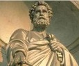
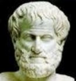
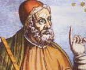
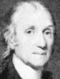
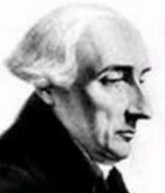
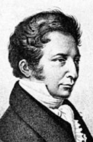
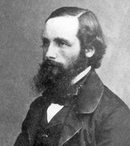
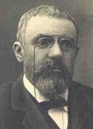

01 静止的时空：从芝诺悖论说起 飞矢不动，万物静止
02 运动的时空：微积分思想 瞬时速度与平均速度，用数学来描述时空
03 绝对的时空：朴素沉静的绝对时空 每个人的时空是一样的
牛顿运动规律：机械运动的世界（宏观世界的低速运动）
04 相对的时空：时空一体，同时相对 空间的运动影响时间的流逝，时空一体
05 弯曲的时空：引力即几何 物质塑造时空
06 膨胀的时空：时空的方向性
07 混沌的时空：无序的世界 热力学第二定律：无序体现时间的方向
08 量子的世界：时空是不连续、不确定的
西方哲学科技史名人录
- 荷马 Homer 前9世纪-8世纪
- 泰勒斯 Thales 前624年-546年
- 毕达哥拉斯 Pythagoras 前580-500
- 芝诺 Zeno of Elea 约前490-前425
- 苏格拉底 Socrates 前469年-399年
- 柏拉图 Plato 前427-347
- 欧多克斯 Eudoxus of Cnidus 前408-355
- 亚里士多德 Aristotle 前384-322
- 欧几里得 Euclid 前330-260
- 赫罗菲拉斯 Herophilus 前320- ……
- 阿利斯塔克 Aristarchus 前315-230
- 阿基米德 Archimedes 前287-212
- 埃拉托斯特尼 Eratosthenes 前276-194
- 希帕克 Hipparchus 前140-
- 克罗狄斯·托勒密 Claudius Ptolemy 90-168
- 丢番图 Diophantus 246-330
- 普罗克鲁斯 Proclus 412-485
- 约翰·斐罗波诺斯 John Philoponos 公元6世纪（5xx年）
- 托马斯·阿奎纳 Thomas Aquinas 1225-1274
- 奥卡姆的威廉 William of Ockham 约公元1295－ 1349
- 克里斯托弗·哥伦布 Cristoforo Colombo 1451-1506
- 列奥纳多·达·芬奇 Leonardo da Vinci 1452-1519
- 尼古拉·哥白尼 Mikolaj Kopernik 1473-1543
- 达塔格里亚 Tartaglia 1500-1557
- 班纳带蒂 Benedetti 1530-1590
- 弗朗索瓦·韦达 Francois Viète 1540-1603
- 吉尔伯特 William Gilbert 1544-1603
- 第谷·布拉赫 Tycho Brahe 1546-1601
- 布鲁诺 Giordano Bruno 1548-1600
- 西蒙·斯台文 Simon Stevin 1548-1620
- 纳皮尔 John Napier 1550-1617
- 弗朗西斯·培根 Francis Bacon 1561-1626
- 伽利略 Galilei 1564-1642
- 约翰尼斯·开普勒 Johannes Kepler 1571-1630
- 威廉·哈维 William Harvey 1578-1657
- 勒内·笛卡尔 Rene Descartes 1596-1650
- 皮耶·德·费马 Pierre de Fermat1601-1665
- 帕斯卡 Blaise Pascal 1623-1662
- 罗伯特·波义耳 Robert Boyle 1627-1691
- 克里斯蒂安·惠更斯 Christiaan Huyghens 1629-1695
- 列文虎克 Antony van Leeuwenhoek 1632-1723
- 罗伯特·胡克 Robert Hooke 1635-1703
- 艾萨克·牛顿 Isaac Newton 1643-1727
- 奥劳司·雷默 Olaus Romer 1644-1710
- 莱布尼茨 Gottfried Wilhelm Leibniz 1646-1716
- 埃德蒙·哈雷 Edmond Halley 1656-1742
- 威里布里德·斯涅耳 Willebrord van Royen Snell 1580-1626
- 马森布罗克 Pieter Van Musschenbrock 1692-1761
- 约翰·哈里森 John Harrison 1693-1776
- 本杰明·富兰克林 Benjamin Franklin 1706-1790
- 莱昂哈德·欧拉 Leonhard Euler 1707-1783
- 皮埃尔·勒·鲁瓦 Pierre Le Roy 1717-1785
- 卡文迪什 Henry Cavendish 1731-1810
- 库仑 Charles-Augustin de Coulomb 1736-1806
- 约瑟夫·拉格朗日 Joseph-Louis Lagrange 1736-1813
- 瓦特 James Watt 1736-1819
- 安托万-洛朗·德·拉瓦锡 Antoine-Laurent de Lavoisier 1743-1794
- 亚历山德罗·伏特 Alessandro Volta 1745-1827
- 查理 Jacques Alexandre Cesar Charles 1746-1823
- 爱德华·琴纳 Edward Jenner 1749-1823
- 皮埃尔-西蒙·拉普拉斯 Pierre-Simon marquis de Laplace 1749-1827
- 弗灵契曼·普鲁斯脱 Frenchman proust 1755-1826
- 杰里米亚·李希特 Jeremiah Richter 1762-1807
- 约翰·道尔顿 John Dalton 1766-1844
- 理查德·特里维希克 Richard Trevithick 1771-1833
- 安培 ampere 1775-1836
- 阿伏伽德罗 Amedeo Avogadro 1776-1856
- 汉斯·奥斯特 Hans Christian Orsted 1777-1851
- 高斯 Gauss 1777-1855
- 汉弗莱·戴维 Humphry Davy 1778-1829
- 盖·吕萨克 Joseph Louis Gay-Lussac 1778-1850
- 乔治·史蒂芬逊 George Stephenson 1781-1848
- 乔治·西蒙·欧姆 Georg Simon Ohm 1787-1854
- 迈克尔·法拉第 Michael Faraday 1791-1867
- 冯·贝尔 Von Bell 1792-1876
- 罗巴切夫斯基 Nikolas lvanovich Lobachevsky 1792-1856
- 尼古拉·莱昂纳尔·萨迪·卡诺 Nicolas Léonard Sadi Carnot 1796-1832
- 尤斯图斯·冯·李比希 Justus von Liebig 1803-1873
- 施莱登 Matthias Jakob Schleiden 1804-1881
- 查尔斯·罗伯特·达尔文 Charles Robert Darwin 1809-1882
- 施旺 Theodor Schwann 1810-1882
- 乔治·布尔 George Boole 1815-1864
- 西门子 Ernst Werner von Siemens 1816-1892
- 詹姆斯·普雷斯科特·焦耳 James Prescott Joule 1818-1889
- 白里悌(Pelletier)与卡芬土(Caventou) 1820
- 孟德尔 Gregor Johann Mendel 1822-1884
- 鲁道夫·克劳修斯 Rudolf Clausius 1822-1888
- 路易斯·巴斯德 Louis Pasteur 1822-1895
- 开尔文威廉·汤姆逊 William Thomson 1824-1907
- 波恩哈德·黎曼 Bernhard Riemann 1826-1866
- 凯库勒 Friedrich A Kekule 1829-1896
- 詹姆斯·克拉克·麦克斯韦 James Clerk Maxwell 1831-1879
- 奥古斯特·奥托 Nikolaus August Otto 1832-1891
- 阿尔弗雷德·诺贝尔 Alfred Bernhard Nobel 1833-1896
- 德米特里·门捷列夫 Dmitri Mendeleyev 1834-1907
- 戈特里布·戴姆勒 Geottlieb Daimler 1843-1900
- 弗莱明 Fleming·w 1843-1905
- 卡尔·弗里特立奇·本茨 Karl Friedrich Benz 1844-1929
- 格奥尔格·康托尔 Georg Cantor 1845-1918
- 威廉·康拉德·伦琴 Wilhelm Konrad Rontgen 1845-1923
- 亚历山大·格拉汉姆·贝尔 Alexander Graham Bell 1847-1922
- 托马斯·阿尔瓦·爱迪生 Thomas Alva Edison 1847-1931
- 亨利·贝可勒尔 Henri Becquerel 1852-1908
- 阿尔伯特·亚伯拉罕·迈克尔逊 Albert Abraham Michelson 1852-1931
- 亨德里克·安东·洛伦兹 Hendrik Antoon Lorentz 1853-1928
- 儒勒·昂利·庞加莱 Jules Henri Poincaré 1854-1912
- 约瑟夫·约翰·汤姆逊 Thomson Joseph John 1856-1940
- 尼古拉·特斯拉 Nikola Tesla 1856-1943
- 海因里希·鲁道夫·赫兹 Heinrich Rudolf Hertz 1857-1894
- 马克斯·普朗克 Max Karl Planck 1858-1947
- 希尔伯特 David Hilbert 1862-1943
- 能斯特 Walther Hermann Nernst 1864-1941
- 莱特兄弟 Wright Brothers 1867-1912
- 居里夫人或玛丽·居里 Marie Curie 1867-1934
- 欧内斯特·卢瑟福 Ernest Rutherford 1871-1937
- 韦尔斯泰特 Richard Wells Tate 1872.8-1942.8
- 保罗·朗之万 Langevin 1872-1946
- 埃弗里 Avery 1877-1955
- 爱因斯坦 Albert Einstein 1879-1955
- 魏格纳 Alfred Lothar Wegener 1880-1930
- 亚历山大·弗莱明 Alexander Fleming 1881-1955
- 罗伯特·哈金斯·戈达德 Robert Hutchings Goddard 1882-1945
- 马克斯·玻恩 Max Born 1882-1970
- 尼尔斯·玻尔 Niels Henrik David Bohr 1885-1962
- 埃尔温·薛定谔 Erwin Schrodinger 1887-1961
- 爱德文·哈勃 Edwin Powell Hubble 1889-1953
- 查德威克 James Chadwick 1891-1974
- 路易·维克多·德布罗意 Louis Victor·Duc de Broglie 1892-1987
- 沃尔夫冈·泡利 Wolfgang E.Pauli 1900-1958
- 约里奥·居里 Joliot-Curie 1900-1958
- 恩利克·费米 Enrico Fermi 1901-1954
- 沃纳·海森堡 Werner Karl Heisenberg 1901-1976
- 保罗·狄拉克 Paul Adrien Maurice Dirac 1902-1984
- 约翰·冯·诺伊曼 John von Neumann 1903-1957
- 阿兰·麦席森·图灵 Alan Mathison Turing 1912-1954
- 莫克利 JohnW.Mauchly
- 韦纳·冯·布劳恩 Wernher von Braun 1912-1977
- 詹姆斯·沃森 James Dewey Watson 1928-
- 彭齐亚斯 Arno Penzias 1933-
- 罗伯特·埃利奥特·卡恩 Robert Elliot Kahn 1938-
- 丹尼斯·里奇 Dennis Ritchie 1941-2011
- 温顿·瑟夫 Vint Cerf 1943-
- 肯·汤普逊 Kenneth Lane Thompson 1943-
- 本贾尼·斯特劳斯特卢普 Bjarne Stroustrup 1950-
- 威廉·纳尔逊·乔伊 William Nelson Joy 1954-
- 蒂姆·伯纳斯·李 Tim Berners-Lee 1955-
- 比尔·盖茨 Bill Gates 1955-
- 史蒂夫·乔布斯 Steve Jobs 1955-2011
- 詹姆斯·高斯林 James Gosling 1955-
- 吉多·范罗苏姆 Guido van Rossum 1956-
- 林纳斯·托瓦兹 Linus Torvalds 1969-
公元前
1世纪-14世纪
15世纪-16世纪
17世纪
18世纪
19世纪
20世纪
公元前
- 荷马 Homer
- 泰勒斯 Thales
- 毕达哥拉斯 Pythagoras
- 芝诺 Zeno of Elea
- 苏格拉底 Socrates
- 柏拉图 Plato
- 欧多克斯 Eudoxus of Cnidus
- 亚里士多德 Aristotle
- 欧几里得 Euclid
- 赫罗菲拉斯 Herophilus
- 阿利斯塔克 Aristarchus
- 阿基米德 Archimedes
- 埃拉托斯特尼 Eratosthenes
- 希帕克 Hipparchus
- 克罗狄斯·托勒密 Claudius Ptolemy
- 丢番图 Diophantus
- 普罗克鲁斯 Proclus
- 约翰·斐罗波诺斯 John Philoponos
- 托马斯·阿奎纳 Thomas Aquinas
- 奥卡姆的威廉 William of Ockham
- 克里斯托弗·哥伦布 Cristoforo Colombo
- 列奥纳多·达·芬奇 Leonardo da Vinci
- 尼古拉·哥白尼 Mikolaj Kopernik
- 达塔格里亚 Tartaglia
- 班纳带蒂 Benedetti
- 弗朗索瓦·韦达 Francois Viète
- 吉尔伯特 William Gilbert
- 第谷·布拉赫 Tycho Brahe
- 布鲁诺 Giordano Bruno
- 西蒙·斯台文 Simon Stevin
- 纳皮尔 John Napier
- 弗朗西斯·培根 Francis Bacon
- 伽利略 Galilei
- 约翰尼斯·开普勒 Johannes Kepler
- 威廉·哈维 William Harvey
- 勒内·笛卡尔 Rene Descartes
- 皮耶·德·费马 Pierre de Fermat
- 帕斯卡 Blaise Pascal
- 罗伯特·波义耳 Robert Boyle
- 克里斯蒂安·惠更斯 Christiaan Huyghens
- 列文虎克 Antony van Leeuwenhoek
- 罗伯特·胡克 Robert Hooke
- 艾萨克·牛顿 Isaac Newton
- 奥劳司·雷默 Olaus Romer
- 莱布尼茨 Gottfried Wilhelm Leibniz
- 埃德蒙·哈雷 Edmond Halley
- 威里布里德·斯涅耳 Willebrord van Royen Snell
- 马森布罗克 Pieter Van Musschenbrock
- 约翰·哈里森 John Harrison
- 本杰明·富兰克林 Benjamin Franklin
- 莱昂哈德·欧拉 Leonhard Euler
- 皮埃尔·勒·鲁瓦 Pierre Le Roy
- 卡文迪什 Henry Cavendish
- 库仑 Charles-Augustin de Coulomb
- 约瑟夫·拉格朗日 Joseph-Louis Lagrange
- 瓦特 James Watt
- 安托万-洛朗·德·拉瓦锡 Antoine-Laurent de Lavoisier
- 亚历山德罗·伏特 Alessandro Volta
- 查理 Jacques Alexandre Cesar Charles
- 爱德华·琴纳 Edward Jenner
- 皮埃尔-西蒙·拉普拉斯 Pierre-Simon marquis de Laplace
- 弗灵契曼·普鲁斯脱 Frenchman proust
- 杰里米亚·李希特 Jeremiah Richter
- 约翰·道尔顿 John Dalton
- 理查德·特里维希克 Richard Trevithick
- 安培 ampere
- 阿伏伽德罗 Amedeo Avogadro
- 汉斯·奥斯特 Hans Christian Orsted
- 高斯 Gauss
- 汉弗莱·戴维 Humphry Davy
- 盖·吕萨克 Joseph Louis Gay-Lussac
- 乔治·史蒂芬逊 George Stephenson
- 乔治·西蒙·欧姆 Georg Simon Ohm
- 迈克尔·法拉第 Michael Faraday
- 冯·贝尔 Von Bell
- 罗巴切夫斯基 Nikolas lvanovich Lobachevsky
- 尼古拉·莱昂纳尔·萨迪·卡诺 Nicolas Léonard Sadi Carnot
- 尤斯图斯·冯·李比希 Justus von Liebig
- 施莱登 Matthias Jakob Schleiden
- 查尔斯·罗伯特·达尔文 Charles Robert Darwin
- 施旺 Theodor Schwann
- 乔治·布尔 George Boole
- 西门子 Ernst Werner von Siemens
- 詹姆斯·普雷斯科特·焦耳 James Prescott Joule
- 白里悌(Pelletier)与卡芬土(Caventou)
- 孟德尔 Gregor Johann Mendel
- 鲁道夫·克劳修斯 Rudolf Clausius
- 路易斯·巴斯德 Louis Pasteur
- 开尔文威廉·汤姆逊 William Thomson
- 波恩哈德·黎曼 Bernhard Riemann
- 凯库勒 Friedrich A Kekule
- 詹姆斯·克拉克·麦克斯韦 James Clerk Maxwell
- 奥古斯特·奥托 Nikolaus August Otto
- 阿尔弗雷德·诺贝尔 Alfred Bernhard Nobel
- 德米特里·门捷列夫 Dmitri Mendeleyev
- 戈特里布·戴姆勒 Geottlieb Daimler
- 弗莱明 Fleming·w
- 卡尔·弗里特立奇·本茨 Karl Friedrich Benz
- 格奥尔格·康托尔 Georg Cantor
- 威廉·康拉德·伦琴 Wilhelm Konrad Rontgen
- 亚历山大·格拉汉姆·贝尔 Alexander Graham Bell
- 托马斯·阿尔瓦·爱迪生 Thomas Alva Edison
- 亨利·贝可勒尔 Henri Becquerel
- 阿尔伯特·亚伯拉罕·迈克尔逊 Albert Abraham Michelson
- 亨德里克·安东·洛伦兹 Hendrik Antoon Lorentz
- 儒勒·昂利·庞加莱 Jules Henri Poincaré
- 约瑟夫·约翰·汤姆逊 Thomson Joseph John
- 尼古拉·特斯拉 Nikola Tesla
- 海因里希·鲁道夫·赫兹 Heinrich Rudolf Hertz
- 马克斯·普朗克 Max Karl Planck
- 希尔伯特 David Hilbert
- 能斯特 Walther Hermann Nernst
- 莱特兄弟 Wright Brothers
- 居里夫人或玛丽·居里 Marie Curie
- 欧内斯特·卢瑟福 Ernest Rutherford
- 韦尔斯泰特 Richard Wells Tate
- 保罗·朗之万 Langevin
- 埃弗里 Avery
- 爱因斯坦 Albert Einstein
- 魏格纳 Alfred Lothar Wegener
- 亚历山大·弗莱明 Alexander Fleming
- 罗伯特·哈金斯·戈达德 Robert Hutchings Goddard
- 马克斯·玻恩 Max Born
- 尼尔斯·玻尔 Niels Henrik David Bohr
- 埃尔温·薛定谔 Erwin Schrodinger
- 爱德文·哈勃 Edwin Powell Hubble
- 查德威克 James Chadwick
- 路易·维克多·德布罗意 Louis Victor·Duc de Broglie
- 沃尔夫冈·泡利 Wolfgang E.Pauli
- 约里奥·居里 Joliot-Curie
- 恩利克·费米 Enrico Fermi
- 沃纳·海森堡 Werner Karl Heisenberg
- 保罗·狄拉克 Paul Adrien Maurice Dirac
- 约翰·冯·诺伊曼 John von Neumann
- 阿兰·麦席森·图灵 Alan Mathison Turing
- 莫克利 JohnW.Mauchly
- 韦纳·冯·布劳恩 Wernher von Braun
- 詹姆斯·沃森 James Dewey Watson
- 彭齐亚斯 Arno Penzias
- 罗伯特·埃利奥特·卡恩 Robert Elliot Kahn
- 丹尼斯·里奇 Dennis Ritchie
- 温顿·瑟夫 Vint Cerf
- 肯·汤普逊 Kenneth Lane Thompson
- 本贾尼·斯特劳斯特卢普 Bjarne Stroustrup
- 威廉·纳尔逊·乔伊 William Nelson Joy
- 史蒂夫·乔布斯 Steve Jobs
- 比尔·盖茨 Bill Gates
- 蒂姆·伯纳斯·李 Tim Berners-Lee
- 詹姆斯·高斯林 James Gosling
- 吉多·范罗苏姆 Guido van Rossum
- 林纳斯·托瓦兹 Linus Torvalds
前9世纪-8世纪……古希腊……诗人……西周
古希腊盲诗人。相传记述了公元前12~前11世纪特洛伊战争，以及关于海上冒险故事的古希腊长篇叙事代表作--史诗《伊利亚特》和《奥德赛》，即是他根据民间流传的短歌综合编写而成。他生活的年代，当在公元前10~9、8世纪之间。他的杰作《荷马史诗》，在很长时间里影响了西方的宗教、文化和伦理观。
前624年-546年……古希腊……哲学……东周春秋 （老子：约前571-约前471年）
创建了古希腊最早的哲学学派。希腊七贤之一，西方思想史上第一个有记载有名字留下来的思想家，被称为"科学和哲学之祖"。
在泰勒斯进入中年时期，当他的母亲催促他早日娶一女子结婚时，他这么回答他的母亲：“还没有到那个时候。”
很久以后，当泰勒斯已步入老年之后，他的母亲更加担心他的婚姻大事了，但他又那样地回答他的母亲：“已经不是那个时候了。”
古希腊第一位自然哲学家泰勒斯，大约诞生于公元前624年；在东方，与泰勒斯几乎同时代的思想家老子诞生于大约公元前571年。这两位伟人，实际上代表着东西方两种不同的哲学和科学传统源流，尽管当时他们都已摆脱了传统的神话自然观的影响，但在建构解读世界、认知自然的哲学体系和理论架构当中，由于认知世界的角度不同、知识的兴趣点不同，以及思想的表达方式的差异，使东西方各自形成了截然不同的认知风格。
这种认知风格的差异在哲学上首先表现为西方推崇理性主义，而东方追求神秘主义。被西方誉为第一位哲学家和科学家的泰勒斯是古希腊自然哲学的开创者，也是西方第一位用理性的目光审视自然的先哲。他认为：自然界尽管千姿百态、千变万化，但总是由一些最基本的东西产生的，这个东西就是世界的基础或者本源；它既不是精神性的理念，也不是人们想象中的产物，它应该存于自然本身。于是，他提出“万物源于水”这样的命题。虽然在今天来看，这个说法十分幼稚，但是不可否认，这一个命题开创了人类认识自然的理性之路，是关于自然界理性观点的开始。
追究万物的共同本源是一个哲学命题，也是一个科学命题，既是哲学思维的起点，也是科学思维萌发的源泉。科学的一个基本原则，就是从具体的、复杂的、多变的自然现象中，找出内在的客观规律，再通过这种内在的客观规律来解释、说明或者预见更多的自然现象，而不是用主观意志或主体好恶来解释自然。在古希腊自然哲学产生之前，人们总是用拟人化的方式来解说自然，自然被认为是混乱、神秘、变化莫测和充满奇迹的。从泰勒斯的米利学派开始，古希腊的哲人们对自然采取了全新的态度，即理性、逻辑与批判的态度。他们认为世界是有条理的，是有秩序的，并按照定量的因果关系呈现出来，关键是人类用什么方法来揭示它。
从理论上来说，自然哲学是科学的前身，是科学产生的土壤。但是，中国古代哲学中没有古希腊那样完整的自然哲学体系，许多自然哲学火花散见于不同的哲学流派之中，缺乏逻辑上的自洽与系统化的理论体系。与古希腊自然哲学相比，中国古代自然科学和以原理、定律、定义表现出来的古希腊理性自然知识相比是薄弱的。尽管如此，以中国老子为代表的道家学说，曾经对自然和自然哲学表现出兴趣，提出万物的本源是先于天地生的非物质的“道”。在老子那里，“道”是万物的本源和开始，所谓“道生一、一生二、二生三、三生万物”这一思想的意义就在于：首先，老子与古希腊的先哲们一样，否定了神话自然观，从多元的自然观发展成为一元的宇宙观，力图说明世界的开始、自然的本源；其次，“道”本身也还是世界的秩序、自然的规律以及演化的动力，“道”通过阴阳对立、相互作用和渐次转化，从而展开为宇宙万物。老子的道家学术显然包含着朴素的辩证法思想，但这个“道”是神秘莫测的，甚至今天人们也还无法从科学的意义上去把握“道”的本质。
另一方面东西方哲学的差异还在于西方是主客观分离，而东方是天人合一。古希腊自然哲学作为理性主义的开端，其最大的特点在于关注自然，把人作为研究客观世界的主体。科学理性包含两个方面：一是主客二分，即把客观世界作为独立于人之外的事物来研究，并且把客观世界分为本质的世界和现象的世界，目的是认识现象世界后面的本质，来揭示客观世界的内在规律性；二是认识途径和方法，即要从客观世界的直观问题抽象出准确的概念，构造出符合客观规律的理论解释体系，通过逻辑推理演绎命题，通过归纳方法来提炼出客观规律，用数学手段来揭示事物的质与量之间的关系，而不是仅仅对事物做出简单笼统的现象描述和经验总结。
与西方自然哲学不同的是，中国传统哲学一直关心社会伦理道德胜过关心自然本身，对自然缺乏探究热情，也缺少研究方法，只有一些常识性的认识和思辨性的猜测，这对科学和哲学的发展都产生了不利的影响，使得原本很有生气的中国古代自然哲学思想，最终大都在社会伦理道德的说教中迷失了探索的方向，折断了想象的翅膀。
东西方的先哲们由于关注的对象不同，导致了结果的不同。中国传统哲学的另一个特点就是“天人合一”。从某种意义上来讲，中国传统哲学把认识自然的主体与认识客体合二为一，消除了科学从哲学之母中孕育而生的可能性。实际上，这是取消科学认识对象也就是取消了科学本身。尽管当代一些东西方学者非常推崇“天人合一”这种思想，认为它是人与自然和谐发展的思想的源流以及可持续发展观念的基础，但从历史的角度来看，中国古代这种主客观不分、简单类比的“天人合一”思想并没有给中国的科学带来进步。华裔诺贝尔物理奖获得者杨振宁更是直言：《周易》阻碍了中国科学的发展。
希腊为什么有科学？也许是因为希腊有个哲学传统，而这套哲学恰好不追求实用。但也许纯属偶然。希腊出了个泰勒斯，把从埃及学到的几何学和他自己的哲学结合起来，认为世界应该是数学的，而不是什么神的－他迈出了产生科学的最关键的一步。
前580-500……古希腊……数学、哲学……东周春秋（孔子 -551~-479）
毕达哥拉斯出生在爱琴海中的萨摩斯岛的贵族家庭，自幼聪明好学，曾在名师门下学习几何学、自然科学和哲学。因为向往东方的智慧，游历了巴比伦和印度，以及埃及(有争议)，吸收了美索不达米亚文明和印度文明(公元前480年)的文化。组成「毕达哥拉斯学派」,容许妇女听课。毕达哥拉斯本人以发现勾股定理(西方称毕达哥拉斯定理)著称于世。这定理早已为巴比伦人所知(在中国古代大约是公元前2到1世纪成书的数学著作《周髀算经》中假托商高同周公的一段对话。商高说：“…故折矩，勾广三，股修四，经隅五。”毕达哥拉斯派认为天体是神圣的和高贵的，他的运动是完全均匀的和圆周式的。有地球每日环绕火团的假说。
毕达哥拉斯学派对数学的强调，或许源于对音乐的观察。他们注意到，演奏弦乐器时，同时拨动粗细均等、材质相同、松紧一致的两根琴弦，若其弦长比例恰为两个小整数之比，则乐声和谐动听：也就是1、1/2、1/3、1/4、1/5、1/6……的倍数。如今我们知道，这一现象的影响有两个：一是两根弦同时发出的声音的周期性；二是每根弦发出的泛音的匹配度。
最早把数的概念提到突出地位的是毕达哥拉斯学派。他们很重视数学，企图用数来解释一切。宣称数是宇宙万物的本原，研究数学的目的并不在于使用而是为了探索自然的奥秘。他们从五个苹果、五个手指等事物中抽象出了五这个数。这在今天看来很平常的事，但在当时的哲学和实用数学界，这算是一个巨大的进步。在实用数学方面，它使得算术成为可能。在哲学方面，这个发现促使人们相信数是构成实物世界的基础。
西方不同于东方做学问的方法由此开端：用理性思维（非感性的，超越研发的）去理解（抽象）可知事物（真际）而非可感事物（实际）。
要知道，《易经》的象、数、理，也是无法超越感性的。另外，《易经》是文字产生之前对世界的一个理解，是用非文字的符号去表征世界的。
表象、实用、背后的原理。中国人的思维始终停留在表象、实用、模糊的层面。只有归纳，没有演绎。
世界上大部分地区的文化都没能萌发出现代科学思想，只有古希腊这一支萌发了出来，这不得不说古希腊他们很幸运。
约前490-前425……古希腊……数学家、哲学家……春秋、战国
芝诺生于意大利半岛南部的埃利亚城邦，他是埃利亚学派的著名哲学家巴门尼德的学生和朋友，以芝诺悖论著称。
巴门尼德认为，世界是唯一的存在，世界是一个整体，“存在”是绝对存在的，运动是荒谬的。
芝诺为驳斥古希腊哲学家德谟克利特的“原子论”观点，提出了无限的概论。
芝诺不象他的老师那样企图从正面去证明是一不是多，是静不是动，他常常从反面即归谬法来为“存在论”辩护。公元五世纪的评论家普罗克洛斯说过，芝诺从“ 多”和运动的假设出发，一共推出了40个各不相同的悖论。现存的芝诺悖论至少有8个，其中关于运动的4个悖论最为著名，用来证明运动是不可能的。
芝诺提出“阿基里斯跑不过乌龟”和“飞矢不动”等悖论来支持他老师巴门尼德关于“存在”不动、是一的学说。这些悖论中最著名的两个是：。
设想一支飞行的箭。在每一时刻，它位于空间中的一个特定位置。由于时刻无持续时间，箭在每个时刻都没有时间而只能是静止的。鉴于整个运动期间只包含时刻，而每个时刻又只有静止的箭，所以芝诺断定，飞行的箭总是静止的，它不可能在运动。上述结论也适用于时刻有持续时间的情况。对于这种情况，时刻将是时间的最小单元。假设箭在这样一个时刻中运动了，那么它将在这个时刻的开始和结束位于空间的不同位置。这说明时刻具有一个起点和一个终点，从而至少包含两部分。但这明显与时刻是时间是的最小单元这一前提相矛盾。因此，即使时刻有持续时间，飞行的箭也不可能在运动。总之，飞矢不动。箭悖论的标准解决方案如下：箭在每个时刻都不动这一事实不能说明它是静止的。运动与时刻里发生什么无关，而是与时刻间发生什么有关。如果一个物体在相邻时刻在相同的位置，那么我们说它是静止的，反之它就是运动的。
飞矢如果从某一时间点来看，确实是静止的，有一瞬时速度。但就一个时间段来看，却是运动的，有一平均速度。
芝诺认为“点积性与连续性”互为否定。
芝诺悖论用数学来指东说西其实就是1/2+1/4+1/8+1/16……等于无穷大。其实它是一个收敛的数列，极限就是1：
虽然芝诺时代已经过去二千四百多年了，但是围绕芝诺的争论还没有休止。不论怎样，人们无须担心芝诺的名字会从数学史上一笔勾销．正如美国数学史家E．T．贝尔(Bell)所说，芝诺毕竟曾“以非数学的语言，记录下了最早同连续性和无限性格斗的人们所遭遇到的困难。
”芝诺的功绩在于把动和静、无限和有限、连续和离散的关系惹人注意地摆了出来，并进行了辩证的考察．虽然不能肯定他对古典希腊数学的发展有无直接的重要影响，但是有一点决不是偶然的巧合：柏拉图写作对话《巴门尼德》篇的时候，因为其中讨论的主要话题之一是芝诺的观点，芝诺也是书中的主角之一，因此在柏拉图学园中很自然地热烈讨论起芝诺悖论来。当时欧多克索斯(Eudoxus)正在柏拉图学园中攻读和研究数学与哲学。欧多克索斯在稍后的时间里创立了新的比例论(《几何原本》第五卷中的主要内容)，从而克服了因发现不可公度量而出现的数学危机；并完善了穷竭法，巧妙地处理了无穷小问题。因此，在希腊数学发展的这个关键时刻，很难说芝诺没有对它的发展作出过有意义的贡献。
芝诺在哲学上被亚里士多德誉为辩证法的发明人。黑格尔在他的《哲学史讲演录》中指出：“芝诺主要是客观地辩证地考察了运动”，并称芝诺是“辩证法的创始人”。
前469年-399年……古希腊……科学、哲学……东周战国
古希腊著名的思想家、哲学家、教育家、公民陪审员，他和他的学生柏拉图，以及柏拉图的学生亚里士多德被并称为"古希腊三贤"，更被后人广泛地认为是西方哲学的奠基者。他身为雅典的公民，最后被雅典法庭以侮辱雅典神和腐蚀雅典青年思想之罪名判处死刑。饮下毒堇汁而死。
在苏格拉底以前，希腊的哲学主要研究宇宙的本源是什么，世界是由什么构成的等问题，后人称之为“自然哲学”。苏格拉底认为再研究这些问题对拯救国家没有什么现实意义。他曾说：我的朋友不是城外的树木，而是城内的人，正是出于这种对国家和人民命运的关心，苏格拉底开始研究人类本身，即研究人类的伦理问题，如什么是正义，什么是非正义；什么是勇敢，什么是怯懦；什么是诚实，什么是虚伪；什么是智慧，知识是怎样得来的；什么是国家，具有什么品质的人才能治理好国家，治国人才应该如何培养，等等。苏格拉底认为：哲学家的定义应该是热爱智慧的人，而不是有智慧的人，后人称苏格拉底的哲学为“伦理哲学”。他为哲学研究开创了一个新的领域，使哲学“从天上回到了人间”，在哲学史上具有伟大的意义。
苏氏自比产婆，从谈话中用剥茧抽丝的方法，使对方逐渐了解自己的无知，而发现自己的错误，建立正确的知识观念。
苏格拉底经常和人辩论。辩论中他通过问答形式使对方纠正、放弃原来的错误观念并帮助人产生新思想。这种问答分为三步：第一步称为苏格拉底讽刺，他认为这是使人变得聪明的一个必要的步骤，因为除非一个人很谦逊“自知其无知”，否则他不可能学到真知。第二步叫定义，在问答中经过反复诘难和归纳，从而得出明确的定义和概念，第三步叫助产术，引导学生自己进行思索，自己得出结论。
苏格拉底倡导的问答法对后世影响很大，直到今天，问答法仍然是一种重要的教学方法。
苏格拉底教学中有过这样一件事发生，在开学的第一天，苏格拉底对他的学生们说：“今天我们只做一件事，每个人尽量把手臂往前甩，然后再往后甩。”说着，他做了一遍示范。“从今天开始，每天做300下，大家能做到吗？”学生都笑了，这么简单的事，谁做不到呢。可是一年以后，苏格拉底再问的时候，他的全部学生中却只有一个人坚持了下来，后来这个人继他之后成为新一代思想家，这个人叫柏拉图。苏格拉底其实有一个助手，这个助手才是他真正的继承人。
苏格拉底有着属于他自己的教学方案
一天，在课堂上，哲学家苏格拉底拿出一个苹果，站在讲台前说：“请大家闻闻空气中的味道！”一位学生举手回答：“我闻到了，是苹果的香味！”苏格拉底走下讲台，举着苹果慢慢地从每一个学生的面前走过，并叮嘱道：“大家再仔细闻一闻，空气中有没有苹果的香味？”这时已有半数的学生举起了手。苏格拉底回到讲台上，又重新提出刚才的问题。这一次，除了一个学生没有举手外，其他人全都举起了手。苏格拉底走到这位学生面前问：“难道你真的什么气味也没闻到吗？”那个学生肯定地说：“我真的什么也没闻到！”这时，苏格拉底对大家宣布：“他是对的，因为这是一只假苹果。”这个学生就是后来大名鼎鼎的哲学家柏拉图。
前427-347……古希腊……哲学……东周战国
柏拉图思想、柏拉图主义、柏拉图式爱情等。
柏拉图的主要作品为对话录，其中绝大部分对话都有苏格拉底出场。但学术界普遍认为，其中的苏格拉底形象并不完全是历史上的苏格拉底。
柏拉图宇宙观：宇宙是一个圆球，因为圆球是对称和完善的，球面上的任何一点都是一样。宇宙也是活的，有一个灵魂充溢全部空间，而且由于它是活的，所以在运动着。宇宙的运动是一种环行运动，因为圆周运动是最完善的，不需要手或脚来推动；
柏拉图是苏格拉底的学生，大约20岁时开始跟随苏格拉底学习，此后跟随苏格拉底8年，是苏格拉底的忠实信徒和亲密朋友。柏拉图深受苏格拉底的反诘教育法的启发，留给了后世的是一系列对话录。公元前399年，苏格拉底被诬告并处死，株连到柏拉图，柏拉图被迫离开雅典流亡国外，达12年之久。
他逃离雅典后游历了许多地方，如文明古国埃及、北非的希腊殖民地昔勒尼、意大利岛南部的城市塔林敦、西西里岛的城邦叙拉古等。在叙拉古由于与该城邦的僭主发生政治分歧，触怒了僭主，被卖为奴隶，幸遇朋友相助将他赎出，送回雅典，那时他已40岁。
柏拉图提出了比苏格拉底更为完整的教育理论。他的教育理论集中表现在他的最著名的一本著作《理想国》中。柏拉图认为当时希腊各城邦国家的政治制度都不够理想，弊端很多。于是他把当时希腊的各种政治制度以及当时希腊以外（如埃及等）的政治制度加以分析、比较、综合、总结，设计了自己的一种政治制度，作为自己的理想国家。这个“理想国”其实是一个奴隶主统治的等级森严的国家，而且是不可能实现的。不过其中也有不少很好的主张，这些主张对后世的政治有很大影响。《理想国》一书中有相当多的篇幅是谈教育的，所以教育界把它看成一本重要的教育著作。
前408-355……古希腊……天文学、数学……东周战国
几何角度解释天体运动，天体观测，定量天文学和宇宙假说联系起来第一人。给每一种简单的周期运动指定一个圆周，或者一个球形的壳层，以地球为中心，把这些球层合并起来就能相当合理地描述某一特定天体的复杂周期运动。欧多克斯的学生卡立普斯（ Callipus，约公元前325年）给每一个天体加上一个额外的球层，使总数成为三十四个，而亚里士多德进一步又增加了二十二个。可是同心球层的体系从一开头就招致了某些困难。它要求天体应当永远和地球保持同一距离，而人们早已知道金星和火星这样的行星看上去的亮度是时常变化的，这就意味着这些行星和地球有时靠近些，有时离开较远。再者，人们观察到日食有时候全食，有时候环食，这说明太阳和月亮离地球的距离也在变动。
前384-322……古希腊……哲学、科学……东周战国
古希腊哲学家，柏拉图的学生、亚历山大大帝的老师。
他的著作包含许多学科，包括了物理学、形而上学、诗歌（包括戏剧）、音乐、生物学、动物学、逻辑学、政治、政府、以及伦理学。和柏拉图、苏格拉底（柏拉图的老师）一起被誉为西方哲学的奠基者。亚里士多德的著作是西方哲学的第一个广泛系统。
亚里士多德在希腊科学史上标志着一个转折点，因为他是最后提出一个整个世界体系的人，而且是第一个从事广泛经验考察的亚里士多德创立了运行的天体是物质实体的学说，而不仅仅是欧多克斯所设想的几何结构。每一层天球层把它的运动直接传给下面的一层天球层，因此载有恒星的最外层天球层，通过在本身轴上的周日运转，使所有的球层和球层上所载的天体都随着它作周日运转。为了使一个天体所特有的运动不致传给直接处在它下面的天体，亚里士多德在载有行星的每一组球层之间插进若干 “不转动的球层”。这些不转动的球层具有同样的运转轴，同样的速度，并且和推动处于它们之上行星运动的球层数目相等，但是以相反的方向运动；这样它们就抵消了上面那个行星所特有的一切运动，只把周日运动传给下面行星。照亚里士多德的说法，最外层的恒星球层是由处在宇宙边缘的原动天或者不动的推动者推动的；原动天或不动的推动者统率着一切天球和整个宇宙。亚里士多德好象还设想每一个其他的天球也都有一个较次的不动推动者，执掌这个天球的特殊运动。推动者是有灵性的，推动者和天体的关系类似灵魂和身体的关系。行星的推动者和原动天的作用相反，所以诸行星有其和周日运动相反的由西向东运动。最外面的一个行星土星，在抵抗原动天的推动上感到最大困难，因此运转周期也最长，而最里面的星体月亮的运转周期则最短。亚里士多德设想天体和地球有迥然不同的材料组成。
一切处在月层下面的东西都是由四种地上元素土、水、气、火组成的。天体是由第五种而且更纯洁的元素“精英”组成的。天体是不朽和永恒的，它们的运动也是如此，因此是均速和圆周式的。地球上有生与朽，因此地上的运动是直线运动，和地球上一切现象一样有其开始和终结。天体永远固定在它们指定的球层上，但是地上的物体则不然，它们总是不断地力图回到原位。土元素和水元素具有引力，总要趋向宇宙的中心。气元素和火元素具有轻的性质，使它们总要上升到高空中的原来位置。火和气是一种更高贵的元素，因此它的天然地位也要高些。同样，气比水高贵，水比土高贵。所有天体都比地上物体高贵，而且它们距宇宙中心愈远就愈加完善。月亮是最不完善的，这可以从它的斑驳表面看出来，而恒星天和原动天则是完善的，因为“包络的并属于极限的东西比完成了的东西更加优越”。
在物理学方面，亚里士多德认为各物体只有在一个不断作用着的推动者直接接触下，才能够保持运动。如果推动者停下来，或者和物体失去接触，物体就会立刻停止。这种推动者或在物体内部，如自动的生物那样；或在物体外面，如物体受外力推动或者拉引的那样。均匀的物体只能靠外来的推动而动，因为主动的物体都必然是合成体，包括推动者和被推动者在内。由于这个缘故，一块石头从石炮里射出来，从来不是自动的。石头离开石炮时，空气为了防止形成真空，就从石头后面灌进来，以维持石头的运动。根据亚里士多德的说法，“真空”是不能存在的，因为空间必须装满物质。这样才能通过直接接触来传递物理作用。
亚里士多德是柏拉图的学生，他抛弃了他老师所持的唯心主义观点，认为理念是实物的原型，它不依赖于实物而独立存在。
亚里士多德在哲学上最大的贡献在于创立了形式逻辑这一重要分支学科。逻辑思维是亚里士多德在众多领域建树卓越的支柱，这种思维方式自始至终贯穿于他的研究、统计和思考之中。他在研究方法上，习惯于对过去和同时代的理论持批判态度，提出并探讨理论上的盲点，使用演绎法推理，用三段论的形式论证。
自亚里士多德第一次提出以“三段论”为核心的演绎推理，开创了逻辑的形式化、公理化、抽象化和体系化以后，近现代发展起来的不论是数理逻辑还是辩证逻辑，都是以形式逻辑作为基础的。作为逻辑基础的“三段论”，看上去是一个简单朴素的推理，但它孕育了科学理性的精神，锻造了科学思维的工具，对科学进步的意义是深远的。
所有的人都会死
苏格拉底是人
所以苏格拉底也会死
一个一般性的原则（大前提）：所有的人都会死
一个附属于一般性的原则的特殊化陈述（小前提）：苏格拉底是人
引申出一个符合一般性原则的特殊化陈述（结论）：所以苏格拉底也会死
三段论是人们进行数学证明、办案、科学研究等思维时，能够得到正确结论，的科学性思维方法之一。是演绎推理中的一种正确思维的形式（另外一种形式是归纳推理）。
前330-260……古希腊……数学……东周战国
古希腊数学家。他活跃于托勒密一世(公元前364年-公元前283年)时期的亚历山大里亚。被称为"几何之父"，数学巨著《几何原本》的作者，亦是世界上最伟大的数学家之一。著名的古希腊学者阿基米德，是他“学生的学生”——卡农是阿基米德的老师，而欧几里得是卡农的老师。
《几何原本》是一部集前人思想和欧几里得个人创造性于一体的不朽之作。传到今天的欧几里得著作并不多，然而我们却可以从这部书详细的写作笔调中，看出他真实的思想底蕴。全书共分13卷。书中包含了5条“公理”、5条“公设”、23个定义和467个命题。在每一卷内容当中，欧几里得都采用了与前人完全不同的叙述方式，即先提出公理、公设和定义，然后再由简到繁地证明它们。这使得全书的论述更加紧凑和明快。而在整部书的内容安排上，也同样贯彻了他的这种独具匠心的安排。它由浅到深，从简至繁，先后论述了直边形、圆、比例论、相似形、数、立体几何以及穷竭法等内容。
其中有关穷竭法的讨论，成为近代微积分思想的来源。仅仅从这些卷帙的内容安排上，我们就不难发现，这部书已经基本囊括了几何学从公元前7世纪的古埃及，一直到公元前4世纪—— 欧几里得生活时期——前后总共400多年的数学发展历史。
这其中，颇有代表性的便是在第1卷到第4卷中，欧几里得对直边形和圆的论述。正是在这几卷中，他总结和发挥了前人的思维成果，巧妙地论证了毕达哥拉斯定理，也称“勾股定理”。即在一直角三角形中，斜边上的正方形的面积等于两条直角边上的两个正方形的面积之和。他的这一证明，从此确定了勾股定理的正确性并延续了2000多年。
《几何原本》是一部在科学史上千古流芳的巨著。它不仅保存了许多古希腊早期的几何学理论，而且通过欧几里得开创性的系统整理和完整阐述，使这些远古的数学思想发扬光大。它开创了古典数论的研究，在一系列公理、定义、公设的基础上，创立了欧几里得几何学体系，成为用公理化方法建立起来的数学演绎体系的最早典范。
照欧氏几何学的体系，所有的定理都是从一些确定的、不需证明而礴然为真的基本命题即公理演绎出来的。在这种演绎推理中，对定理的每个证明必须或者以公理为前提，或者以先前就已被证明了的定理为前提，最后做出结论。这一方法后来成了用以建立任何知识体系的严格方式，人们不仅把它应用于数学中，也把它应用于科学，而且也应用于神学甚至哲学和伦理学中，对后世产生了深远的影响。
尽管欧几里得的几何学在差不多2000年间，被奉为严格思维的范例，但实际上它并非那么完美。人们发现，一些被欧几里得作为不证自明的公理，却难以自明，越来越遭到怀疑。比如“第五平行公设”，欧几里得在《几何原本》一书中断言：“通过已知外一已知点，能作且仅能作一条直线与已知直线平行。”这个结果在普通平面当中尚能够得到经验的印证，那么在无处不在的鐾鸱球面之中(地球就是个大曲面) 这个平行公理却是不成立的。俄国人罗伯切夫斯基和德国人黎曼由此创立了球面几何学，即非欧几何学。
此外，欧几里得在《几何原本》中还对完全数做了探究，他通过2^(n- 1).(2^n - 1) 的表达式发现头四个完全数的。当 n= 2： 2^1(2^2 - 1) = 6当 n= 3： 2^2(2^3 - 1) = 28当 n= 5：2^4(2^5 - 1) = 496当 n= 7： 2^6(2^7 - 1) = 8128一个偶数是完全数，当且仅当它具有如下形式：2^(n - 1).(2^n - 1)，此事实的充分性由欧几里得证明，而必要性则由欧拉所证明。其中2^n- 1是素数，上面的6和28对应着 n=2和3的情况。我们只要找到了一个形如2^n- 1的素数（即梅森素数），也就知道了一个偶完全数。尽管没有发现奇完全数，但是当代数学家奥斯丁?欧尔证明，若有奇完全数，则其形式必然是12p+ 1或36p+ 9的形式，其中 p 是素数。在10^18以下的自然数中奇完全数是不存在的。
西方崇尚思维工具的锻造，科学的思维方式通过思维工具的锻造而得到传承。如果说泰勒斯是力图用理性的方式通过物质元素来揭示自然的本原，古希腊的哲学家和数学家毕达哥拉斯则力图用逻辑的方法通过抽象的“数”及其关系来描述世界的本质。柏拉图学院门口更有一句警言：“不懂数学者免进！”正是对“数”的崇拜、对数学思维的工具的锻造。欧几里得几何学是人类历史上第一个在思维的条理性、语言的严格性、体系的严密性和推理的逻辑性上都无可挑剔的数学公理演绎系统。
爱因斯坦说，西方近代科学的发展是以两个伟大成就为基础的：一是以欧几里得几何学为代表的希腊哲学家发明的形式逻辑体系，二是文艺复兴时期证实通过系统的实验有可能找出因果关系的重要原则。（选自《爱因斯坦文集》第1卷）换言之，就思维方法而言，近代科学具备两个不可或缺的特征：严密的逻辑原则和严格的实验原则。
1953年爱因斯坦在美国加利福尼亚州给圣马托和J·E·斯威策的复信：
“西方科学的发展是以两大伟大的成就为基础，那就是：希腊哲学家发明形式逻辑体系(在欧几里得几何学中)，以及通过系统的实验发现有可能找出因果关系(在文艺复兴时期)。在我看来，中国的贤哲没有走上这两步是用不着惊奇的，令人惊奇的倒是这些发现（在中国）全都做出来了。”
前320- ……古希腊……解剖学家……东周战国
是第一个公开进行人体解剖的人，在亚历山大的工作，证实了他自己是第一个细心的解剖学家，也是第一个当众进行解剖表演的人，总共可能达六百次。
他看出脑是智力的来源，而亚里士多德则认为是心；而且他把神经和动作与感觉的机能联系起来。希罗费罗斯是第一个区别静脉和动脉的人，看出动脉有搏动，而静脉没有。他把神经分为感觉神经(指接受感觉信号的)和运动神经(指刺激运动的)。他还叙述了肝和脾。他描述了眼睛和视网膜并给它取了名字，还给肠子的第一段定名为十二指肠。他对生殖系统进行了研究，故关于卵巢和从子宫到卵巢的管道也有所描述。他还注意到了前列腺，并且为它取了名字。他注意到动脉不同于静脉，是跳动的，并用水钟来测定脉搏的时间，但他未能弄清动脉搏动和心跳之间的关系。他认为动脉是运输血液的，他还以为放血具有治疗价值。他强调放血这一论点，在医学上起了有害作用达二千年之久。
前315-230……古希腊……天文……东周战国
古希腊第一个著名天文学家。阿利斯塔克曾就学于雅典学园。他曾经提出了亚历山大里亚时期的最有独创性的科学假说。他是历史上最早提出日心说的人，也是最早测定太阳和月球对地球距离的近似比值的人。阿利斯塔克认为，地球每天在自己的轴上自转，每年沿圆周轨道绕日一周，太阳和恒星都是不动的，而行星则以太阳为中心沿圆周运转。这是古代最早的朴素日心说思想。阿利斯塔课开创了太阳、月亮与地球距离之比以及太阳、月亮、地球三者大小之比的测量，在留存至今的著作《论日月的大小和距离》中，求得日地距离为月地距离的18-20倍，太阳直径为月球直径的18-20倍以及为地球直径的6-7倍。尽管这些结果与实际值相差甚远，但他是第一个认识到太阳远比地球大得多的人。
他很可能因此逻辑地推论大的东西不能绕小的东西转动，从而提出了古代的日心说：恒星和太阳静止不动，地球和行星在以太阳为中心的不同圆轨道上绕太阳转动，地球还每天绕轴自转一周。因此，恩格斯称他为"古代的哥白尼"。这种方法应用了一千多年。他还提出过一种方法，测定月食时月球视直径和地影直径的比例，以确定月地距离。这个方法后为喜帕恰斯所采用。此外，他还开创了三角计算，导出了不等式。
阿利斯塔克所著《论日月大小和距离》一书流传至今。在这一著作中，他应用几何学知识在科学史上第一次试图测量日、月和地球之间的距离。他设想在上、下弦，即月半圆时，日、月和地球应当形成一个直角三角形，通过测量日、月和地球距离的角距，就可以测算太阳和月亮的相对距离。他根据测得的角度87°，算出太阳与地球的距离是月亮与地球距离的19倍。他又根据日食情况，推得太阳直径是月球直径的19倍。他在月食时又计算了地球影子的宽度，得出地球直径是月球直径的3部。阿利斯塔克认为，如果假设包括地球在内的行星都围绕太阳旋转，而恒星因为看上去不动而无限遥远，那么天体运动就非常容易理解。阿利斯塔克的日心说经阿基米德的介绍，当时曾有一定的影响，但遭到了宗教势力的反对。日心说思想在当时没有为人们所接受。但是对于太阳和月亮的大小以及它们与地球间距离的测量工作，却始终有人进行着。为了进行上述的测量，首先要测量地球的大小。这项工作最早是由昔兰尼人埃拉托斯特尼进行的。尼西亚人希帕克也继承了阿利斯塔克的测量工作，他所测得的结果要精确得多，和现代计算结果已很相近。
前287-212……古希腊……东周战国、秦……哲、数、物
伟大的古希腊哲学家、百科式科学家、数学家、物理学家、力学家，静态力学和流体静力学的奠基人，并且享有“力学之父”的美称，阿基米德和高斯、牛顿并列为世界三大数学家。阿基米德曾说过：“给我一个支点，我就能撬起整个地球。”阿基米德还采用不断分割法求椭球体、旋转抛物体等的体积，这种方法已具有积分计算的雏形。
利用浮力原理检验皇冠是否为纯金、杠杆原理。阿基米德将欧几里德提出的趋近观念作了有效的运用。他利用“逼近法”算出球面积、球体积、抛物线、椭圆面积，后世的数学家依据这样的“逼近法”加以发展成近代的“微积分”。阿基米德还利用割圆法求得π的值介于3.14163和3.14286之间。
阿基米德的几何著作是希腊数学的顶峰。他把欧几里得严格的推理方法与柏拉图鲜艳的丰富想象和谐地结合在一起，达到了至善至美的境界，从而“使得往后由开普勒、卡瓦列利、费马、牛顿、莱布尼茨等人继续培育起来的微积分日趋完美”。
阿基米德还认为地球可能是圆的。晚年阿基米德开始怀疑地球中心学说，并猜想地球有可能绕太阳转动，这个猜想一直到哥白尼时代才被人们提出来讨论。阿基米德发展了天文学测量用的十字测角器，并制成了一架测算太阳对向地球角度的仪器。
前276-194……古希腊……战国、秦、西汉……诗人、地理
哲学埃拉托斯特尼的贡献主要是设计出经纬度系统，计算出地球的直径。为了对太阳和月亮的绝对大小和它们与地球的距离进行测算，就先要量出地球的大小。这种测算首先是由昔兰尼人埃拉托斯特尼（ Eratosthenes，公元前284－192）第一次进行的；他当时是亚历山大里亚缪司学院的图书馆馆长。他注意到太阳夏至日那天在塞恩时直接照在我们头顶上，而在亚历山大里亚的日光则离开垂直线有七度，这个数值是从一根有一定高度的杆子所投出影子的长度计算出来的。埃拉托斯特尼计算亚历山大里亚在塞恩正北面五千希腊里，因此地球的周长是二十五万希腊里。关于希腊里的计算各有不同，但如果十希腊里等于一英里的话，那么埃拉托斯特尼算出的地球两极直径就比我们现在算出的数值只短五十英里。
前140- ……古希腊……西汉……天文
发现回归年，即太阳回到同一的二分点所需要的时间，比恒星年即太阳回到恒星间同一方位的时间要短一点。这里的差异，即分点岁差，他估计为每年约合三十六弧秒，而现代的数值约为五十弧秒。希帕克看出，为了进行这类观测，需要为将来的天文观测家绘制一张星体方位表。因此他就测定了大约1080个恒星的方位，根据它们的亮度分为六级。希帕克还继续做阿利斯塔克测定太阳和月亮大小和距离的工作。他通过观测月亮在两个不同纬度的平纬度，发现月亮距离地球约为地球直径的三十六倍，这个数字比较大一点，但是比阿利斯塔克根据月亮对地球上一个观测者的张角所测定的九倍地球直径数值就要改进得多了。
只有古代希腊有科学，因为在古希腊之外，其他的地方都没有科学。希腊跟罗马相比，罗马更强大，但是罗马没有科学。罗马帝国征服了希腊，统治了欧洲那么长时间，欧洲在那段时间里面没有任何科学，就连当时的希腊人也都放弃了科学，幸亏后来十字军东征，把阿拉伯人把希腊的经典著作都翻译了过去，科学在穆斯林的世界里面得以保存。
阿拉伯人也没有科学，阿拉伯人翻译科学著作不是为了追求科学，是认为那东西可能有用，再加上当时的阿拉伯人有钱，也有时间，所以就干那种傻事。阿拉伯帝国衰落以后，欧洲人又把那些东西再翻译回欧洲。当时欧洲人这么做，是不是在为了追求科学？他们这么做也不是为了追求科学，他们只是觉得这些可能有用。另外欧洲当时那些贵族认为把这些东西搞过来，可以彰显自己的身份和地位。但是古希腊科学的种子毕竟保存下来了，并且在漫长的中世纪里面默默的传承，直到伽利略的出现。等到伽利略开始做那些反常的科学实验的时候，科学才开始真正在欧洲复兴。
那古希腊为什么会有科学？也许因为希腊有一个哲学传统，但是当时希腊的那套哲学传统，追求的恰恰是什么？无用！不追求有用。也许纯属偶然，古希腊出现了一个泰勒斯，一个大哲学家，他把从埃及学到的几何学跟自己研究到的哲学结合到一起，他认为这个世界应该是数学的，而不是什么神的，他抓住了产生科学最关键的一步。
科学是一个难能可贵的东西。可能在一个初始条件一模一样的平行宇宙当中，宇宙人、地球人到今天也没有科学。科学可能还是一个很脆弱的东西。希腊科学并没有帮助希腊人富国强兵，古罗马人认为希腊那一套东西没用，直接就把科学给放弃了。在二战的时候，德国纳粹曾经禁止研究量子论。第一，因为当时搞量子论的那部分科学家大部分都是犹太人，你搞这个研究就是不爱国。第二，量子论研究的那些东西太过于抽象，就好像当时兴起来的抽象派艺术一样，不符合主流的审美价值观。
1世纪-14世纪
90-168……古希腊……东汉……天文、地学、光学
"地心说"的集大成者。托勒密著有四本重要著作：《天文学大成》(Almagest)、《地理学》(Geography)、《天文集》(Tetrabiblos)和《光学》(Optics)。
《天文学大成》--500年的希腊天文学和宇宙学思想的顶峰--统治了天文界长达13个世纪，是当时天文学的百科全书，直到开普勒的时代，都是天文学家的必读书籍。这样一本知识上参差交错且复杂的著作，不是单独一个人所能完成的。托勒密依靠了他的先驱者，特别是喜帕恰斯。
在《地理学》一书中，托勒密充分地解释了怎样从数学上确定纬度和经度线。然而，没有一条经线是用天文学方法确定的，仅仅少数的纬度线是这样计算的。他将陆上测量的距离归算为度，就在这无把握的网格上定出地区的位置。海面上的距离，简直是猜测出来的。他把加那利群岛放到它们真正位置以东7°去了，因而整个的网格定位只能是错误的。《地理学》对西方世界观的影响几乎也像《天文学大成》一样巨大和持久。托勒密标出的亚洲位置比它实际的更近(向西)，与哥伦布同时代的地图制造者继承了他的错误观点，否则哥伦布也许就不会航行了。
现代学者的详细研究表明，C.哥伦布(Columbus,1451-1506)在开始在他那改变人类历史的远航之前，至少曾细心阅读过5本书，其中之一就是托勒密的《地理学》，而其余4本与此不是同类著作，因此可知哥伦布的地理思想主要来自托勒密。哥伦布相信通过一条较短的渡海航线，就可以到达亚洲大陆的东海岸，结果他在他设想的亚洲东岸位置上发现了美洲新大陆--尽管他本人直到去世时仍认为他发现的正是托勒密地图上所绘的亚洲大陆。托勒密知道有马来半岛和蚕丝之国，即中国。埃拉托斯特尼的地图东面只到印度的恒河为止
246-330……古希腊……晋……数学

丢番图(Diophantus)是古希腊亚历山大学后期的重要学者和数学家(约公元246-330年，据推断和计算而知)丢番图是代数学的创始人之一，对算术理论有深入研究，他完全脱离了几何形式，在希腊数学中独树一帜。历山大时期的丢番图对代数学的发展起了极其重要的作用，对后来的数论学者有很深的影响。
丢番图的《算术》是讲数论的，它讨论了一次、二次以及个别的三次方程，还有大量的不定方程。现在对于具有整数系数的不定方程，如果只考虑其整数解，这类方程就叫做丢番图方程，它是数论的一个分支。不过丢番图并不要求解答是整数，而只要求是正有理数。从另一个角度看，《算术》一书也可以归入代数学的范围。代数学区别于其它学科的最大特点是引入了未知数，并对未知数加以运算。就引入未知数，创设未知数的符号，以及建立方程的思想﹝虽然未有现代方程的形式﹞这几方面来看，丢番图的《算术》完全可以算得上是代数。
希腊数学自毕达哥拉斯学派后，兴趣中心在几何，他们认为只有经过几何论证的命题才是可靠的。为了逻辑的严密性，代数也披上了几何的外衣。一切代数问题，甚至简单的一次方程的求解，也都纳入了几何的模式之中。直到丢番图，才把代数解放出来，摆脱了几何的羁绊。他认为代数方法比几何的演绎陈述更适宜于解决问题，而在解题的过程中显示出的高度的巧思和独创性，在希腊数学中独树一帜。他被后人称为『代数学之父』(还有韦达)不无道理。
丢番图的出生日期不可靠，但他的墓碑上有很经典的一道数学题目："坟中安葬着丢番图，多么令人惊讶，它忠实地记录了所经历的道路。上帝给予的童年占六分之一，又过了十二分之一，两颊长胡，再过七分之一，点燃起结婚的蜡烛。五年之后天赐贵子，可怜迟来的宁馨儿，享年仅及其父之半，便进入冰冷的墓。悲伤只有用数论的研究去弥补，又过了四年，他也走完了人生的旅途。终于告别数学，离开了人世。与其有关的问题1丢番图的寿命：x=x/6+x/12+x/7+5+x/2+4；2丢番图开始当爸爸的年龄：38(岁)；3儿子死时丢番图的年龄：84-4=80(岁)。
412-485……拜占庭……南朝 宋、齐……数学
他的时代发展了一种世界学说，把托勒密的数学体系，连同亚里士多德的物理学、宇宙学说的主要内容，都结合进去了。这个学说设想天界是九个同心圆的壳层，第一层载着月亮，第二层载着水星，这样的顺序推上去，直到载有许多恒星的第八层，而第九层则是原动天。每一壳层都很厚，可以容纳得了托勒密学说中的那些本轮，而且这一连串的壳层都是如亚里士多德设想的那样一个接一个的。因此，一个天体离开地球最远时等于上面一个天体最接近地球的距离。就是说，月亮离地球的最大距离等于水星离地球最近的距离，依此类推。根据这种说法，载有天体的壳层的厚薄，和这些天体离开地球的平均距离可以测算出来，求得所谓宇宙的绝对尺度。这九个天层需要有推动者；根据柏拉图和亚里士多德的学说，这些推动者应当比被推动的天体具有更高贵的品质和灵性。柏拉图曾经指出，天上的神灵分为等级，而狄奥尼修斯（ Dionysius）则把这些神灵说成就象圣经里提到的各种天使。狄奥尼修斯可能是普罗克鲁斯的一个学生，而且肯定是属于新柏拉图学派传统。
狄奥尼修斯把天神分为九级，又把九级分为三等，这样化分的结果就使这些等级不同的天神天使成了九个天层运动的执掌者了。第一等级的三个是希拉菲姆（意为最高位天使） 、齐拉比姆（意为司知识的第二位天使）和塞隆斯（意为第三位天使） ，其次是多明乃欣（意为统治） 、维邱（意为德行）和保尔（意为权力） ，最后是普林席巴里（意为君主） 、大安琪儿（大天使）和安琪儿（小天使） 。希拉菲姆专司原动天的运动，齐拉比姆专司恒星天的运动，如此类推。最后是安琪儿专司月层的运动。处于九级天神之上的是上帝，上帝住在第十层的净火天； 九层天的下面是地球上的万物，以人类为长，其次是动物、植物和宇宙的渣滓。每一级生物本身都按等级排列，所以都有其各分主次的神。照狄奥尼修斯的说法，这就仿佛地球上的教会有大长老、主教等等，一直到下级职司。所以宇宙看来是由一连串的生灵组成的，从处在宇宙边缘的上帝起一直伸展到处在地球中心的地狱中最卑贱的众生，因为每一级的最高生物和它上一级的最低生物都是一个接一个的
公元6世纪（5xx年）……南北朝
隋斐罗波诺斯否认天体是由神灵推动的。他认为上帝开头就赋予天体一种冲力，即一种不随时间消逝的动力，正如上帝赋予重物体向地球坠落的倾向一样。地上的物体和天上的星体在这一点上是相近的，它们的本质并没有什么不同。斐罗波诺斯设想运动的物体一般都不需要经常有个推动者和它直接接触，因为一个力给物体提供了冲力，冲力就可以维持物体的运动。
由于这个道理，真空可以存在，因为冲力说并不要求一个物质的连续体通过物理的接触传递作用。还有，飞矢就是在它本身的冲力下穿过这种真空的，并不如亚里士多德所说的那样，需要空气从它后面经常施加压力。斐罗波诺斯提出的冲力说在十三世纪又得到流行，这个学说和亚里士多德与狄奥尼修斯的见解在内容上显示了重要的分歧，而后者的见解在中世纪是广泛为人们接受的。
1225-1274……意大利……南宋……哲学、神学
亚里士多德的哲学被阿尔伯特·马格努斯（ Albertus Magnus，约公元1206－1280），特别是被托马斯·阿奎那（ Thomas Aquinas，公元1225-1274）拿来和天主教神学综合起来。这些人并没有越出亚里士多德的宇宙论。他们说，宇宙是一个天球，球里面充满了物质；真空是不可能的，因为一切活动在推动力和被动体之间都少不了要有一种直接或间接的物质接触。阿奎那证明上帝存在的第一条是天球的运动需要一个原动者，即上帝。上帝的活动并不直接显示在天球上。天体的运动根据五世纪狄奥尼修斯的假说，是由不同等级的天使般的神祗（(qí）在中间掌管的。
约公元1295－ 1349……英国……元、明
发起了一个重要运动，否定阿奎那关于上帝存在的第一条证明的正确性。他论证说，一个运动的物体不一定需要一个推动者的连续物质接触，因为举例来说，磁针就可以使一块铁动起来而不碰到它。这是一个超距作用的例子，可以设想在真空中也能发生。既然空中不需要装满物质就能传导物理效应，真空就是可能的。奥卡姆的威廉恢复了约翰·斐罗波诺斯的冲力说。斐罗波诺斯曾经设想，力给予物体一种冲力使物体运动，冲力是一种逐渐消逝的属性，因此物体最后会停了下来。奥铿的威廉同意斐罗波诺斯的飞矢能穿过真空的主张，并用来反对亚里士多德。而且他同意斐罗波诺斯的设想，说上帝可能开头给予天体一种不随时间消逝的冲力，因此不需要假定有各种各样的天神天使推动天球。奥卡姆的威廉声言，“较少的即可做到，用较多的反而无益”，这样就提出他的“剃刀” 原理。
冲力的讨论在牛津大学继续进行着，主要有沃尔特·伯利（ Walter Burley，公元1275－1357）、理查德·许撒斯（ RichardSuiceth，约公元1345年）和沃尔特·海地斯伯利（ Walter Heytesbury，活动于公元1330－1371） ，不过这种学说很快就失势，到了十五世纪时，牛津的学者大多数都讲授亚里士多德的物理学了。
冲力说在巴黎大学有了进一步的发展，首先是琼·比里当（ Jean Buridan） ，在公元1327年任巴黎大学校长。亚里士多德论述运动的物体是因为前面排出的空气为了防止真空，又从后面挤进来而将物体推动的。比里当提出两条重要的论证反对亚里士多德的这个论题。他说：第一，陀螺旋转而不改变位置，所以不可能是由排出的空气推动的。第二，一根尾端切平的标枪并不比一根两头尖的标枪走得更快些，而如果是空气推动的话，就应该走得快些。比里当认为在这种情况下，保持运动的力都是冲力。他觉得一个物体从一种力所获得的冲力，是和物体的密度、体积及其开头的速度成正比的。比里当追随奥铿的威廉和斐罗波诺斯，否认有天神、天使推动天体周转，设想天体的周转是由开头受到的冲力推动的。由于天上没有空气的阻力，这种冲力将永远不会减退。奥卡姆的威廉、比里当和艾伯特全都同情过地球的周日运动说，但是奥里斯姆是第一个公开采纳这种说法的人，并把他和力学上的冲力说联系起来。他论证说，地球的旋转就和天体的运转一样，将会在创世时给予它的原始冲力下无限期地继续运动下去，因为没有阻力使它停下来。冲力说者也赞成宇宙无穷无尽的见解，认为世界之外还有其他和我们一样的世界。
15世纪-16世纪
1451-1506……意大利、西班牙……明……航海家
一生从事航海活动，是第一个到达美洲的欧洲人。他相信地球是圆的，认为从欧洲西航可达东方的印度。在西班牙女皇鼎力支持下，先后4次出海远航。开辟了横渡大西洋到美洲的航路。先后到达巴哈马群岛、古巴、海地、多米尼加、特立尼达等岛。考察了中美洲洪都拉斯到达连湾2000多千米的海岸线；认识了巴拿马地峡；发现和利用了大西洋低纬度吹东风，较高纬度吹西风的风向变化。
哥伦布的远航是大航海时代的开端。新航路的开辟，改变了世界历史的进程。它开创了在新大陆开发和殖民的新纪元。当时欧洲人口正在膨胀，有了这一发现，欧洲人就有了可以定居的两个新大陆，就有了能使欧洲经济发生改观的矿藏资源和原材料。这一发现，导致了美国印地安人文明的毁灭。
从长远的观点来看，还致使西半球上出现了一些新的国家。这些国家与曾在该地区定居的各个印地安部落截然不同，它们极大地影响着旧大陆的各个国家。它使海外贸易的路线由地中海转移到大西洋沿岸。从那以后，西方终于走出了中世纪的黑暗，开始以不可阻挡之势崛起于世界，并在之后的几个世纪中，成就海上霸业。一种全新的工业文明成为世界经济发展的主流。
哥伦布读过《马可·波罗游记》，十分向往印度和中国。当时，地圆说已经很盛行，哥伦布深信不疑，1492年8月3日哥伦布出发时就是带着给印度君主和中国皇帝的国书。1492年10月12日，哥伦布一行经过30多天不见陆地、不靠岸的航行，终于抵达和登上了西半球的第一块陆地。哥伦布虽然踏上了新大陆——美洲，可是，他却认为这是亚洲，因为那时人们根本不知道在欧洲与亚洲之间，还存在着一个美洲。航海回来后，哥伦布高兴地向人们报告：他到达了“印度群岛”，到达了“日本”。甚至至死，哥伦布也觉得自己发现的是亚洲。
1452-1519……意大利……明……画家、科学家、艺术家
艺术巨匠、科学巨匠。推动文艺复兴（14世纪中期到16世纪晚期）进程。列奥纳多·迪·皮耶罗·达·芬奇 （Leonardo Di Serpiero Da Vinci），儒略历1452年4月15日（公历1452年4月23日）~1519年5月2日。欧洲文艺复兴时期的天才科学家、发明家、画家。现代学者称他为“文艺复兴时期最完美的代表”，是人类历史上绝无仅有的全才，他最大的成就是绘画，他的杰作《蒙娜丽莎》、《最后的晚餐》，《岩间圣母》等作品，体现了他精湛的艺术造诣。他认为自然中最美的研究对象是人体，人体是大自然的奇妙之作品，画家应以人为绘画对象的核心。
他全部的科研成果尽数保存在他的手稿中，爱因斯坦认为，达·芬奇的科研成果如果在当时就发表的话，科技可以提前30-50年。
达·芬奇少年时已显露艺术天赋，15岁左右到佛罗伦萨拜师学艺，成长为具有科学素养的画家、雕刻家。并成为军事工程师和建筑师1482年应聘到米兰后，在贵族宫廷中进行创作和研究活动，1513年起漂泊于罗马和佛罗伦萨等地。1516年侨居法国，1519年5月2日病逝。
随着火器的发展，一个力学问题变得重要起来了，那就是抛射体运动的性质问题。古希腊人过去只能说明处在同一直线上的不同的力或者不同运动的合并，或者如杠杆那种例子的平衡力或者运动。抛射体的运动一直是一个没有解决的问题，因为这类运动是射力和引力的共同产物，而这两种力很少是直线的或平行的。中世纪的亚里士多德派认为，抛射体先是沿一根倾斜的直线上升直到射力耗尽为止，然后在引力下垂直地下落。所以他们并不把射力和引力合并起来；他们认为这两种力一先一后。冲力说者认为引力有可能在抛射体的冲力耗尽之前，就开始起少许作用，所以射出轨道的最高点并不形成一个尖角，而是带一点圆。达芬奇采纳了这种见解。他觉得一个抛射体的射出轨道有三个部分：一、在冲力下的直线运动；二、在引力和冲力混合下的一种曲线位形；三、在引力下的垂直坠落。
1473-1543……波兰……明……天文学
40岁时提出了日心说，并经过长年的观察和计算完成他的伟大著作《天体运行论》。哥白尼的“日心说”沉重地打击了教会的宇宙观，是唯物主义和唯心主义斗争的伟大胜利。他用毕生的精力去研究天文学，为后世留下了宝贵的遗产。
公元1543年，哥白尼自己出版了他的主要著作《天体运行》。哥白尼的体系里，地球和别的行星一样环绕太阳。地球和别的天体一样具有同样的均速和圆周运动，而在旧的体系里这种运动只能是完善和不朽事物的特征。
还有，哥白尼强调指出地球和天体全都具有引力，因此并无不同之处。这种引力的作用并不通过空间生效。它只是在物质聚集的内部存在，如地球和天体里面，提供一种束缚物质的力量，并使物质集合成一个完善的球形。他的论证是有目的的和带有目的论色彩的。哥白尼认为托勒密的体系“不够绝对，不够使人欢喜”，因为托勒密违反了毕达哥拉斯论断的严格意义。为了解释某些天体的运动，托勒密曾经假定它们沿着圆周运动；这种圆周运动的角速度对它们圆周的中心而言是不均匀的，而只是对这些中心以外的那些点来说是均速的。哥白尼认为这种解决方式是整个托勒密体系的一个严重缺点。
哥白尼的体系比托勒密的体系简单得多，漂亮得多。根据旧的体系，天体既有由东向西的运动，又有相反方向的转动。现在地球和所有的行星都以同一方向环绕太阳，运转的速度是离太阳愈远的愈慢。太阳处在宇宙的中心，恒星则是处在宇宙的边缘，而且是不动的。现在可以看出，为什么行星看上去有时向地球行来，有时又离地球远去。这是因为行星有时和地球同在太阳的一面，另一个时候则处在太阳的另一面。
哥白尼的体系由于在计算上用到数量较少的圆周，使天文学上的测算变得容易一点，但在预测行星方位等方面却并不比托勒密体系更准确到哪里去。两个体系都含有百分之一的误差。而且，哥白尼体系还存在着严重的物理学上的困难。其中一件事实在当时也许并不怎样严重，就是宇宙的中心并不完全处在太阳的位置。哥白尼把中心放在地球绕日轨道的中心，这离开太阳还有一段距离，原因是这样才能解释四季长短不等的现象。
更严重的一条反对理由是，如果地球在转动，空气就会落在后面，而形成一股持久的东风。哥白尼对这条反对的理由提出了两条答复。第一条答复是属于中世纪性质的解释，即空气含有土微粒，和土地是同一性质，因此逼得空气要跟着地球转动。他的第二条解释比较现代化。空气转动时“没有阻力是因为空气和不断转动的地球是连接着的。”
一个类似的反对理由是，一块石子向上抛去，就会被地球的转动抛在后面，而落在抛掷点的西面。对这条反对理由，哥白尼只给了中世纪性质的答复，“由于受到本身重量压力的物体主要属于泥土性质，所以各个部分毫无疑问和它们的整体保持同样的性质。”另外还有一条反对理由，就是如果地球转动，它就会因离心力的作用变得土崩瓦解。哥白尼的回答是，如果地球不转动，那末恒星的那些更庞大的球就必须以极大的速度转动，这一来恒星就很容易被离心力拉得粉碎。这条论证在当时并不真正站得住，因为天层在当时被认为是完善和没有重量的第五种元素－精英－组成的，所以不受到离心力这类地上作用的影响。可是亚里士多德原来的精英观念在中世纪已经变得粗劣了，天层被看作是坚硬、透明和晶莹的，这就使哥白尼的论证得到支持。他还找到解决这里困难的另一种方式，就是指出离心力只在非天然的人为运动中找得到，而在天然的运动中，如地球和天体的运动中，则是找不到的。
显然，哥白尼既不接受亚里士多德的运动理论，也不接受冲力的运动理论，因为他认为推动者和冲力的作用都是不自然和人为的。他认为沿圆周的旋转和均速运动，是完善的几何球形的自发的和天然的属性，这也就是地球和天体的形式。所以哥白尼并不遵照公认的狄奥尼修斯对亚里士多德－托勒密体系的修正，运用一种天使等级制度来推动天体沿着它们的轨道运转，较高天层的天使指挥那些较低天层的天使。当时亚里士多德派强调处在宇宙边缘的原动者的力量，而哥白尼则尊崇处在宇宙中心的太阳。哥白尼当时感兴趣的是提倡这种新的贵贱观，因为如果他仅仅想要提出一个比较简单的世界体系，很可能后来第谷·布拉赫（ Tycho Brahe，公元1546－1601）采用的设计也会被他想到。在第谷的体系里，行星环绕太阳，而太阳和诸行星作为一个整体则环绕处在宇宙中心不动的地球。这样一个体系和哥白尼的设计在数学上是相等的，而且并不引起哥白尼体系所带来的因地动而出现的物理学问题。但是这种设计大部分保持了旧的天体贵贱观，而哥白尼可能是为了这个理由而主张他的日心说
1500-1557……工程师、测量师……明
他是一个自学出身的工程师、测量师和会计员，在数学和力学方面都写过书。他在公元1546年出版了一本论述兵法、火药和射击学的书，在书中明确指出抛射体的冲力和引力在抛射体的整个射程中，都对抛射体共同起着作用。因此，一个抛射体的轨道从头到尾都是曲线的，原因是“总有某些部分的引力在把射弹拉离它的运动路线”。达塔格里亚还发现一条把大炮射程和倾斜角度联系起来的经验法则。他说，炮身的倾斜度在四十五度时射程最远；而且随着倾斜角度的增加或者减少，射程就会缩短，开头较慢，后来就缩得非常之快。
1530-1590……明
班纳带蒂在帕多瓦大学继续进行冲力说的讨论。他的《力学论》 （公元1585年）一书主要是对亚里士多德学说的批判。班纳带蒂否定了亚里士多德关于物体越接近宇宙中心速度越快的见解，声称这样一个自由坠落的物体离开其起点越远，速度就越来越增加。班纳带蒂觉得如果把一块石头扔进贯穿地球的井穴，石头将不会如亚里士多德所设想的停止在地球中心，因为它获得的冲力将使它越过中心，并且在中心的上下反复摆动直到冲力耗尽为止。但是班纳带蒂相信同样形状和大小的物体，其坠落的速度和它的密度成正比，物体愈重坠落得愈快。
1540-1603……法国……数学家……明
韦达(Fran·ois Viète,1540~1603),法国数学家。年轻时当过律师，后来致力于数学研究，第一个有意识地和系统地使用字母来表示已知数、未知数及其乘幂，带来了代数理论研究的重大进步。他讨论了方程根的多种有理变换，发现了方程根与系数的关系(所以人们把叙述一元二次方程根与系数关系的结论称为"韦达定理")，在欧洲被尊称为"代数学之父" 。
在法国和西班牙的战争中，韦达利用精湛的数学方法，成功破译西班牙的军事密码，为他的祖国赢得战争主动权。
韦达1540年生于法国的普瓦图(Poitou)，今旺代省的丰特奈 -勒孔特(Fontenay.-le-Comte)。1603年12月13日卒于巴黎。年轻时学习法律并当过律师。后从事政治活动，当过议会的议员。在对西班牙的战争中，曾为政府破译敌军的密码。韦达还致力于数学研究，第一个有意识地和系统地使用字母来表示已知数、未知数及其乘幂，带来了代数学理论研究的重大进步。韦达讨论了方程根的各种有理变换，发现了方程根与系数之间的关系(所以人们把叙述一元二次方程根与系数关系的结论称为"韦达定理")。韦达从事数学研究只是出于爱好，然而他却完成了代数和三角学方面的巨著。他的《应用于三角形的数学定律》(1579年)是韦达最早的数学专著之一，可能是西欧第一部论述6种三角形函数解平面和球面三角形方法的系统著作。他被称为现代代数符号之父。韦达还专门写了一篇论文"截角术"，初步讨论了正弦，余弦，正切弦的一般公式，首次把代数变换应用到三角学中。他考虑含有倍角的方程，具体给出了将 COS(nx)表示成 COS(x)的函数并给出当 n≤11等于任意正整数的倍角表达式了。
《分析方法入门》是韦达最重要的代数著作，也是最早的符号代数专著，书中第1章应用了两种希腊文献：帕波斯的《数学文集》第7篇和丢番图著作中的解题步骤结合起来，认为代数是一种由已知结果求条件的逻辑分析技巧，并自信希腊数学家已经应用了这种分析术，他只不过将这种分析方法重新组织。韦达不满足于丢番图对每一问题都用特殊解法的思想，试图创立一般的符号代数。他引入字母来表示量，用辅音字母 B，C，D 等表示已知量，用元音字母 A(后来用过 N)等表示未知量 x，而用 A quadratus,A cubus 表示 x2、x3 ，并将这种代数称为本"类的运算"以此区别于用来确定数目的"数的运算"。
当韦达提出类的运算与数的运算的区别时，就已规定了代数与算术的分界。这样，代数就成为研究一般的类和方程的学问，这种革新被认为是数学史上的重要进步，它为代数学的发展开辟了道路，因此韦达被西方称为"代数学之父"。此外，韦达最早明确给出有关圆周率π值的无穷运算式,而且创造了一套10进分数表示法，促进了记数法的改革。之后，韦达用代数方法解决几何问题的思想由笛卡儿继承，发展成为解析几何学。
韦达从某个方面讲，又是几何学方面的权威，他通过393416个边的多边形计算出圆周率，精确到小数点后9位，在相当长的时间里处于世界领先地位。韦达还专门写了一篇论文"截角术"，初步讨论了正弦，余弦，正切弦的一般公式，首次把代数变换应用到三角学中。他考虑含有倍角的方程，具体给出了将 COS(nx)表示成COS(x)的函数并给出当 n≤11等于任意正整数的倍角表达式。韦达还探讨了代数方程数值解的问题，1600年以《幂的数值解法》为题出版。
1544-1603……英国……医生……明
吉尔伯特在科学方面的兴趣，远远超出了医学范围。在化学和天文学方面有渊博的知识，但他研究的主要领域还是在物理学中。他用观察、实验方法科学地研究了磁与电的现象，并把多年的研究成果，写成名著《论磁》，于1600年在伦敦出版。
1、吉尔伯特在物理学中的贡献是开创了电学和磁学的近代研究。1600年他发表了一部巨著《论磁》，系统地总结和阐述了他对磁的研究成果。使他在物理学史上留下了不朽的位置。
2、吉尔伯特对电也作过详细研究。他用琥珀、金刚石、蓝宝石、硫磺、明矾等做样品，作了一系列实验，发现经过摩擦，它们都可以具有吸引轻小物体的性质。他认识到这是一种物质普遍具有的现象，因此根据希腊文琥珀(ηλεκτορν)引入"电的"(electric)一词，并且把象琥珀这样经过摩擦后能吸引轻小物体的物体称做"带电体"。
3、吉尔伯特对近代物理学的重大贡献还在于他提出了质量、力等新概念。在《论磁》中，吉尔伯特说，一个均匀磁石的磁力强度与其质量成正比，这大概是历史上第一次独立于重量而提到质量，通过"磁力"这一特殊的力，吉尔伯特揭示了自然界中某种普遍的相互作用。尔伯特根据他的磁石球实验，设想地球本身是一块庞大的磁石，上面盖了浅浅一层的岩石和土壤。由于磁石对一定距离内的铁器物有相当大的力量，吉尔伯特设想引力就是地球这块庞大磁石作用于周围物体的磁力，而且遍及整个太阳系，成为宇宙的外膜。吉尔伯特在他的一项实验中证明，磁石对一块铁的吸力大小视磁石的大小而定，磁石越大，对铁块的吸力也越大。还有，吸引是互相作用的，磁石吸铁，铁也同样吸引磁石。
因此吉尔伯特所研究的磁力性质，为近代引力观念提供了一个模型。引力的中心并不是什么几何点，而是具体的一堆物质，它的力量随着物质数量的增加而增加。和第谷·布拉赫一样，吉尔伯特认为行星环绕太阳，而太阳和行星则作为一个整体环绕处在世界中心的地球。但他又和第谷不同，同意哥白尼的恒星不动和地球在地轴上每日自转的假说。由于地球、太阳、月亮和诸行星都是磁性物体，它们都在空间里自己定向，就象罗盘在地球上有它自己的方向一样，所以太阳系的星体全在同一平面上运动，它们的轴都是平行的。用吉尔伯特自己的话来说，“它们按照整体的规律在宇宙中各自就位”。因此地轴永远指向北极星，这是地球磁力的定向效果所致。吉尔伯特认为太阳系的所有天体通过磁力的相互作用都相互影响，而且并没有什么原动者从外面控制它们的动作。他写道，“自然界的万物都自然地运动，各由其本身的力和他物的制约推动，行星体的圆周推进就是这样，每一行星都遵照着并推动着别的行星运行。”吉尔伯特的这些理论有一个时期很有影响
1546-1601……丹麦……天文学家……明

1546年12月14日生于斯坎尼亚省基乌德斯特普的一个贵族家庭，1601年10月24日，第谷逝世于布拉格，终年55岁。1572年11月11日第谷发现仙后座中的一颗新星，后来受丹麦国王腓特烈二世的邀请，在汶岛建造天堡观象台，经过20年的观测，第谷发现了许多新的天文现象。第谷·布拉赫曾提出一种介于地心说和日心说之间的宇宙结构体系，十七世纪初传入我国后曾一度被接受。第谷所做的观测精度之高，是他同时代的人望尘莫及的。第谷编制的一部恒星表相当准确，至今仍然有价值。
建立现代意义的第一个天文台。1576年丹麦国王腓特烈二世将汶岛赐予他作为新天文台台址，并许诺他一笔生活费。于是，第谷在丹麦与瑞典间的汶岛开始建立"观天堡"。这是世界上最早的大型天文台，在这里设置了四个观象台、一个图书馆、一个实验室和一个印刷厂，配备了齐全的仪器，耗资黄金1吨多。直到1599年，第谷在这里工作20多年，取得了一系列重要成果，创制了大量的先进天文仪器。其中最著名的有1577年对二颗明亮的彗星的观察。他通过观察得出了彗星比月亮远许多倍的结论，这一重要结论对于帮助人们正确认识天文现象，产生了很大影响。1599年丹麦国王腓特烈二世死后，第谷在波希米亚皇帝鲁道夫二世的帮助下，移居布拉格，建立了新的天文台。1600年第谷与开普勒相遇，邀请他作为自己的助手。次年第谷逝世，开普勒接替了他的工作，并继承了他的宫廷数学家的职务。
第谷的大量极为精确的天文观测资料，为开普勒的工作创造了条件，他所编著经开普勒完成，于1627年出版的《鲁道夫天文表》(Rudolphine Tables)成为当时最精确的天文表。
关于第谷的死因，传统的说法颇为稀奇：话说这位伟大的天文学家去参加宴会，大吃大喝了一番又坚决不去厕所，结果憋尿憋得过度，以至于撑破了膀胱而死。其死法之尴尬，和杜甫被白酒牛肉胀死不相伯仲。但1991年，哥本哈根大学对第谷的毛发进行了一次化学分析，发现其中的汞含量大大超标，证明这位天文学开山始祖其实是死于汞中毒。而1996年的进一步检验则证实，过量的汞是在他死去的前一天摄入的。更多的流言顿时散播开来，说第谷死于谋杀，主使者有说是教会，有说是鲁道夫二世，更有甚者认为是开普勒。不过最有可能的，还是第谷无意中服食了自制的、含有大量汞的药剂而致。当时炼金术风行于世，误服丹药而死者不计其数。
第谷是日心说的怀疑者，在理论上似乎拥护地心说，可大量观测又使他不自觉的意识到日心说的种种优越。最终他提出了一个“行星围绕太阳转，太阳围绕地球转”的折中宇宙体系。第谷在理论上是失败的，但他在晚年将毕生观测所得数据交给了弟子开普勒而在天文学史上流芳百世
1548-1600……意大利……思想家、自然科学家、哲学家……明
勇敢地捍卫和发展了哥白尼的太阳中心说，并把它传遍欧洲，被世人誉为是反教会、反经院哲学的无畏战士，是捍卫真理的殉道者。由于批判经院哲学和神学，反对地心说，宣传日心说和宇宙观、宗教哲学，1592年被捕入狱，最后被宗教裁判所判为"异端"烧死在罗马鲜花广场。布鲁诺死后，罗马教廷害怕人们抢走这位伟大思想家的骨灰来纪念他，匆匆忙忙的把他的骨灰连同泥土收集起来，抛洒在台伯河里。1889年6月9日，在布鲁诺殉难的鲜花广场上，人们为纪念这位为真理而呐喊、为科学而献身的伟大思想家，为他树立了一尊铜像，永远纪念他的勇气和功绩。
1548-1620……力学……明
1586年斯台文出版了一本论力学的著作，内容包括有几件重要的研究成果。他做了一项实验，否定了亚里士多德的重物体比轻物体坠落得快的见解，这一实验曾经被人错误地说成是伽利略做的。斯台文写道：“反对亚里士多德的实验是这样的：让我们拿两只铅球，其中一只比另一只重十倍，把它们从三十呎的高度同时丢下来，落在一块木板或者什么可以发出清晰响声的东西上面，那末，我们会看出轻铅球并不需要比重铅球十倍的时间，而是同时落到木板上，因此它们发出的声音听上去就象是一个声音一样。”
斯台文还对力的平行四边形有一种直觉的领会，即寻出两种并不处在同一直线上或者平行的力合并之后的作用。这个方法是由牛顿和瓦里尼翁在公元1687年第一次明确陈述出来的：即从同一点画出两根直线代表两种力的方向和强弱；另外画两根与上两根直线平行的线形成一个平行四边形，这个四边形的对角线就代表合成。
1550-1617……英国……数学天文……明
苏格兰数学家纳皮尔(J.Napier，1550-1617)正是在研究天文学的过程中，为了简化其中的计算而发明了对数。对数的发明是数学史上的重大事件，天文学界更是以近乎狂喜的心情迎接这一发明。恩格斯曾经把对数的发明和解析几何的创始、微积分的建立称为17世纪数学的三大成就，伽利略也说过："给我空间、时间及对数，我就可以创造一个宇宙。"
纳皮尔出生于苏格兰的贵族家庭。13岁进入圣安德鲁斯的圣萨尔瓦特学院，曾在那里接受神学教育。他的舅父 A.博瑟韦尔(Bothwell)是奥克尼的主教，支持他到国外留学。1571年，纳皮尔回到苏格兰，1572年，与J.斯特林(Stirling)爵士的女儿伊丽莎白(Elizabeth)结婚，并定居在加尔特内斯1608年迁居爱丁堡附近的梅尔契斯顿堡。1579年，其妻去世，又娶珀思州克罗姆利克斯的 A.奇斯霍姆(Chisholm)为妻；第一个妻子有两个孩子，第二个妻子有十个孩子。
纳皮尔的遗著是第二个儿子罗伯特(Robert)整理出版的。纳皮尔于1590年左右开始写关于对数的著作，后来发表了两本拉丁文论著：《奇妙的对数定理说明书》(Mirifici logarithmo-rum canonis descriptio，1614)和《奇妙对数定律的构造》(Miri-fici logarithmorum canonis constructio，1619)。
《奇妙的对数定理说明书》对于对数的性质和用法作了简要叙述，并包括以分弧为间隔的角的正弦的对数表。此书的第一个英文译本的译者是 E.赖特(Wright)，他死后由儿子 S.赖特(Wright)发表(1616)。《奇妙对数定律的构造》一书，是 R.纳皮尔(Napier)在其父死后整理出版的，其中包括纳皮尔多年前写的材料；此书对于对数表的计算和赖以建立的根据作了充分解释。
《奇妙的对数定理说明书》引起了人们广泛的兴趣。此书出版之后，伦敦格雷沙姆学院几何学教授布里格斯专程到爱丁堡向这位伟大的对数发明者表示敬意。通过这次访问，纳皮尔和布里格斯商定：如果把对数改变一下，使得1的对数为0，10的对数为10的适当次幂，造出来的表会更有用。于是，就有了今天的常用对数。
对数作为一种计算方法，其优越性在于：通过对数、乘法和除法被归结为简单的加法和减法运算。这种想法起源于纳皮尔时代人们所熟知的公式2cosAcosB=cos(A＋B)+cos(A-B)，在这里，2cosA 和 cosB 两个数的乘积被cos(A+B)和 cos(A-B)两个数的和取代。此公式易于扩展为：从任何两个数的积变成另外两数的和。与上述的三角恒等式相联系，有下列三个恒等式：2sinAcosB=sin(A ＋ B)+sin(A-B)，2cosAsinB=sin(A+B)-sin(A-B)，2sinAsinB=cos(A-B)-cos(A+B)。这四个恒等式有时被称做沃纳公式，因为 J.沃纳(Werner)曾利用它们简化由天文学引起的长计算。此公式在16世纪末被数学家和天文学家们广泛地用于把积变成和与差。此方法以“加与减”(prosthaphaeresis)著称。长除法也可以类似地处理。纳皮尔通晓“加与减”的方法，并可能受到这种方法的影响；否则就难以说明他为什么最初把对数限制于能用角的正弦表示的那些数。但是，他的消除长乘法和长除法的困难的办法，与“加与减”方法是有显著区别的。纳皮尔在对数的理论上至少花了20年；最终以几何术语说明该原理如下。考虑线段 AB 和无穷射线 DE。令 C 点和 F 点同时分别从 A 和 D，沿着这两条线以同样的初始速度开如移动。假定 C 点的速度与线段 CB 成正比(比例常数是1)，而 F 以匀速移动。纳皮尔定义 DF 为 CB 的对数。也就是说，令 DF=x，CB=y，则 x=Naplog y。纳皮尔为了免去小数的麻烦，取 AB 的长为107。
我们现在借助于微积分，可从纳皮尔的定义推出推导过程如下： 由 AC=107-y，得 C 的速度=-dy/dt=y，即 dy/y=-dt。积分之，得 lny=-t+C，将t=0代入，计算积分常数，得C=ln107。所以 lny=-t＋ln107。由于F 的速度=dx/dt=107，所以x=107t，Naplog y=x=107t=107(ln 107-lny)=107ln(107/y)=107lgl/e(y/107)。
有人说纳皮尔对数是自然对数，这是没有根据的。实际上，纳皮尔对数随着真数的增加而减少，与在自然对数中的情况相反。logarithm(对数)这个词的意思是“比数”(ratio number)，意指数与数之间总保持相同的比。纳皮尔最初用的是 artificialnumber(人造数)，后来才用 logarithm 这个词。布里格斯引进 mantissa 这个词，它起源于伊特拉斯坎语的一个晚期拉丁名词，原来的意思是“附加”或“补缺”，到16世纪意指加尾数。Chracteristic(首数)这个术语也是布里格斯提出的。纳皮尔的惊人发明被整个欧洲热心地采用。尤其是天文学界，简直为这个发现沸腾起来了。P。S。拉普拉斯(Laplace)就认为，对数的发现“以其节省劳力而延长了天文学家的寿命”。
在谁最先发现对数这个问题上，纳皮尔只遇到一个对手，他就是瑞士仪器制造者 J.比尔吉(Biirgi)。比尔吉独立设想并造出了对数表。于1620年出版了《算术和几何级数表》(Arithmetischeund geometrische Progress-tabulen，1620)。虽然两个人都在发表之前很早就有了对数的概念，但纳皮尔的途径是几何的，比尔吉的途径是代数的。
1561-1626……英国……哲学……明
英国文艺复兴时期最重要的散文家、哲学家。英国唯物主义哲学家，实验科学的创始人，是近代归纳法的创始人，又是给科学研究程序进行逻辑组织化的先驱，所以尽管他的哲学有许多地方欠圆满（如带有神学色彩和旧思想的残余），他仍旧占有永久不倒的重要地位。培根被马克思誉为“英国唯物主义和整个近代实验科学的真正始祖”，是“实验哲学之父”，“是近代自然科学直接的或感性的缔造者”，也是现代生活精神的伟大先驱。主要著作有《新工具》、《论科学的增进》以及《学术的伟大复兴》等。培根在哲学上最大的贡献在于，提出了唯物主义经验论的一系列原则；制定了系统的归纳逻辑，强调实验对认识的作用。马克思、恩格斯称培根是“英国唯物主义的第一个创始人”；是“整个实验科学的真正始祖”，这是对培根哲学特点的科学概括。培根认为，世界是不以人的意志为转移的客观存在，人的知识（认识）只有通过感性经验从客观外界获得。
1564-1642……意大利……天文、物理、数学……明
1609年，伽利略创制了天文望远镜（后被称为伽利略望远镜），并用来观测天体。他发现了月球表面的凹凸不平，并亲手绘制了第一幅月球表面图。1610年1月7日，伽利略发现了木星的四颗卫星，为哥白尼学说找到了确凿的证据，标志着哥白尼学说开始走向胜利。借助于望远镜，伽利略还先后发现了土星光环、太阳黑子、太阳的自转、金星和水星的盈亏现象、月球的周日和周月天平动，以及银河是由无数恒星组成等等。这些发现开辟了天文学的新时代。为了纪念伽利略的功绩，人们把木卫一、木卫二、木卫三和木卫四命名为伽利略卫星。
伽利略著有《星际使者》《关于太阳黑子的书信》《关于托勒密和哥白尼两大世界体系的对话》《关于两门新科学的谈话和数学证明》和《试验者》。伽利略为牛顿的牛顿运动定律第一、第二定律提供了启示。伽利略是第一个把实验引进力学的科学家，他利用实验和数学相结合的方法确定了一些重要的力学定律。
1582年前后，他经过长久的实验观察和数学推算，得到了摆的等时性定律。接着在1585年因家庭经济困难辍学。论文《论重力》，第一次揭示了重力和重心的实质并给出准确的数学表达式，因此声名大振。与此同时，他对亚里士多德的许多观点提出质疑。
伽利略对运动基本概念，包括重心、速度、加速度等都作了详尽研究并给出了严格的数学表达式。尤其是加速度概念的提出，在力学史上是一个里程碑。有了加速度的概念，力学中的动力学部分才能建立在科学基础之上，而在伽利略之前，只有静力学部分有定量的描述。伽利略曾非正式地提出过惯性定律（见牛顿运动定律）和外力作用下物体的运动规律，这为牛顿正式提出运动第一、第二定律奠定了基础。在经典力学的创立上，伽利略可说是牛顿的先驱。伽利略还提出过合力定律，抛射体运动规律，并确立了伽利略相对性原理。
他是利用望远镜观测天体取得大量成果的第一位科学家。这些成果包括：发现月球表面凹凸不平，木星有四个卫星（现称伽利略卫星），太阳黑子和太阳的自转，金星、木星的盈亏现象以及银河由无数恒星组成等。他用实验证实了哥白尼的“地动说”，彻底否定了统治千余年的亚里士多德和托勒密的“天动说”。伽利略因为支持日心说入狱后，“放弃”了日心说。
最早的温度计是在1593年由意大利科学家伽利略发明的。
伽利略出生在比萨，在比萨读书并且在比萨的大学里教了一个短时期的书。他于公元1592年转到比较自由开明的帕多瓦大学任教，在那边待了十八年之久。他在力学方面的一些比较重要的研究都是在这个时期进行的。在公元1610年，他移居到佛罗伦撒，任托斯干大公爵的哲学和数学首席供奉，并在佛罗伦萨用望远镜进行天文观测和研究。最后，当他的天文学著作受到教廷谴责之后，他又重新研究起力学来了。
伽利略的两部巨著是公元1632年出版的 《关于托勒密和哥白尼两大世界体系的对话》，和公元1638年出版的《论两种新科学》。两书都是采用对话形式，参与对话的是支持他的两个朋友，沙格列陀和萨尔维阿蒂，与一个亚里士多德观点支持者辛普利邱。伽利略想要用这种对话形式使他的著作能拥有广大的读者，从而能有效地否定掉亚里士多德的力学和宇宙论。
伽利略在力学上的工作，和列奥纳多、达塔格里亚、斯台文三人的工作一样，是被工程上所碰到的问题激起的。他在公元1632年写给马昔里的一封信中，就特别提到抛射体的射程问题，使他开始从事研究物体重力坠落的。
还有，在他那本力学著作《论两种新科学》 中开头的一幕是威尼斯兵工厂，伽利略说，尽管这些工匠懂得很多，他们的知识并不真正是科学的，因为他们不熟悉数学，所以，他们不能从理论上发展成果。伽利略非常重视数学在应用科学方法上的重要性，特别是实物与几何图形符合程度到多大的问题。
在关于天文学的那部对话中，那位亚里士多德派学者辛普利邱指出，几何学的球体和平面在一点上接触，而实物的球体则和一个平面在几点上接触，事实上是接触到一整片，因此看来数学和自然界之间并不符合。萨尔维阿蒂回答说，虽然有这种情况，人们还可以想象一种一个不完善的几何学球体和平面在几点上接触。由此可见，数学可以使其适应实物，并用来解释自然，这两者之间符合与否是由“选择得当的实验” 来判断的。任何不符合的地方都是科学家的过错，伽利略为自己提出的第一套力学问题，是那些牵涉到尺度效果的问题。为什么大型机器和小型机器一样完全按照同样几何比例造出来，但是小机器耐用而且使用起来效果很好，而大机器则是时常出毛病并且垮掉。几何图形的性质和图形的大小是没有关系的，π的值对一切圆周都是不变的，但是大船和小船按照同样比例造起来的，小船可以开得很安全，而大船在造船架上就会垮掉。还有，看上去数学和自然界之间并不相互符合，但是伽利略坚称，只要物体所含的物质数量能够作为一种数学上的量对待，只要物质被认为“好象属于单纯的数学”，这个问题是可以解决的。因此如果一部机器的尺寸加倍以后，它的重量就得提高八倍，但是机器各个零件力量的增加比例则要小些，因此支持不住那样大的重量。他说：“一只小狗也许可以在它背上驮两三只同样大小的狗，但我相信一匹马也许连一匹和它同样大小的马也驮不起。”
在考察尺度效果时，伽利略就是以这个方式来研究物质的数量，即后来叫做质量的量，后来又以同样方式探索了牵涉到时间测量和速度测量的动力学问题。在这方面，伽利略所研究的中心问题就是在重力影响下的落体运动问题。他首先论证了亚里士多德关于重物体比轻物体坠落较快的见解。他问道，如果把一件重的东西和一件轻的东西束在一起，从高处抛下来，那将会是什么情形？按照亚里士多德的观点，坠落的时间可以是两个物体各自坠落时间的平均数，也可以是一个具有两个物体重量总和的物体从同一高度落下来的时间。“这两个结果的互不相容”，伽利略写道，“证明亚里士多德错了”。为了找出物体在引力下坠落时的实际情况，伽利略作了一项实验来测量光滑金属球沿倾斜平面滚过一定距离所需要的时间。这是由于物体在引力下的自由坠落太快了，没法直接观察，所以伽利略就“冲淡引力”，设计了倾斜平面的方法，使他的金属球在引力下坠落时速度可以测量。通过这样的实验，他就发现一切物体不论轻重都以同样的时间经过同样距离坠落，距离和坠落时间的平方成正比，或者换一种说法，落体的速度随时间均匀地增加。根据亚里士多德的物理学，保持物体以均速运动的是力的持久作用。但是伽利略的实验结果证明物体在引力的持久影响下并不以均速运动，而是相反地每次经过一定时间之后，在速度上就有所增加。物体在任何一点上都继续保有其速度并且被引力加剧。如果引力能够截断，物体将仍旧以它在那一点上所获得的速度继续运动下去。这种现象在伽利略的金属球滚到斜面尽头时就可以观察到：金属球以均速继续滚过一片光滑的平桌面。从以上这些观察结果就得到了惯性原理。这个原理阐明物体只要不受到外力的作用，就会保持其原来的静止状态或均速运动状态不变。
在重力场中，不论物体的重量如何，它们都以相同速率掉落。为什么会这样？虽然质量越大，重力也越大。但是惯性拉着物体一力量是与其质量成正比。力量越大，惯性力量也就越大。简而言之，惯性力与重力会平衡，所以所有的物体都以同样的速率掉落。
从惯性原理，伽利略就发展了抛射体的飞行轨迹理论，从而表明数学证明在科学上的价值。他考虑了一个球以均速滚过桌面，再从桌边沿一根曲线轨道落到地板上的动作。在这条坠落轨道上的任何一点，球都具有两种速度：一个是沿平面的速度，根据惯性原理始终保持均速，另一个是垂直的速度，受引力的影响而随着时间加快。在地平的方向，球在同等时间内越过同等距离，但是在垂直的方向，球越过的距离则和时间的平方成正比。这样的关系决定球走出的轨迹形式，即一种半抛物线，一个从大炮发出的抛射体，其轨迹因而是一条全抛物线，当炮身的角度抬高到四十五度时射程就最远。这样一来达塔格里亚从观察中所发见的一件事实，就由伽利略根据他的斜面实验而在理论上推算出来了。关于这一点，伽利略写道：“通过发现一件单独事实的原因，我们对这件事实所取得的知识，就足以使我们理解并肯定一些其他事实，而不需要求助于实验，正如目前这个事例所显示的那样，作者单凭论证就可以有十足的把握，证明仰角在四十五度时射程最远。”这样一种发展对科学说来是具有无比的重要性的。在这以前，新现象只是碰巧或者偶然被人们发现，而对立的假说，如冲力说和亚里士多德的力学，由于除掉逻辑外没有其他标准可以在它们中间作出抉择，则可以世世代代并存下去。现在伽利略表明，从已知的现象怎样地可以证明“可能是从来没有被观察到的事情”；证明为那些现象提供解释，而通过实验发现所预言的事实则证实了这些解释。在达塔格里亚看来，大炮抬到四十五度的仰角时射程最远，是一件无情的事实；在伽利略看来，这是抛射体所具有的两种速度的性质的合量。他的解释是由所预言的事实实际上出现了而得到证实的。
同样，伽利略知道一件事实，即一个摆的摆动，不管摆动的幅度多大，时间都是一样的，这一事实后来为荷兰的惠更斯从数学上证明这是引力的一致性的一个必然结果。科学的数学-实验方法在伽利略手中达到成熟的阶段。他把几何学上的长短、面积、体积等题材撇开，而把几何学用来研究其他可测量的性质，即时间、运动和物质数量，发现它们之间的关系，并推算这些关系的后果。为了把数学以这种方式应用到物理现象上，考察的范围就得缩小到只观察那些可测量的质。数学不能用在不可测量的质上，所以那些无法测量的质只好不去管它。伽利略还得丢开一些关系不大的可测量现象，能简化他的研究工作，并抓住问题的根本。
他知道空气的阻力在原则上是可测量的，而且影响物体在引力下的坠落，但是他不理会这个问题，伽利略尽量把他的实验条件做得完善和符合“数学要求”，如采用磨得很光的平面和光滑的金属球。只有这样，他才能获得超越这一特殊实验本身条件的知识，获得描述一切物体在引力下坠落时的基本运动的知识。由此就可以运用数学证明，提供一个抽象理论的结构，并预言一些可以进一步用实验试行验证的后果。随着数学－实验法的兴起的另一发展，是测量仪器的制造变得精密了，使得数学能伸进到现象里面。
伽利略广泛地应用了那些传统的测量仪器，如算尺、天平和滴漏钟，而且发展一些别的仪器。他制造了第一个温度表来测量温度，而且用摆来测量时间，先在医学上用来计算脉搏率，后来又把它制成一种普通形式的摆，留给后代人来制造第一座完全用摆行走的钟。
伽利略还发展了望远镜，并广泛地使用望远镜进行天文观测。公元1609年，伽利略听说荷兰米德尔堡的眼镜商造出了“望远镜” 可以将远距离的东西放大，特别是汉斯.立帕席在公元1608年将这一发明注了册。伽利略研究了合成镜片的光学性质，造了几具改进的望远镜自用。他用这些望远镜检视天空，发现了一大堆新事实。他发现天体一点不象传统的亚里士多德见解所暗示的那样比地球完善而且优越。太阳的面上就有黑子，而月亮望上去则非常之象地球，上面有许多火山，伽利略从它们投出的影子长度测算了它们的高度。他发现银河是由许许多多的恒星形成，并且和别人一起观测了在仙女星座的星云。伽利略还发现金星的面目很象月亮，从新月形逐渐变为满月，而木星则有四个月亮，他觉得根据哥白尼的体系这很象太阳系的一幅小型图画。伽利略早就是一个哥白尼世界体系的拥护者。在公元1597年写信给他的朋友约翰.开普勒时，伽利略说他自己“多年以前就已经拥护哥白尼的学说”，是由于这个学说说明了“许多现象的原因，而按照人们通常接受的观点都是无法理解的”。天文学上的发展逐渐对哥白尼的学说有利起来，而伽利略的发现则相当助长了这一倾向。在公元1572年，一颗明亮的新星出现了，可能是一颗超新星，经过第二年整整一年，到公元1574年方才消失。还有，公元1577年出现了彗星，它的轨迹由第谷.布拉赫、迈克尔.马斯特林等人进行了观察和测量，他们都指出彗星环绕太阳的运动是通过太阳系的。亚里士多德曾经主张，彗星的出现只是一种地球范围的现象，发生在月层下面，而天界则是完善和不变的，是不生不灭的。这两个教条都被十六世纪七十年代所见到的天文现象否定了，现在伽利略又加上了太阳黑子的证据和月亮上有山岭，说明天界是不完善的。而且，人们很早就指出，如果哥白尼的学说是确实的，那末金星就应当象月亮那样有圆有缺。金星用肉眼看去的确一直是只圆球，但是伽利略通过望远镜却证明人们所指望金星的这种面貌变化确实存在。
还有，以前曾经有人争论说，宇宙间只能有一个环绕的中心，既然月亮环绕地球，其他的天体也就只能环绕地球运行。伽利略现在证明，不管人们对太阳系的布局采取什么看法，世界上的环行中心肯定不止一个，因为木星就有四个月亮环绕着它。伽利略的天文发现多数都是在十七世纪第二个十年中发表的，这些发现对支持哥白尼的学说有很大的影响。当这种新天文学的证据正在兴起时，反对新天文学的人就变得强硬起来，因为已经不再能够斥之为一种无足轻重的意见了。邻近的教会人士驳斥伽利略的见解是异端，而比萨的经院哲学家则宣称他的意见是错误的，而且是违反亚里士多德的权威的。他们说太阳黑子只是环绕太阳的一些云，也可能是望远镜出了毛病，而木星不可能有月亮环绕，因为古书上从来就没有提到过。
公元1615年伽利略受到罗马宗教法庭的传讯，在法庭上他被迫声明和哥白尼学说决裂。地球在地轴上自转并环绕太阳的定理，被正式宣布为错误的，是异端邪说；到了公元1616年，哥白尼的著作被列在禁书目录里，一直到公元1835年方才取消。但伽利略并不放弃自己的见解，因为十六年后他征得佛罗伦萨宗教法官的许可，出版了他的《关于托勒密和哥白尼两大世界体系的对话》 。这本书一开头就对亚里士多德关于天体的组成和性质完全不同于地球的学说，直接开了仗。新星的出现，彗星、太阳黑子和月亮上的山岭，全被引用来作为反证。伽利略还进一步驳斥了那种古代传流下来的见解，即不变是高贵和完善的标志。他提出了一个后来变得很重要的见解，即运动并不是一种变化，它并不导致生长或毁灭，用他自己的话来说，那是“部分和部分之间的简单移动，即不消灭什么，也不产生什么新东西”。
这样一种见解后来就成了力学哲学的一部分，即认为宇宙和宇宙中的一切过去如此，现在如此，将来也还是如此，既没有新的东西出现，也没有旧的东西消失，自然界的一切过程只是物体的机械动作和它们动量的交换。在为哥白尼体系辩护的论证中，伽利略着重回答了那种根据常识的力学反对意见。他重复了哥白尼对这些反对意见的答复，但是这些回答现在却有力得多，因为它们是根据伽利略的新力学来的。根据惯性原理，大气层天然是和地球一起运转，它并不象亚里士多德力学所提示的，需要有一个持久的推动力。物体从高处坠落，不会落到西面，因为物体也参与地球的运动。同样地伽利略也提示说，一只船走动时从桅杆顶上抛下一个石子，将会落在桅杆脚下，而不会落在桅杆后面，因为石子也参与船与船中各物的总运动。在十七世纪四十年代中，法国人伽桑狄进行了这项实验，实验的结果证明和伽利略所预期的一样。伽利略就是这样地不但攻击了旧宇宙论的天文学，也攻击了这种宇宙论的力学。他提供一种新的连贯的看待事物的方式，来反对亚里士多德的那个同样形成了一个完整体的见解。
在《对话》的第三卷中，他承认为这两种见解辩护各自提出的论据，差不多同样确切，但是他认为他在第四卷中讨论的潮汐学说，可以为哥白尼体系提供十足的证据。他以为地球的两种运动，周日的自转和周年的绕日公转，产生了颠动，而使海水来回冲击，就象盆里的水一样。他否定了太阳和月亮引起潮汐的想法，因为这样说意味着天体比地球高一等并能影响到地球上的事件，这种学说是他极其反对的。但是谈他的理论要求一天有一次潮汐，而不是如人们所观察到的两次。还有，这种理论和他的惯性原理也是矛盾的，因为根据惯性原理，地球上的物体应当参与地球的运动。所以弄到后来，伽利略并没有能够最后确立哥白尼的学说，虽则他给予这个学说以有力的支持。他的这部书所针对的读者要比专业的天文学家和数学家广得多。首先它是用意大利土语写成的，并采用日常谈话的对话体，而且论证删繁就简，通俗易懂。他只讨论两种世界体系，即托勒密体系和哥白尼体系，而把一些大同小异的体系则略而不谈，如第谷.布拉赫的体系，还有威廉.吉尔伯特的体系，它和第谷的体系差不多，所不同的只是地球在地轴上每天自转一次。
还有，他对自己朋友开普勒的体系也不加评述；这个体系把哥白尼的理论大大推进了一步，为专业天文学家和数学家提供了支持日心假说的强有力证据，不过对一般读者也许不大适合。伽利略论两大世界体系的巨著出版于公元1632年，已经在开普勒发表他的三条关于行星运动定律的第三条之后约13年了。但是伽利略不理会他朋友的成果，一直坚持着行星的轨道是正圆形，而不是如开普勒在公元1609年所证明的椭圆形。按照伽利略的惯性原理，如果地球表面极端光滑，一个在地面上流动的球将会无限期地继续环绕地球运动。因此他认为物体只要不受到外力影响，沿圆周的均速运动将是一切物体的天然运动。这样的天然运动既属于地面物体，也属于天上的星体，而且在他看来行星的轨道既然是正圆的，那末关于天体的运动就不存在着什么问题；这些运动，正如哥白尼以前认为的那样，是完全自然的。由此可见，伽利略并不存在着惯性运动是直线的均速运动的观念。如果他存在有这种观念，他可能会证明太阳的引力把行星的天然直线运动弯曲为一个椭圆，因为他已经证明过地球引力把抛物体的惯性运动轨道弯成一条抛物线。这两个问题，即炮弹轨迹的问题和行星的轨道问题，是同样性质的问题，后来牛顿就把它们当作同一问题对待。但是伽利略在这一点上却没有做到，因为他始终被一个他从来没有克服的古代观念约束着，认为天体的运动是圆周的和均速的。
他的天文学思想由于无视开普勒的成绩，也受到限制，还由于他在天文学上采用了一种定性的非数学方法，而这种方法在地面科学上他是很反对的，因为他曾经批评过威廉.吉尔伯特在磁学方面的工作就缺乏数学证明。伽利略和开普勒形成一个强烈的对照。开普勒也听到荷兰眼镜商造的新望远镜，并且研究了望远镜构造的光学原理。他设计了一种新型的望远镜，和伽利略所发展的那种望远镜在原则上很不一样，但是他并不把这种仪器用在天文学研究上；事实上，他好象从未制造过它。开普勒一心从事的是整理第谷.布拉赫所作的那些定量观测，而不关心定性的望远镜观测所发现的事实，而伽利略则恰恰相反。开普贤勒主要关心的是使天文学在技术上变得更加精密准确，而伽利略的主要兴趣则是宣传哥白尼说发动的思想革命。开普勒对宣传日心说也关心，实际上他给日心说提供了最强硬的证据，伽利略同样地在天文学上也做了一些属于技术性质的定量观测。他编制了木星四个月亮的月食表，供航海者测算经度之用。但是推动哥白尼的革命对伽利略说来则是他的主要目的。
如我们已经谈到的，伽利略在他的这部天文学著作里一开头就攻击亚里士多德派，而不论述航海中所碰见的那些有趣问题，但是他的力学著作则以威尼斯兵工厂的机器研究开始，讨论机器研究中产生的问题。伽利略的兴趣所在，有助于说明为什么他在天文学上放弃了数学方法，而专心从事定性的望远镜观测。任何人用一架望远镜都能够看见木星的月亮，金星的圆缺和月亮上的山岭，但是只有熟练的数学家才能被开普勒的发现说服，承认日心说基本是正确的。由于这个缘故，从历史上看伽利略在他的同时人中间传播哥白尼体系，比开普勒的成绩大；他使更多的公众看到了比较简单的证明。他的反对者很懂得这一点，所以在公元1633年伽利略又被押到罗马宗教法庭受审，虽则他这部书已经得到佛罗伦萨的当地宗教法官的批准。他又被逼得表示和哥白尼假说决裂，但是这一次他却判了宣传异端之罪，从此就被居留在佛罗伦萨附近一所村舍里度过他一生中的最后九年。他在这里写成他的力学研究；由于他的著作在意大利禁止出版，这些书是被人私下带到国外于公元1638年在阿姆斯特丹出版的
1571-1630……德国……天文、数学、光学……明
哥白尼的天体贵贱观和宇宙见解虽则那样新奇，但是在方法上却是保守的。他一生中始终坚持古希腊人的天体运动必然是圆周和均速的运动，因此他的体系虽则比托勒密提倡的体系简单得多，但是和约翰·开普勒后来创立的体系一比，就显得复杂了。
哥白尼用三十四个圆周解释天体的表观运动；和哥白尼相反，开普勒只用七个椭圆就解释了。正如开普勒说的，哥白尼并没有觉察到他伸手就可以取得的财富。哥白尼知道几个圆合并起来就可以产生椭圆，但是他从来没有用椭圆形来描述天体的轨道。还有，他在少年时，对古代所作的天文观测非常尊敬。有个天文学家维尔纳（ J. Werner，公元1468－1528）曾经提出，普尔巴赫和缪勒新近所作的观测，比托勒密作的那些观测要准确些，他就写了一封措辞强烈的信给维尔纳。事实上，这些观测比托勒密的观测要准确到三倍光景。
近代早期天文学上最重要的观测工作，是由第谷·布拉赫进行的，他的那些观测比缪勒作的观测要准确到五十倍光景，几乎达到肉眼观察所能达到的极限。第谷是一个丹麦贵族。丹麦国王腓特烈二世给了他一笔俸金，并把哥本哈根海峡的赫芬岛拨给他进行天文学研究工作。腓特烈二世去世后，第谷·布拉赫于公元1599年去布拉格，由奥皇卢道耳夫给了他一份津贴。第二年，年轻的德国天文学家约翰·开普勒也来参加他的工作。
开普勒主要是一个接受哥白尼传统的数学家，父亲是符腾堡的一个陆军军官，母亲是旅馆主人的女儿。开普勒在图比根读书，受到图比根大学的天文学教授迈克尔·马斯特林的影响而信奉哥白尼的学说。开普勒和第谷·布拉赫在布拉格的合作时间很短，因为第谷在公元1601年就逝世了，死前他把自己所有的天文观测资料都赠给开普勒。开普勒继续留在布拉格，为他的主子编制星形表，并联系这项工作进行他自己对行星轨道性质的研究。他的《卢道耳夫星行表》于公元1627年问世，比当时通行的星行表都要准确得多，《卢道耳夫星行表》比以前出版的这些星行表都要准确，因为它根据的是第谷·布拉赫的精确观测，和开普勒从这些观测所建立的关于行星轨道的一种新观点。
开普勒在宇宙论方面的最早著作《宇宙的神秘》于公元1596年出版。他想在哥白尼体系的行星轨道之间寻找一种数学的和谐，发见五种正多面体正好用来形容行星包括月亮轨道之间的天层。在他获得了第谷的观测资料之后，他的工作就变得更加踏实起来，不过有很长一个时期他为天体运动必然是正圆和均速的而苦恼着。可是他发现这种观念，不论在哥白尼体系里，在托勒密体系里，或者第谷的体系里，都不能以同样准确程度预测第谷所测算到的结果。因此他就放弃这种观念，并试图用别的几何图形来解释。到公元1609年他发现椭圆形完全适合这里的要求，能做出同样准确的预测。
行星的运动现在不再是正圆的或均速的了，因为他在公元1609年发表的关于行星运动的两条定律是：
（一）每一行星沿一个椭圆轨道环绕太阳，而太阳则处在椭圆的一个焦点中；
（二）从太阳到行星所联接的直线在相等时间内扫过同等的面积。
九年后，他又发现了第三条定律，即行星绕日一圈时间的平方和行星各自离日的平均距离的立方成正比。
由于开普勒的贡献，太阳系的空间位形终于澄清了，而且根据机械力的动力平衡来阐明天界的模式，这扇门是打开了。这是早期近代科学的伟大成就。开普勒是近代自然科学的开创者之一。在天文学方面如果没有他，日心说的命运当时将是不确定的。他的三大定律奠定了经典天文学的基石，为牛顿数十年后发现万有引力定律铺平了道路。开普勒对天文学的贡献几乎可以和哥白尼相媲美。事实上从某些方面来看，开普勒的成就甚至给人留下了更深刻的印象。他更富于创新精神。他所面临的数学困难相当巨大。数学在当时远不如今天这样发达，没有计算机来减轻开普勒的计算负担。
开普勒定律可以从牛顿学说中推导出来，反过来说只要有牛顿运动定律，也能从开普勒定律中精确地推导出牛顿引力定律。但是这需要更先进的数学技术，而在开普勒时代则没有这样的技术、就是在技术落后的情况下，开普勒也能以其敏锐的洞察力判断出行星运动受来自太阳的引力的控制。
1578-1657……英国……医生、生理学家……明、清
英国肯特郡福克斯通镇，排行老大，英国17世纪著名的生理学家和医生。1628年他发现并发表了血液循环的规律，奠定了近代生理科学发展的基础。
哈维为詹姆士一世父子的上宾，英国资产阶级革命爆发以后，他在政治上一度站在国王一边，但在克伦威尔的政权下，个人也未惨遭不幸。他发现了血液循环和心脏的功能，其贡献是划时代的，他的工作标志着新的生命科学的开始，属于发端于16世纪的科学革命的一个重要组成部分。哈维的贡献是划时代的，他的工作标志着新的生命科学的开始，属于发端于16世纪的科学革命的一个重要组成部分。
哈维因为他的出色的心血系统的研究(以及他的动物生殖的研究)，使得他成为与哥白尼、伽利略、牛顿等人齐名的科学革命的巨匠。他的《心血运动论》一书也像《天体运行论》、《关于托勒密和哥白尼两大体系的对话》、《自然哲学之数学原理》等著作一样，成为科学革命时期以及整个科学史上极为重要的文献。哈维是通过一个简单的数学运算来最先形成血液循环这一概念的。哈维估计心脏每次跳动的排血量大约是两盎司，由于心脏每分钟跳动72次，所以用简单的乘法运算就可以得出结论：每小时大约有540磅血液从心脏排入主动脉。但是540磅远远超过了一个正常的整个体重，甚至更加远远地超过了血液本身的重量。因此哈维似乎明显地认识到了等量的血液往复不停地通过心脏。
提出这一假说后，他花费了九年时间来做实验和仔细观察，掌握了血液循环的详细情况。在中世纪，古希腊医学家盖仑的理论在解剖学和生理学中占着统治地位。盖仑通过实际观察，发现动脉血管中也是血液，于是提出人体中有两种不同功能的血液。他认为血液从右心室通过心脏的中膈流入左心室，但因心房瓣不够完善，因此有一小部分静脉血从右心室倒流到静脉里，一小部分动脉血从动脉回到左心室里。
十六世纪中期以后，情况有了变化，萨维留斯证明盖仑关于血液通过中膈的说法不正确，因为隔开左右心室的隔膜是一块硬肌肉，不容血液通过。但他也没能说明血液怎样从静脉流入动脉，西班牙的弥贵尔·塞尔维特提出了另一种解释，他认为血液是通过肺从右心室流入左心室的，人体只有一种血液。塞尔维特否定了盖仑的理论。发现了心与肺之间的血液小循环，但他还没有来得及进一步论证血液循环的理论，就被约翰·加尔文作为异端活活地烧死了。又过了几十年，哈维的老师法布里克斯发现静脉血管中有瓣膜，这无疑是个很重要的发现，但他并不理解瓣膜的真正意义，因为他还同意盖仑的意见，认为血液离开心脏后可在静脉往返流动，而瓣膜的作用仅仅是防止血液积聚在身体的肢端并减少血液的流动。
上述这些学者的新发现，对哈维后来的发现无疑起了重大作用。如静脉血与动脉血一旦被认为是同一的，发现血液循环的道路就很平坦了。哈维吸收了前人的研究成果和古典作家论述的精华，完整地、精辟地提出了血液循环的伟大理论。他说明：心脏肌内的收缩，是输送血液的动力；脉搏的产生，是由于血管充血而扩张；两心室间没有什么看不见的通道。右心室排出的血液，经肺动脉，肺脏和肺静脉，进入左心室,再由左心室进入主动脉，再送达肢体各部，然后由体静脉回到右心室，这就是一次循环的完成。哈维还进一步指出，流在动脉血管和静脉血管中的血液完全一样；左右心室的作用都是接纳和推动血液，只是左心室接纳的是带有新鲜空气的血液。哈维通过实验说明，心脏每20分钟排出的血液就等于身体内血液的总量；因而血液在流动中不可能完全耗尽，而是在不断的循环流动。哈维也通过实验说明了血液的流动方向，指出静脉血都是向心脏流动的，静脉瓣的作用就在于防止血液倒流。最后，哈维否定了血液循环的起点在肝脏的错误论点。但是，由于条件所限，哈维无法证明动脉血是怎样进入静脉血管中的。他曾断言：动脉血管和静脉血管之间，一定会有某种肉眼见不到的起连接作用的血管，他没有找到这种"中介"的毛细血管，因为他没有使用显微镜。这一工作后来是由意大利医学家马尔切洛·马尔比基最后完成的。
哈维彻底否定了心脏的心室之间可以透过血液，指出右心室的血液通过肺循环流到左心室。他证实了心脏瓣膜的作用是防止血液倒流，证实了静脉瓣的作用是防止静脉中的血液以离心脏的方向流动。他通过定量计算和逻辑分析，证明人体及一些动物体内的血量是有限的，血液只能以循环的方式在体内流动。他证明动脉是将血液从心脏输出的血管，静脉是将血液输回心脏的血管，这两上血管系统并不是截然分开的，当剖开静脉，不仅静脉中的血液，而且动脉中的血液都会流空，反之亦然。他说明左右心房和左右心室之间的联系途径，以及它们各自不同的作用。他利用比较解剖的方法，说明了高等动物以及人与低等动物的心血系统的差别，说明了胎儿与成年人心血系统的差别。当然，最重要的还是，哈维从各种角度，利用大量证据证明血液在体内以循环方式流动。哈维的方法是很精巧的。他反复利用定量方法，这在他以前以及同代人的生命科学研究中是不多见的。在说明心脏泵出的血量和证明血液循环时他都利用了这种方法。
1596-1650……法国……哲学家、科学家、数学家……明、清
他对现代数学的发展做出了重要的贡献，因将几何坐标体系公式化而被认为是解析几何之父。他还是西方现代哲学思想的奠基人，是近代唯物论的开拓者且提出了"普遍怀疑"的主张。
最著名的思想就是＂我思故我在＂。意思是：“当我怀疑一切事物的存在时，我却不用怀疑我本身的思想，因为此时我唯一可以确定的事就是我自己思想的存在”。这句被Descartes 当作自己的哲学体系的出发点的名言，在过去的东欧和现在的中国学界都被认为是极端主观唯心主义的总代表，而遭到严厉的批判。很多人甚至以“存在必先于意识”、“没有肉体便不能有思想”等为论据，黑格尔称他为"现代哲学之父"。他的哲学思想深深影响了之后的几代欧洲人，开拓了所谓"欧陆理性主义"哲学。堪称17世纪的欧洲哲学界和科学界最有影响的巨匠之一，被誉为"近代科学的始祖"。
笛卡尔对数学最重要的贡献是创立了解析几何。笛卡尔成功地将当时完全分开的代数和几何学联系到了一起。在他的著作《几何》中，笛卡尔向世人证明，几何问题可以归结成代数问题，也可以通过代数转换来发现、证明几何性质。笛卡儿引入了坐标系以及线段的运算概念。笛卡尔在数学上的成就为后人在微积分上的工作提供了坚实的基础，而后者又是现代数学的重要基石。
此外，现在使用的许多数学符号都是笛卡尔最先使用的，这包括了已知数a、b、c以及未知数x、y、z 等，还有指数的表示方法。他还发现了凸多面体边、顶点、面之间的关系，后人称为欧拉-笛卡尔公式。还有微积分中常见的笛卡尔叶形线也是他发现的。
笛卡尔在哲学上是二元论者，并把上帝看作造物主。但笛卡儿在自然科学范围内却是一个机械论者，这在当时是有进步意义的。笛卡尔是欧洲近代哲学的奠基人之一，黑格尔称他为“现代哲学之父”。他自成体系，熔唯物主义与唯心主义于一炉，在哲学史上产生了深远的影响。
笛卡尔的方法论对于后来物理学的发展有重要的影响。他在古代演绎方法的基础上创立了一种以数学为基础的演绎法：以唯理论为根据，从自明的直观公理出发，运用数学的逻辑演绎，推出结论。这种方法和培根所提倡的实验归纳法结合起来,经过惠更斯和牛顿等人的综合运用，成为物理学特别是理论物理学的重要方法。作为他的普遍方法的一个最成功的例子，是笛卡尔运用代数的方法的来解决几何问题，确立了坐标几何学即解析几何学的基础。笛卡尔堪称17世纪及其后的欧洲哲学界和科学界最有影响的巨匠之一，被誉为“近代科学的始祖”。和伽利略一样，他倾向于把物质和容积等同起来，就是说和三维的广延性等同起来。只不过笛卡儿改进了伽利略的说法，认为自然运动是采取在一条直线上的而不是伽利略所设想的在一个圆周上的均速的形式。这样，笛卡儿就成为第一个提出近代惯性原理的人。
笛卡儿的自然哲学在内容上和建立在亚里士多德学说上的传统世界观是完全对立的。在笛卡儿的体系中，所有物质的东西都是为同一机械规律所支配的机器，动物、植物和无机物如此，人体也是如此。这样他就排除了那种认为自然界总是按照一定的等级制度构成的传统概念； 排除了那种认为世间万物形成一条巨大的链条，这条链条从处在宇宙边缘的至善至美的上帝开始，经过天上等级高低不同的天神天使，直到地上各种不同等级的人、动物、植物和矿物为止的观念。在笛卡儿看来，无机界和有机界是由在质上相同的物体组成的一个同源的机械体系，其中每一物体都遵循着为数学方法的分析所揭示的在量上的机械规律。这个世界并不像经院哲学家们所说的那样是异质的，是由各种不同的物体安排而成的，其中每一物体通过纯粹的定性分类法，根据其不同的灵魂（生殖灵魂、感觉灵魂或理性灵魂） ，在这宇宙体系中找到一定的等级地位。
除了机械的世界外，笛卡儿认为还有一个精神的世界，其中人只是属于靠着他的灵魂才参与的物质实在。在笛卡儿哲学取得优势以后，认为宇宙万物都是处在一个垂直阶梯上的那种传统看法逐渐消失了，而为另一种概念所代替，那就是宇宙是由两个不同的平行的侧面（一个是机械的，另一个是精神的）所组成，只有人才同时有这两个侧面。从笛卡尔的时候起，这种二元论就成了欧洲人思想里的一种根本看法。实上，笛卡儿是第一个一贯地用“自然规律” 这一名词和概念的人； 和更早期流行的“惯例” 及“因果报应” 等概念一样，“自然规律”也是在人类社会的实践基础上进行类比而得来的一个概念。古希腊人很少用“自然规律”这个名词。他们所发现的定量规则被称为“原理”，如“杠杆原理”和阿基米德的“浮力原理”。伽利略称他的定量规则为“原理”、“比率” 或“比例”，虽然在他的《两种新科学》一书的英文一本中这些词都翻译成了“定律”。伽利略的“惯性原理” 和牛顿的“运动的第一定律” 是一回事，牛顿常说到“自然规律”，在当时这已是平常的话了，虽则还有人反对用这个词。
笛卡儿设想上帝完全通过在太初时确定下来的“自然规律”来统治宇宙。一旦宇宙创造出来，神就不再干涉他所创造出来的这部自动机器了。世界上物质的总量和运动的总量是常量，是永恒的，“上帝所赋予自然的规律” 也是如此。中世纪的人们认为上帝在参预宇宙日复一日、年复一年的活动，上帝委派各种等级的天神天使推动天体运行，同时还不断观察并指导地球上的一切事件。异常事变，如奇迹或彗星出现那样的不祥之兆（当时认为恒星的出现是神或魔鬼对宇宙过程的正常运动所进行的干扰）特别引起当时人们的注意。但十七世纪的人们则对进行事件的正常活动感觉兴趣，想要发现它们具有“规律性”的运行方式。异常事变，如公元1572年的新星和公元1577年的彗星，当时就被看作是科学的问题而不是神学上的宣讲事例。而这些异常事变导致那些不能解释它们发生原因的理论体系遭到人们的抛弃。
17世纪
1601-1665……法国……数学……明、清
法国律师和业余数学家。他在数学上的成就不比职业数学家差，他似乎律师对数论最有兴趣，亦对现代微积分的建立有所贡献。被誉为"业余数学家之王"。费马，是当今常见译法，80年代的书籍文章也多见译为"费尔玛"的情况，但"费玛"则少见。17世纪的法国律师，也是一位业余数学家。之所以称业余，是由于皮耶·德·费马具有律师的全职工作。根据法文实际发音并参考英文发音，他的姓氏也常译为"费尔玛"(注意"玛" 字)。
费马最后定理在中国习惯称为费马大定理，西方数学界原名"最后" 的意思是：其它猜想都证实了，这是最后一个。著名的数学史学家贝尔(E.T. Bell)在20世纪初所撰写的著作中，称皮耶·德·费马为"业余数学家之王"。贝尔深信，费马比皮耶·德·费马同时代的大多数专业数学家更有成就。
17世纪是杰出数学家活跃的世纪，而贝尔认为费马是17世纪数学家中最多产的明星。费马独立于勒奈·笛卡儿发现了解析几何的基本原理。1629年以前，费马便着手重写公元前三世纪古希腊几何学家阿波罗尼奥斯失传的《平面轨迹》一书。他用代数方法对阿波罗尼奥斯关于轨迹的一些失传的证明作了补充，对古希腊几何学，尤其是阿波罗尼奥斯圆锥曲线论进行了总结和整理，对曲线作了一般研究。并于1630年用拉丁文撰写了仅有八页的论文《平面与立体轨迹引论》。费马于1636年与当时的大数学家梅森、罗贝瓦尔开始通信，对自己的数学工作略有言及。但是《平面与立体轨迹引论》的出版是在费马去世14年以后的事，因而1679年以前，很少有人了解到费马的工作，而现在看来，费马的工作却是开创性的。
《平面与立体轨迹引论》中道出了费马的发现。他指出："两个未知量决定的一个方程式，对应着一条轨迹，可以描绘出一条直线或曲线。"费马的发现比勒奈·笛卡儿发现解析几何的基本原理还早七年。费马在书中还对一般直线和圆的方程、以及关于双曲线、椭圆、抛物线进行了讨论。笛卡儿是从一个轨迹来寻找它的方程的，而费马则是从方程出发来研究轨迹的，这正是解析几何基本原则的两个相对的方面。
在1643年的一封信里，费马也谈到了他的解析几何思想。他谈到了柱面、椭圆抛物面、双叶双曲面和椭球面，指出：含有三个未知量的方程表示一个曲面，并对此做了进一步地研究。
16、17世纪，微积分是继解析几何之后的最璀璨的明珠。人所共知，牛顿和莱布尼茨是微积分的缔造者，并且在其之前，至少有数十位科学家为微积分的发明做了奠基性的工作。但在诸多先驱者当中，费马仍然值得一提。曲线的切线问题和函数的极大、极小值问题是微积分的起源之一。这项工作较为古老，最早可追溯到古希腊时期。阿基米德为求出一条曲线所包任意图形的面积，曾借助于穷竭法。由于穷竭法繁琐笨拙，后来渐渐被人遗忘、直到16世纪才又被重视。由于约翰尼斯开普勒在探索行星运动规律时，遇到了如何确定椭圆形面积和椭圆弧长的问题，无穷大和无穷小的概念被引入并代替了繁琐的穷竭法。尽管这种方法并不完善，但却为自卡瓦列里到费马以来的数学家开辟厂一个十分广阔的思考空间。费马建立了求切线、求极大值和极小值以及定积分方法，对微积分做出了重大贡献。
早在古希腊时期，偶然性与必然性及其关系问题便引起了众多哲学家的兴趣与争论，但是对其有数学的描述和处理却是15世纪以后的事。l6世纪早期，意大利出现了卡尔达诺等数学家研究骰子中的博弈机会，在博弈的点中探求赌金的划分问题。到了17世纪，法国的帕斯卡和费马研究了意大利的帕乔里的著作《摘要》，建立了通信联系，从而建立了概率学的基础。费马考虑到四次赌博可能的结局有2×2×2×2=16种，除了一种结局即四次赌博都让对手赢以外，其余情况都是第一个赌徒获胜。费马此时还没有使用概率一词，但他却得出了使第一个赌徒赢得概率是15/16，即有利情形数与所有可能情形数的比。这个条件在组合问题中一般均能满足，例如纸牌游戏，掷银子和从罐子里模球。其实，这项研究为概率的数学模型一概率空间的抽象奠定了博弈基础，尽管这种总结是到了1933年才由柯尔莫戈罗夫作出的。
费马和布莱士·帕斯卡在相互通信以及著作中建立了概率论的基本原则--数学期望的概念。这是从点的数学问题开始的：在一个被假定有同等技巧的博弈者之间，在一个中断的博弈中，如何确定赌金的划分，已知两个博弈者在中断时的得分及在博弈中获胜所需要的分数。费马这样做出了讨论：一个博弈者 A 需要4分获胜，博弈者 B 需要3分获胜的情况，这是费马对此种特殊情况的解。因为显然最多四次就能决定胜负。一般概率空间的概念，是人们对于概念的直观想法的彻底公理化。从纯数学观点看，有限概率空间似乎显得平淡无奇。但一旦引入了随机变量和数学期望时，它们就成为神奇的世界了。费马的贡献便在于此。
对数论的贡献：17世纪初，欧洲流传着公元三世纪古希腊数学家丢番图所写的《算术》一书。l621年费马在巴黎买到此书，他利用业余时间对书中的不定方程进行了深入研究。费马将不定方程的研究限制在整数范围内，从而开始了数论这门数学分支。费马在数论领域中的成果是巨大的，其中主要有：
费马大定理：n>2是整数，则方程 x^n+y^n=z^n 没有满足 xyz≠0的整数解。这个是不定方程，它已经由英国数学家怀尔斯证明了(1995年)，证明的过程是相当艰辛的！
费马小定理：a^p-a≡0(mod p)，其中 p 是一个素数，a 是正整数，它的证明比较简单。事实上它是 Euler 定理的一个特殊情况，Euler 定理是说：a^φ(n)-1≡0(mod n),a，n 都是正整数，φ(n)是 Euler 函数，表示和 n 互素的小于 n 的正整数的个数(它的表达式欧拉已经得出，可以在"Euler 公式"这个词条里找到)。另外还有：(1)全部大于2的素数可分为4n+1和4n+3两种形式。(2)形如4n+1的素数能够，而且只能够以一种方式表为两个平方数之和。(3)没有一个形如4n+3的素数，能表示为两个平方数之和。(4)形如4n+1的素数能够且只能够作为一个直角边为整数的直角三角形的斜边；4n+1的平方是且只能是两个这种直角三角形的斜边；类似地，4n+1的m 次方是且只能是m 个这种直角三角形的斜边。(5)边长为有理数的直角三角形的面积不可能是一个平方数。(6)4n+1形的素数与它的平方都只能以一种方式表达为两个平方数之和；它的3次和4次方都只能以两种表达为两个平方数之和；5次和6次方都只能以3种方式表达为两个平方数之和，以此类推，直至无穷。(7)发现了第二对亲和数：17296和18416。十六世纪，已经有人认为自然数里就仅有一对亲和数：220和284。有一些无聊之士，甚至给亲和数抹上迷信色彩或者增添神秘感，编出了许许多多神话故事。还宣传这对亲和数在魔术、法术、占星术和占卦上都有重要作用等等。距离第一对亲和数诞生2500多年以后，历史的车轮转到十七世纪，1636年，法国"业余数学家之王"费马找到第二对亲和数17296和18416，重新点燃寻找亲和数的火炬，在黑暗中找到光明。两年之后，"解析几何之父"--法国数学家勒奈·笛卡儿(René Descartes)于1638年3月31日也宣布找到了第三对亲和数9437056和9363584。费马和笛卡尔在两年的时间里，打破了二千多年的沉寂，激起了数学界重新寻找亲和数的波涛。
费马在光学中突出的贡献是提出最小作用原理，也叫最短时间作用原理。这个原理的提出源远流长。早在古希腊时期，欧几里得就提出了光的直线传播定律相反射定律。后由海伦揭示了这两个定律的理论实质--光线取最短路径。经过若干年后，这个定律逐渐被扩展成自然法则，并进而成为一种哲学观念。一个更为一般的"大自然以最短捷的可能途径行动"的结论最终得出来，并影响了费马。费马的高明之处则在于变这种的哲学的观念为科学理论。费马同时讨论了光在逐点变化的介质中行径时，其路径取极小的曲线的情形。并用最小作用原理解释了一些问题。这给许多数学家以很大的鼓舞。尤其是莱昂哈德·欧拉，竟用变分法技巧把这个原理用于求函数的极值。这直接导致了拉格朗日的成就，给出了最小作用原理的具体形式： 对一个质点而言，其质量、速度和两个固定点之间的距离的乘积之积分是一个极大值和极小值；即对该质点所取的实际路径来说，必须是极大或极小。
费马一生从未受过专门的数学教育，数学研究也不过是业余之爱好。然而，在17世纪的法国还找不到哪位数学家可以与之匹敌：他是解析几何的发明者之一；对于微积分诞生的贡献仅次于艾萨克·牛顿、戈特弗里德·威廉·凡·莱布尼茨，他还是概率论的主要创始人，以及独撑17世纪数论天地的人。此外，费马对物理学也有重要贡献。一代数学天才费马堪称是17世纪法国最伟大的数学家。
1623-1662……法国……数学、物理、化学……明、清
1、1639年，他发表了一篇出色的数学论文《论圆锥曲线》
2、他撰写的哲学名著《思想录》；
3、帕斯卡发现了大气压强随着高度的规律。他不仅重复了托里拆利实验，而且验证了他自己的推论：既然大气压力是由空气重量产生的，那么在海拔越高的地方，玻璃管中的液柱就应该越短。
4、《致外省人书》；
5、1641年，帕斯卡发明了加法器；
6、《关于圆锥曲线的论文》；
7、发现帕斯卡定律(流体（气体或液体）。
力学中，指封闭容器中的静止流体的某一部分发生的压强变化，将毫无损失地传递至流体的各个部分和容器壁压强等于作用力除以作用面积。根据帕斯卡原理，在水力系统中的一个活塞上施加一定的压强，必将在另一个活塞上产生相同的压强增量。如果第二个活塞的面积是第一个活塞的面积的10倍，那么作用于第二个活塞上的力将增大为第一个活塞的10倍，而两个活塞上的压强仍然相等。水压机就是帕斯卡原理的实例。它具有多种用途，如液压制动等。
8、帕斯卡还发现：静止流体中任一点的压强各向相等，即该点在通过它的所有平面上的压强都相等，这一事实也称作帕斯卡原>理（定律）。
1627-1691……英国……化学……明、清
化学史家都把1661年作为近代化学的开始年代，因为这一年有一本对化学发展产生重大影响的著作出版问世，这本书就是《怀疑派化学家The Skeptical Chemist》，它的作者是英国科学家罗伯特·波义耳。革命导师马克思、恩格斯也同意这一观点，他誉称"波义耳把化学确立为科学"。
波义耳生活在英国资产阶级革命时期，也是近代科学开始出现的时代，这是一个巨人辈出的时代。波义耳在1627年1月25日生于爱尔兰的利兹莫城。就在他诞生的前一年，提出"知识就是力量"著名论断的近代科学思想家弗朗西斯·培根刚去世。伟大的物理学家牛顿比波义耳小16岁。近代科学伟人，意大利的伽利略、德国的开普勒、法国的笛卡尔都生活在这一时期。波义耳出生在一个贵族家庭，家境优裕为他的学习和日后的科学研究提供了较好的物质条件。童年时，他并不显得特别聪明，他很安静，说话还有点口吃。
和当时的许多科学家一样，波义耳首先研究的对象是空气。通过对空气物理性质的研究，特别是真空实验，他认识到真空所产生的吸力乃是空气的压力。他做了一系列实验来考察空气的压力和体积的关系，并推导出空气的压力和它所占体积之间的数学关系。在他的著作《关于空气弹性及其物理力学的新实验》中，他明确地提出："空气的压强和它的体积成反比"。法国物理学家马略特在此后15年也根据实验独立地提出这一发现。所以后人把关于气体体积随压强而改变的这一规律称作波义耳一马略特定律。这一定律用当今较精确的科学语言应表达为：一定质量的气体在温度不变时，它的压强和体积成反比。
波义耳根据自己的实践和对众多资料的研究，主张化学研究的目的在于认识物体的本性，因而需要进行专门的实验，收集观察到的事实。这样就必须使化学摆脱从属于炼金术或医药学的地位，发展成为一门专为探索自然界本质的独立科学。这就是波义耳在《怀疑派化学家》中所阐述的第一个观点。为了引起人们的重视，他在书中进一步强调指出："化学到目前为止，还是认为只在制造医药和工业品方面具有价值。但是，我们所学的化学，绝不是医学或药学的婢女，也不应甘当工艺和冶金的奴仆，化学本身作为自然科学中的一个独立部分，是探索宇宙奥秘的一个方面。化学，必须是为真理而追求真理的化学"。
为了确定科学的化学，波义耳考虑到首先要解决化学中一个最基本的概念：元素。最早提出元素这一概念的是古希腊一位著名的唯心主义哲学家柏拉图，他用元素来表示当时认为是万物之源的四种基本要素：火、水、气、土。这一学说曾在两千年里被许多人视为真理。后来医药化学家们提出的硫、汞、盐的三要素理论也风靡一时。波义耳通过一系列实验，对这些传统的元素观产生了怀疑。他指出：这些传统的元素，实际未必就是真正的元素。固为许多物质，比如黄金就不含这些"元素"，也不能从黄金中分解出硫、汞、盐等任何一种元素。恰恰相反，这些元素中的盐却可被分解。那么，什么是元素？ 波义耳认为：只有那些不能用化学方法再分解的简单物质才是元素。例如黄金，虽然可以同其它金属一起制成合金，或溶解于王水之中而隐蔽起来，但是仍可设法恢复其原形，重新得到黄金。水银也是如此。
至于自然界元素的数目，波义耳认为：作为万物之源的元素，将不会是亚里士多德的"四种"也不会是医药化学家所说的三种，而一定会有许多种。现在看来，波义耳的元素概念实质上与单质的概念差不多，元素的定义应是具有相同核电荷数的同一类原子的总称。如今这种科学认识是波义耳之后，又经三百多年的发展，直到20世纪初才清楚的。波义耳当时能批判四元素说和三要素说而提出科学的元素概念已很不简单，是认识上一个了不起的突破，使化学第一次明确了自己的研究对象。在《怀疑派化学家》一书中，在明确地阐述上述两个观点的同时，波义耳还强调了实验方法和对自然界的观察是科学思维的基础，提出了化学发展的科学途径。波义耳深刻地领会了培根重视科学实验的思想，他反复强调：“化学，为了完成其光荣而又庄严的使命，必须抛弃古代传统的思辨方法，而象物理学那样，立足于严密的实验基础之上。”波义耳正是这样身体力行的。波义耳把这些新观点新思想带进化学，解决了当时化学在理论上所面临的一系列问题，为化学的健康发展扫平了道路。
化学是一门研究原子如何结合成分子（分子由两个及以上的相同元素的原子构成）的学科。分子的形成涉及电子的共享。各原子共享自己的电子形成分子。也就是说，是原子间的电磁力让原子组合在一起形成分子的。
分子总是处于不停的运动之中，它们有远离对方的趋势，而电磁作用力却把它们以固体或液体的形式组合在一起。
固体或液体中，结合成分子的原子之间的联结力要比分子间的大得多。
原子和分子处于不停的运动之中。我们所感受到的热实际上就是原子与分子的动能。物体越热，其分子和原子的运动也就越剧烈。
固体、液体和气体的区别就在于分子的运动形式不同。
在固体状态下，我们可以说，分子几乎不能移动，且其周围的分子也不会发生改变。
而在液体状态下，分子与周围其他分子虽然仍有关联，但却不如固体状态下那么紧密。这也就解释了为什么液体能够自由流动且随意改变形状。
最后，在气体状态下，分子的运动加快，并和周围其它分子几乎没有联系。
分子内各原子之间的联系比分子之间的联系更加紧密，因此，原子比分子更难分开。
如果把伽利略的《对话》作为经典物理学的开始，那么波义耳的《怀疑派化学家》可以作为近代化学的开始。在波义耳众多的科研成果中，还有几项不能磨灭的化学成就。波义耳常说，"要想做好实验，就要敏于观察。"这几项成就都是实验中敏锐观察的结果。
波义耳女友去世后，他一直把女友最爱的紫罗兰花带在身边。在一次紧张的实验中，放在实验室内的紫罗兰，被溅上了浓盐酸，爱花的波义耳急忙把冒烟的紫罗兰用水冲洗了一下，然后插在花瓶中。过了一会波义耳发现深紫色的紫罗兰变成了红色的。这一奇怪的现象促使他进行了许多花木与酸碱相互作用的实验。由此他发现了大部分花草受酸或碱作用都能改变颜色，其中以石蕊地衣中提取的紫色浸液最明显，它遇酸变成红色，遇碱变成蓝色。利用这一特点，波义耳用石蕊浸液把纸浸透，然后烤干，这就制成了实验中常用的酸碱试纸--石蕊试纸。
也是在这一类实验中，波义耳发现五倍子水浸液和铁盐在一起，会生成一种不生沉淀的黑色溶液。这种黑色溶液久不变色，于是他发明了一种制取黑墨水的方法，这种墨水几乎用了一个世纪。在实验中，波义耳发现，从硝酸银中沉淀出来的白色物质，"如果暴露在空气中，就会变成黑色。这一发现，为后来人们把硝酸银、氯化银、溴化银用于照相术上，做了先导性工作。
晚年的波义耳在制取磷元素和研究磷、磷化物方面也取得了成果，他根据"磷的重要成分，乃是人身上的某种东西"的观点，顽强努力地钻研，终于从动物尿中提取了磷。经进一步研究后，他指出： 磷只在空气存在时才发光；磷在空气中燃烧形成白烟，这种白烟很快和水发生作用，形成的溶液呈酸性，这就是磷酸，把磷与强碱一起加热，会得到某种气体(磷化氢)，这种气体与空气接触就燃烧起来，并形成缕缕白烟。这是当时关于磷元素性质的最早介绍。波义耳所以取得这么大的成就，正如他所说："人之所以能效力于世界，莫过于勤在实验上下功夫。"
波义耳定律(Boyle's law，有时又称 Mariotte's Law)：在定量定温下，理想气体的体积与气体的压力成反比。是由英国化学家波义耳(Boyle)，在1662年根据实验结果提出："在密闭容器中的定量气体，在恒温下，气体的压强和体积成反比关系。"称之为波义耳定律。这是人类历史上第一个被发现的"定律"。
1629-1695……荷兰……科学家……明、清
荷兰物理学家、天文学家、数学家，1629年4月4日生于海牙，1695年7月8日卒于海牙。他是介于伽利略与牛顿之间一位重要的物理学先驱，是历史上最著名的物理学家之一，他对力学的发展和光学的研究都有杰出的贡献，在数学和天文学方面也有卓越的成就，是近代自然科学的一位重要开拓者。
他建立向心力定律，提出动量守恒原理，并改进了计时器。到了公元1679年，其他的科学家都已经找到向心力定律和引力的平方反比定律了。荷兰的惠更斯作了摆的运动实验和一般圆周运动的实验，根据这些实验，他在公元1673年推算出向心力定律。有了这条定律，那就有可能从我们前面讲过的开普勒的行星运动第三定律推论平方反比定律。惠更斯并没有这样做，但是胡克、雷恩和哈雷做了，于公元1679年找到平方反比定律。提出了光的波动学说。
他留给人们的科学论文与著作68种，《全集》有22卷，在碰撞、钟摆、离心力和光的波动说、光学仪器等多方面作出了贡献。惠更斯原理是近代光学的一个重要基本理论。但它虽然可以预料光的衍射现象的存在，却不能对这些现象作出解释，也就是它可以确定光波的传播方向，而不能确定沿不同方向传播的振动的振幅。因此，惠更斯原理是人类对光学现象的一个近似的认识。直到后来，菲涅耳对惠更斯的光学理论作了发展和补充，创立了“惠更斯--菲涅耳原理”，才较好地解释了衍射现象，完成了光的波动说的全部理论。
惠更斯在1678年给巴黎科学院的信和1690年发表的《光论》一书中都阐述了他的光波动原理，即惠更斯原理．他认为每个发光体的微粒把脉冲传给邻近一种弥漫媒质（“以太”）微粒，每个受激微粒都变成一个球形子波的中心．他从弹性碰撞理论出发，认为这样一群微粒虽然本身并不前进，但能同时传播向四面八方行进的脉冲，因而光束彼此交，而不相互影响，并在此基础上用作图法解释了光的反射、折射等现象。
《光论》中最精彩部分是对双折射提出的模型，用球和椭球方式传播来解释寻常光和非常光所产生的奇异现象，书中有几十幅复杂的几何图，足以看出他的数学功底。另外惠更斯在巴黎工作期间曾致力于光学的研究。1678年，他在法国科学院的一次演讲中公开反对了牛顿的光的微粒说。他说，如果光是微粒性的，那么光在交叉时就会因发生碰撞而改变方向。可当时人们并没有发现这现象，而且利用微粒说解释折射现象，将得到与实际相矛盾的结果。因此，惠更斯在1690年出版的《光论》一书中正式提出了光的波动说，建立了著名的惠更斯原理。在此原理基础上，他推导出了光的反射和折射定律，圆满的解释了光速在光密介质中减小的原因，同时还解释了光进入冰洲石所产生的双折射现象，认为这是由于冰洲石分子微粒为椭圆形所致。惠更斯从实践和理论上研究了钟摆及其理论。
1656年他首先将摆引入时钟成为摆钟以取代过去的重力齿轮式钟。在《摆钟》（1658）及《摆式时钟或用于时钟上的摆的运动的几何证明》（1673）中提出著名的单摆周期公式，研究了复摆及其振动中心的求法。通过对渐伸线、渐屈线的研究找到等时线、摆线．研究了三线摆、锥线摆、可倒摆及摆线状夹片等在研究摆的重心升降问题时，惠更斯发现了物体系的重心与后来欧勒称之为转动惯量的量，还引入了反馈装置――“反馈”这一物理思想今天更显得意义重大。设计了船用钟和手表平衡发条，大大缩小了钟表的尺寸。用摆求出重力加速度的准确值，并建议用秒摆的长度作为自然长度标准。
惠更斯还提出了他的离心力定理，他还研究了圆周运动、摆、物体系转动时的离心力以及泥球和地球转动时变扁的问题等等。这些研究对于后来万有引力定律的建立起了促进作用。他提出过许多既有趣又有启发性的离心力问题。
多少世纪以来，时间测量始终是摆在人类面前的一个难题。当时的计时装置诸如日规、沙漏等均不能在原理上保持精确。直到伽利略发现了摆的等时性，惠更斯将摆运用于计时器，人类才进入一个新的计时时代。当时，惠更斯的兴趣集中在对天体的观察上，在实验中，他深刻体会到了精确计时的重要性，因而便致力于精确计时器的研究。当年伽利略曾经证明了单摆运动与物体在光滑斜面上的下滑运动相似，运动的状态与位置有关。惠更斯进一步确证了单摆振动的等时性并把它用于计时器上，制成了世界上第一架计时摆钟。这架摆钟由大小、形状不同的一些齿轮组成，利用重锤作单摆的摆锤，由于摆锤可以调节，计时就比较准确。在他随后出版的《摆钟论》一书中，惠更斯详细地介绍了制作有摆自鸣钟的工艺，还分析了钟摆的摆动过程及特性，首次引进了“摆动中心”的概念。他指出，任一形状的物体在重力作用下绕一水平轴摆动时，可以将它的质量看成集中在悬挂点到重心之连线上的某一点，以将复杂形体的摆动简化为较简单的单摆运动来研究。
惠更斯在他的《摆钟论》中还给出了他关于所谓的“离心力”的基本命题。他提出：一个作圆周运动的物体具有飞离中心的倾向，它向中心施加的离心力与速度的平方成正比，与运动半径成反比。这也是他对有关的伽利略摆动学说的扩充。在研制摆钟时，惠更斯还进一步研究了单摆运动，他制作了一个秒摆（周期为2秒的单摆），导出了单摆的运动公式。在精确地取摆长为3.0565英尺时，他算出了重力加速度为9.8米/秒2。这一数值与现在我们使用的数值是完全一致的。后来，惠更斯和胡克还各自发现了螺旋式弹簧丝的振荡等时性，这为近代游丝怀表和手表的发明创造了条件。
1632-1723……荷兰……生物学家……明、清
荷兰显微镜学家、微生物学的开拓者，生卒均于代尔夫特。由于勤奋及本人特有的天赋，他磨制的透镜远远超过同时代人。他的放大透镜以及简单的显微镜形式很多，透镜的材料有玻璃、宝石、钻石等。其一生磨制了400多个透镜，有一架简单的透镜，其放大率竟达270倍。首次发现微生物，最早纪录肌纤维、微血管中血流。
1635-1703……英国……博物学家、发明家……清
在物理学研究方面，他提出了描述材料弹性的基本定律-虎克定律，且提出了万有引力的平方反比关系。在机械制造方面，他设计制造了真空泵，显微镜和反射望远镜，并使用这一望远镜首次观测到火星的旋转和木星大红斑，月球上的环形山和双星系统，并将自己用显微镜观察所得写成《显微术》一书，细胞一词即由他命名。
除去科学技术，胡克还在城市设计和建筑方面有着重要的贡献。胡克也因其兴趣广泛，贡献重要而被某些科学史家称为“伦敦的莱奥纳多（达芬奇）”。
1703年3月3日胡克逝世于伦敦，终年68岁。胡克对万有引力定律的发现起了重要作用。1679年他写信给牛顿，信中认为天体的运动是由于有中心引力拉住的结果，而且认为引力与距离平方应成反比。按照这个想法，地球表面抛体的轨道应该是椭圆，如果地球能穿透，物体将回到原处，而不象牛顿所说的，物体的轨迹是一条螺旋线，最终将绕到地心。牛顿对此没有复信，但接受了胡克的观点，以后在 J.开普勒关于行星运动的第三定律基础上用数学方法导出了万有引力定律。1686年牛顿将载有万有引力定律的《自然哲学的数学原理》卷一的稿件送给英国皇家学会时，胡克希望牛顿在序言中能对他的劳动成果"提一下"，但遭到牛顿的断然拒绝。这是后来胡克控告牛顿剽窃他的成果的来由。
1703年3月3日，胡克在落寞中去世了，在他死后不久，牛顿就当上了英国皇家学会的主席。随后，英国皇家学会中的胡克实验室和胡克图书馆就被解散，胡克的所有研究成果、研究资料和实验器材或被分散或被销毁，没多久，这些属于胡克的东西就全都消失了。
1643-1727……英国……物理学、数学……清
牛顿生活的年代相当于明亡之前一年到清雍正5年，《自然哲学的数学原理》一书发表的时间相当于康熙25年。从牛顿《原理》发表的1687年到1840年的150余年间，牛顿物理学和天文学知识几乎没有传到中国。《原理》一书的基本内容直到鸦片战争之后才在中国传播。
爵士，剑桥大学毕业，英国皇家学会会长，英国著名的物理学家，百科全书式的“全才”，著有《自然哲学的数学原理》、《光学》。他在1687年发表的论文《自然定律》里，对万有引力和三大运动定律进行了描述。这些描述奠定了此后三个世纪里物理世界的科学观点，并成为了现代工程学的基础。他通过论证开普勒行星运动定律与他的引力理论间的一致性，展示了地面物体与天体的运动都遵循着相同的自然定律；为太阳中心说提供了强有力的理论支持，并推动了科学革命。
在力学上，牛顿阐明了动量和角动量守恒的原理，提出牛顿运动定律。
在光学上，他发明了反射望远镜，并基于对三棱镜将白光发散成可见光谱的观察，发展出了颜色理论。他还系统地表述了冷却定律，并研究了音速。
在数学上，牛顿与戈特弗里德·威廉·莱布尼茨分享了发展出微积分学的荣誉。他也证明了广义二项式定理，提出了“牛顿法”以趋近函数的零点，并为幂级数的研究做出了贡献。
在经济学上，牛顿提出金本位制度。
1643年1月4日，艾萨克·牛顿出生于英格兰林肯郡乡下的一个小村落伍尔索普村的伍尔索普（Woolsthorpe）庄园。在牛顿出生之时，英格兰并没有采用教皇的最新历法，因此他的生日被记载为1642年的圣诞节。牛顿出生前三个月，他同样名为艾萨克的父亲才刚去世。由于早产的缘故，新生的牛顿十分瘦小；据传闻，他的母亲汉娜·艾斯库（HannahAyscough）曾说过，牛顿刚出生时小得可以把他装进一夸脱的马克杯中。当牛顿3岁时，他的母亲改嫁并住进了新丈夫巴纳巴斯·史密斯（Barnabus Smith）牧师的家，而把牛顿托付给了他的外祖母玛杰里·艾斯库（Margery Ayscough）。
年幼的牛顿不喜欢他的继父，并因母亲改嫁的事而对母亲持有一些敌意，牛顿甚至曾经写下：“威胁我的继父与生母，要把他们连同房子一齐烧掉。”1648年，牛顿被送去读书。少年时的牛顿并不是神童，他成绩一般，但他喜欢读书，喜欢看一些介绍各种简单机械模型制作方法的读物，并从中受到启发，自己动手制作些奇奇怪怪的小玩意，如风车、木钟、折叠式提灯等等。
1654年，牛顿进了离家有十几公里九龙的金格斯皇家中学读书。牛顿的母亲原希望他成为一个农民，但牛顿本人却无意于此，而酷爱读书。随着年岁的增大，牛顿越发爱好读书，喜欢沉思，做科学小实验。
他在金格斯皇家中学读书时，曾经寄宿在一位药剂师家里，使他受到了化学试验的熏陶。牛顿在中学时代学习成绩很出众，爱好读书，对自然现象有好奇心，例如颜色、日影四季的移动，尤其是几何学、哥白尼的日心说等等。他还分门别类的记读书笔记，又喜欢别出心裁地做些小工具、小技巧、小发明、小试验。
后来迫于生活困难，母亲让牛顿停学在家务农，赡养家庭。但牛顿一有机会便埋首书卷，以至经常忘了干活。1661年6月3日，他进入了剑桥大学的三一学院。在那时，该学院的教学基于亚里士多德的学说，但牛顿更喜欢阅读一些笛卡尔等现代哲学家以及伽利略、哥白尼和开普勒等天文学家更先进的思想。
1665年，他发现了广义二项式定理，并开始发展一套新的数学理论，也就是后来为世人所熟知的微积分学。在1665年，牛顿获得了学位，而大学为了预防伦敦大瘟疫而关闭了。在此后两年里，牛顿在家中继续研究微积分学、光学和万有引力定律。
1727年3月31日（格兰历），伟大的艾萨克·牛顿逝世，与很多杰出的英国人一样被埋葬在了威斯敏斯特教堂。他的墓碑上镌刻着：让人们欢呼这样一位多么伟大的人类荣耀曾经在世界上存在。九百多年来，西敏寺除了供信徒作礼拜、祈祷、膜拜之外，也是英国庆典的重要场所。英国的社会名流无不以死后能安葬于此为荣耀。而根据统计，占地面积达2972平方米的西敏寺（威斯敏斯特圣彼得学院教堂）内，安葬了共三千三百多人，包括很多当代的知名人士，如：达尔文、狄更斯、牛顿、丘吉尔……无数位在英国有着深远影响的历史人物都安息在西敏寺中，也有许多名人，本身并没葬在这里，却有写上其名字的石板子嵌在地上作为纪念。而里头最著名的便是牛顿，他是人类历史上第一个获得国葬的自然科学家。他的墓地位于威斯敏斯特教堂正面大厅的中央，也就是中殿 (nave)那里，墓地上方耸立著一尊牛顿的雕像，其石像倚坐在一堆书籍上，双手没有合十。身边有两位天使，还有一个巨大的地球造型以纪念他在科学上的功绩。
不管牛顿的生平有过多少谜团和争议，但这都不足以降低牛顿的影响力。1726年，伏尔泰曾说过牛顿是最伟大的人，因为“他用真理的力量统治我们的头脑，而不是用武力奴役我们”。牛顿在伽利略等人工作的基础上进行深入研究，总结出了物体运动的三个基本定律（牛顿三定律）。牛顿把地球上物体的力学和天体力学统一到一个基本的力学体系中，创立了经典力学理论体系。正确地反映了宏观物体低速运动的宏观运动规律，实现了自然科学的第一次大统一。这是人类对自然界认识的一次飞跃。
大多数现代历史学家都相信，牛顿与莱布尼茨独立发展出了微积分学，并为之创造了各自独特的符号。根据牛顿周围的人所述，牛顿要比莱布尼茨早几年得出他的方法，但在1693年以前他几乎没有发表任何内容，并直至1704年他才给出了其完整的叙述。其间，莱布尼茨已在1684年发表了他的方法的完整叙述。此外，莱布尼茨的符号和“微分法”被欧洲大陆全面地采用，在大约1820年以后，英国也采用了该方法。莱布尼茨的笔记本记录了他的思想从初期到成熟的发展过程，而在牛顿已知的记录中只发现了他最终的结果。牛顿声称他一直不愿公布他的微积分学，是因为他怕被人们嘲笑。
牛顿与瑞士数学家尼古拉·法蒂奥·丢勒（Nicolas Fatio de Duillier）的联系十分密切，后者一开始便被牛顿的引力定律所吸引。1691年，丢勒打算编写一个新版本的牛顿《自然哲学的数学原理》，但从未完成它。一些研究牛顿的传记作者认为他们之间的关系可能存在爱情的成分。不过，在1694年这两个人之间的关系冷却了下来。在那个时候，丢勒还与莱布尼茨交换了几封信件。在1699年初，皇家学会（牛顿也是其中的一员）的其他成员们指控莱布尼茨剽窃了牛顿的成果，争论在1711年全面爆发了。
牛顿所在的英国皇家学会宣布，一项调查表明了牛顿才是真正的发现者，而莱布尼茨被斥为骗子。但在后来，发现该调查评论莱布尼茨的结语是由牛顿本人书写，因此该调查遭到了质疑。这导致了激烈的牛顿与莱布尼茨的微积分学论战，并破坏了牛顿与莱布尼茨的生活，直到后者在1716年逝世。这场争论在英国和欧洲大陆的数学家间划出了一道鸿沟，并可能阻碍了英国数学至少一个世纪的发展。
在牛顿和莱布尼茨之间，为争论谁是这门学科的创立者的时候，竟然引起了一场悍然大波，这种争吵在各自的学生、支持者和数学家中持续了相当长的一段时间，造成了欧洲大陆的数学家和英国数学家的长期对立。英国数学在一个时期里闭关锁国，囿于民族偏见，过于拘泥在牛顿的“流数术”中停步不前，因而数学发展整整落后了一百年。
牛顿的一项被广泛认可的成就是广义二项式定理，它适用于任何幂。他发现了牛顿恒等式、牛顿法，分类了立方面曲线（两变量的三次多项式），为有限差理论作出了重大贡献，并首次使用了分式指数和坐标几何学得到丢番图方程的解。他用对数趋近了调和级数的部分和（这是欧拉求和公式的一个先驱），并首次有把握地使用幂级数和反转（revert）幂级数。他还发现了π的一个新公式。
牛顿曾致力于颜色的现象和光的本性的研究。1666年，他用三棱镜研究日光，得出结论：白光是由不同颜色（即不同波长）的光混合而成的，不同波长的光有不同的折射率。在可见光中，红光波长最长，折射率最小；紫光波长最短，折射率最大。牛顿的这一重要发现成为光谱分析的基础，揭示了光色的秘密。牛顿还曾把一个磨得很精、曲率半径较大的凸透镜的凸面，压在一个十分光洁的平面玻璃上，在白光照射下可看到，中心的接触点是一个暗点，周围则是明暗相间的同心圆圈。后人把这一现象称为“牛顿环”。
他创立了光的“微粒说”，从一个侧面反映了光的运动性质，但牛顿对光的“波动说”并不持反对态度。1704年，牛顿著成《光学》，系统阐述他在光学方面的研究成果，其中他详述了光的粒子理论。他认为光是由非常微小的微粒组成的，而普通物质是由较粗微粒组成，并推测如果通过某种炼金术的转化“难道物质和光不能互相转变吗？物质不可能由进入其结构中的光粒子得到主要的动力（Activity）吗？牛顿还使用玻璃球制造了原始形式的摩擦静电发电机。
牛顿的哲学思想基本属于自发的唯物主义，他承认时间、空间的客观存在。如同历史上一切伟大人物一样，牛顿虽然对人类作出了巨大的贡献，但他也不能不受时代的限制。例如，他把时间、空间看作是同运动着的物质相脱离的东西，提出了所谓绝对时间和绝对空间的概念；他对那些暂时无法解释的自然现象归结为上帝的安排，提出一切行星都是在某种外来的“第一推动力”作用下才开始运动的说法。
《自然哲学的数学原理》牛顿最重要的著作，1687年出版。该书总结了他一生中许多重要发现和研究成果，其中包括上述关于物体运动的定律。
牛顿活了80岁，但他40年用于科学研究，另外40年他居然沉迷于神学。他用许多“科学现象”来证明上帝的存在，甚至在研究地球有多少岁时，他居然用《圣经》推算出6000年。这样鲜明的对比，很难让人们把这些事与这个科学巨人联系起来。
他在1688年发表的著作《自然哲学的数学原理》里，对万有引力和三大运动定律进行了描述。这些描述奠定了此后三个世纪里物理世界的科学观点，并成为现代工程学的基础。他通过论证开普勒行星运动定律与他的引力理论间的一致性，展示了地面物体与天体的运动都遵循着相同的自然定律；从而消除了对太阳中心说的最后一丝疑虑，并推动了科学革命。
在力学上，牛顿阐明了角动量守恒的原理。
在光学上，他发明了反射式望远镜，并基于对三棱镜将白光发散成可见光谱的观察，发展出了颜色理论。他还系统地表述了冷却定律，并研究了音速。
在数学上，牛顿与戈特弗里德·莱布尼茨分享了发展出微积分学的荣誉。他也证明了广义二项式定理，提出了“牛顿法”以趋近函数的零点，并为幂级数的研究作出了贡献。
1687年的巨作《自然哲学的数学原理》，开辟了大科学时代。牛顿是最有影响的科学家，被誉为“物理学之父”，他是经典力学基础的牛顿运动定律的建立者。他发现的运动三定律和万有引力定律，为近代物理学和力学奠定了基础，他的万有引力定律和哥白尼的日心说奠定了现代天文学的理论基础。直到今天，人造地球卫星、火箭、宇宙飞船的发射升空和运行轨道的计算，都仍以这作为理论根据。
在2005年，英国皇家学会进行了一场名为“谁是科学史上最有影响力的人”的民意调查，牛顿被认为比阿尔伯特·爱因斯坦更具影响力。
在古代和中世纪，引力多多少少被认为是位置的一种性质，而不是物质集聚的性质。在亚里士多德的宇宙里，万物都有其指定位置，如果脱离原位，就要争取回去。石头落地是因为石头希望回到原来在宇宙中心的位置，而宇宙中心刚好和地球中心符合，或者几乎符合。但是即使地球不在宇宙中心，土和水形成的物体也会向宇宙中心落去，就象气和火形成的东西会升向它们在月层下面的原来位置一样，尽管除掉它们的指定位置外，并没有什么东西“吸引”它们。
1600年威廉·吉尔伯特提出磁力可能是维持太阳系存在的原理。吉尔伯特根据他的磁石球实验，设想地球本身是一块庞大的磁石，上面盖了浅浅一层的岩石和土壤。由于磁石对一定距离内的铁器物有相当大的力量，吉尔伯特设想引力就是地球这块庞大磁石作用于周围物体的磁力，而且遍及整个太阳系，成为宇宙的外膜。吉尔伯特在他的一项实验中证明，磁石对一块铁的吸力大小视磁石的大小而定，磁石越大，对铁块的吸力也越大。还有，吸引是互相作用的，磁石吸铁，铁也同样吸引磁石。因此吉尔伯特所研究的磁力性质，为近代引力观念提供了一个模型。引力的中心并不是什么几何点，而是具体的一堆物质，它的力量随着物质数量的增加而增加。和第谷·布拉赫一样，吉尔伯特认为行星环绕太阳，而太阳和行星则作为一个整体环绕处在世界中心的地球。但他又和第谷不同，同意哥白尼的恒星不动和地球在地轴上每日自转的假说。由于地球、太阳、月亮和诸行星都是磁性物体，它们都在空间里自己定向，就象罗盘在地球上有它自己的方向一样，所以太阳系的星体全在同一平面上运动，它们的轴都是平行的。用吉尔伯特自己的话来说，“它们按照整体的规律在宇宙中各自就位”。因此地轴永远指向北极星，这是地球磁力的定向效果所致。吉尔伯特认为太阳系的所有天体通过磁力的相互作用都相互影响，而且并没有什么原动者从外面控制它们的动作。他写道，“自然界的万物都自然地运动，各由其本身的力和他物的制约推动，行星体的圆周推进就是这样，每一行星都遵照着并推动着别的行星运行。”
吉尔伯特的这些理论有一个时期很有影响。约翰·开普勒就接受过来，用以解释为什么行星在椭圆轨道上运动。开普勒还发展了吉尔伯特的引力观念，假定引力“是和磁力类似的东西，是同性物体之间的一种相互感应，企图结合或联系在一起。”这样一种介于两个物体之间的引力，是视物体的大小而定的。地球是月亮的五十三倍，所以：“如果月亮和地球不靠其自身的活力或者什么别的相当力量把它们保持在各自的轨道上，地球就会向月亮上升，而月亮则会向地球坠落；地球会上升到地球和月亮之间距离的五十四分之一，月亮则会坠落到余下的五十三分距离。”从这段话中我们附带可以看出，开普勒并没有什么惯性观念，要保持太阳系天体运动着，必须有一种活力或者什么别的相当力量。为了说明行星的运动，开普勒设想太阳发出磁力流，就象轮辐一样在行星周转的平面上照着太阳的旋转方向转动着。这些磁力流靠一种切线力推动行星周转。因此几个外行星比那些靠近太阳的行星走动得都慢，因为它们都重些，而且因为磁力流达到它们时，因距离关系已经减弱了。
为了解释行星的椭圆轨道，开普勒设想太阳是一个只有一个极的庞大磁石，而行星则是具有南北两极的磁石。行星的轴在空中始终保持定向，所以行星在轨道上运转时先是北极朝着太阳，然后是南极朝着太阳。这样行星就会轮流受到太阳的吸引和排斥，而它的正圆轨道就会歪曲为椭圆形。开普勒认为地球的自转主要是由于地球自身的磁力；地球的转动一年中有三百六十天是由于它自身的磁力，只有五天是受太阳磁力的影响。和吉尔伯特一样，开普勒承认哥白尼的宇宙价值。地球和别的行星大致一样，而太阳则统治着宇宙，具有一种特殊的磁力，推动行星周转，并把它们的轨道由正圆形改变成为椭圆形。如我们在前面已经看到的，开普勒同意旧的力学见解，即运动体需要不断增加推动力，才能保持走动。
而他的朋友伽利略则坚持旧天文学的先入观念，认为行星的运动是正圆的和均速的。但他们并未相互配合，因此两个人虽则都有可能把天文学和力学综合起来，但是谁也没有做到。在伽利略看来，天体的格局和运动是不存在问题的。他的惯性原理规定天然运动都是均速和圆周形的，而且由于他认为行星沿着正圆轨道以均速运动着，他就假定它们的运动是天然的和自行维持的。伽利略提示，上帝开头可能把行星从一个很高的地方扔下，使行星向太阳落去，逐渐增加速度。当他们达到目前的速度时，行星就被拨进圆周轨道，从此就无限期地运行下去。伽利略说，这个见解他是从柏拉图那里得来的，但是，剥去了它的“面具和诗意的外衣”。伽利略在天文学上，以及他后面的笛卡儿在一般科学上，所主要关心的是宣传科学革命的新的普遍见解，而不在于解释晚近科学发现的详细内容。
笛卡儿和伽利略一样，相信行星沿圆周轨道并以均速运行，而不是如开普勒发现的那样，沿椭圆轨道以变速运行。还有，笛卡儿也反对在集聚的整体物质之间有一种引力能隔开空间起作用的看法。他批评伽利略没有先弄清楚物体能否自由，就定出物体的自由坠落规律。在笛卡儿看来，物质和广袤是毗连的，因此空间充满物质，没有任何东西能够“自由”坠落。石子落地是由于包围地球的物质的旋涡的吸引效果引起的。同样，行星的圆形轨道是由于包围太阳的旋涡状物质的吸引效果引起的，这种吸引效果大乱了行星在惯性力下的天然直线运动而成为圆周形。笛卡儿的这些见解很有影响，而且在当时使人们不再去注意引力问题的研究。他的信徒之一克利斯提安·惠更斯（Christian Huygens，公元1629－1695），荷兰的一个绅士兼业余科学家，在公元1669年作了一项实验，好象证实了笛卡儿的物体坠地学说。他在一碗水里搅起一个旋涡，发现碗内的卵石都被拉到碗底正中的旋涡的中心来。惠更斯因此认为引力不过是“以太的作用；以太环绕地球中心，力图离开中心，并迫使那些不参与它的运动的物体各自保持在原来位置上。”惠更斯在研究摆的摆动时，于公元1659年就已经发现，保持物体的圆周运动需要一种向心力，并证实了支配它的规律。但是在行星的问题上，他却没有看出这种力量来自引力的，其所以如此，可能是由于他拥护笛卡儿当时的见解。
在天文学上，笛卡儿的体系比开普勒的体系说明的问题少，特别是没有能解释行星的椭圆轨道，而且使开普勒的有发展前途的引力观念湮没了。开普勒认为，引力是两物体通过空间作用着的一种力，而力的大小则视物体所含物质的多寡而定。
开普勒的学说在公元1666年为阿尔方斯·博雷利（Alphonse Borelli，公元1608－1678）又提了出来。博雷利是比萨大学的数学教授和佛罗伦萨实验学院的院士，该学院的组成人员都是伽利略的学生和门徒。博雷利提出，行星的椭圆轨道是两种相反力量平衡的合成；第一个是把行星吸向太阳的引力，第二个是一种使行星离开太阳的离心力，就象石子用吊索旋转起来所受到的力量一样。博雷利坚持力学上的冲力说，因此和开普勒一样，设想行星的运转是受太阳的力的推动，各种力就象光线一样被太阳射出来，而且象轮辐一样随太阳转动。他认为物体的天然倾向是走直线，而不是如开普勒和伽利略认为的走成圆周，因此来自太阳的引力必然把行星约束在闭合的轨道中运行。但是博雷利没有能找出：引力究竟需要多大，才能把行星的天然直线运动弯曲为人们所观察到的椭圆轨道，所以他的行星运动说始终只是一种揣测。
博雷利的思想是理论物理学在十七世纪意大利的最后一闪的火花，而在荷兰和法国则是笛卡儿的学说占优势。所以天体力学的问题整整兜了一个大圈子。从吉尔伯特的以定性为主的哲学思想开始，引力问题又回到英国来，由后期斯图亚特王朝的科学家们提供了具体的答案。这一派的主要人物是伊萨克·牛顿（Isaac Newton，公元1642－1727），不过其他一些人，如罗伯特·胡克（Robert Hooke，公元1635－1703），克里斯托弗·雷恩（ChristopherWren，公元1632－1723）和爱德蒙·哈雷（Edmund Halley，公元1656－1742）的贡献，也都是相当重要的。伽利略的近代惯性原理内容是，物体不受阻扰时以均速沿直线运动。
这一原理一经成立，用力学解释天体运动的问题，就成为这样两个问题了：第一，使这种惯性运动弯曲为圆形或椭圆形运动，需要向心力，现在要导出支配这种向心力的规律；第二，证明引力能提供约束行星沿闭合轨道运动的向心力，这就需要导出支配引力随吸引物体间距离变化的规律。英国皇家学会的干事罗伯特·胡克，热心地从实验上来研究第二个问题。他倾向于相信吉尔伯特的见解，即认为引力是和磁力类似的东西，而且，由于吉尔伯特已经从实验上证明，两物体之间的磁力视距离远近而异。胡克觉得也可以证明引力同样是如此。在公元1662年和公元1666年，胡克作了些考验这项假说的实验，把在深井或者矿井里量得的物体重量，和地面的重量以及高山上的重量进行比较。但是，用他自己的话说：“什么都没有落实。”在公元1664年，胡克和雷恩讨论了那一年出现的彗星的轨道。雷恩看法是，彗星在惯性的影响下走一根直线；但是胡克指出彗星靠近太阳时轨道是弯曲的，并且表示这种弯曲是太阳引力作用的结果。差不多在同一时候，胡克企图通过研究弧形摆的运动，发现支配物体保持沿圆周运动的力的关系，但是他没有发现向心力的决定性规律。
牛顿也在研究这些同样的问题。在公元1665－1666年的大瘟疫时期，牛顿离开剑桥大学，住在格兰赛姆附近自己家里的乌尔斯绍普庄。根据牛顿三十年后所作的一项声明，他当时既发现了向心力规律，也发现了两个物体之间的引力随物体之间距离的平方而减少的关系。看上去牛顿是从开普勒的行星运动第三定律推演出向心力规律，并由此导出引力的平方反比定律。这些定律的正确性可以用计算来证明，即根据平方反比定律和落体实验测量出来的地面引力已知值，计算地球对月亮的引力。根据月亮的速度和月亮轨道的大小，就可以算出把月亮约束在它的轨道上所需要的向心力。如果计算出来的向心力的值和引力值在数量上吻合，那就证明是地球的引力提供了维持月亮在轨道上的向心力。
如果说牛顿在乌尔斯绍普庄时作了这些计算，但他并没有把计算的结果公布出来。他为什么在公元1666年没有发表这些成果，人们提出了好几条理由。其一，据说牛顿的向心力和引力的计算值并不符合，因为当时人们对地面和地心的距离知道得并不准确。后来又有人设想，牛顿在当时没有能证明，地球这样整个物质所产生的引力场，就象在地球的几何中心点所产生的引力场一样。比较晚近的设想是，牛顿在公元1666年事实上并没有发现向心力定律和平方反比定律，原因是没有任何文件记录支持这种说法，而牛顿三十年后的回忆在若干别的事情上都记错了，可能在这件事情上也记错了。再者，牛顿在公元1666年和公元1667年之间还是根据一种假想的以太介质从天上到地球的循环流动，而发展了一种引力学说，并认为以太带着有重量的物体下降。
在公元1679年，他设想太阳和行星说不定是“由它们的旋涡中以太所具有的某种隐蔽的互不影响原则”所排列的，这种说法意味着牛顿是比较倾向笛卡儿的见解的。到了公元1679年，其他的科学家都已经找到向心力定律和引力的平方反比定律了。荷兰的惠更斯作了摆的运动实验和一般圆周运动的实验，根据这些实验，他在公元1673年推算出向心力定律。有了这条定律，那就有可能从我们前面讲过的开普勒的行星运动第三定律推论平方反比定律。惠更斯并没有这样作，但是胡克、雷恩和哈雷作了，于公元1679年找到平方反比定律。那一年胡克写信给牛顿，问他能不能根据向心力定律和平方反比定律，证明行星沿椭圆轨道运动。胡克在信中指出，困难在于太阳和行星都是广袤物体，然而在理论上却不得不把它们的质量看作好象是集中在它们各自的中心点上来处理。
牛顿没有回答胡克的问题，但是在公元1684年雷恩为解决胡克向牛顿提出的这个问题，提出一笔奖金。胡克自称解决了这个问题，但是据哈雷说，雷恩对解决并不满意。第二年，这个问题又向牛顿提了出来，这次是由哈雷提出的，后来牛顿就送给哈雷一项证明，说明行星在太阳的引力场影响下将会沿椭圆轨道运动。哈雷力劝牛顿把证明详细写出来，并公布于世。牛顿现在已能证明广袤的球体，诸如地球或者太阳，如果全部质量集中在球体中心，其引力场将保持不变，所以可以把天体当作质点看待。这时候，地球半径、太阳离地球的距离和太阳系的其他一些测算的比较准确数值，都已经找到了，所以牛顿靠了这些就能够证明，地球的引力完全可以提供保持月亮留在所观察到轨道上的向心力。
同样地，牛顿也证明太阳的引力场能说明人们观察到的行星遵照开普勒定律的运动，以及彗星大致沿抛物线轨迹环绕太阳。牛顿并且进一步发展了自己的理论，认为每一行星由于其自身的旋转运动，应当在两极扁平，而在赤道上突出。这样一个扁平球的形状，在望远镜中窥见的木星就是如此；至于地球则是从地球的引力场在赤道较小，在靠近两极地区较大，而推论出来的。既然地球并不完全是正圆形，牛顿就指出太阳和月亮的引力摄动将不会通过地球中心，因此将使地球的轴作一种缓慢的圆锥运动，这就说明了二分点的岁差现象。
最后，牛顿又把潮汐的产生归之于太阳和月亮对海洋的引力效应的差异，证明高潮总是在新月和满月时发生。因为这时太阳和月亮的引力一同在起作用，而低潮则在上下弦月时发生，因为两种引力会相互抵消掉一些。这些证明都被牛顿收在他在公元1686年尾完成的《数学原理》里。皇家学会要出版这部书，但是凑不出适当款子，而皇家学会的干事胡克则声称引力的平方反比定律是他首先发现的，所以爱德蒙·哈雷就自费出版了牛顿的书。
胡克在公元1693年又提出他首先发现平方反比定律的声明，这次是在皇家学会的会议上提出的。这事发生后不久，牛顿就患了神经系统的疾病，直到复原以后，才第一次发表声明，说他在公元1666年基本上就发现了向心力定律和平方反比定律。牛顿毫无疑问在万有引力论上作出了他个人的最主要的贡献，不过正如后来他和莱布尼茨激烈争吵谁先发现微积分的问题一样，牛顿只是当时解决引力问题的若干科学家中的一个。这些人全都在研究同样的问题，并且独立而同时地在解决引力问题上作出了贡献。在研究太阳系力学的问题上，胡克和牛顿采用的方法是有点两样的。胡克属于共和国时期达到成熟阶段的一代科学家，这一代受培根科学哲学的经验主义和功利主义影响最深。牛顿属于王朝复辟时期达到成熟的后一代科学家，他采用的是一种比较演绎的方法论，有点象伽利略和笛卡儿采用的方法。胡克努力通过测算物体在地面以上和以下不同高度的重量，从实验上找出两物体之间引力和距离的变化，而牛顿大概是从向心力定律和开普勒的行星运动第三定律演绎出引力的平方反比定律的。他在讨论科学方法时，牛顿采纳的观点是，物理－数学演绎的起点应当是从实验所观察到的效果或者规律，而演绎则应当导致其他可观察效果的解释或者预测。
在《数学原理》的序言中，牛顿写道：“哲学的所有困难好象就在这里：从运动的现象研究自然界的各种力，然后从这些力再来证明其他现象。”牛顿因此特别强调，作为自然哲学中数理证明的起点的，应当是观测到的效果和力学运动的那些规律。笛卡儿也提倡同样的观点，设想自然现象应当用机械名词来解释，因为我们对机器的作用和其他机械设计的东西最熟悉，而且必然以已知解释未知。这种以已知解释未知的方法在牛顿的著作中非常明显。他把行星轨道比作抛射体的轨迹时，在两者之间建立了一种伽利略所没有能建立的联系。他写道：“如果我们想一想抛射体的运动，就可以很容易地理解到为什么行星可以保持在某种轨道上：因为一个射出的石子是由于它本身重量的压力而逼得离开直线轨迹……并在空中描出一条曲线，经过这条弯曲的路线最后落在地上；而且射出的速度愈快，它在落地前就射出愈远。所以我们可以设想它的速度增加得非常之快，以至非要经过好多里的一段弧线才会落到地上，而且最后还会超出地球的界限，从地球边上就掠过去了。”由此可见，如果月亮可以比作一个抛射体时，它就应当遵守同样的定律，而且它的运动就应当符合伽利略对抛射体运动所作的分析。也就是说，月亮的曲线运动应当可以分解为两种简单的直线运动，每一种运动都受力学定律支配。
牛顿的方法事实上和伽利略采用的方法非常之象，不但总的方面相似，如数学证明要根据实验上已知的原理，而且在细节上也相似，如把复杂的曲线运动分解为简单直线运动的方法。可是牛顿不同于伽利略的是，他严格区别于实验所提供的原理和直觉所提供的原理。笛卡儿认为直觉为不受蒙蔽的心灵提供确实和无可置疑的思想，而科学证明就是以这种所谓确实和无可置疑为根据的。牛顿对笛卡儿的这种方法并不喜欢。在牛顿看来，这些思想只是假说，他并且声称自己不采用假说。牛顿当然也曾提出一种思辨性质的假说，并且根据这些假说进行论辩和证明，但是他坚称这类思辨和他的实验哲学是分开的并且与之全然不同。
由于这个缘故，牛顿在自己的后期著作《光学》（公元1704年）中把他的实验哲学和思辨性的自然哲学作了分别的阐述，在介绍他的光学实验工作那一部分的末尾，以若干条《询问》的形式附带地谈了他的思辨性自然哲学，所以他这部书分为两个部分，不妨说一部分是采用伽利略的方法，一部分用的是笛卡儿的方法。
别的科学家，如惠更斯和莱布尼茨，觉得很难赞同牛顿所作的实验哲学和假说性思辨之间的区别。他们暗示，牛顿把引力说成是物体之间遥远作用着的一种力，这种观念等于恢复了新近被自然科学所否定了的神秘性和精神力量。牛顿回答说引力只是给所谓物体坠地、行星沿闭合轨道环绕太阳等等现象的原因起的一个名称，实验哲学由于没有适当的观测可以进行，无法定出这个原因是什么。实验哲学家只能指出引力怎样起着作用，表明物体坠地时在给定时间内速度增加多少，等等，正如伽利略发现物体的坠落不断加速时所做的一样臆测引力的“原因”，把引力说成是一种神秘的力或者是宇宙以太的旋涡，对实验哲学说来都毫无价值，因为所有这类解释都属于假说性质。
牛顿写道：“告诉我们任何事物都具有一种神秘的特殊性，而事物就是靠这种特殊性起作用，并产生明显效果，这样说等于白说。但是从现象推出两三条运动的普遍原理，并且在事后告诉我们一切有形体的东西的性质和作用都是根据这些明显的原理来的，那就是在哲学上前进了一大步，虽则这些原理的原因还没有发现。因此我考虑下来，还是不提出上述运动的那些原理来的好，因为这些原理包括的范围非常之广，还是让别人去发现他们的原因罢。”
牛顿当然没有把自己的活动限制在他规定的实验哲学方面。他建议用思辨性的假说来解释为什么人们所观察到的力学定律不可逾越。特别是提出给有形东西之间所观测到的引力找一个物理“原因”。在牛顿的时代，亚里士多德的引力现象学说已经不再有什么地位了；这个学说设想四大元素不断努力回到其在宇宙中的规定位置。比较有影响的还是笛卡儿的引力学说，即行星际和恒星际空间都挤满了一种物质，这种物质以一种旋涡式的运动环绕着地球和每一个天体。这些旋涡具有一种把有形体的东西拉向中心的性质，因此以地球上重的东西为例，就有一种落地的倾向，而较大天体诸如太阳周围的旋涡，则把地球和行星等小天体带着转，使它们沿闭合轨道运行。
牛顿在他的后期著作中，否定了笛卡儿的这个学说，理由是它不能说明开普勒的行星运动诸定律的确切形式，而且和彗星穿过太阳系的运动这类天文现象不符。牛顿提出了几种不同的学说代替笛卡儿的观点来说明引力现象，其中最成熟的是收在《光学》附录《答客问》里的一种说明。在这里，牛顿设想整个空间都充溢着一种静止的以太介质，类似包围地球的大气，但是精细得多。这种介质由极小的微粒组成，微粒相互排斥，也受到有形体东西的微粒的排斥。由于有这种排斥存在，以太介质在庞大物体诸如天体的间隙里很少找到，而密布在环绕这些庞大天体的空间里；而且离天体愈远，密度愈大。这一来，一个重物体和地球离开一定距离，物体里面的以太介质在其背离地球的部分就要密些，在其朝向地球的部分就要稀些，而由于以太介质的排斥作用，物体将向地球坠落。
牛顿计算过，如果以太介质的平均密度是空气密度的七十万分之一，而且如果成比例地较空气更有弹性，那末介质对物体通过它时的阻力就会很小，事实上只有水的阻力的六亿分之一，因此行星的运行就是经过一万年，也不会因摩擦阻力而有多大改变。但是经过很长的时间之后，行星将会逐渐慢下来，而且因摩擦作用，运动一般将在宇宙中消失。由此可见，宇宙中的运动量不可能如笛卡儿所设想的那样，永远守恒，而世界整个说来是不可能成为一个完善的自动机器的。
牛顿因此设想上帝经常补充宇宙内因摩擦而丧失的运动，并改正因行星和彗星打乱相互的轨道而引起的那类干扰。在牛顿看来，上帝是无所不在而且是万古长存的，所以不管宇宙哪里出现混乱，上帝都会看到并改正它。牛顿写道：“上帝永远存在而且到处都有，并凭自己的永远和普遍存在构成时间和空间……〔上帝〕统驭万物，熟悉万物，并懂得一切可做的事……我们靠自己意志挪动自己的肢体，上帝由于无所不在，更能靠自己的意志挪动处在他的无边而统一的感观内的物体，从而形成并改造宇宙的那些部分。”牛顿警告，不可用此发现把宇宙看成只是机器，犹如一个大时钟。他说：“重力解释行星的运行，但不能解释谁使行星运行。上帝治理万物，知道一切可做或能做的事。”
牛顿总是自称在实验哲学上不用思辨性假说的，但在上帝构成时间和空间这种学说里，和整个空间充溢着一种静止的以太介质的理论上，他的这些假说就影响和决定了他的科学面目。这些假说促使他假定时间、空间和运动都是绝对数量，在原则上可以根据宇宙内某种固定不变的东西计算出来。在牛顿看来，宇宙中静止和不动的实体就是上帝，上帝的存在构成时间和空间，以及弥漫一切空间的以太介质。他写道：“天父是不动的，宇宙间没有一个地方除掉因自然界的永恒需要而变得有虚有实外，天父是不会变得更虚空一点或者更充实一点的。宇宙中其他万物则都在到处移动。”这种认为时间、空间和运动是绝对量的见解一直持续到二十世纪，因为在往后所有涉及充溢一切空间的以太介质的学说里，宇宙间都有一套体系和观察者，在原则上能够测量绝对速度，也就是那些在宇宙以太中处于静止状态的体系和观察者。
1644-1710……丹麦……天文……清
第一个用天文的实验方法证明了光以有限的速度传播。一六七五年，他Olaus Romer首次计算出光速为每秒225,000公里，而在第二十次运算后，他把光速修正为每秒299,793公里。
罗默最初为了编制海上经度测量表而进行了各种卫星食的观测。将食的始末时间与表格对照即可从地方时找出经度差。当他在地面上观察木星卫星的运动时，发现卫星在进入木星背影时(木卫食)，接连两次消失之间的时间间隔有系统的变更。在大量的观测基础上，1676年9月，罗默向巴黎科学院宣布，预期11月9日上午5点25分45秒发生的木卫食将推迟10分钟。巴黎皇家天文台的天文学家们对此虽然深表怀疑，但仍然对木卫食作了仔细的观测，观测结果完全证实了罗默预言的正确。
11月22日他又向科学院详细地解释了他的理论，认为这种变更是由于光从木星到达地球需要时间，而这时间的长短决定于木星和地球在它们各自的轨道上所处的位置。事实上，他估计光跨过地球绕太阳公转的轨道直径，需时22分种(现在知道只需16分钟)。并明确指出："……对于3000里格(League，长度名，约为3海里或3英里)的距离(非常接近地球的直径)，光(的传播)还不到1秒钟"。
罗默对木卫食的观测，以及对连续两次木卫食之间的时间间隔的变化的理论解释，受到当时天文台长卡西里的责难，但得到惠更斯、莱布尼兹、牛顿等人的支持，从而确立了光速有限的正确观念，并为光速的准确数值的获得奠定了基础。此后不久，惠更斯根据罗默的数据第一次计算出光速。布拉得雷在接受罗默的理论之后，用光行差的方法直接测出光速。
光速作为个物理常数，它的重要意义愈来愈被人们所公认。研究木星的卫星时发现，这个卫星的周期一直有细微的变化，每当地球接近木星时，这个卫星就会提早从木星背后出现，每当地球远离木星的时候这个卫星就会晚从木星背后出现。时差约为16.5分钟。
当时罗麦就对光速进行了计算。距离差据就是地球轨道的直径，用这个直径除时间来计算光速。地球半径：R=1.4958*10^8km=1.458*10^11m.V=D/T= 2*1.458*10^11m/(16.5mins*60S/mins)=3.02*10^8 m/s （误差是因为木星的移动，地球椭圆轨道造成的）当时科学家对地球半径计算存在很大的误差，计算出速度为：2.25*10^8m/s 对于当时的人来说，已是一个轰动的事实。光速这个概念后来变为主流高等科学的最重要的奠基。
1646-1716……德国……数学家……清
第一个公开微积分方法的人，并且符号被主流应用，而牛顿是确认早于莱布尼茨使用微积分的。
中年后莱布尼茨健康出现问题，智力退化严重, 初步估计一次剧烈的健康下滑产生于莱布尼茨去往意大利后。于50岁左右开始研究古代中国并且与闵明我通信。德国最重要的自然科学家、数学家、物理学家、历史学家和哲学家，一位举世罕见的科学天才，和牛顿（1643年1月4日—1727年3月31日）同为微积分的创建人。
他的研究成果还遍及力学、逻辑学、化学、地理学、解剖学、动物学、植物学、气体学、航海学、地质学、语言学、法学、哲学、历史、外交等等，“世界上没有两片完全相同的树叶”就是出自他之口，他还是最早研究中国文化和中国哲学的德国人，对丰富人类的科学知识宝库做出了不可磨灭的贡献。
然而，由于他创建了微积分，并精心设计了非常巧妙简洁的微积分符号，从而使他以伟大数学家的称号闻名于世。
他曾服务于汉诺威宫廷，但当乔治一世成为英格兰国王时，莱布尼茨没有被邀请同去，也许是由于他与牛顿的争端。1676年10月4日，莱布尼茨离开巴黎，他先在伦敦作了短暂停留。继而前往荷兰，见到了使用显微镜第一次观察了细菌、原生动物和精子的生物学家列文虎克。1713年初，维也纳皇帝授予莱布尼茨帝国顾问的职位，邀请他指导建立科学院。俄国的彼得大帝也在17ll～1716年去欧洲旅行访问时，几次听取了莱布尼茨的建议。莱布尼茨试图使这位雄才大略的皇帝相信，在彼得堡建立一个科学院是很有价值的。彼得大帝对此很感兴趣，1712年他给了莱布尼茨一个有薪水的数学、科学宫廷顾问的职务。1712年左右，他同时被维出纳、布伦兹维克、柏林、彼得堡等王室所雇用。这一时期他一有机会就积极地鼓吹他编写百科全书，建立科学院以及利用技术改造社会的计划。在他去世以后，维也纳科学院、彼得堡科学院先后都建立起来了。据传，他还曾经通过传教士，建议中国清朝的康熙皇帝在北京建立科学院。就在莱布尼茨倍受各个宫廷青睐之时，他却已开始走向悲惨的晚年了。
公元1716年11月14日，由于胆结石引起的腹绞痛卧床一周后，莱布尼茨孤寂地离开了人世，终年70岁。莱布尼茨一生没有结婚，没有在大学当教授。他平时从不进教堂，因此他有一个绰号 Lovenix，即什么也不信的人。他去世时教士以此为借口，不予理睬，曾雇用过他的宫廷也不过问，无人前来吊唁。弥留之际，陪伴他的只有他所信任的大夫和他的秘书艾克哈特。
艾克哈特发出讣告后，法国科学院秘书封登纳尔在科学院例会时向莱布尼茨这位外国会员致了悼词。1793年，汉诺威人为他建立了纪念碑；1883年，在莱比锡的一座教堂附近竖起了他的一座立式雕像；1983年，汉诺威市政府照原样重修了被毁于第二次世界大战中的“莱布尼茨故居”，供人们瞻仰。
微积分创立的优先权，在数学史上曾掀起了一场激烈的争论。实际上，牛顿在微积分方面的研究虽早于莱布尼茨，但莱布尼茨成果的发表则早于牛顿。莱布尼茨1684年10月在《教师学报》上发表的论文《一种求极大极小的奇妙类型的计算》，是最早的微积分文献。这篇仅有六页的论文，内容并不丰富，说理也颇含糊，但却有着划时代的意义。牛顿在三年后，即1687年出版的《自然哲学的数学原理》的第一版和第二版也写道：“十年前在我和最杰出的几何学家莱布尼茨的通信中，我表明我已经知道确定极大值和极小值的方法、作切线的方法以及类似的方法，但我在交换的信件中隐瞒了这方法，……这位最卓越的科学家在回信中写道，他也发现了一种同样的方法。他并诉述了他的方法，它与我的方法几乎没有什么不同，除了他的措词和符号而外”（但在第三版及以后再版时，这段话被删掉了）。
因此，后来人们公认牛顿和莱布尼茨是各自独立地创建微积分的。牛顿从物理学出发，运用集合方法研究微积分，其应用上更多地结合了运动学，造诣高于莱布尼茨。莱布尼茨则从几何问题出发，运用分析学方法引进微积分概念、得出运算法则，其数学的严密性与系统性是牛顿所不及的。莱布尼茨认识到好的数学符号能节省思维劳动，运用符号的技巧是数学成功的关键之一。因此，他所创设的微积分符号远远优于牛顿的符号，这对微积分的发展有极大影响。
1713年，莱布尼茨发表了《微积分的历史和起源》一文，总结了自己创立微积分学的思路，说明了自己成就的独立性。除积分、微分符号外，他创设的符号还有商“a/b”, 比“a:b”，相似“∽”, 全等“≌”、并“∪”、“交“”以及函数和行列式等符号。
1673年莱布尼茨特地到巴黎去制造了一个能进行加、减、乘、除及开方运算的计算机。这是继帕斯卡加法机后，计算工具的又一进步。帕斯卡逝世后，莱布尼茨发现了一篇由帕斯卡亲自撰写的“加法器”论文，勾起了他强烈的发明欲望，决心把这种机器的功能扩大为乘除运算。莱布尼茨早年历经坎坷。在获得了一次出使法国的机会后，为实现制造计算机的夙愿创造了契机。莱布尼茨对计算机的贡献不仅在于乘法器，
公元1700年左右，莱布尼茨从一位友人送给他的中国“易图”（八卦）里受到启发，最终悟出了二进制数之真谛。虽然莱布尼茨的乘法器仍然采用十进制，但他率先为计算机的设计，系统提出了二进制的运算法则，为计算机的现代发展奠定了坚实的基础。关于莱布尼茨的二进制与中国的八卦图的关系，有许多的考证，但是对于莱布尼茨是受到八卦图的影响而发明二进制还是单独发明二进制，迄今似乎也没有定论。胡阳、李长铎的著作《莱布尼茨－二进制与伏羲八卦图考》给出了比较可信的材料，表明莱布尼茨的二进制至少在某种程度上受到了八卦图的启发。根据莱布尼茨自己的说法，他1679年前就发明了二进制算术，但是1703年4月1日才收到耶酥会士白晋所寄的伏羲八卦图，到这时他才开始正式研究八卦符号，并发现自己的二进制体系与伏羲八卦图的一致性。几天后，他就写了论文《二进位算术的阐述—关于只用0和1兼论其用处及伏羲氏所用数字的意义》，发表在法国《皇家科学院院刊》上。很多的研究者就是根据莱布尼茨自己的说法，认为莱布尼茨不是根据伏羲八卦图的启发而发明二进制的。
在《中国近况》一书的绪论中，莱布尼茨写道：“全人类最伟大的文化和最发达的文明仿佛今天汇集在我们大陆的两端，即汇集在欧洲和位于地球另一端的东方的欧洲——中国。”“中国这一文明古国与欧洲相比，面积相当，但人口数量则已超过”。“在日常生活以及经验地应付自然的技能方面，我们是不分伯仲的。我们双方各自都具备通过相互交流使对方受益的技能。在思考的缜密和理性的思辨方面，显然我们要略胜一筹”，但“在时间哲学，即在生活与人类实际方面的伦理以及治国学说方面，我们实在是相形见绌了”。
在这里，莱布尼茨不仅显示出了不带“欧洲中心论”色彩的虚心好学精神，而且为中西文化双向交流描绘了宏伟的蓝图，极力推动这种交流向纵深发展，是东西方人民相互学习，取长补短，共同繁荣进步。莱布尼茨为促进中西文化交流做出了毕生的努力，产生了广泛而深远的影响。他的虚心好学、对中国文化平等相待，不含“欧洲中心论”偏见的精神尤为难能可贵，值得后世永远敬仰、效仿。
1656-1742……英国……天文学家……清
牛津大学毕业。英国伦敦，英国天文学家、地理学家、数学家、气象学家和物理学家，曾任牛津大学几何学教授，第二任格林尼治天文台台长。他把牛顿定律应用到彗星运动上，并正确预言了那颗现被称为哈雷的彗星作回归运动的事实，他还发现了天狼星、南河三和大角这三颗星的自行，以及月球长期加速现象。
哈雷最广为人知的贡献就是他对一颗彗星的准确预言。1680年，哈雷与巴黎天文台第一任台长卡西尼合作，观测了当年出现的一颗大彗星。从此他对彗星发生兴趣。哈雷在整理彗星观测记录的过程中，发现1682年出现的一颗彗星的轨道根数，与1607年开普勒观测的和1531年阿皮延观测的彗星轨道根数相近，出现的时间间隔都是75或76年。哈雷运用牛顿万有引力定律反复推算，得出结论认为，这三次出现的彗星，并不是三颗不同的彗星，而是同一颗彗星三次出现。哈雷以此为据，预言这颗彗星将于1759年再次出现。1759年3月，全世界的天文台都在等待哈雷预言的这颗彗星。3月13日，这颗明亮的彗星拖着长长的尾巴，出现在星空中。遗憾的是，哈雷已于1742年逝世，未能亲眼看到。1758年这颗彗星被命名为哈雷彗星，那是在他去世大约16年之后。哈雷的计算，预测这颗彗星将于1835年和1910年回来，结果，这颗彗星都如期而至。
如果有人拿出个难题请教哈雷，哈雷一定会用一切方法去解决它。比如说，一个皇家学会成员约翰·霍顿问道：怎样才能合理而准确地测量出英格兰和威尔士的总面积呢？版图是不规则的，直接对着地图，用尺子测量再计算显然太费功夫了。对这个复杂的问题，哈雷用了一种独特的方式轻松搞定了。他找来了当时最精确地地图，贴在一块质地均匀的木板上，然后小心地沿着边界把地图上的英格兰和威尔士切下来，称其重量；再切下一块面积已知的木板(如10cm*10cm)，称其重量。两块的重量之比也就是它们的面积之比，所以英格兰和威尔士在地图中的面积可以很容易算出。再根据比例尺进行放大，就可知两地区的实际面积了。他得出的结果和现在用高科技手段测量出的面积惊人吻合。这种方法也可以在某些科学竞赛中找到踪影。
然而，尽管他取得了这么多的成就，但他对人类知识的最大贡献也许只在于他参加了一次科学上的打赌。赌注不大，对方是那个时代的另外两位杰出人物。一位是罗伯特·胡克，人们现在记得最清楚的兴许是他描述了细胞。另一位是伟大而又威严的克里斯托弗·雷恩爵士，他起先其实是一位天文学家，后来还当过建筑师，虽然这一点人们现在往往不大记得。1683年，哈雷、胡克和雷恩在伦敦吃饭，突然间谈话内容转向天体运动。据认为，行星往往倾向于以一种特殊的椭圆形在轨道上运行--用理查德·费曼的话来说，"一条特殊而精确的曲线"--但不知道什么原因。雷恩慷慨地提出，要是他们中间谁能找到个答案，他愿意发给他价值40先令(相当于两个星期的工资)的奖品。胡克以好大喜功闻名，尽管有的见解不一定是他自己的。他声称他已经解决这个问题，但现在不愿意告诉大家，他的理由有趣而巧妙，说是这么做会使别人失去自己找出答案的机会。因此，他要"把答案保密一段时间，别人因此会知道怎么珍视它"。没有迹象表明，他后来有没有再想过这件事。
可是，哈雷着了迷，一定要找到这个答案，还于次年前往剑桥大学，冒昧拜访该大学的数学教授艾萨克·牛顿，希望得到他的帮助。1684年8月，哈雷不请自来，登门拜访牛顿。他指望从牛顿那里得到什么帮助，我们只能猜测。但是，多亏一位牛顿的密友--亚伯拉罕·棣莫佛后来写的一篇叙述，我们才有了一篇有关科学界一次最有历史意义的会见的记录。
1684年，哈雷博士来剑桥拜访。他们在一起待了一会儿以后，博士问他，要是太阳的引力与行星离太阳距离的平方成反比，他认为行星运行的曲线会是什么样的。这里提到的是一个数学问题，名叫平方反比律。哈雷坚信，这是解释问题的关键，虽然他对其中的奥妙没有把握。艾萨克·牛顿马上回答说，会是一个椭圆。博士又高兴又惊讶，问他是怎么知道的。"哎呀，"他说，"我已经计算过。"接着，哈雷博士马上要他的计算材料。艾萨克爵士在材料堆里翻了一会儿，但是找不着。这是很令人吃惊的--犹如有人说他已经找到了治愈癌症的方法，但又记不清处方放在哪里了。在哈雷的敦促之下，牛顿答应再算一遍，便拿出了一张纸。他按诺言做了，但做得要多得多。有两年时间，他闭门不出，精心思考，涂涂画画，最后拿出了他的杰作：《自然哲学的数学原理》。并且，哈雷自费为牛顿出版了这本书。也就是说，因为哈雷，才会诞生科学史上最伟大的著作--《自然哲学的数学原理》。
1691年牛津大学的校园里有些不太平静。英国皇家学会会员哈雷，正一心谋求牛津大学萨维尔天文学讲席教授职位，这遭到坎特伯雷大主教的反对。在同年上任的大主教眼里，这个著名的无神论者，断然不能获此职位。35岁的哈雷已是颇负盛名的天文学家，9年前他曾观察到夜空中一颗像扫帚一样的星星，拖着长长的尾巴。但大主教来头更大，他早已获得国王玛丽二世的信任。面对来自"离国王最近的人"的压力，牛津大学的职位最终给了牛顿支持的一位数学家。哈雷的愿望落空了。当他在15年前毅然离开时，这个毛头小伙子没料到，重返母校竟变得如此之难。
1580-1626……荷兰……数学、物理学……明
斯涅尔最早发现了光的折射定律，从而使几何光学的精确计算成为了可能。斯涅耳的这一折射定律(也称斯涅耳定律)是从实验中得到的，未做任何的理论推导，虽然正确，但却从未正式公布过。只是后来惠更斯和伊萨克·沃斯两人在审查他遗留的手稿时，才看到这方面的记载。
首次把折射定律表述为今天的这种形式的是笛卡儿，他没做任何的实验，只是从一些假设出发，并从理论上推导出这个定律的。笛卡儿在他的《屈光学》(1637)一书中论述了这个问题。折射定律是几何学的最重要基本定律之一。斯涅耳的发现为几何光学的发展奠定了理论基础，把光学发展往大大的推进了一步。斯涅耳作图法来分析双折射中光在单轴晶体中传播方向的确定。用斯涅耳作图法可以求取波法线方向。斯涅耳作图法是基于折射和反射定律、利用波矢面的作图法。这种方法与惠更斯作图法各有千秋。斯涅耳作图法不仅限于光学，还可以分析电磁波在各向异性的介质中入射波、反射波以及透射波的关系。
1692-1761……荷兰……物理……清
莱顿镇发明莱顿瓶，收集起电机的电荷，发现电震。
荷兰莱顿大学物理学教授马森布罗克(Pieter Van Musschenbrock，1692~1761)与德国卡明大教堂副主教冯·克莱斯特(Ewald Georg Von Kleist ，1700~1748 )分别于1745年和1746年独立研制出--莱顿瓶。
1746年，荷兰莱顿大学的教授马森布罗克(PieterVon Musschenbrock，1692~1761)在做电学实验时，无意中把一个带了电的钉子掉进玻璃瓶里，他以为要不了多久，铁钉上所带的电就会很容易跑掉的，过了一会，他想把钉子取出来，可当他一只手拿起桌上的瓶子，另一只手刚碰到钉子时，突然感到有一种电击式的振动。这到底是铁钉上的电没有跑掉呢，还是自己的神经太过敏呢·于是，他又照着刚才的样子重复了好几次，而每次的实验结果都和第一次一样，于是他非常高兴地得到一个结论：把带电的物体放在玻璃瓶子里，电就不会跑掉，这样就可把电储存起来。
另据一本《教学参考书》是这样记载的：1745年，荷兰莱顿大学的教授马森布洛克1692-1761发明了莱顿瓶。他做了这样一个实验：把一支枪管悬在空中，将起电机跟枪管连接，他让助手握住玻璃瓶，自己摇起电机，这时他的助手不小心把另一只手触近枪管，猛地感到了一次强烈的电击以致喊叫起来。马森布洛克于是跟助手互换了一下，他让助手摇起电机，自己一手握瓶，一手去碰枪管，强烈的电击使他以为：这下子我可完蛋了！他的结论是：把带电体放在玻璃瓶内是可以把电保存下来的，只是当时他搞不清楚是靠瓶子还是靠瓶子里的水来起保存电的作用的。
在电池中，化学能被被转化为电能－通过化学反应产生电流。反过来，电也可以被用来引发化学反应。这就是电解的原理。
莱顿瓶很快在欧洲引起了强烈的反响，电学家们不仅利用它们作了大量的实验，而且做了大量的示范表演，有人用它来点燃酒精和火药。其中最壮观的是法国人诺莱特在巴黎一座大教堂前所作的表演，诺莱特邀请了路易十五的皇室成员临场观看莱顿瓶的表演，他让七百名修道士手拉手排成一行，队伍全长达900英尺(约275米)。然后，诺莱特让排头的修道士用手握住莱顿瓶，让排尾的握瓶的引线，一瞬间，七百名修道士，因受电击几乎同时跳起来，在场的人无不为之口瞪目呆，诺莱特以令人信服的证据向人们展示了电的巨大威力。
1693-1776……英国……制表商……清
1675－1676年建立了格林威治天文台。格林威治天文台建立之前，先成立了一个委员会，研究班纳威兹根据月亮在恒星间的方位来测定经度的方法有没有可能性，但观测制表很不精确。哈里森在公元1728－1770年之间连续制造了五台计时器，完全靠机械技术，而且一台比一台造得准确，它们本身的缺点也逐渐减少。开头造的计时器都是庞然大物。第四台计时器重六十六磅，但是准确到每天的误差只有一秒的十分之一，所以使哈里森在公元1765年获得经度局的奖金。他的第五台计时器只有一只大杯表那样大小，然而却和他的第四台计时器一样准确，这就是说，如果以距离来计算经度，只有一英里又三分之一的误差。
18世纪
1706-1790……美国……科学家、政治家……清
1706年富兰克林生于美国马萨诸塞州波士顿，参与了多项重要文件的草拟，并曾出任美国驻法国大使，成功取得法国支持美国独立。他曾经进行多项关于电的实验，并且发明了避雷针，还发明了双焦点眼镜，蛙鞋等等。富兰克林是共济会的成员，被选为英国皇家学会院士，也是美国首位邮政局长。1790年4月17日夜里11点，富兰克林溘然逝去，他的墓碑刻着“印刷工富兰克林”。还证明了雷暴不是”上帝的怒火“而是人们熟知的放电现象。
本杰明·富兰克林（Benjamin Franklin）是18世纪美国的实业家、科学家、社会活动家、思想家、文学家和外交家。他是美国历史上第一位享有国际声誉的科学家和发明家。为了对电进行探索曾作过著名的“风筝实验”，在电学上成就显著，为了深入探讨电运动的规律，创造的许多专用名词如正电、负电、导电体、电池、充电、放电等成为世界通用的词汇。他借用了数学上正负的概念，第一个科学地用正电，负电概念表示电荷性质。并提出了电荷不能创生、也不能消灭的思想，后人在此基础上发现了电荷守恒定律。
他最先提出了避雷针的设想，由此而制造的避雷针，避免了雷击灾难，破除了迷信。
他是一位优秀的政治家，是美国独立战争的老战士。他参加起草了《独立宣言》和美国宪法，积极主张废除奴隶制度，深受美国人民的崇敬。他是美国第一位驻外大使（法国），所以在世界上也享有较高的声誉。
1753年，富兰克林获得了哈佛和耶鲁大学的名誉学位，1756年，本杰明·富兰克林获得威廉玛丽学院的荣誉学位。
1746年，一位英国学者在波士顿利用玻璃管和莱顿瓶表演了电学实验。富兰克林怀着极大的兴趣观看了他的表演，并被电学这一刚刚兴起的科学强烈地吸引住了。随后富兰克林开始了电学的研究。富兰克林在家里做了大量实验，研究了两种电荷的性能，说明了电的来源和在物质中存在的现象。
在十八世纪以前，人们还不能正确地认识雷电到底是什么。学术界比较流行的是认为雷电是“气体爆炸”的观点。在一次试验中，富兰克林的妻子丽德不小心碰到了莱顿瓶，一团电火闪过，丽德被击中倒地，面色惨白，足足在家躺了一个星期才恢复健康。这虽然是试验中的一起意外事件，但思维敏捷的富兰克林却由此而想到了空中的雷电。他经过反复思考，断定雷电也是一种放电现象，它和在实验室产生的电在本质上是一样的。于是，他写了一篇名叫《论天空闪电和我们的电气相同》的论文，并送给了英国皇家学会。但富兰克林的伟大设想竟遭到了许多人的冷嘲热讽，有人甚至嗤笑他是“想把上帝和雷电分家的狂人”。富兰克林决心用事实来证明一切。
1752年7月的一天，阴云密布，电闪雷鸣，一场暴风雨就要来临了。富兰克林和他的儿子威廉一道，带着上面装有一个金属杆的风筝来到一个空旷地带。富兰克林高举起风筝，他的儿子则拉着风筝线飞跑。由于风大，风筝很快就被放上高空。刹那，雷电交加，大雨倾盆。富兰克林和他的儿子一道拉着风筝线，父子俩焦急的期待着，此时，刚好一道闪电从风筝上掠过，富兰克林用手靠近风筝上的铁丝（另一个说法是铜钥匙），立即掠过一种恐怖的麻木感。他抑制不住内心的激动，大声呼喊：“威廉，我被电击了！”随后，他又将风筝线上的电引入莱顿瓶中。回到家里以后，富兰克林用雷电进行了各种电学实验，证明了天上的雷电与人工摩擦产生的电具有完全相同的性质。
富兰克林关于天上和人间的电是同一种东西的假说，在他自己的这次实验中得到了光辉的证实。风筝实验的成功使富兰克林在全世界科学界的名声大振。英国皇家学会给他送来了金质奖章，聘请他担任皇家学会的会员。他的科学著作也被译成了多种语言。他的电学研究取得了初步的胜利。然而，在荣誉和胜利面前，富兰克林没有停止对电学的进一步研究。
关于这个“天电”实验一直存在质疑，富兰克林本人也从未正式承认做过这个实验，“探索频道”的《流言终结者》节目通过人造环境模拟实验得出结论，如果按照传言中的方式用风筝引下雷电，富兰克林肯定会被当场电死，而不可能只是“掠过一阵恐怖的麻木感”。尽管对富兰克林是否做过风筝实验存在争议，但他是在1750年第一个提出用实验来证明天空中的闪电就是电的科学家，即使他做过风筝实验，也肯定不会和传言中的一样。
1753年，俄国著名电学家利赫曼为了验证富兰克林的实验，不幸被雷电击死，这是做电实验的第一个牺牲者。血的代价，使许多人对雷电试验产生了戒心和恐惧。但富兰克林在死亡的威胁面前没有退缩，经过多次试验，他制成了一根实用的避雷针。他把几米长的铁杆，用绝缘材料固定在屋顶，杆上紧拴着一根粗导线，一直通到地里。当雷电袭击房子的时候，它就沿着金属杆通过导线直达大地，房屋建筑完好无损。
1754年，避雷针开始应用，但有些人认为这是个不祥的东西，违反天意会带来旱灾。就在夜里偷偷地把避雷针拆了。然而，科学终于将战胜愚昧。一场挟有雷电的狂风过后，大教堂着火了；而装有避雷针的高层房屋却平安无事。事实教育了人们，使人们相信了科学。避雷针相继传到英国、德国、法国，最后普及世界各地。
富兰克林对科学的贡献不仅在静电学方面，他的研究范围极其广泛。在数学方面，他创造了八次和十六次幻方，这两种幻方性质特殊，变化复杂，至今尚为学者称道；在热学中，他改良了取暖的炉子，可以节省四分之三燃料，被称为“富兰克林炉”；在光学方面，他发明了老年人用的双焦距眼镜，戴上这种眼镜既可以看清近处的东西，也可看清远处的东西。他和剑桥大学的哈特莱共同利用醚的蒸发得到零下二十五度（摄氏）的低温，创造了蒸发致冷的理论。
富兰克林作为政治家和外交家的声望，对他取得科学上的成就非常有益。然而，美国、英国和法国的不少神职人员也开始谴责富兰克林。他们坚持认为闪电是上帝惩罚罪人的方式，人类根本不能干预。理性的富兰克林对此嗤之以鼻。事实上，他的电学理论和避雷针的实际功能已经得到了越来越多的认同。富兰克林成为在欧洲最出名的美国人，人们都知道他是一个征服了闪电的人。100美元（1988版，1996版），头像为本杰明·富兰克林。他有一连串的头衔——作家，发明家，出版商，科学家，外交家，哲学家，启蒙思想家。有评价说他是十八世纪，仅次于华盛顿的名人。
1707-1783……瑞士……数学家……清
欧拉1707年4月15日出生于瑞士，在那里受教育。他一生大部分时间物理学家在俄罗斯帝国和普鲁士度过。
欧拉是一位数学神童。他作为数学教授，先后任教于圣彼得堡和柏林，尔后再返圣彼得堡。
欧拉是有史以来最多遗产的数学家，他的全集共计75卷。欧拉实际上支配了18世纪的数学，对于当时的新发明微积分，他推导出了很多结果。
在他生命的最后7年中，欧拉的双目完全失明，尽管如此，他还是以惊人的速度产出了生平一半的著作。欧拉角（刚体运动）、欧拉常数（无穷级数）、欧拉方程（流体动力学）、欧拉公式（复合变量）、欧拉数（无穷级数）、欧拉多角曲线（微分方程）、欧拉齐性函数定理摘微分方程）、欧拉变换（无穷级数）、伯努利—欧拉定律（弹性力学）、欧拉—傅里叶公式（三角函数）、欧拉—拉格朗日方程（变分学，力学）以及欧拉一马克劳林公式（数字法），这里举的仅仅是最重要的例子。
欧拉的著述浩瀚，不仅包含科学创见，而且富有科学思想，他给后人留下了极其丰富的科学遗产和为科学现身的精神。历史学家把欧拉同阿基米德、牛顿、高斯并列为数学史上的“四杰”。如今，在数学的许多分支中经常可以看到以他的名字命名的重要常数、公式和定理。
1717-1785……法国……制钟者……清
法国的勒·鲁瓦也完成了他的航海时计，于公元1763年进行试用。勒·鲁瓦采用了和哈里森全然两样的方法。他不象哈里森那样靠机械技术减少机器的缺点，而是企图靠考察制表的基本原理全部消灭这些缺点，并设计一种不带有原来计时器的动作所固有的那些弱点的新机械装置。哈里森的成就是一个掌握了技巧的工匠的成就，而勒·鲁瓦的工作则是比较科学的，实验和理论计算都兼而有之。
1731-1810……英国……物理学家……清
1731年10月10日生于法国尼斯。1749年考入剑桥大学，1753年尚未毕业就去巴黎留学。后回伦敦定居，在他父亲的实验室中做了许多电学和化学方面的研究工作。1760年被选为英国皇家学会会员。1803年当选为法国科学院外国院士。
卡文迪什毕生致力于科学研究，从事实验研究达50年之久，性格孤僻，很少与外界来往，终身未娶。卡文迪什的重大贡献之一是1798年完成了测量万有引力的扭秤实验，后世称为卡文迪什实验。
他改进了英国机械师米歇尔(John Michell，1724~1793)设计的扭秤，在其悬线系统上附加小平面镜，利用望远镜在室外远距离操纵和测量，防止了空气的扰动(当时还没有真空设备)。他用一根39英寸的镀银铜丝吊一6英尺木杆，杆的两端各固定一个直径2英寸的小铅球，另用两颗直径12英寸的固定着的大铅球吸引它们，测出铅球间引力引起的摆动周期，由此计算出两个铅球的引力，由计算得到的引力再推算出地球的质量和密度。他算出的地球密度为水密度的5.481倍(地球密度的现代数值为5.517g/cm3)，由此可推算出万有引力常量G 的数值为6.754×10-11 Nm2/kg2(现代值前四位数为6.672)。
卡文迪许创造性地将一面镜子加入到了测量装置中，这样一来，细丝微弱的扭动形变就会被镜子灵敏地捕捉到，在远方刻度尺上的光点就会发生相对明显的位移，实验成功后，卡文迪许将这种测量装置命名为扭秤。
这一实验的构思、设计与操作十分精巧，英国物理学家J.H.坡印廷曾对这个实验下过这样的评语："开创了弱力测量的新时代"。卡文迪什在1766年发表了《论人工空气》的论文并获皇家学会科普利奖章。他制出纯氧，并确定了空气中氧、氮的含量，证明水不是元素而是化合物。他被称为"化学中的牛顿"。
卡文迪什一生在自己的实验室中工作，被称为"最富有的学者，最有学问的富翁"。卡文迪什于1810年2月24日去世。后来，他的后代亲属德文郡八世公爵 S.C.卡文迪什将自己的一笔财产捐赠剑桥大学于1871年建成实验室，它最初是以H.卡文迪什命名的物理系教学实验室，后来实验室扩大为包括整个物理系在内的科研与教育中心，并以整个卡文迪什家族命名。该中心注重独立的、系统的、集团性的开拓性实验和理论探索，其中关键性设备都提倡自制。近百年来卡文迪什实验室培养出的诺贝尔奖金获得者已达26人。麦克斯韦、瑞利、J.J 汤姆孙、卢瑟福等先后主持过该实验室。
1736-1806……法国……物理学家……清
1736年6月14日生于昂古莱姆。1761年毕业于军事工程学校，并作为军事工程师服役多年。后因健康日坏，被迫回家，因此有闲暇从事科学研究。由于他写的一篇题为《简单机械论》（TheoriedesMachinesSimples） 的报告而获得法国科学院的奖励，并由此于1781年当选为法国科学院院士。法国大革命时期，他辞去公职，在布卢瓦附近乡村过隐居生活，拿破仑执政后，他返回巴黎，继续进行研究工作。1806年8月23日在巴黎逝世。
库仑定律（Coulomb's law）是法国物理学家查利·奥古斯丁·库仑（Coulomb，Charles-Augustin de，1736年-1806年）于1785年发现。库仑定律是电学发展史上的第一个定量规律，它使电学的研究从定性进入定量阶段，是电学史中的一块重要的里程碑。库仑定律：在真空中两个静止的点电荷 q1及 q2之间的相互作用力的大小和 q1q2的乘积成正比，和它们之间的距离 r 的平方成反比，作用力的方向沿着它们的连线，同号电荷相斥，异号电荷相吸引
1736-1813……法国……数学、天文……清
法国籍意大利裔数学家和天文学家。拉格朗日曾为普鲁士腓特烈大帝在柏林工作了20年，被腓特烈大帝称做“欧洲最伟大的数学家”，后受法国国王路易十六的邀请定居巴黎直至去世。拉格朗日一生才华横溢，在数学、物理和天文等领域做出了很多重大的贡献，其中尤以数学方面的成就最为突出。他的成就包括著名的拉格朗日中值定理，创立了拉格朗日力学等等。1813年4月3日，拿破仑授予他帝国大十字勋章，但此时的拉格朗日已卧床不起，4月11日早晨，拉格朗日逝世。
拉格朗日也是分析力学的创立者。拉格朗日在其名著《分析力学》中，在总结历史上各种力学基本原理的基础上，发展达朗贝尔、欧拉等人研究成果，引入了势和等势面的概念，进一步把数学分析应用于质点和刚体力学，提出了运用于静力学和动力学的普遍方程，引进广义坐标的概念，建立了拉格朗日方程，把力学体系的运动方程从以力为基本概念的牛顿形式，改变为以能量为基本概念的分析力学形式，奠定了分析力学的基础，为把力学理论推广应用到物理学其他领域开辟了道路。
1736-1819……英国……发明家……清
英国发明家，第一次工业革命的重要人物。
1776年制造出第一台有实用价值的蒸汽机。以后又经过一系列重大改进，使之成为"万能的原动机"，在工业上得到广泛应用。他开辟了人类利用能源新时代，使人类进入"蒸汽时代"。
后人为了纪念这位伟大的发明家，把功率的单位定为"瓦特"(简称"瓦"，符号W)。瓦特在原有的原有蒸汽机基础上发明的新式蒸汽机结构，在这之后的50年之内几乎没有什么改变。瓦特蒸汽机发明的重要性是难以估量的，它被广泛地应用在工厂成为几乎所有机器的动力，改变了人们的工作生产方式，极大地推动了技术进步并拉开了工业革命的序幕。它使得工厂的选址不必再依赖于煤矿而可以建立在更经济更有效的地方，也不必依赖于水能从而能常年地运转，这进一步促进了规模化经济的发展，大大提高了生产率的同时也使得商业投资更有效率。
蒸汽机为一系列精密加工的革新提供了可能，更高的工艺保证各种机器包括蒸汽机本身的性能提高。经过不断的努力，引入更高气压的蒸汽，蒸汽火车蒸汽轮船便很快相继问世。
火和热的物质的动力是人们早就知道的，而且曾经被利用作为能量的一种次要来源。在古代亚历山大里亚的希罗就曾经利用热空气和蒸汽的动力来开动他的机械玩具，而列奥纳多·达·芬奇在文艺复兴时期曾遗留下一个用蒸汽开动的大炮图样。在十六世纪快结束时，巴帕第沙·达拉·包尔塔描述一种用蒸汽压力提水的设计。这件器械是一只封口瓶装有一根通进蒸汽的管子，管子就把瓶子里的水从另一根管子里喷出来，这另一只管子的一头浸在水里，另一头则通到外面空气。
法国的苏罗门·德·考司在公元1615年描写了一种类似的设计，而英国的大卫·拉姆齐则于公元1630年以一项“用火力从深矿井抽水”的发明向查理一世请求到专利许可证。所采用的也是同样方法。与此同时，伍斯特伯爵爱德华·萨默塞特开始他的“制水引擎”的研究，据说他的引擎在十七世纪五十年代试用时曾经把水喷到四十英尺的高度。
塞缪尔·莫兰爵士，查理二世的御用机械师，在七十年代设计了一种类似的机器，最后还有托马斯·萨弗里上尉，一个达特默思的工程师，在公元1698年根据达拉·包尔塔的原理，制造了一具蒸汽泵在矿地进行试验。萨弗里的引擎是一只封闭的容器里插进三根管子，一根管子伸进水里，另一根管子接着蒸汽锅炉，第三根管子通向上面的排水口。蒸汽引进容器后就使它冷缩。这样产生的部分真空就把水从下面管子里抽进来，下面管子装有一记扇只能向一面开的阀门，这样水就流不回去。现在再将蒸汽打进容器，蒸汽的压力就把水从放水管里排了出去，放水管也装有一扇只能向一面开的阀门。这样一个循环操作过程可以由管理蒸汽锅炉的工程师反复地做。萨弗里的蒸汽泵并没有成功，原因是要把水排到放水管那样高度需要用到很大的蒸汽压力，有引起蒸汽锅炉爆炸的危险。而且，蒸汽泵必须放在靠近矿井底的地方，低到至少离低水位三十英尺不到，所以如果蒸汽泵失效，它就会很快地被水淹没，弄得无法修理。
研究用热产生机械力的问题还有另一条途径；从十六世纪开始，开矿工程师观察到用吸水泵吸水最高只能达到三十英尺。伽利略觉得奇怪，为什么自然厌恶真空只到一定限度为止，而且设想如果这个限度是固定的话，别的液体也只能吸到一定高度，高下依密度轻重而定。他的学生托里塞利和维维安尼在公元1643年发现情形确是如此，水银的密度比水重十四倍，升起的高度约为二十九英寸。托里塞利和维维安尼在一根一头封闭的管子里装满水银，并把管子开口的一头倒转过来浸在一碟水银里。他们发现管子里的水银开始下降，一直降到比碟子里的水银高约二十九英寸时为止，而且不管管子是垂直或者偏向一边，这个高度始终不变。维维安尼设想管子里水银的高度是二十九英寸，是由于大气对碟子里水银面的压力所致，这个见解到了公元1648年就为巴斯卡所证实了。巴斯卡带着托里塞利和维维安尼的仪器登上法国南部的多姆山，发现登山愈高，水银柱就愈加下降。根据这项实验，巴斯卡设想水银的压力是被大气对碟中水银面的压力所平衡的，而登上山之后，大气的压力就减少了。
德国马格德堡有个酿酒商兼工程师奥托·冯·格里凯（Ottovon Guericke，公元1602－1686），他对上述意大利人和法国人的研究并无所闻，但于公元1635－1645年间却根据同一线索进行了类似的探索。格里凯企图用一只吸水泵把水从桶里抽出来而形成真空，但是发现桶子漏进空气，后来他就设法直接从一只铜球里把空气抽出来，这一次终于成功地创造了真空。格里凯发现真空，或者毋宁说大气的压力可以发出巨大的机械动力。他证明两个金属半球凑合在一起并抽掉空气后，用十六匹马都拉不开来，而圆筒抽掉空气盖上活塞后，大气在活塞上的压力用二十个人都揭不开活塞。所以根据格里凯的实验可以看出，如果能用某种非机械的办法创造一个真空，那就可以从大气的压力获得相当大的机械动力。
格里凯的实验在英国经罗伯特·波义耳和罗伯特·胡克反复研究并加以扩充。他们用抽气泵作了无数实验，证明一定数量空气的压力和它的体积成反比。后来法国的一个新教徒物理学家但尼斯·帕潘（Denis Papin，公元1647－1712）到了英国，有一个时期做波义耳的助手。在他当助手的时期，帕潘发明了压力煮器，或者如他自己叫做的“消化器”和“消化器”的一个主要部分安全塞。帕潘指出，机械动力说不定可以靠真空的作用而通过一根管子传送到相当远的距离。
胡克则认为这里所需要的真空可以通过蒸汽冷凝产生出来，并在他逝世前不久（公元1703年）和达特默思的一个铁匠托马斯·纽可门（Thomas Newcomen，公元1663－1729）进行接触，因为纽可门正在研究这个问题。纽可门的详细研究情况，现在已无法知道，但是约在十八世纪头十年中，他发展了自己的空气蒸汽机，这是第一部大规模地把热变为机械能的有效机器。纽可门的引擎，按照一般用于开矿井排水的机器式样来说，是一个用一只活塞封闭的圆筒式汽缸，活塞借一根活塞杆和一条链条紧系在一根摇动的横杆的一头，摇杆的另一头则连着排水泵。低压的蒸汽先引进汽缸，然后喷洒少量的水使其冷凝。这样就在汽缸里造成局部真空，使大气的压力作用于活塞，活塞就把摇动横杆向下拉而使排水泵动起来。然后再重复这一操作。打开活塞等等必要的操作都由接在摇动横杆上的机件自动完成。纽可门的引擎比萨弗里的蒸汽泵优点要多。它是放在矿井上面，而不是放在矿井底下，因此不会被水淹；它用的是低压蒸汽，机械动作靠大气压来操作，所以没有引起锅炉爆炸的危险。还有，纽可门的引擎是一个广义上的把热变为机械力的原动机，而不象萨弗里的机器只是一具专门的蒸汽泵。
纽可门的引擎很快被普遍采用起来。从公元1720年起，全英国的煤矿和金属矿都装置了这种引擎，公元1720年后还销往国外。纽可门在蒸汽机方面的研究，与约翰·哈里森在航海计时器方面的研究一样，好象大部分都是依靠经验。这些人由于掌握了必要的技巧，所以能把绅士业余科学家的建议付诸实践。
在十八世纪后期，这些工程师和仪器制造家吸收了较多的科学方法，就自己应用起科学来了。这个运动的一个最早的重要人物是约翰·斯米顿（John Smeaton，公元1724－1792），他被称为近代的第一个工程学家。斯米顿设计和建造了许多桥梁、海港、运河、磨坊、蒸汽机，足迹遍及全英国，而且用机器模型在实验室内进行试验，以便改进和他有关的那些大规模机器的操作。在公元1752－1754年间，斯米顿造了一些旧式的原动机、风车和水车的小模型，改变它们的各个组成部件，试图发现它们赖以发挥效率的那些因素。他就是这样地通过实验，发现上击水轮比下击水轮的效力大两倍，而理论科学家的说法则各个不同，认为上击水轮的效力可以大六分之一倍到十倍等等。后来斯米顿以类似的方式研究了纽可门的蒸汽引擎。他在公元1769年把当时在英国使用的大约一百种大气蒸汽引擎的大小和操作情况列了一张表。他自己造了一部引擎的模型，于公元1769年到公元1772年间用模型进行了近一百三十次的实验，逐一地对每一种影响引擎操作的因素作了检验。通过这些实验，斯米顿找到了关于引擎汽缸长度的直径的最好数值，活塞每分种的击动次数、锅炉需要多大、以及煤的可能消耗量，以此作为制造从一匹马力到七十六匹马力的引擎的根据。
通过这次定量的实验方法，斯米顿大大改进了他研究的这些机器，但在理论上没有引进什么新的东西。他并没有运用任何新的科学知识，而他以后的一个伟大工程学家詹姆斯·瓦特就和他不同了。詹姆斯·瓦特（James Watt，公元1736－1819）是格里诺克一个商人的儿子。他在伦敦学习机器制造业，并于公元1757年在格拉斯哥大学担任机器制造的职务。在他任职期中，约在公元1763年，他发现纽可门式的小型引擎不及大型引擎效力来得好，这个现象他拿来和格拉斯哥大学的医学教授约瑟夫·布莱克（Joseph Black，公元1728－1799）进行讨论。在这以前不久，布莱克曾经发现不同物质吸收热的容量各有不同，即所谓不同的“比热”；而物质由固体状态变为液体状态，或由液体状态变为气体状态时，尽管温度仍旧保持不变，但仍要吸收大量的热，即所谓“潜热”。
布莱克和瓦特看出，纽可门式的引擎浪费相当大的一部分蒸汽，是因为汽缸在前一次冷凝中冷了下来，所以每次重新灌进蒸汽先得给汽缸加热。瓦特根据蒸汽变为水的潜热和汽缸材料的比热，计算了各种大小引擎的蒸汽耗费量，证明小型引擎的消耗最大，因为汽缸面积对汽缸体积的比例小的比同样的大型引擎的这个比例要大些。
为了防止蒸汽的消耗，瓦特把蒸汽引擎的主汽缸始终保持在同一高温上，而用一个保持在低温的冷却器里冷凝蒸汽，这样每次动作就用不着重温汽缸而损失蒸汽。从公元1776年起，博尔顿和瓦特合伙在伯明翰制造这种新机器，为提高机器的效率，使机器作出旋转的机械动作进一步改进了设计。
在瓦特改进蒸汽机之后很久，纽门的引擎在煤矿仍被人们使用着，原因是在煤矿区用煤的节约并不是什么大的问题。但是康沃尔的锡矿开采者，由于要把煤从南威尔斯运来，瓦特的蒸汽机一问世就被采用了。那些炼铁厂的老板也同样采用，因为他们需要一种强有力的原动机来开动鼓风机，为高炉提供风力。还有纺织业也需要一种可靠而有效的机械力来开动他们在十八世纪发展起来的复杂纺织机，而瓦特的引擎在改为转动式之后，就满足了这个要求。十八世纪的新纺织机和炼铁上的革新，在工艺上都是重要的发明，但是蒸汽机的发展是最重要的一个发明。
1743-1794……法国……化学家……清
法国贵族，著名化学家、生物学家，被后世尊称为"现代化学之父"。他使化学从定性转为定量，给出了氧与氢的命名，并且预测了硅的存在。他帮助建立了公制。
拉瓦锡提出了"元素"的定义，按照这定义，于1789年发表第一个现代化学元素列表，列出33种元素，其中包括光与热和一些当时被认为是元素的化合物。拉瓦锡的贡献促使18世纪的化学更加物理及数学化。
他提出规范的化学命名法，撰写了第一部真正现代化学教科书《化学基本论述》(Traitéélémentaire de Chimie)。他倡导并改进定量分析方法并用其验证了质量守恒定律。他创立氧化说以解释燃烧等实验现象，指出动物的呼吸实质上是缓慢氧化。这些划时代贡献使得他成为历史上最伟大的化学家之一。
拉瓦锡曾任税务官，因此他有充足的资金进行科学研究。但他不幸在法国大革命中被送上断头台而死。
医疗化学家们曾经设想化学物质含有三大元素：硫为易燃的元素，汞为流动性和挥发性的元素，盐为固定和不活动的元素。美因茨大学的一个医学教授约钦姆·贝歇尔（Joachim Becher，公元1635－1682）略微修改了医疗化学的学说，于公元1669年主张固体的泥土物质一般含有三种成分：第一、“石土”，存在于一切固体中的一种固定的土，相当于早期医疗化学家的盐元素；第二、“油土”，存在于一切可燃物体中的一种油性的土，相当于硫元素；第三、“汞土”，一种流动性的土，相当于汞元素。贝歇尔主张一切可以燃烧的物体含有硫质的、油性的“油土”，它在燃烧过程中从它与别的土的结合中逃了出来。燃烧和锻烧的过程因此牵涉到化合物分解为其组成部分的过程，在最简单的情况下也就是分解为硫质的“油土”和固定的“石土”。在理论上，简单的物体不能发生燃烧，因为含有“油土”和另一种土的物质必然是化合物。
德国哈雷大学的医学与化学教授格奥尔格·恩斯特·斯塔尔（Georg Ernst Stahl，公元1660－1734）于公元1703年把贝歇尔的“油土”重新命名为“燃素”，这就是“热的运动”或“火的运动”，也就是“硫质的元素”和“油性的元素”。金属是灰碴与燃素的化合物，加热释放了燃素而剩下灰碴。总的说来，燃素为一切可燃物体的根本要素，油、脂、木、炭及其他燃料含有特别多的燃素。当这些物体燃烧时，燃素便逸出，或则进入大气中，或则进入一个可以与它化合的物质中如灰碴，从而形成金属。这样一种锻烧和燃烧的理论，包括了大量早期的医疗化学家以及他们以前的炼金士的基本见解，那些人都认为物质一般为物质与灵气所构成，可以用火炼的方法而使其分离，当物质加热时，灵气便从物质中逸出。
十六世纪时，人们清楚地看出，在某些情况下，特别在金属锻烧的情况下，残剩的物质或被称为“死的物体”，都比原来的物质要重。在解释这种现象时，人们假定物质的灵气根本没有重量或甚至具有正的轻量，因此当物质丧失其挥发的或灵气的部分时，便变得更重了。燃素说以一种更加复杂的形式对金属的锻烧成碴现象提出一个类似的解释。燃素说者假定金属为化合物，在锻烧时分解为其组成部分，即重的灰碴和气体的燃素。燃素说是因斯塔尔而流行起来的，但斯塔尔并没有把燃素说的这种含义明白表示出来，即燃素具有一种负的重量或正的轻量，如同亚里士多德宇宙论里的气元素和火元素那样。但是他的一些信徒却这样说了。
法国南部了科学社团特别是迪戎和波尔多克斯的那些学会，都广泛讨论了燃素说，它在蒙彼利埃的医学院特别有影响。十八世纪六十年代，蒙彼利埃医学院的教授加勃里尔·文耐尔（Gabriel Venel，公元1723－1775）公开宣称燃素具有一种正的轻量。据传他曾经说过：“燃素并不被吸向地球的中心，而是倾向于上升，因此在金属灰碴形成后，重量便有所增加，而在它们还原时重量就减少。
十八世纪的下半叶，英国的化学家，特别是约瑟夫·布莱克、亨利·卡文迪许和约瑟夫·普利斯特列普遍都接受了燃素说，不过他们进行的实验工作却注定要推翻燃素说和古希腊关于自然物质是由土、水、气、火四大元素所构成的学说。土已经不再被普遍认为是一种元素了，因为人们认识到有多种土。但是水、气、火仍然广泛地被当作是元素，实际上燃素有时被当作就是火元素，或者更广泛地被当是火的激发素。
早在十七世纪，赫尔蒙脱就把气体想象为不同于空气的元素物质，但是他的后继者却把气体当作仅仅是元素空气的各种不同形式，例如波义耳曾经称之为“虚构的空气”。现在到了十八世纪中叶，布莱克证明有一种气体，二氧化碳，或他叫做的“固定空气”存在，其化学性质和空气不同。他于公元1754年证明碳酸镁加热后失去重量及大量气体，并且证明同量的碳酸镁溶解于种酸液里，也会丧失同等的重量和气体。
布莱克进一步还证明碳酸镁加热后所剩下的残余，即氧化镁，象碳酸镁一样，在加酸后产生同样的盐，但又与碳酸镁不同，并不放出气体。还有，他指出氧化镁的酸液里产生一种可溶性碳酸盐的沉淀物，例如苏打，它与最初制造氧化镁所用的碳酸镁在重量及成分方面都相同。因此，看起来碳酸镁以及一般碳酸盐好象都是一种碱，例如象氧化镁同有重量的气体即“固定空气”的化合物。在加热时，碳酸盐所失去的并不是无重量的和不可捉摸的燃素，而是一种十分明确的化学物质“固定空气”；它具有重量并可以分离和研究。布莱克在考察“固定空气”的性质时，发现它被苛性碱吸收而空气则不被吸收，而且它并不有助于燃烧和呼吸，而空气则能帮助燃烧和呼吸。布莱克的研究引起了其他英国化学家对气体的化学性质问题的注意。
亨利·卡文迪许于公元1776年发表他用稀酸液对金属的作用制出他称做的“可燃空气”，即氢，以及用强硫酸和硝酸分别作用于金属制出“硫气”和“硝气”。卡文迪许为了分离这些气体，发展了集气槽，这种集气槽早些时候曾经被其他人特别是黑尔斯采用过。他用一只瓶装满了水，把它倒置在水槽中，而把气体的气泡放进瓶内，使气体将水排出并把瓶子装满然后加以封闭。如果气体能溶解于水，卡文迪许就用水银作为槽内和瓶内的液体，这一种方法由他的同时代人约瑟夫·普利斯特列作了显著的发展。普利斯特列于十八世纪七十年代发现了好几种气体并用集气槽分离了它们，如氨、氯化氢、一氧化二氮、一氧化氮、二氧化氮、氧、氮、一氧化碳和二氧化硫。瑞典的药剂师卡尔·席勒也在同时独立地沿着同样的途径进行研究，比普利斯列略早一点发现了氧气。席勒是最先认识到这种发现的重要性的一个。他于公元1777年指出空气不可能是一种元素物质，因为它由两种气体即“火空气”或氧同“浊空气”或氮所组成，其体积据他的估计为一比三。然而，席勒仍坚持燃素说。在席勒看来，“火空气”或氧的功用在于摄取燃烧物质所给出的燃素。能够这样被吸收的分量是有限的，因此在密封的空间里，当氧为燃素所饱和的时候，它就不再有助于燃烧了。
学者坚持已经被波义耳否定的四元素说，认为水长时间加热会生成土类物质。为了搞清这个问题，拉瓦锡将蒸馏水密封加热了101天，发现的确有微量固体出现。他使用天平进行测量，发现容器质量的减少正等于产生固体物的质量，而水质量没有变化，从而驳斥了这一观点。1771年拉瓦锡与同事的女儿，13岁玛丽·安娜·皮埃尔莱特结婚，皮埃尔莱特通晓多种语言，多才多艺，她将英文文献翻译给拉瓦锡，为他的书作插图并保存拉瓦锡实验记录，协助丈夫进行科学研究。
为了解释“燃烧”这一常见的化学现象，德国医生斯塔尔提出燃素说，认为物质在空气中燃烧是物质失去燃素，空气得到燃素的过程。燃素说可以解释一些现象，因此很多化学家包括普利斯特里和舍勒等人都拥护这一说法。普利斯特里更是将自己发现的氧气称为“脱燃素空气”，用来解释物质在氧气中燃烧比空气中剧烈。但是燃素说始终难以解释金属燃烧之后变重这个问题。一派人索性认为这是因为测量的误差导致，另一派比较极端的燃素说维护者甚至认为在金属燃烧反应中燃素带有负质量。
面对如此的局面，1772年秋天开始拉瓦锡对硫、锡和铅在空气中燃烧的现象进行研究。为了确定空气是否参加反应，他设计了著名的钟罩实验。通过这一实验，可以测量反应前后气体体积的变化，得到参与反应的气体体积。他还将铅在真空密封容器中加热，发现质量不变，加热后打开容器，发现质量迅速增加。尽管实验现象与燃素说支持者相同，但是拉瓦锡提出了另一种解释，即认为物质的燃烧是可燃物与空气中某种物质结合的结果，这样可以同时解释燃烧需要空气和金属燃烧后质量变重的问题。
但是此时他仍然无法确定是那一种组分与可燃物结合。1774年10月普利斯特里访问巴黎，和拉瓦锡进行讨论。这次讨论和拉瓦锡后来的成果的关系至今仍有争论，普利斯特里在后来文章中说并将自己加热汞灰（氧化汞）生成气体（氧气）这一结果告诉拉瓦锡。而有些人则认为并非如此。
1775年路易十六宣布将火药工业国有化，拉瓦锡被派往巴黎军火库进行国有化工作，同时设计新的硝石制备方法来提高黑火药的质量。在他的努力下，法国的枪械的火力迅速提高。工作之余他建立了自己的实验室，继续进行燃烧研究。他直接加热氧化汞，发现一种性质类似于平常的空气的气体产生。这种气体可以支持燃烧与呼吸，并且与一氧化氮混合后体积减小。最开始他将这种气体和空气混为一谈。普利斯特里读到拉瓦锡文章之后指出，拉瓦锡所提到的这种气体就是他所发现的“脱燃素空气”，并且指明这种气体的反应效果比空气强很多。拉瓦锡接受了普利斯特里的批评，同时确认了这就是他一直寻找的那种在空气中的支持燃烧的气体。
在1777年的《燃烧概论》（Surlacombustioneng én éral ）和1778年的《酸性概论》（Consid érationsg én éralessurlanaturedesacides）中，他正式阐释了自己的氧化说。认为燃烧是物质和空气中约占五分之一的氧气反应的结果。同时基于很多燃烧产物的水溶液具有酸性，他得出任何酸中都含有氧的错误结论，所以1779年他将空气中支持燃烧的一部分命名为oxygen（希腊语：形成酸的）即氧气，另一部分命名为azote（希腊语：无生命的）即氮气。随后，拉瓦锡开始关注普利斯特里关于血液在氧气保持红色而在二氧化碳中变黑的描述，认为动物的呼吸作用可能也是一种氧化过程。
他和拉普拉斯共同进行研究，他们使用几内亚鼠进行实验，通过测量冰盒中冰块的融化得出呼吸放出的热量，同时测量几内亚鼠呼出的二氧化碳。另一方面他们燃烧可以生成同样二氧化碳的木炭，测量其放出的热量。发现两者有一定类似关系，从而初步得出了动物的呼吸作用实质上是缓慢的氧化过程的结论。1783年亨利·卡文迪什（HenryCavendish）发现了“可燃气体”即氢气，发现它可以与氧气生成水。但是由于卡文迪许仍然将这一反应解释为燃素的转移。此时卡文迪许的助手访问巴黎，将这一成果告诉拉瓦锡。拉瓦锡马上意识到这一反应正是氧化说的有力佐证，并且自己进行实验将水蒸汽通过热枪筒，发现水被分解了。
热量：分子和原子所具有的动能。给任何一种物质提供能量时，物质分子的运动都会加快。任何一种物质释放能量时，分子的运动都会减慢。如果发现分子的运动开始加快，我们就知道物质的能量增加了。
他发表文章认为水实质上是化合物，并用自己的学说对其生成和分解进行了简洁而圆满的解释，但是拉瓦锡很少在论文中写明借助了他人的工作，这是他的一个缺陷。拉瓦锡从氢气燃烧生成水这一实验事实感觉到以前的实验忽略了对呼出气体中的水的测定。于是他请了一个助手来进行人体实验，希望可以搞清人类呼吸的实质。但是这一实验被法国大革命所中断，后来他的助手完成了实验，初步证明了人的呼吸中有碳和氢的氧化过程。
1794年拉瓦锡被捕。他以前的研究伙伴虽然有的已经在政府里谋职，却人人自危，不敢发一言以救之。5月8日拉瓦锡被定罪，当天与其他27个税务官一起上了断头台，后来被平反。流传甚广的说法是当时他的朋友希望法官看在拉瓦锡的科学贡献上饶他一命，法官回答“共和国不需要科学家，司法程序不容延误”，这一说法已经被确定为子虚乌有。还有另外一种传说，拉瓦锡和刽子手约定头被砍下后尽可能多眨眼，以此来确定头砍下后是否还有感觉，拉瓦锡一共眨了十五次，这是他最后的研究。这一传说同样不见于正史。拉瓦锡死后，拉格朗日惋惜道：“仅仅一瞬间，我们就砍下了他的头，但是再过一个世纪也未必再有如此的头脑出现。”
1745-1827……意大利……物理学家……清
1745年2月18日出生于意大利科莫一个富有的天主教家庭里。伏特在四十五岁生日后不久，读到了伽伐尼1791年的文章，这促使他去作出了最大的发明和发现。他开始还有些犹豫，但不久他就开始了工作，用伏特的话说，他实验的内容“超出了当时已知的一切电学知识，因而它们看来是惊人的”。
伽伐尼是伏特的好朋友，他是一名解剖学家和生物学家，他的妻子因健康原因要经常吃蛙腿。1780年的一天，伽伐尼把青蛙剥皮后，放在靠近起电机旁的桌子上。当他妻子偶然拿起电机旁的外科手术刀时，刀尖上了蛙腿外露的小腿神经，蛙腿抽动起来，好像活的一样。她把这件事告诉了伽伐尼。伽伐尼重复了这个试验，他把蛙腿放在玻璃板上，用两把叉子，一个叉尖是铜的，另一个叉尖是铁的，去碰蛙腿的神经和肌肉，生碰一下，蛙腿就引缩一次。为了探究这个现象的原因，伽伐尼选择了各种不同的条件，重复这个实验。开始，伽伐尼用铜丝把青蛙与铁窗相连，在雨天和晴天作实验，青蛙的腿都痉挛。接着，他只用铜丝去接触蛙腿，蛙腿却不发生痉挛。后来，他找了一间封闭的房间将青蛙放在铁板上，用铜丝去触它，结果和以前一样，又发生了收缩，这就排除了外来电的可能性。伽伐尼选择不同的日子，不同的时辰，用各种不同的金属多次重复，总是得到相同的结果，只是在使用某些金属时，收缩更强烈而已。后来他又用各种不同的物体来做这个实验，但用诸如玻璃、橡胶、松香、石头和干木头代替金属，都不出现这个现象。进一步的实验使伽伐尼认为蛙的神经中有电源，很可能是从神经优越性到肌肉的特殊电流质引起的“动物电”。
伽伐尼的实验使许多科学家感到惊奇。伏打在1792－1796年重复伽伐尼的实验时发现，只要有两种不同金属互相接触，中间隔以湿的硬纸、皮革或其他海绵状的东西，不管有没有蛙腿，都有电流产生，从而否定了动物电的观点。伏打认识到蛙腿收缩只是放电过程的一种表现，两种不同金属的接触才是电流现象的真正原因。
根据各种金属接触的实验结果，伏打列出了锌－铅－锡－铁－铜银－金的次序，这就是著名的伏打序列。其中两种金属相接触时，位于序列前面的都带正电、后面的带负电。1800年伏打用锌片与铜片夹以盐水浸湿的纸片叠成电堆产生了电流，这个装置后来称为伏打电，他还把锌片和铜片放在盛有盐水或稀酸的杯中，放多这样的小杯子中联起来，组成电池。他指出这种电池“具有取之不尽，用之不完的电”，“不预先充电也能给出电击”。
1800年3月20日，发明了世界上第一个发电器——伏打电堆，也就是电池组，开创了电学发展的新时代。提供了产生恒定电流的电源——化学电源，使人们有可能从各个方面研究电流的各种效应。从此，电学进入了一个飞速发展的时期——电流和电磁效应的新时期。直到现在，我们用的干电池就是经过改时后的伏打电池。干电池中用氯化铵的糊状物代替了盐水，用石墨棒代替了铜板作为电池的正极，而外壳仍然用锌皮作为电池的负极。人们为了纪念他们的功绩，就把这种电池称为伽伐尼电池或伏打电池，并把电压的单位用“伏特”来命名。
1746-1823……法国……物理……清
查理在物理学上的主要成就是发现气体的压强随着温度变化的规律，就是查理定律。查理起初热衷于气球升空实验。1783年，他和弟弟罗伯特合作，在绸布外面涂上橡胶制成了世界上第一个氢气球，于8月27日实现了第一次无人驾驶升高实验。同年12月1日，在查理指导下，罗伯特第一次乘坐氢气球升空。后来，罗伯特曾经用氢气球上升到3000米高空。
1749-1823……英国……医生、医学家……清
英国医生、医学家、科学家，以研究及推广牛痘疫苗，防止天花而闻名，被称为免疫学之父，并且为后人的研究打开了通道，促使巴斯德、科赫等人针对其他疾病寻求治疗和免疫的方法。
詹纳（即琴纳）于1749年出生在英国格洛斯特郡伯克利小镇上。十二岁时他跟一位内科医生学徒，后来在一家医院里边学解剖边工作。1792年在圣·安德鲁大学获得医学学位。他四十五、六岁时已成为格洛郡内的一位有名的内科和外科医生。
詹纳熟悉他所在地区的奶场女工和农民当中的一种公认的说法：牛痘是牛患的一种轻度病，但也可以传染给人，人若传染上牛痘，就再也不会得天花病(牛痘本身对人来说没有危险，虽然其症状与极轻度的天花病有点相似)。詹纳认识到如果农民的说法是正确的话，那么给人种牛痘就是使之获得天花免疫的一种安全的方法。他对这个问题进行了仔细的调查研究，1796年他相信农民的说法确实正确，因此他决定直接对它加以检验。1796年5月，詹纳用从一个奶场女工手上的牛痘脓胞中取出来的物质给一个八岁的男孩詹姆斯·菲普斯注射。如事先所料，这孩子患了牛痘，但很快就得以恢复。詹纳又给他种天花痘，果不出所料，孩子没有出现天花病症。
詹纳无私地把他的接种方法奉献给世界，无意从中取利。但是1802年英国议会为了对詹纳表示感谢，授予他一笔一万英镑的奖金，几年后又追加一笔两万英镑的奖金。他成了世界名人，得到许多荣誉和奖赏。詹纳结过婚，有三个孩子。他于1823年初在他的家乡伯克利逝世，终年七十三岁。1803年，西班牙还特派船队向其所有属地做了为期3年的环球航行推广。詹纳受到拿破仑的敬重，拿破仑的孩子及他的军队也都进行了牛痘接种，并誉詹纳为"罗马之王"。德国则把詹纳的生日作为节日祝贺。1802年及1806年，英国国会先后2次奖励詹纳3万英镑以表彰起贡献。1803年以后詹纳到伦敦皇家詹纳学会工作。1813年剑桥大学授予他博士学位。美国总统杰斐逊在给詹纳的信中写道："你从人类苦难日历中撕掉了那最痛苦的一页。你现在可以欣慰的想到：人类永远铭记你的功绩；我们的后代只会从历史书上知道曾经有过这么一种可恶的病叫天花，但被你制服消灭掉了。"詹纳被后人称为"伟大的科学发明家与生命拯救者"。
牛痘接种法发明9年以后，在1805年，此法即由菲律宾转传至澳门，其后在广州、北京、上海等地先后提倡种牛痘，渐遍中国，替代了人痘接种法。至1890年传至四川，1900年达西藏，1903年传入云南。早年中国应用的牛痘浆大都取自种过牛痘的儿童种痘反应后臂上的痘疮，故推行较为困难。直至1925年北京的中央防疫处制出牛痘苗，才能大量分发，普及了种痘。因中国有悠久的种人痘的历史，故对牛痘易于接受，普及也快。回顾从人痘到牛痘传出又传入的历史，正可堪为免疫学发展史上的一段佳话。1980年5月，第23届世界卫生大会正式宣布天花被完全消灭，天花病毒在自然界已不存在，只有美国和俄罗斯的实验室还保存着样本。全世界至今再未出现天花病例。天花这种惟一被消灭的传染病，正是人类医学科学光辉成就的典范。
1749-1827……法国……天文、数学……清
皮埃尔·西蒙·拉普拉斯,1749年3月23日生于法国西北部卡尔瓦多斯的博蒙昂诺日，曾任巴黎军事学院数学教授。1795年任巴黎综合工科学校教授，后又在高等师范学校任教授。1799年他还担任过法国经度局局长，并在拿破仑政府中任过6个星期的内政部长。1816年被选为法兰西学院院士，1817年任该院院长。1827年3月5日卒于巴黎。
拉普拉斯在研究天体问题的过程中，创造和发展了许多数学的方法，以他的名字命名的拉普拉斯变换、拉普拉斯定理和拉普拉斯方程，在科学技术的各个领域有着广泛的应用。
拉普拉斯把注意力主要集中在天体力学的研究上面。他把牛顿的万有引力定律应用到整个太阳系，1773年解决了一个当时著名的难题：解释木星轨道为什么在不断地收缩，而同时土星的轨道又在不断地膨胀。拉普拉斯用数学方法证明行星平均运动的不变性，即行星的轨道大小只有周期性变化，并证明为偏心率和倾角的3次幂。这就是著名的拉普拉斯定理。此后他开始了太阳系稳定性问题的研究。同年，他成为法国科学院副院士。
1784～1785年，他求得天体对其外任一质点的引力分量可以用一个势函数来表示，这个势函数满足一个偏微分方程，即著名的拉普拉斯方程。1785年他被选为科学院院士。1786年证明行星轨道的偏心率和倾角总保持很小和恒定，能自动调整，即摄动效应是守恒和周期性的，不会积累也不会消解。拉普拉斯注意到木星的三个主要卫星的平均运动Z1、Z2、Z3服从下列关系式：Z1-3×Z2+2×Z3=0。同样，土星的四个卫星的平均运动Y1、Y2、Y3、Y4也具有类似的关系：5×Y1-10×Y2+Y3+4×Y4=0。后人称这些卫星之间存在可公度性，由此演变出时间之窗的概念。
1787年发现月球的加速度同地球轨道的偏心率有关，从理论上解决了太阳系动态中观测到的最后一个反常问题。
1796年他的著作《宇宙体系论》问世，书中提出了对后来有重大影响的关于行星起源的星云假说。在这部书中，他独立于康德，提出了第一个科学的太阳系起源理论——星云说。康德的星云说是从哲学角度提出的，而拉普拉斯则从数学、力学角度充实了星云说，因此，人们常常把他们两人的星云说称为“康德-拉普拉斯星云说”。
他长期从事大行星运动理论和月球运动理论方面的研究，尤其是他特别注意研究太阳系天体摄动，太阳系的普遍稳定性问题以及太阳系稳定性的动力学问题。在总结前人研究的基础上取得大量重要成果，他的这些成果集中在1799～1825年出版的5卷16册巨著《天体力学》之内。在这部著作中第一次提出天体力学这一名词，是经典天体力学的代表作。因此他被誉为法国的牛顿和天体力学之父。
1814年拉普拉斯提出科学假设，假定如果有一个智能生物能确定从最大天体到最轻原子的运动的现时状态，就能按照力学规律推算出整个宇宙的过去状态和未来状态。后人把他所假定的智能生物称为拉普拉斯妖。
拉普拉斯曾任拿破仑的老师，所以和拿破仑结下不解之缘。拉普拉斯在数学上是个大师，在政治上是个小人物、墙头草，总是效忠于得势的一边，被人看不起，拿破仑曾讥笑他把无穷小量萠精神带到内阁里。在席卷法国的政治变动中，包括拿破仑的兴起和衰落，没有显著地打断他的工作。尽管他是个曾染指政治的人，但他的威望以及他将数学应用于军事问题的才能保护了他，同时也归功于他显示出的一种并不值得佩服的在政治态度方面见风使舵的能力。
法国18世纪后期到19世纪初数学界著名的三个人物：勒让德(adrien-marielegendre)、拉格朗日(josephlouislagrange)和拉普拉斯(pierre-simonlaplace)三个人的姓氏的第一个字母为"L"，又生活在同一时代，所以人们称他们为"三 L"。
1755-1826……法国……化学……清
定组成定律，化合物各元素重量比总是一定的
1762-1807……波兰……化学……清
当量比例定律发现者（B==A,A==C,B==C,==化合）
1766-1844……英国……化学家、物理学家……清

近代原子理论的提出者。他所提供的关键的学说，使化学领域自那时以来有了巨大的进展。
附带一提的是道尔顿患有色盲症。这种病的症状引起了他的好奇心。他开始研究这个课题，最终发表了一篇关于色盲的论文──曾经问世的第一篇有关色盲的论文。后人为了纪念他，又把色盲症叫做道尔顿症。
约翰·道尔顿生于坎伯兰郡伊格斯非尔德一个贫困的贵格会织工家庭。1776年曾接受数学的启蒙。幼年家贫，只能参加贵格会的学校，富裕的教师鲁宾孙很喜欢道尔顿，允许他阅读自己的书和期刊。1778年鲁宾孙退休，12岁的道尔顿接替他在学校里任教，工资微薄，后来他重新务农。1781年在肯德尔一所学校中任教时，结识了盲人哲学家J.高夫，并在他的帮助下自学了拉丁文、希腊文、法文、数学和自然哲学。1785年远亲退休，道尔顿和他哥哥成为学校负责人之一。
1787年3月24日道尔顿记下了第一篇气象观测记录，这成为他以后科学发现的实验基础(道尔顿几十年如一日地测量温度，而且保持在每天早上六点准时打开窗户，使对面的一个家庭主妇依赖道尔顿每天开窗来起床为家人做早饭)。道尔顿不满足于如此的境遇，他希望前往爱丁堡大学学习医学，以便成为医生。尽管他的朋友反对，他开始进行公开授课以改善经济情况和提高学术声望。詹姆斯·焦耳就在学生当中。
1793~1799年在曼彻斯特新学院任数学和自然哲学教授。1794年任曼彻斯特文学和哲学学会会员，1800年任学会秘书。主要成就为创立原子论。1803年继承古希腊朴素原子论和牛顿微粒说，提出原子论，其要点：
(1) 化学元素由不可分的微粒-原子构成，他认为原子在一切化学变化中是不可再分的最小单位。
(2) 同种元素的原子性质和质量都相同，不同元素原子的性质和质量各不相同，原子质量是元素基本特征之一。
(3) 不同元素化合时，原子以简单整数比结合。推导并用实验证明倍比定律。如果一种元素的质量固定时，那么另一元素在各种化合物中的质量一定成简单整数比。
最先从事测定原子量工作，提出用相对比较的办法求取各元素的原子量，并发表第一张原子量表，为后来测定元素原子量工作开辟了光辉前景。
道尔顿很注意气象学的问题，特别是大气性质的问题；在十九世纪初人们已经知道大气是由几种成分气成的，主要是氧、氮和水气。大气是均匀的，但是在道尔顿看来，如果气体相互排斥，空气的各个组成成分就应该分离出来。为了解决这一困难，道尔顿提出不同化学物质的原子并不是一样的：它们形成不同的品种，同一物质的原子相互排斥，但不同物质的原子相互并不排斥。
这样道尔顿就得到他的分压力定律，即一个混合气体的总压力是每一种气体各自压力总和。换言之，混合在一起的同不气体相互没有影响，道尔顿的见解对于化学家说来，其重要性在于原子现在有了不同的类型，任何一种元素的原子都是一样，并且都带有这种元素自身的特性，而不同元素的原子则互不相同。道尔顿认为不同元素的原子在大小、重量和每一单位体积内的数目都各自不同，而当两种元素合成一种化合物时，第一种元素的每一个原子和第二种元素的一个或小整数个的原子结合在一起。
盖-吕萨克于公元1808年为原子的化合数目给出了一个提示。他发现两种气体化合时，这两种气体的体积形成简单的整数比，而且如果产物也是气体时，它们和产物的体积也是简单的整数比。道尔顿认为两种元素化合时，它们的原子数形成简单的整数比，所以，这样看来很可能两种化合气体体积的比，和组成它们的原子的结合比是一样的。
意大利都灵大学的物理学教授阿伏伽德罗（Avogadro，公元1776－1856）于公元1811年更进一步设想同样体积的不同气体，在同样的温度和压力下，含有同等数目的微粒。阿伏伽德罗的假说引起了一个困难，即一体积的氢和一体积的氯化合时，产生了两体积的氯化氢，这就意味着氢原子和氯原子在化合过程中都分裂为两半。为了克服这一困难，阿伏伽德罗于是假定氢、氯和其他气体的元素微粒都是含有两个元素原子的分子，而当两种气体化合时，这些元素分子就分裂开来，形成每种元素有一个原子存在在于其中的化合分子，就象氯化氢中的氢和氯那样。
阿伏伽德罗的假说很可以为决定元素原子的结合数提供一个普遍的方法，但是直到十九世纪六十年代以前，它并没有为人们广泛接受，因为这个假说要求同一元素的原子应当合成分子。道尔顿和其他一些人都反对这种见解，因为他们坚认同类原子必然相互排斥，而不能结合成分子。
还有，道尔顿自己就认为，不同种类的原子不但原子量不同，而且大小以及处于气体状态时每单位体积内的数目也不同。盖－吕萨克的结合体积定律意味着同样体积的不同气体含有同样数目的微粒，但是道尔顿开头却不相信这条定律的正确性。后来实验的证据逼得他接受盖－吕萨克定律，可是他始终否定阿伏伽德罗假说的正确性。
1771-1833……英国……发明家……清
世界上第一台实用性轮轨蒸汽机车的发明者。1804年2月英国工程师理查德·特里维希克( Richard Trevithick )在仔细研究瓦特蒸汽机的基础上，设计制造了世界上第一台实用性轮轨蒸汽机车。由此，理查德·特里维希克成为了把詹姆斯·瓦特的蒸汽机技术应用于铁路牵引动力的第一人。理查德·特里维希克设计制造的这台蒸汽机车，在结构上初步具备了早期蒸汽机车的雏形，例如：机车由锅炉、烟囱、汽缸、动轮、摇杆、连杆、飞轮等部件组成。燃料将锅炉中的水加热产生蒸汽，由蒸汽推动汽缸中的活塞运动，活塞通过与活塞杆连接的带滑动十字头的摇杆，来推动大飞轮快速旋转，再经过大飞轮上的齿轮传动装置，带动机车动轮运转，从而使机车开动起来。理查德·特里维希克的这台轮轨蒸汽机车，它的锅炉蒸汽压力是3.0千克/厘米2，在钢铁轨道上行驶时可以牵引大约10吨左右的载荷。他的这一发明，被称作世界交通运输史上具有开创性意义的发明创造。
1775-1836……法国……物理学家……清
1775年安培出生在法国里昂，据说很小的时候就被发现才智出众。安培的父亲一开始曾教他学习拉丁文，但很快就发现安培的数学才能尤其出众，而转教其数学。但安培为了学习欧拉与伯努利的著作，还是坚持完成了拉丁文的学习。据安培自己后来回忆说，他的所有数学知识在18岁的时候就已经基本完成了。
安培的兴趣很广泛，对历史、旅行、诗歌、哲学及自然科学等多方面都有涉猎。1820年，奥斯特发现电流磁效应，安培马上集中精力研究，几周内就提出了安培定则即右手螺旋定则。随后很快在几个月之内连续发表了3篇论文，并设计了9个著名的实验，总结了载流回路中电流元在电磁场中的运动规律，即安培定律。
1821年安培提出分子电流假设，第一次提出了电动力学这一说法。奥斯特发现电流磁效应的实验，引起了安培注意，使他长期信奉库仑关于电、磁没有关系的信条受到极大震动，他全部精力集中研究，两周后就提出了磁针转动方向和电流方向的关系及从右手定则的报告，以后这个定则被命名为安培定则。
安培定则表示电流和电流激发磁场的磁感线方向间关系的定则，也叫右手螺旋定则。
1、直线电流的安培定则用右手握住导线，让伸直的大拇指所指的方向跟电流的方向一致，那么弯曲的四指所指的方向就是磁感线的环绕方向。
2、环形电流的安培定则让右手弯曲的四指和环形电流的方向一致，那么伸直的大拇指所指的方向就是环形电流中心轴线上磁感线的方向。
直线电流的安培定则对一小段直线电流也适用。环形电流可看成许多小段直线电流组成，对每一小段直线电流用直线电流的安培定则判定出环形电流中心轴线上磁感强度的方向。叠加起来就得到环形电流中心轴线上磁感线的方向。直线电流的安培定则是基本的，环形电流的安培定则可由直线电流的安培定则导出，直线电流的安培定则对电荷作直线运动产生的磁场也适用，这时电流方向与正电荷运动方向相同，与负电荷运动方向相反。折叠发现电流的相互作用规律接着他又提出了电流方向相同的两条平行载流导线互相吸引，电流方向相反的两条平行载流导线互相排斥。对两个线圈之间的吸引和排斥也作了讨论。
安培还发现，电流在线圈中流动的时候表现出来的磁性和磁铁相似，创制出第一个螺线管，在这个基础上发明了探测和量度电流的电流计。电流的国际单位为安培，简称为安，符号为A，定义为：在真空中相距为1米的两根无限长平行直导线，通以相等的恒定电流，当每根导线上所受作用力为2×10-7N 时，各导线上的电流为1安培。比安培小的电流可以用毫安、微安等单位表示。
他根据磁是由运动的电荷产生的这一观点来说明地磁的成因和物质的磁性。提出了著名的分子电流假说。安培认为构成磁体的分子内部存在一种环形电流——分子电流。由于分子电流的存在，每个磁分子成为小磁体，两侧相当于两个磁极。通常情况下磁体分子的分子电流取向是杂乱无章的，它们产生的磁场互相抵消，对外不显磁性。当外界磁场作用后，分子电流的取向大致相同，分子间相邻的电流作用抵消，而表面部分未抵消，它们的效果显示出宏观磁性。
安培的分子电流假说在当时物质结构的知识甚少的情况下无法证实，它带有相当大的臆测成分；在今天已经了解到物质由分子组成，而分子由原子组成，原子中有绕核运动的电子，安培的分子电流假说有了实在的内容，已成为认识物质磁性的重要依据。
安培做了关于电流相互作用的四个精巧的实验，并运用高度的数学技巧总结出电流元之间作用力的定律，描述两电流元之间的相互作用同两电流元的大小、间距以及相对取向之间的关系。后来人们把这定律称为安培定律。
安培第一个把研究动电的理论称为“电动力学”，1827年安培将他的电磁现象的研究综合在《电动力学现象的数学理论》一书中。这是电磁学史上一部重要的经典论著。为了纪念他在电磁学上的杰出贡献，电流的单位“安培”以他的姓氏命名。安培将他的研究综合在《电动力学现象的数学理论》一书中，成为电磁学史上一部重要的经典论著。麦克斯韦称赞安培的工作是“科学上最光辉的成就之一，还把安培誉为“电学中的牛顿”。安培还是发展测电技术的第一人，他用自动转动的磁针制成测量电流的仪器，以后经过改进称电流计。安培在他的一生中，只有很短的时期从事物理工作，可是他却能以独特的、透彻的分析，论述带电导线的磁效应，因此我们称他是电动力学的先创者，他是当之无愧的。
电由于其移动电荷的能力，由此也是一种能量。因此电能也可以被转化为其他形式的能量。例如，当电流通过一段导线的时候，导线会被加热。导线的电阻越高，其会变得越热。当导线足够热的时候便会达到白炽，从而发光。电热器和电灯里面都有导线圈。利用这种方式产生热或光。
大的电流需要厚重的导体，否则它们会变热和熔化。为了避免在主要传输线路中使用沉重的电缆，所供给的电流被转化为高电压低强度的电流（电压在30万伏特或40万伏特之间）。
1776-1856……意大利……化学……清
阿莫迪欧·阿伏伽德罗1776年8月9日出生于意大利西北部皮埃蒙特大区的首府都灵，是当地的望族，阿伏伽德罗的父亲菲立波，曾担任萨福伊王国的最高法院法官。父亲对他有很高的期望。阿伏伽德罗勉强的读完中学，进入都灵大学读法律系，成绩突飞猛进。
1811年发表了阿伏伽德罗假说，阿伏伽德罗定律。阿伏伽德罗30岁时，对研究物理产生兴趣。后来他到乡下的一所职业学校教书，1815年1月与马西亚结婚。1832年，出版了四大册理论物理学。为了纪念他，NA 称为阿伏伽德罗常量。1856年7月9日他在都灵逝世。
阿伏伽德罗的重大贡献，是他在1811年提出了一种分子假说："同体积的气体，在相同的温度和压力时，含有相同数目的分子。把这一假说称为阿伏伽德罗定律。这一假说是根据J.L.盖-吕萨克在1809年发表的气体化合体积定律加以发展而形成的。
阿伏伽德罗在1811年的著作中写道："盖-吕萨克在他的论文里曾经说，气体化合时，它们的体积成简单的比例。如果所得的产物也是气体的话，其体积也是简单的比例。这说明了在这些体积中所作用的分子数是基本相同的。由此必须承认，气体物质化合时，它们的分子数目是基本相同的。"
阿伏伽德罗还反对当时流行的气体分子由单原子构成的观点，认为氮气、氧气、氢气都是由两个原子组成的气体分子。当时，化学界的权威瑞典化学家J.J.贝采利乌斯的电化学学说很盛行，在化学理论中占主导地位。电化学学说认为同种原子是不可能结合在一起的。因此，英、法、德国的科学家都不接受阿伏伽德罗的假说。一直到1860年，欧洲100多位化学家在德国的卡尔斯鲁厄举行学术讨论会，会上S.坎尼扎罗散发了一篇短文《化学哲学教程概要》，才重新提起阿伏伽德罗假说。这篇短文引起了J.L.迈尔的注意，他在1864年出版了《近代化学理论》一书，许多科学家从这本书里了解并接受了阿伏伽德罗假说。阿伏伽德罗定律已为全世界科学家所公认。阿伏伽德罗数是1摩尔物质所含的分子数，其数值是6.02×10，是自然科学的重要的基本常数之一。
1777-1851……丹麦……物理学家、化学家
汉斯·奥斯特(Hans Christian Orsted，1777年8月14日-1851年3月9日)，丹麦物理学家、化学家。1777年8月14日生于丹麦的兰格朗岛鲁德乔宾一个药剂师家庭。12岁开始帮助父亲在药房里干活，同时坚持学习化学。由于刻苦攻读，17岁以优异的成绩考取了哥本哈根大学的免费生，学习医学和自然科学。
他一边当家庭教师，一边在学校学习药物学、天文、数学、物理、化学等。在物理学领域，他首先发现载流导线的电流会产生作用力于磁针，使磁针改变方向（电动机）。
在化学领域，铝元素是他最先发现的。汉斯·奥斯特生于丹麦朗格兰岛(Langeland)上的一个小镇。毕业后，汉斯·奥斯特成为大学讲师。另外，他还在一位医学院教授的药局做配药师。1801年，汉斯·奥斯特得到一笔为期三年的游学奖学金，可以出国游学。他在德国遇到了约翰·芮特(Johan Wilhelm Ritter)，一位优秀的物理学家，两人成为莫逆之友。芮特深信在电场与磁场之间，隐藏着一种物理关系。奥斯特觉得这点子蛮有意思。他开始朝这学术方向学习发展。
奥斯特有教书的天分，他的讲课广受大众欢迎。于1806年，他任聘哥本哈根大学教授。于1820年，奥斯特意外地发现他首先发现载流导线的电流会作用于磁针，使磁针改变方向，从此举世闻名，得到很多奖章与荣誉。奥斯特早在读大学时就深受康德哲学思想的影响，认为各种自然力都来自同一根源，可以相互转化。他一直坚信电和磁之间一定有某种关系，电一定可以转化为磁。当务之急是怎样找到实现这种转化的条件。
奥斯特仔细地审查了库仑的论断，发现库仑研究的对象全是静电和静磁，确实不可能转化。他猜测，非静电、非静磁可能是转化的条件，应该把注意力集中到电流和磁体有没有相互作用来进行探索。1819年上半年到1820年下半年，奥斯特一面担任电、磁学讲座的主讲，一面继续研究电、磁关系。1820年4月，在一次讲演快结束的时候，奥斯特抱着试试看的心情又作了一次实验。他把一条非常细的铂导线放在一根用玻璃罩罩着的小磁针上方，接通电源的瞬间，发现磁针跳动了一下。这一跳，使有心的奥斯特喜出望外，竟激动得在讲台上摔了一跤。但是因为偏转角度很小，而且不很规则，这一跳并没有引起听众注意。以后，奥斯特花了三个月，作了许多次实验，发现磁针在电流周围都会偏转。在导线的上方和导线的下方，磁针偏转方向相反。在导体和磁针之间放置非磁性物质，比如木头、玻璃、水、松香等，不会影响磁针的偏转。
1820年7月21日，奥斯特写成《论磁针的电流撞击实验》的论文，这篇仅用了4页纸的论文，是一篇极其简洁的实验报告。奥斯特在报告中讲述了他的实验装置和60多个实验的结果，从实验总结出：电流的作用仅存在于载流导线的周围，沿着螺纹方向垂直于导线，电流对磁针的作用可以穿过各种不同的介质，作用的强弱决定于介质，也决定于导线到磁针的距离和电流的强弱；铜和其他一些材料做的针不受电流作用；通电的环形导体相当于一个磁针，具有两个磁极，等等--正式向学术界宣告发现了电流磁效应。
奥斯特发现的电流磁效应，是科学史上的重大发现，它立即引起了那些懂得它的重要性和价值的人们的注意。在这一重大发现之后，一系列的新发现接连出现。两个月后安培发现了电流间的相互作用，阿拉果制成了第一个电磁铁，施魏格发明电流计等。安培曾写道："奥斯特先生……已经永远把他的名字和一个新纪元联系在一起了。"奥斯特的发现揭开了物理学史上的一个新纪元。
1777-1855……德国……数学、物理、天文……清
高斯是一对贫穷普鲁士犹太人夫妇的唯一的儿子，近代数学奠基者之一，高斯被认为是历史上最重要的数学家之一，并享有"数学王子"之称。高斯和阿基米德、牛顿并列为世界三大数学家。
一生成就极为丰硕，以他名字"高斯"命名的成果达110个，属数学家中之最。他对数论、代数、统计、分析、微分几何、大地测量学、地球物理学、力学、静电学、天文学、矩阵理论和光学皆有贡献。
高斯7岁那年开始上学。10岁的时候，他进入了学习数学的班级，这是一个首次创办的班，孩子们在这之前都没有听说过算术这么一门课程。数学教师是布特纳，他对高斯的成长也起了一定作用。一天，老师布置了一道题，1+2+3……这样从1一直加到100等于多少。高斯很快就算出了答案，起初高斯的老师布特纳并不相信高斯算出了正确答案："你一定是算错了，回去再算算。"高斯非常坚定，说出答案就是5050 。高斯是这样算的：1+100=101 ，2+99=101……50+51=101。从1加到100有50组这样的数，所以50*101=5050。
高斯的数学研究几乎遍及所有领域，在数论、代数学、非欧几何、复变函数和微分几何等方面都做出了开创性的贡献。他还把数学应用于天文学、大地测量学和磁学的研究，发明了最小二乘法原理。高斯一生共发表155篇论文，他对待学问十分严谨，只是把他自己认为是十分成熟的作品发表出来。高斯首先迷恋上的也是自然数。高斯在1808年谈到："任何一个花过一点功夫研习数论的人，必然会感受到一种特别的激情与狂热。"
高斯对代数学的重要贡献是证明了代数基本定理，他的存在性证明开创了数学研究的新途径。事实上在高斯之前有许多数学家认为已给出了这个结果的证明，可是没有一个证明是严密的。高斯把前人证明的缺失一一指出来，然后提出自己的见解，他一生中一共给出了四个不同的证明。
高斯在1816年左右就得到非欧几何的原理。他还深入研究复变函数，建立了一些基本概念发现了著名的柯西积分定理。他还发现椭圆函数的双周期性，但这些工作在他生前都没发表出来。在物理学方面高斯最引人注目的成就是在1833年和物理学家韦伯发明了有线电报，这使高斯的声望超出了学术圈而进入公众社会。除此以外，高斯在力学、测地学、水工学、电动学、磁学和光学等方面均有杰出的贡献。
1778-1829……英国……化学家……清
英国化学家、发明家，电化学的开拓者之一，1778年出生于英国彭赞斯贫民家庭。17岁开始自修化学，1799年他发现笑气的麻醉作用后开始引起关注。在化学上他的最大的贡献是开辟了用电解法制取金属元素的新途径：即用伏打电池来研究电的化学效应。电解了之前不能分解的苛性碱，从而发现了钾和钠，后来又制得了钡、镁、钙、锶，硅、硼等碱土金属。
他被认为是发现元素最多的科学家。1815年发明了在矿业中检测易燃气体的戴维灯。1820年当选英国皇家化学会主席。
1778年12月17日出生在英国一个贫穷的家庭里。父亲早逝。母亲靠父亲生前的一个小小的农庄，无法养活5个孩子，于是卖掉农庄，全家搬到彭赞斯，在母亲的养父汤金的帮助下生活。戴维研究氢碲酸时发现其中无氧，从而怀疑拉瓦锡的论点——酸中含氧。1774年瑞典的席勒用MnO2和 HCl 反应制得 Cl2，在拉瓦锡观点影响下，因产物溶于水显酸性，他认为氯是“氧化盐酸气”。盖·吕萨克在气体反应简比定律中发现“氧化盐酸气”没有氧，但他坚信拉瓦锡的观点。
1810年，戴维分别用焦炭、硫、磷、金属和“氧化盐酸气”反应，均无含氧的产物生成。于是他宣称：只要没有水，“氧化盐酸气”所发生的一切反应都不会产生氧，从而把它定为单质——氯。
1778-1850……法国……化学……清
盖·吕萨克1805年研究空气的成分。在一次实验中他证实：水可以用氧气和氢气按体积1∶2的比例制取。1808年他证明，体积的一定比例关系不仅在参加反应的气体中存在，而且在反应物与生成物之间也存在。
1809年12月31日盖·吕萨克发表了他发现的气体化合体积定律（盖·吕萨克定律），在化学原子分子学说的发展历史上起了重要作用。他1802年发现了气体热膨胀定律。
1813年为碘命名。1815年发现氰，并弄清它作为一个有机基团的性质。1827年提出建造硫酸废气吸收塔，直至1842年才被应用，称为盖·吕萨克塔。
在他生活的时代，炼金术的教条还对化学起巨大影响，盖·吕萨克以勇敢无畏的科学精神，奋力探索，使人们摆脱了许多错误看法，推动了化学的进一步发展。盖·吕萨克首先发现了气体化合体积定律，又发明了碱金属钾、钠等的新制备方法，继而发现了硼、碘等新元素，在化学上取得了巨大成就。由于盖·吕萨克的杰出成就，法国成了当时最大的科学中心。
1781-1848
在1781年，火车先驱乔治.斯蒂芬孙出生在一个英国矿工家庭，直到18岁，他还是一个目不识丁的文盲。他不顾别人的嘲笑，和七八岁的孩子一起坐在课堂里学习。1810年，他开始制造蒸汽机车。1817年，当斯蒂芬孙决定他主持修建从利物浦到曼彻斯特的铁路线上完全用蒸汽机车承担运输一条完全靠蒸汽机运输的铁路线，从此火车开始奔腾在人类的历史舞台。1804年，一个名叫德里维斯克的英国矿山技师，首先利用瓦特的蒸汽机造出了世界上第一台蒸汽机车。这是一台单一汽缸蒸汽机，能牵引5节车厢，它的时速为5至6公里，而真正的蒸汽机车即火车是由史蒂芬孙(又译乔治·斯蒂芬森)发明的。这种车因为当时使用煤炭或木柴做燃料，所以人们都叫它 "火车" ，这个名称一直沿用至今。
1787-1854……德国……物理学……清
欧姆发现了电阻中电流与电压的正比关系，即著名的欧姆定律；他还证明了导体的电阻与其长度成正比，与其横截面积和传导系数成反比；以及在稳定电流的情况下，电荷不仅在导体的表面上，而且在导体的整个截面上运动。电阻的国际单位制"欧姆"以他的名字命名 。
生于巴伐利亚埃尔兰根城。欧姆的父亲是一个技术熟练的锁匠，还十分爱好哲学和数学。欧姆从小就在父亲的教育下学习数学并受到有关机械技能的训练，这对他后来进行研究工作特别是自制仪器有很大的帮助。1800年在中学接受过古典式教育。1803年考入埃尔兰根大学，1805年，欧姆进入爱尔兰大学学习，后来由于家庭经济困难，于1806年被迫退学，后在一所中学教书。通过自学，1811年欧姆又回到埃尔兰根完成了大学学业，并通过考试于1813年获得哲学博士学位。
1817年，他的《几何学教科书》一书出版。同年应聘在科隆大学预科教授物理学和数学。在该校设备良好的实验室里，作了大量实验研究，完成了一系列重要发明。他最主要的贡献是通过实验发现了电流公式，后来被称为欧姆定律。
1826年，他把这些研究成果写成题目为《金属导电定律的测定》的论文，发表在德国《化学和物理学杂志》上。欧姆在1827年出版的《动力电路的数学研究》一书中，从理论上推导了欧姆定律，此外他对声学也有贡献。1833年，他前往纽伦堡理工学院任物理学教授。1841年，欧姆获英国伦敦皇家学会的柯希利奖章，第二年当选为该学会的国外会员。1852年，他被任命为慕尼黑大学教授。1854年7月，欧姆在德国曼纳希逝世。为了纪念他，人们把电阻的单位命名为欧姆，简称“欧”，符号为Ω。其定义是：在电路中两点间，当通过1安培恒定电流时，如果这两点间的电压为1伏特，那么这两点间导体的电阻便定义为1欧姆。
1791-1867……英国……物理学家、电磁专家……清
是著名的自学成才的科学家。生于萨里郡纽因顿一个贫苦铁匠家庭，仅上过小学。他详细地研究在载流导线四周的磁场，想出了磁场线的点子，因此建立了电磁场的概念。他观察到磁场会影响光线的传播，找出了两者之间的关系，还发现了电磁感应的原理、抗磁性、法拉第电解定律。1824年1月当选皇家学会会员，1825年2月任皇家研究所实验室主任，1833—1862任皇家研究所化学教授。1846年荣获伦福德奖章和皇家勋章。1867年8月25日逝世。
迈克尔·法拉第(Michael Faraday，公元1791~公元1867)，世界著名的自学成才的科学家，英国物理学家、化学家，发明家即发电机和电动机的发明者。1791年9月22日出生萨里郡纽因顿一个贫苦铁匠家庭。他的父亲是个铁匠，体弱多病，收入微薄，仅能勉强维持生活的温饱。但是父亲非常注意对孩子们的教育，要他们勤劳朴实，不要贪图金钱地位，要做一个正直的人。这对法拉第的思想和性格产生了很大的影响。
1791年9月22日是一个光辉的日子，一代科学巨匠迈克尔·法拉第降生在英国萨里郡纽因顿一个贫苦的铁匠家庭。法拉第的一生是伟大的，然而法拉第的童年却是十分凄苦的。法拉第不放过任何一个学习的机会，在哥哥的资助下，他有幸参加了学者塔特姆领导的青年科学组织--伦敦城哲学会。通过一些活动，他初步掌握了物理、化学、天文、地质、气象等方面的基础知识，为以后的研究工作打下了良好基础。法拉第的好学精神感动了一位书店的老主顾，在他的帮助下，法拉第有幸聆听了著名化学家汉弗莱·戴维的演讲。他把演讲内容全部记录下来并整理清楚，回去和朋友们认真讨论研究。他还把整理好的演讲记录送给戴维，并且附信，表明自己愿意献身科学事业。结果他如愿以偿。
20岁做上了戴维的实验助手。从此，法拉第开始了他的科学生涯。戴维虽然在科学上有许多了不起的贡献，但他说，我对科学最大的贡献是发现了法拉第。法拉第勤奋好学，工作努力，很受戴维器重。1813年10月，他随戴维到欧洲大陆国家考察，他的公开身份是仆人，但他不计较地位，也毫不自卑，而把这次考察当做学习的好机会。他见到了许多著名的科学家，参加了各种学术交流活动，还学会了法语和意大利语。大大开阔了眼界，增长了见识。1815年5月法拉第回到皇家研究所，并且在戴维指导下做独立的研究工作并取得了几项化学研究成果。1816年法拉第发表了第一篇科学论文。从1818年起他和J·斯托达特合作研究合金钢，首创了金相分析方法。1820年他用取代反应制得六氯乙烷和四氯乙烯。
1821年任皇家学院实验室总监。1823年他发现了氯气和其他气体的液化方法。1824年1月他当选为皇家学会会员。1825年2月接替戴维任皇家研究所实验室主任。同年发现苯。
1821年法拉第完成了第一项重大的电发明。在这两年之前，奥斯特已发现如果电路中有电流通过，它附近的普通罗盘的磁针就会发生偏移。法拉第从中得到了启发，认为假如磁铁固定，线圈就可能会运动。根据这种设想，他成功地发明了一种简单的装置。在装置内，只要有电流通过线路，线路就会绕着一块磁铁不停地转动。事实上法拉第发明的是第一台电动机，是第一台使用电流将物体运动的装置。虽然装置简陋，但它却是今天世界上使用的所有电动机的祖先。人们知道静止的磁铁不会使附近的线路内产生电流。
1831年法拉第发现当一块磁铁穿过一个闭合线路时，线路内就会有电流产生，这个效应叫电磁感应，产生的电流叫感应电流。一般认为法拉第的电磁感应定律是他的一项最伟大的贡献。法拉第还发现如果有偏振光通过磁场，其偏振作用就会发生变化。这一发现具有特殊意义，首次表明了光与磁之间存在某种关系。
当电子绕原子核旋转时，它们自旋并产生了一个小磁场。这些微小的原子磁体彼此以一定顺序排列，形成磁性区域叫作“畴”。在金属片如铁片或钢片中，有数百万个畴，它们之中有些畴指向一个方向，而另一些则指向了另一个方向，所以没有一个整体磁场。但是当这些金属被放置在一个外部磁场中时，畴便与磁场以及彼此间平行排列起来，它们各自的微小磁场便组合成为单个的大的磁场，于是这块金属变成了一块磁体。
依据电子的数目和它们自旋的方式分为三种磁性：铁磁性、顺磁性、逆磁性。一个铁磁性物质（如铁、钴或镍）中畴的原子中，在外部磁场的作用下，电子的自旋整齐排列。在特定的温度下，当外部磁场被移除的时候它们依然保持磁性，于是它们变成了永磁体。铁氧体（是钴、锌、镍和铁氧化物的混合物）是炼制的铁磁性物质，可以用来制作极强大的永磁铁。
1820年，奥斯特发现电流的磁效应，受到科学界的关注，1821年，英国《哲学年鉴》的主编约请戴维撰写一篇文章，评述自奥斯特的发现以来电磁学实验的理论发展概况。戴维把这一工作交给了法拉第。法拉第在收集资料的过程中，对电磁现象产生了极大的热情，并开始转向电磁学的研究。他仔细地分析了电流的磁效应等现象，认为既然电能够产生磁，反过来，磁也应该能产生电。于是，他企图从静止的磁力对导线或线圈的作用中产生电流，但是努力失败了。经过近10年的不断实验，到1831年法拉第终于发现，一个通电线圈的磁力虽然不能在另一个线圈中引起电流，但是当通电线圈的电流刚接通或中断的时候，另一个线圈中的电流计指针有微小偏转。法拉第心明眼亮，经过反复实验，都证实了当磁作用力发生变化时，另一个线圈中就有电流产生。他又设计了各种各样实验，比如两个线圈发生相对运动，磁作用力的变化同样也能产生电流。这样，法拉第终于用实验揭开了电磁感应定律。
法拉第的这个发现扫清了探索电磁本质道路上的拦路虎，开通了在电池之外大量产生电流的新道路。根据这个实验，1831年10月28日法拉第发明了圆盘发电机，这是法拉第第二项重大的电发明。这个圆盘发电机，结构虽然简单，但它却是人类创造出的第一个发电机。现代世界上产生电力的发电机就是从它开始的。
为了证实用各种不同办法产生的电在本质上都是一样的，法拉第仔细研究了电解液中的化学现象，1834年总结出法拉第电解定律：电解释放出来的物质总量和通过的电流总量成正比，和那种物质的化学当量成正比。这条定律成为联系物理学和化学的桥梁，也是通向发现电子道路的桥梁。
法拉第作为一名天才的电学大师，在电磁学的新领域中树立起了前进的路标。1837年他引入了电场和磁场的概念，指出电和磁的周围都有场的存在，这打破了牛顿力学"超距作用"的传统观念。1838年，他提出了电力线的新概念来解释电、磁现象，这是物理学理论上的一次重大突破。1843年，法拉第用有名的"冰桶实验"，证明了电荷守恒定律。法拉第在电磁学的新领域中耕耘播种。他为了探讨电磁和光的关系，在光学玻璃方面费尽了心血。
1845年，也是在经历了无数次失败之后，他终于发现了"磁光效应"。他用实验证实了光和磁的相互作用，为电、磁和光的统一理论奠定了基础。1848年，受到艾伯特王夫引见，法拉第受赐在萨里汉普顿宫的恩典之屋，并免缴所有开销与维修费。这曾是石匠师傅之屋，后称为法拉第之屋，现位于汉普顿宫道37号(No.37 Hampton Court Road)。
1852年，他又引进了磁力线的概念，从而为经典电磁学理论的建立奠定了基础。后来，英国物理学家麦克斯韦用数学工具研究法拉第的磁力线理论，最后完成了经典电磁学理论。1858年，法拉第退休并在萨里汉普顿宫的恩典之屋定居。1867年8月25日，迈克尔法拉第因病医治无效与世长辞，享年76岁。法拉第和撒拉没有生育后代，所以他没有子女给他送行。爱因斯坦在他的学习墙上放着法拉第的一张照片，并将其与牛顿和麦克斯韦放在一起。
1792-1876……德裔俄国……生物学家……清
1792年2月17日生于爱沙尼亚的皮普，1876年11月28日卒于爱沙尼亚的多尔帕特。1814年在多尔帕特大学医学院获医学博士学位。后赴德国柏林、维尔茨堡等地深造。1817~1834年在柯尼斯堡大学曾先后担任过解剖学副教授、动物学教授、医学院院长和校长等职务。
贝尔的著作主要有《论哺乳动物和人卵的起源》(1827)和《动物的发育》(1828)等。他对胚胎学的贡献，大多是1817~1834年在柯尼斯堡期间完成的。他对脊椎动物的胚胎发育有深入的研究。他最早发现了脊索，提出神经褶是中枢神经系统的原基，并阐明了胚膜(羊膜、绒毛膜、尿囊膜)的发育和功能，而最大的贡献则是1827年发现了哺乳类的卵。他研究了鸡的胚胎发育、胚层形成过程和脊椎动物器官发生的主要阶段，发现了脊椎动物的胚胎在早期极其相似。
他于1828、1837年先后发表《动物发生史──观察与思考》一书系统地总结了有关脊椎动物胚胎发育的知识。他通过精细的比较研究，指出所有脊椎动物的胚胎都有一定程度的相似，在分类上亲缘关系愈近，胚胎的相似程度愈大；在发育过程中,门的特征最先出现,纲、目、科、属、种的特征随后依次出现。这就是胚胎学上的"贝尔法则"。他强调胚胎发育是渐成的而不是预成的(见胚胎学)。通过他的研究渐成论才又抬起头来。
1834年后主要致力于人类学和地理学的研究。
(1) 在反复解剖的基础上，发现哺乳动物的卵是在卵巢内的格拉夫氏滤泡(Graafian-follicle)中形成的，经输卵管进入子宫腔。
(2) 通过观察鸡胚以及两栖类、爬行类和哺乳类动物的发育过程，指出胚胎发育必须经过胚层，胚层是形成身体各器官的基础。
(3) 在比较了几种脊椎动物的胚胎发育后指出，各种脊椎动物的早期胚胎非常相似。在胚胎发育过程中先出现一般性状，后出现特殊性状，首先是"门"的特征，以后依次出现"纲"、"目"、"科"、"属"的特征，最后才出现"种"的特征。这就是有名的"贝尔定律"。
(4) 贝尔晚年从事人类学研究，提出了头骨的分类法。他的研究为物种的变异和进化提供了证据。他主张人种统一起源，反对黑人与白人异源的谬论。所有这些都产生了重要的社会影响。贝尔的著作主要有《论哺乳动物和人卵的起源》(1827)和《动物的发育》(1828)等。
1792-1856……俄国……数学……清
古拉斯·伊万诺维奇·罗巴切夫斯基（Никола·йИва·новичЛобаче·вский，英文Nikolas lvanovich Lobachevsky）（1792年12月1日—1856年2月24日），俄罗斯数学家，非欧几何的早期发现人之一（几何界的哥白尼）。
罗巴切夫斯基于1807年进入喀山大学，1811年获得物理数学硕士学位，并留校工作。1814年任教授助理，1816年升为额外教授，1822年成为常任教授。罗巴切夫斯基在尝试证明平行公理时发现以前所有的证明都无法逃脱循环论证的错误。于是，他作出假定：过直线外一点，可以作无数条直线与已知直线平行。如果这假定被否定，则就证明了平行公理。然而，他不仅没有能否定这个命题，而且用它同其他欧氏几何中与平行公理无关的命题一起展开推论，得到了一个逻辑合理的新的几何体系-非欧几里得几何学，这就是后来人们所说的罗氏几何。
罗氏几何的创立对几何学和整个数学的发展起了巨大的作用，但一开始并没有引起重视，直到罗巴切夫斯基去世后12年才逐渐被广泛认同。罗巴切夫斯基在数学分析和代数学方面也有一定成就。1893年，在喀山大学树立起了世界上第一个为数学家雕塑的塑像。这位数学家就是俄国的伟大学者、非欧几何的重要创始人--罗巴切夫斯基。
非欧几何是人类认识史上一个富有创造性的伟大成果，它的创立，不仅带来了近百年来数学的巨大进步，而且对现代物理学、天文学以及人类时空观念的变革都产生了深远的影响。不过，这一重要的数学发现在罗巴切夫斯基提出后相当长的一段时间内，不但没能赢得社会的承认和赞美，反而遭到种种歪曲、非难和攻击，使非欧几何这一新理论迟迟得不到学术界的公认。
罗巴切夫斯基是在尝试解决欧氏第五公设问题的过程中，从失败走上他的发现之路的。欧氏第五公设问题是数学史上最古老的著名难题之一，它是由古希腊学者最先提出来的。公元前三世纪，希腊亚历山大里亚学派的创始者欧几里得集前人几何研究之大成，编写了数学发展史上具有极其深远影响的数学巨著《几何原本》。这部著作的重要意义在于，它是用公理法建立科学理论体系的最早典范。在这部著作中，欧几里得为推演出几何学的所有命题，一开头就给出了五个公理(适用于所有科学)和五个公设(只应用于几何学)，作为逻辑推演的前提。《几何原本》的注释者和评述者们对五个公理和前四个公设都是很满意，唯独对第五个公设(即平行公理)提出了质疑。
平行公设（parallel postulate），也称为平行公理、欧几里得第五公设，因是《几何原本》五条公设的第五条而得名。这是欧几里得几何一条与众不同的公理，比前四条复杂。
公设是说：如果一条线段与两条直线相交，在某一侧的内角和小于两直角和，那么这两条直线在不断延伸后，会在内角和小于两直角和的一侧相交。
、这里其实是假设了一个是平面而不是曲面的前提。
第五公设是论及平行线的，它说的是：如果一直线和两直线相交，且所构成的两个同旁内角之和小于两直角，那么，把这两直线延长，它们一定在那两内角的一侧相交。数学家们并不怀疑这个命题的真实性，而是认为它无论在语句的长度，还是在内容上都不大像是个公设，而倒像是个可以证明的定理，只是由于欧几里得没能找到它的证明，才不得不把它放在公设之列。为了给出第五公设的证明，完成欧几里得没能完成的工作，自公元前3世纪起到19世纪初，数学家们投入了无穷无尽的精力，他们几乎尝试了各种可能的方法，但都遭到了失败。
罗巴切夫斯基是从1815年着手研究平行线理论的。开始他也是循着前人的思路，试图给出第五公设的证明。在保存下来的他的学生听课笔记中，就记有他在1816~1817学年度在几何教学中给出的一些证明。可是，很快他便意识到自己的证明是错误的。前人和自己的失败从反面启迪了他，使他大胆思索问题的相反提法：可能根本就不存在第五公设的证明。于是，他便调转思路，着手寻求第五公设不可证的解答。这是一个全新的，也是与传统思路完全相反的探索途径。罗巴切夫斯基正是沿着这个途径，在试证第五公设不可证的过程中发现了一个崭新的几何世界。
那么，罗巴切夫斯基是怎样证得第五公设不可证的呢？又是怎样从中发现新几何世界的呢？原来他创造性地运用了处理复杂数学问题常用的一种逻辑方法--反证法。这种反证法的基本思想是，为证"第五公设不可证"，首先对第五公设加以否定，然后用这个否定命题和其它公理公设组成新的公理系统，并由此展开逻辑推演。依照这个逻辑思路，罗巴切夫斯基对第五公设的等价命题--普列菲尔公理"过平面上直线外一点，只能引一条直线与已知直线不相交"作以否定，得到否定命题"过平面上直线外一点，至少可引两条直线与已知直线不相交"，并用这个否定命题和其它公理公设组成新的公理系统展开逻辑推演。在推演过程中，他得到一连串古怪、非常不合乎常理的命题。但是，经过仔细审查，却没有发现它们之间存在任何逻辑矛盾。于是，远见卓识的罗巴切夫斯基大胆断言，这个"在结果中并不存在任何矛盾"的新公理系统可构成一种新的几何，它的逻辑完整性和严密性可以和欧几里得几何相媲美。
而这个无矛盾的新几何的存在，就是对第五公设可证性的反驳，也就是对第五公设不可证性的逻辑证明。由于尚未找到新几何在现实界的原型和类比物，罗巴切夫斯基慎重地把这个新几何称之为"想象几何"。
1826年2月23日，罗巴切夫斯基于喀山大学物理数学系学术会议上，宣读了他的第一篇关于非欧几何的论文：《几何学原理及平行线定理严格证明的摘要》。这篇首创性论文的问世，标志着非欧几何的诞生。然而，这一重大成果刚一公诸于世，就遭到正统数学家的冷漠和反对。多位数学造诣较深的专家参加了这次学术会议，其中有著名的数学家、天文学家西蒙诺夫，有后来成为科学院院士的古普费尔，以及后来在数学界颇有声望的博拉斯曼。在这些人的心目中，罗巴切夫斯基是一位很有才华的青年数学家。可是，出乎他们的意料，这位年轻的教授在简短的开场白之后，接着说的全是一些令人莫名其妙的话，诸如三角形的内角和小于两直角，而且随着边长增大而无限变小，直至趋于零；锐角一边的垂线可以和另一边不相交，等等。这些命题不仅离奇古怪，与欧几里得几何相冲突，而且还与人们的日常经验相背离。
然而，报告者却认真地、充满信心地指出，它们属于一种逻辑严谨的新几何，和欧几里得几何有着同等的存在权利。这些古怪的语言，竟然出自一个头脑清楚、治学严谨的数家教授之口，不能不使与会者们感到意外。他们先是表现现一种疑惑和惊呆，不多一会儿，便流露出各种否定的表情。宣讲论文后，罗巴切夫斯基诚恳地请与会者讨论，提出修改意见。可是，谁也不肯作任何公开评论，会场上一片冷漠。一个具有独创性的重大发现作出了，那些最先聆听到发现者本人讲述发现内容的同行专家，却因思想上的守旧，不仅没能理解这一发现的重要意义，反而采取了冷谈和轻慢的态度，这实在是一件令人遗憾的事情。
会后，系学术委员会委托西蒙诺夫、古普费尔和博拉斯曼组成三人鉴定小组，对罗巴切夫斯基的论文作出书面鉴定。他们的态度无疑是否定的，但又迟迟不肯写出书面意见，以致最后连文稿也给弄丢了。罗巴切夫斯基的首创性论文没能引起学术界的注意和重视，论文本身也似石沉大海，不知被遗弃何处。但他并没有因此灰心丧气，而是顽强地继续独自探索新几何的奥秘。
1829年，他又撰写出一篇题为《几何学原理》的论文。这篇论文重现了第一篇论文的基本思想，并且有所补充和发展。此时，罗巴切夫斯基已被推选为喀山大学校长，可能出自对校长的"尊敬"，《喀山大学通报》全文发表了这篇论文。1832年，根据罗巴切夫斯基的请求，喀山大学学术委员会把这篇论文呈送彼得堡科学院审评。科学院委托著名数学家奥斯特罗格拉茨基院士作评定。奥斯特罗格拉茨基是新推选的院士，曾在数学物理、数学分析、力学和天体力学等方面有过卓越的成就，在当时学术界有很高的声望。可惜的是，就是这样一位杰出的数学家，也没能理解罗巴切夫斯基的新几何思想，甚至比喀山大学的教授们更加保守。如果说喀山大学的教授们对罗巴切夫斯基本人还是很"宽容"的话，那么，奥斯特罗格拉茨基则使用极其挖苦的语言，对罗巴切夫斯基作了公开的指责和攻击。同年11月7日，他在给科学院的鉴定书中一开头就以嘲弄的口吻写道："看来，作者旨在写出一部使人不能理解的著作。他达到自己的目的。"接着，对罗巴切夫斯基的新几何思想进行了歪曲和贬低。最后粗暴地断言："由此我得出结论，罗巴切夫斯基校长的这部著作谬误连篇，因而不值得科学院的注意。"
这篇论文不仅引起了学术界权威的恼怒，而且还激起了社会上反动势力的敌对叫嚣。名叫布拉切克和捷列内的两个人，以匿名在《祖国之子》杂志上撰文，公开指名对罗巴切夫斯基进行人身攻击。针对这篇污辱性的匿名文章，罗巴切夫斯基撰写了一篇反驳文章。但《祖国之子》杂志却以维护杂志声誉为由，将罗巴切夫斯基的文章扣压下来，一直不予发表。对此，罗巴切夫斯基极为气愤。在孤境中奋斗终生罗巴切夫斯基开创了数学的一个新领域，但他的创造性工作在生前始终没能得到学术界的重视和承认。
就在他去世的前两年，俄国著名数学家布尼雅可夫斯基还在其所著的《平行线》一书中对罗巴切夫斯基发难，他试图通过论述非欧几何与经验认识的不一致性，来否定非欧几何的真实性。英国著名数学家莫尔甘对非欧几何的抗拒心里表现得就更加明显了，他甚至在没有亲自研读非欧几何著作的情况下就武断地说："我认为，任何时候也不会存在与欧几里得几何本质上不同的另外一种几何。"莫尔甘的话代表了当时学术界对非欧几何的普遍态度。
在创立和发展非欧几何的艰难历程上，罗巴切夫斯基始终没能遇到他的公开支持者，就连非欧几何的另一位发现者德国的高斯也不肯公开支持他的工作。高斯是当时数学界首屈一指的学术巨匠，负有"欧洲数学之王"的盛名，早在1792年，也就是罗巴切夫斯基诞生的那一年，他就已经产生了非欧几何思想萌芽，到了1817年已达成熟程度。他把这种新几何最初称之为"反欧几何"，后称"星空几何"，最后称"非欧几何"。但是，高斯由于害怕新几何会激起学术界的不满和社会的反对，会由此影响他的尊严和荣誉，生前一直没敢把自己的这一重大发现公之于世，只是谨慎地把部分成果写在日记和与朋友的往来书信中。
当高斯看到罗巴切夫斯基的德文非欧几何著作《平行线理论的几何研究》后，内心是矛盾的，他一方面私下在朋友面前高度称赞罗巴切夫斯基是"俄国最卓越的数学家之一"，并下决心学习俄语，以便直接阅读罗巴切夫斯基的全部非欧几何著作；另一方面，却又不准朋友向外界泄露他对非欧几何的有关告白，也从不以任何形式对罗巴切夫斯基的非欧几何研究工作加以公开评论；他积极推选罗巴切夫斯基为哥廷根皇家科学院通讯院士，可是，在评选会和他亲笔写给罗巴切夫斯基的推选通知书中，对罗巴切夫斯基在数学上的最卓越贡献--创立非欧几何却避而不谈。高斯凭任在数学界的声望和影响，完全有可能减少罗巴切夫斯基的压力，促进学术界对非欧几何的公认。然而，在顽固的保守势力面前他却丧失了斗争的勇气。高斯的沉默和软弱表现，不仅严重限制了他在非欧几何研究上所能达到的高度，而且客观上也助长了保守势力对罗巴切夫斯基的攻击。
晚年的罗巴切夫斯基心情更加沉重，他不仅在学术上受到压制，而且在工作上还受到限制。按照当时俄国大学委员会的条例，教授任职的最高期限是30年，依照这个条例，1846年罗巴切夫斯基向人民教育部提出呈文，请求免去他在数学教研室的工作，并推荐让位给他的学生波波夫。人民教育部早就对不顺从他们意志办事的罗巴切夫斯基抱有成见，但又找不到合适的机会免去他在喀山大学的校长职务。罗巴切夫斯基辞去教授职务的申请正好被他们用以作为借口，不仅免去了他主持教研室的工作，而且还违背他本人的意愿，免去了他在喀山大学的所有职务。被迫离开终生热爱的大学工作，使罗巴切夫斯基在精神上遭到严重打击。他对人民教育部的这项无理决定，表示了极大的愤慨。家庭的不幸格外增加了他的苦恼。他最喜欢的、很有才华的大儿子因患肺结核医治无效死去，这使他十分伤感。他的身体也变得越来越多病，眼睛逐渐失明，最后终于什么也看不见了。
1856年2月12日，伟大的学者罗巴切夫斯基在苦闷和抑郁中走完了他生命的最后一段路程。喀山大学师生为他举行了隆重的追悼会。在追悼会上，他的许多同事和学生高度赞扬他在建设喀山大学、提高民族教育水平和培养数学人材等方面的卓越功绩，可是谁也不提他的非欧几何研究工作，因为此时，人们还普遍认为非欧几何纯属"无稽之谈"。
罗巴切夫斯基为非欧几何的生存和发展奋斗了三十多年，他从来没有动摇过对新几何远大前途的坚定信念。为了扩大非欧几何的影响，争取早日取得学术界的承认，除了用俄文外，他还用法文、德文写了自己的著作，同时还精心设计了检验大尺度空间几何特性的天文观测方案。不仅如此，他还发展了非欧几何的解析和微分部分，使之成为一个完整的、有系统的理论体系。在身患重病，卧床不起的困境下，他也没停止对非欧几何的研究。他的最后一部巨著《论几何学》，就是在他双目失明，临去世的前一年，口授他的学生完成的。
1796-1832……法国……物理学……清
青年工程师、热力学的创始人之一。兼有理论科学才能与实验科学才能，是第一个把热和动力联系起来的人，是热力学的真正的理论基础建立者。
他出色地、创造性地用"理想实验"的思维方法，提出了最简单，但有重要理论意义的热机循环--卡诺循环，并假定该循环在准静态条件下是可逆的，与工质无关，创造了一部理想的热机(卡诺热机)。
卡诺循环包括四个步骤：
等温吸热，在这个过程中系统从高温热源中吸收热量；
绝热膨胀，在这个过程中系统对环境作功，温度降低；
等温放热，在这个过程中系统向环境中放出热量，体积压缩；
绝热压缩，系统恢复原来状态，在等温放热和绝热压缩过程中系统对环境作负功。
卡诺循环可以想象为是工作于两个恒温热源之间的准静态过程，其高温热源的温度为T1，低温热源的温度为T2。这一概念是1824年N.L.S.卡诺在对热机的最大可能效率问题作理论研究时提出的。卡诺假设工作物质只与两个恒温热源交换热量，没有散热、漏气、摩擦等损耗。为使过程是准静态过程，工作物质从高温热源吸热应是无温度差的等温膨胀过程，同样，向低温热源放热应是等温压缩过程。因限制只与两热源交换热量，脱离热源后只能是绝热过程。作卡诺循环的热机叫做卡诺热机。
通过热力学相关定理我们可以得出，卡诺循环的效率ηc=1-T2/T1，由此可以看出，卡诺循环的效率只与两个热源的热力学温度有关，如果高温热源的温度T1愈高，低温热源的温度T2愈低，则卡诺循环的效率愈高。因为不能获得T1→∞的高温热源或 T2=0K(-273℃)的低温热源，所以，卡诺循环的效率必定小于1。卡诺的研究具有多方面的意义。他的工作为提高热机效率指明了方向。他的结论已经包含了热力学第二定律的基本思想，只是热质观念的阻碍，他未能完全探究到问题的最终答案。卡诺热机是一个依卡诺循环运作的理想热机。
19世纪
1803-1873……德国……化学家……清
李比希是一个贩卖化学药品、香水和清洗剂的专业商人的儿子，他从小就使用父亲的作坊里的药剂进行试验，很早就对化学产生了浓厚的兴趣。他对年市上的艺人做的化学试验也非常感兴趣。他尤其感兴趣的是制作鞭炮，在这个过程中他首次接触到了醋酸汞(二价)。
李比希一开始在达姆施塔特上中学，但是成绩非常差，被迫中断。他的老师是这样评价他的智力的：“你是一头羊！你连当一个药铺学徒都不行。”此后李比希在黑彭海姆的药铺当学徒的确也没有持续到底，他觉得那里传授的知识不符合他自己的要求。他回到达姆施塔特在他父亲的作坊中做帮手，同时他在大公爵图书馆里通过读书和在作坊中自己做试验自学化学。通过他父亲的介绍李比希从1819年秋开始在波恩大学学化学。他的导师很快就认识到了他的天才，让他做自己的试验助手。
1821年他随他的导师去埃尔朗根大学。在埃尔朗根他开始写他的博士论文《关于矿物化学与植物化学间的关系》。他在那里参加了自由军团，但是也于1822年3月参加了自由主义的学生反对当局的示威。因此他被警察通缉，被迫逃回家乡。他的教授后来出力向黑森-达姆施塔特的大公路德维希一世推荐他，帮助他获得了一份去巴黎索邦大学学习的奖学金。索邦大学是当时化学最领先的欧洲大学。在巴黎李比希的教授有路易斯·盖-吕萨克等著名化学家，并获得了当时最先进的化学讲义。
1832年他与他的朋友弗里德里希·维勒一起提出了根理论来解释为什么碳、氢和氧三种元素会有这么多不同的化合物。他还与弗里德里希·维勒一起发现了同分异构体。
李比希是19世纪最著名和最有成果的化学家，是有机化学、农业化学和营养生理学的奠基人。通过他的写作他对化学的发展的影响非常大。李比希是第一个将试验引入自然科学教学的人。通过他的研究他改善了化学中的分析方法，使得化学成为一门精确的学术。在最早的60名诺贝尔化学奖获得者中有42人是他的学生的学生。
1804-1881……德国……植物学家……清
德国植物学家，细胞学说的创始人之一。生于汉堡，卒于法兰克福。1824~1827年在海德堡学习法律，并在汉堡作过律师。因对植物学有浓厚兴趣而攻习植物学，于1831年毕业于耶拿大学。1850年任耶拿大学植物学教授。
当时植物学界流行的研究是形态分类学，而他则通过研究植物显微镜下的结构来描述和命名新种。自17世纪胡克把在显微镜下看到的木栓薄片中的小室称为"细胞"以来不少学者对许多动，植物的显微结构都进行过描述，但并未引出规律性的概念。敦医生罗伯特·布朗（Robert Brown，公元1773－1858）于公元1831年观察到植物细胞一般具有一个核，不过他对自己的发现并不怎样重视。
施莱登根据他多年在显微镜下观察植物组织结构的结果，认为在任何植物体中，细胞是结构的基本成分；低等植物由单个细胞构成，高等植物则由许多细胞组成。1838年，他发表了著名的《植物发生论》一文，提出了上述观点。该文刊登在1838年出版的《米勒氏解剖学和生理学文集》上。德国动物学家施旺将此概念扩展到动物界，从而形成了所有植物和动物均由细胞构成这一科学概念即"细胞学说"，并首次载于1839年发表的施万所著的《动物和植物的结构与生长的一致性的显微研究》一文中。
"细胞学说"被恩格斯誉为19世纪自然科学三大发现之一，对生物科学的发展起了巨大的促进作用。施莱登也认识到细胞核的重要性，并观察到细胞核与细胞分裂有关。他还描述过细胞中活跃的物质运动，即现在所说的原生质川流运动。他是首先接受达尔文进化论的德国生物学家之一。
六种元素形成的化合物构成了细胞99%的干重：碳、氢、氮、氧、磷、硫。水是大多数细胞的化学反应发生的介质，大约占了活细胞重量的70%。其余大部分化合物都含有碳元素，属于有机物。
有四个主要的小有机分子组：糖、脂肪酸、氨基酸、核苷酸
糖：主要的能量来源，但也存在于细胞的遗传物质中；
脂肪酸：能量储存；
氨基酸：蛋白质的主要成分，形成细胞的主要结构，控制细胞内的化学过程。
核苷酸：组成所有生物的遗传物质，重复出现的核苷酸单元模式形成新的生物结构、修复老化的生物体，以及控制生物体的生长和发育的机体过程。
夸克→质子或中子→原子核+电子→原子（原子核电荷（核电荷）数相同的一类原子称为一种元素）→元素多样化→分子→病毒或细胞→单细胞细菌→多细胞生物→陆生植物→陆生动物→爬行动物→哺乳动物→鸟类（此后出现了花类植物）→灵长类动物→智人
施莱登于1804年4月5日出生于德国汉堡的一个医生家庭。中学毕业后，于1824-1827年在海德堡大学攻读法律学并获得博士学位。之后，他回到家乡汉堡从事法庭律师工作。他傲慢、暴躁、反复无常，工作使他感到厌倦、不顺心，精神长期处于忧郁状态，因而在1831年企图自杀，但没能成功。他决定放弃这个令他苦恼的律师职业。
1833年进入哥廷根大学学习医学，而后又对植物学发生了浓厚的兴趣，从而又进入柏林大学学习植物学，开始了对自然科学的研究。那时，施莱登的叔父，一位著名的植物生理学家赫克尔(J.Horkel)和"布朗运动"的发现者罗伯特·布朗(R.Brown)正好都在柏林逗留，他们两人都很关心施莱登，希望他在植物胚胎学方面进行深入研究，这对施莱登一生的科学活动起了决定性影响。
1837年，施莱登完成了他的第一篇论文《论显花植物胚株的发育史》。他认为，只有对植物发育史进行研究才能获得对植物正确的认识，也只有这样才能揭示植物内在的规律性。施莱登猛烈抨击了林耐的信徒们的那些陈腐的系统植物学，反对他们只是单纯地从事植物的采集、分类、鉴定、命名，而忽视对植物结构、功能、受精、发育和生活史的考察与研究。他把植物学重新定义为是一种综合性的科学，其中应包括植物化学和植物生理学。
1838年，在布朗的影响下，施莱登从事植物细胞的形成和作用的研究，这是他对细胞学说进行的初步探索。同年，他发表了他的代表作《植物发生论》，在这个基础上，施莱登提出了植物细胞学说。在《植物发生论》一文中，他引用了布朗关于细胞核是细胞的组成部分的观点。施莱登通过对早期花粉细胞、胚株和柱头组织的观察，发现这些胚胎细胞中都有细胞核。他进一步研究了细胞核在细胞发育中的作用，认识到细胞核对细胞的形成和发育起着重要作用。
施莱登把注意力集中在细胞核的功能和作用上来，使他走上了正确的研究轨道。不久，他认为细胞核是植物细胞中普遍存在的基本结构。在此基础上，他进行了理论概括，提出了植物细胞学说。施莱登的植物细胞学说认为：无论多么复杂的植物体都是由细胞构成，细胞是植物体的基本单位。最简单的植物是由一个细胞构成的，多数复杂的植物是由细胞和细胞的变态构成的。施莱登认为，在复杂的植物体内，细胞的生命现象有两重性：
一是独立性，即细胞具有独立维持自身生长和发育的重要特性。
二是附属性，即细胞属于植物整体的一个组成部分，这是次要的特性。
细胞生命现象的这种两重属性是自然界"成形力量"的表现。1838年10月，在一次聚会上，施莱登把未公开发表的《植物发生论》中有关植物细胞结构的情况和细胞核在细胞发育中的重要作用的基本知识告诉了施旺，施旺很感兴趣并大受启发，为其最终创立细胞学说奠定了基础。这样，实际上施莱登已经把他的细胞学说的范围从植物界扩大到了动物界。
1809-1882……英国……生物学家、博物学家……清
英国生物学家，进化论的奠基人。毕业于剑桥大学，曾经乘坐贝格尔号舰作了历时5年的环球航行，对动植物和地质结构等进行了大量的观察和采集。出版《物种起源》，提出了生物进化论学说，从而摧毁了各种唯心的神造论以及物种不变论。
除了生物学外，他的理论对人类学、心理学、哲学的发展都有不容忽视的影响。恩格斯将"进化论"列为19世纪自然科学的三大发现之一(其他两个是细胞学说、能量守恒转化定律)，对人类有杰出的贡献。1859年11月24日，英国博物学家、进化论的奠基人达尔文的《物种起源》出版，奠定了进化论的理论基础。进化论被恩格斯称为19世纪自然科学三大发现之一。
《物种起源》第一次把生物学建立在完全科学的基础上，以全新的生物进化思想推翻了"神创论"和"物种不变"的理论，沉重地打击了神权统治的根基。
1810-1882……德国……生理学家……清
德国生理学家，细胞学说的创立者之一，末梢神经系统中许旺氏细胞的发现者，胃蛋白酶的发现和研究者，酵母菌有机属性的发现者，术语"新陈代谢(metabolism)"的创造者。
施旺(Schwann ,Theodor 1810-1882 ),德国生理学家，细胞学说的创立者之一，普遍被认为是现代组织学(研究动植物组织结构)的创始人。初为德国生理学家Johannes Peter Muller的助教，后担任解剖学教授。1836年发现胃蛋白酶。他最重要的贡献是1839年发表的《关于动植物的结构和生长的一致性的显微研究》，在文中地指出动物和植物都是由细胞构成的。
细胞学说是1838~1839年间由德国的植物学家施莱登(Schleiden)和动物学家施旺(Schwann)所提出,直到1858年才较完善。它是关于生物有机体组成的学说，主要内容有：
1 细胞是有机体，一切动植物都是由单细胞发育而来，即生物是由细胞和细胞的产物所构成。
2 所有细胞在结构和组成上基本相似。
3 新细胞是由已存在的细胞分裂而来。
4 生物的疾病是因为其细胞机能失常。
5 细胞是生物体结构和功能的基本单位。
6 生物体是通过细胞的活动来反映其功能的。
7 细胞是一个相对独立的单位，既有他自己的生命，有对于其他细胞共同组成的整体的生命起作用。
8 新的细胞可以由老的细胞产生。
细胞学说的生物体意义是：细胞学说论证了整个生物界在结构上的统一性，以及在进化上的共同起源。这一学说的建立地推动了生物学的发展，并为辩证唯物论提供了重要的自然科学依据。恩格斯曾把细胞学说誉为19世纪最重大的发现之一。
1815-1864……英国……数学……清
乔治·布尔(George Boole，1815.11.2~1864)，1815年11月2日生于英格兰的林肯。19世纪最重要的数学家之一，出版了《逻辑的数学分析》，这是它对符号逻辑诸多贡献中的第一次。
1854年，他出版了《思维规律的研究》，这是他最著名的著作。在这本书中布尔介绍了现在以他的名字命名的布尔代数。乔治·布尔是皮匠的儿子，由于家境贫寒，布尔不得不在协助养家的同时为自己能受教育而奋斗，不管怎么说，他成了19世纪最重要的数学家之一。
尽管他考虑过以牧师为业，但最终还是决定从教，1835年他开办了自己的学校。在备课的时候，布尔不满意当时的数学课本，便决定阅读伟大数学家的论文。在阅读伟大的法国数学家拉格朗日的论文时，布尔有了变分法方面的新发现。变分法是数学分析的分支，它处理的是寻求优化某些参数的曲线和曲面。
1847年，布尔出版了《逻辑的数学分析》(The Mathematical Analysis of Logic)，这是它对符号逻辑诸多贡献中的第一次。1849年。他被任命位于爱尔兰科克的皇后学院(现National University of Ireland,College Cork 或 UCC)的数学教授。1849年，布尔被邀请到爱尔兰科克女王学院担任数学教授。
1854年，他出版了《思维规律的研究》(An Investigation of The Laws of Thought)，这是他最著名的著作。在这本书中布尔介绍了现在以他的名字命名的布尔代数。布尔撰写了微分方程和差分方程的课本，这些课本在英国一直使用到19世纪末。布尔在1855年结婚，他的妻子玛丽·埃弗雷斯特是皇后校园一位希腊文教授的侄女。1857年布尔当选为伦敦皇家学会会员，不久荣获该会的皇家奖章。1864年，布尔死于肺炎，肺炎是他在暴风雨天气中尽管已经湿淋淋的了仍坚持上课引起的。
由于其在符号逻辑运算中的特殊贡献，很多计算机语言中将逻辑运算称为布尔运算，将其结果称为布尔值。
布尔代数，香农的实现布尔代数的开关电路，图灵机和冯诺依曼储存程序概念共同构成了现代电子计算机的理论机器。
1816-1892……德国……发明家……清
世界著名的德国发明家、企业家、物理学家，铺设、改进海底、地底电缆、电线，修建电气化铁路，提出平炉炼钢法，革新炼钢工艺，创办西门子公司。
1831年法拉第制成了第一台发电机模型装置，1832年法国皮克西兄弟永磁交流发电机，但依然是手摇式。1857年惠斯通用电磁铁代替永磁铁，发明了励磁式发电机，提高了发电机的功率，但电流来自伏打电池，本质上仍是他激，1867年，西门子发明了自激式直流发电机，电磁铁的励磁电流来自于发电机本身。西门子的自激发发电机在技术史上相当于瓦特的蒸汽机，具有划时代的意义。1973年的维也纳工业展览会上，由于一位工人偶然的操作失误，把一对电线错接到一台正在运行的发电机上，发现这台发电机的转子改变了方向，迅即向相反方向转动，变成了一台电动机。从此电动机和发电机的设计制造开始统一了起来。
1818-1889……英国……物理学家……清
出生于曼彻斯特近郊的沙弗特，英国皇家学会会员，英国物理学家。由于他在热学、热力学和电方面的贡献，皇家学会授予他最高荣誉的科普利奖章(Copley Medal)。后人为了纪念他，把能量或功的单位命名为"焦耳"，简称"焦"，并用焦耳姓氏的第一个字母"J"来标记热量以及"功"的物理量。
焦耳在研究热的本质时，发现了热和功之间的转换关系，并由此得到了能量守恒定律，最终发展出热力学第一定律。国际单位制导出单位中，能量的单位--焦耳，就是以他的名字命名。
能量能够引起物体的变化，例如移动、温度升高、融化甚至是沸腾。并且，能量存在于不同的形式之中，例如动能、化学能、电能和光能。
原子和分子处于不停的运动之中。我们所感受到的热实际上就是原子与分子的动能。物体越热，其分子和原子的运动也就越剧烈。
能量的形式很容易发生转变，但无论如何，能量的总量总是保持不变。能量既不会凭空产生，也不会凭空消失，这就叫作能量守恒定律。
他和开尔文合作发展了温度的绝对尺度。他还观测过磁致伸缩效应，发现了导体电阻、通过导体电流及其产生热能之间的关系，也就是常称的焦耳定律。他的第一篇重要的论文于1840年被送到英国皇家学会，当中指出电导体所发出的热量与电流强度、导体电阻和通电时间的关系，此即焦耳定律。焦耳提出能量守恒与转化定律：能量既不会凭空消失，也不会凭空产生，它只能从一种形式转化成另一种形式，或者从一个物体转移到另一个物体，而能的总量保持不变，奠定了热力学第一定律(能量不灭原理)之基础。
焦耳生于苏格兰北部曼彻斯特城的郊外索尔福德，他的父亲是本杰明·焦耳(Benjamin Joule，1784-1858)，一个富有的酿酒师(Brweing)，他的母亲为爱丽丝·普雷斯科特·焦耳(Alice Prescott Joule)。焦耳出生时他们家在索尔福德的新贝利街，与他家的啤酒厂毗邻。焦耳在年幼时因为身体健康原因一直在索尔福德附近彭德尔伯里(Pendlebury)的一个家庭学校里就学。1834年，16岁的焦耳和他的哥哥本杰明被送到曼彻斯特文学与哲学学会(Manchester Literary and PhilosophicalSociety)的道尔顿的门下学习。
焦耳兄弟俩跟随道尔顿学习了两年算术和几何。后来道尔顿因中风而退休。但是跟随道尔顿的这段经历影响了焦耳的一生。焦耳后来又受约翰·戴维斯(John Davies (lecturer))指导。焦耳兄弟俩对电学非常着迷，曾经实验相互电击，还拿家里的仆人们做过实验。焦耳在受道尔顿指导期间，于1835年进入曼彻斯特大学就读。毕业后开始参加经营自家的啤酒厂，直到1854年卖出啤酒厂，他在经营上都一直很活跃。科学开始只是焦耳的一个爱好，直到后来他开始研究用新发明的电动机来替换啤酒厂的蒸汽机的可行性。
1837年，焦耳装成了用电池驱动的电磁机，并发表了关于这方面的论文而引起人们的注意。1840年，焦耳把环形线圈放入装水的试管内，测量不同电流强度和电阻时的水温。12月焦耳在英国皇家学会上宣读了关于电流生热的论文，提出电流通过导体产生热量的定律。由于不久之后，俄国物理学家楞次也独立发现了同样的定律，该定律也称为焦耳-楞次定律。
1843年，焦耳设计了一个新实验。将一个小线圈绕在铁芯上，用电流计测量感生电流，把线圈放在装水的容器中，测量水温以计算热量。这个电路是完全封闭的，没有外界电源供电，水温的升高只是机械能转化为电能、电能又转化为热的结果，整个过程不存在热质的转移。这一实验结果完全否定了热质说。
1843年8月21日在英国学术会上，焦耳报告了他的论文《论电磁的热效应和热的机械值》，他在报告中说1千卡的热量相当于460千克米的功。他的报告没有得到支持和强烈的反响，这时他意识到自己还需要进行更精确的实验。1844年，焦耳研究了空气在膨胀和压缩时的温度变化，他在这方面取得了许多成就。通过对气体分子运动速度与温度的关系的研究，焦耳计算出了气体分子的热运动速度值，从理论上奠定了波义耳-马略特和盖-吕萨克定律的基础，并解释了气体对器壁压力的实质。
1852年，他们发现当自由扩散气体从高压容器进入低压容器时，大多数气体和空气的温度都要下降。这一现象后来被称为焦耳-汤姆逊效应。这个效应在低温和气体液化方面有广泛的应用。
焦耳对蒸汽机的发展也做出了不少有价值的工作。1847年，焦耳做了迄今认为是设计思想最巧妙的实验：他在量热器里装了水，中间安上带有叶片的转轴，然后让下降重物带动叶片旋转，由于叶片和水的磨擦，水和量热器都变热了。根据重物下落的高度，可以算出转化的机械功。根据量热器内水的升高的温度，就可以计算水的内能的升高值。把两数进行比较就可以求出热功当量的准确值来。焦耳还用鲸鱼油代替水来作实验，测得了热功当量的平均值为423.9千克米/千卡。接着又用水银来代替水，不断改进实验方法，直到1878年。这时距他开始进行这一工作将近四十年了，他已前后用各种方法进行了四百多次的实验。当焦耳在1847年的英国科学学会的会议上再次公布自己的研究成果时，他还是没有得到支持，很多科学家都怀疑他的结论，认为各种形式的能之间的转化是不可能的。直到1850年，其他一些科学家用不同的方法获得了能量守恒定律和能量转化定律，他们的结论和焦耳相同，这时焦耳的工作才得到承认。
第一类永动机不可能：在19世纪早期，不少人沉迷于一种神秘机械--第一类永动机的制造，因为这种设想中的机械只需要一个初始的力量就可使其运转起来，之后不再需要任何动力和燃料，却能自动不断地做功。在热力学第一定律提出之前，人们一直围绕着制造永动机的可能性问题展开激烈的讨论。直至热力学第一定律发现后，第一类永动机的神话才不攻自破。热力学第一定律是能量守恒和转化定律在热力学上的具体表现，它指明：热是物质运动的一种形式。这说明外界传给物质系统的能量(热量)，等于系统内能的增加和系统对外所作功的总和。它否认了能量的无中生有，所以不需要动力和燃料就能做功的第一类永动机就成了天方夜谭式的设想。
热力学第一定律（the first law of thermodynamics）是涉及热现象领域内的能量守恒和转化定律，反映了不同形式的能量在传递与转换过程中守恒。
表述为：物体内能的增加等于物体吸收的热量和对物体所作的功的总和。即热量可以从一个物体传递到另一个物体，也可以与机械能或其他能量互相转换，但是在转换过程中，能量的总值保持不变。其推广和本质就是著名的能量守恒定律。
1820年……法国……化学家……清
从金鸡纳树中分离出奎宁。关于奎宁有一则流传很广的故事说，1638年当时秘鲁总督的夫人金琼(Condessa de Chinchon)染上间日疟，由统治安地斯地区的西班牙省长带来了一些金鸡纳树树皮磨成的粉。据当地的原住民告诉省长，这种树皮可以退烧，结果真的有效。后来女伯爵把这帖药带回故乡西班牙，当时疟疾在欧洲大陆肆虐，这种树皮粉就成为欧洲人首次能有效治疗疟疾的药品。但经历史研究发现，可能根本无此事，总督夫人没得过疟疾。
奎宁治疗疟疾的最有效的形式被发现于1737年，1820年二位法国化学家白里悌(Pelletier)与卡芬土(Caventou)，从规那(quia)的树皮中单离出来，将之称为奎宁或金鸡纳霜(quinine)，名称来自印加土语的树名 quina-quina。1850年左右开始大规模使用。1693年，法国传教士洪若翰曾用金鸡纳霜治愈康熙帝的疟疾。后来，曹雪芹的祖父曹寅因患疟，曾向康熙帝索要金鸡纳霜。苏州织造李煦上奏云："寅向臣言，医生用药，不能见效，必得主子圣药救我。"康熙知道后特地"赐驿马星夜赶去"，还一再吩咐"若不是疟疾，此药用不得，须要认真，万嘱万嘱。"在药物赶到之前，曹寅去世。二战期间美国的Sterling Winthrop 公司以此为引导，合成了氯奎宁(chloroquine)，药效良好。氯奎宁在战后成为抗疟最重要的药物。
1822-1884……奥地利……神父、生物学……清
出生于奥地利帝国西里西亚海因策道夫村，在布隆(Brunn)(今捷克的布尔诺)的修道院担任神父，是遗传学的奠基人，被誉为现代遗传学之父。他通过豌豆实验，发现了遗传学三大基本规律中的两个，分别为分离规律及自由组合规律。
1822年7月20日，孟德尔出生在奥地利西里西亚(现属捷克)海因策道夫村的一个贫寒的农民家庭里，父亲和母亲都是园艺家(外祖父是园艺工人)。孟德尔童年时受到园艺学和农学知识的熏陶，对植物的生长和开花非常感兴趣。1840年他考入奥尔米茨大学哲学院，主攻古典哲学，但他还学习了数学。1843年因家贫而辍学，同年10月年方21岁的孟德尔进了布隆城奥古斯汀修道院，并在当地教会办的一所中学教书，教的是自然科学。他由于能专心备课，认真教课，所以很受学生的欢迎。但在1850年的教师资格考试中，因生物学和地质学的知识过少，孟德尔被教会派到维也纳大学深造，受到相当系统和严格的科学教育和训练，也受到杰出科学家们的影响，如多普勒，孟德尔为他当物理学演示助手；又如依汀豪生，他是一位数学家和物理学家；还有恩格尔，他是细胞理论发展中的一位重要人物，但是由于否定植物物种的稳定性而受到教士们的攻击。这些为他后来的科学实践打下了坚实的基础。
孟德尔经过长期思索认识到，理解那些使遗传性状代代恒定的机制更为重要。1856年，从维也纳大学回到布鲁恩不久，孟德尔就开始了长达8年的豌豆实验。孟德尔首先从许多种子商那里弄来了34个品种的豌豆，从中挑选出22个品种用于实验。它们都具有某种可以相互区分的稳定性状，例如高茎或矮茎、圆粒或皱粒、灰色种皮或白色种皮等。孟德尔通过人工培植这些豌豆，对不同代的豌豆的性状和数目进行细致入微的观察、计数和分析。运用这样的实验方法需要极大的耐心和严谨的态度。他酷爱自己的研究工作，经常向前来参观的客人指着豌豆十分自豪地说："这些都是我的儿女！"8个寒暑的辛勤劳作，孟德尔发现了生物遗传的基本规律，并得到了相应的数学关系式。
人们分别称他的发现为"孟德尔第一定律"(即孟德尔遗传分离规律)和"孟德尔第二定律"(即基因自由组合规律)，它们揭示了生物遗传奥秘的基本规律。孟德尔开始进行豌豆实验时，达尔文进化论刚刚问世。他仔细研读了达尔文的著作，从中吸收丰富的营养。保存至今的孟德尔遗物之中，就有好几本达尔文的著作，上面还留着孟德尔的手批，足见他对达尔文及其著作的关注。
起初，孟德尔豌豆实验并不是有意为探索遗传规律而进行的。他的初衷是希望获得优良品种，只是在试验的过程中，逐步把重点转向了探索遗传规律。除了豌豆以外，孟德尔还对其他植物作了大量的类似研究，其中包括玉米、紫罗兰和紫茉莉等，以期证明他发现的遗传规律对大多数植物都是适用的。从生物的整体形式和行为中很难观察并发现遗传规律，而从个别性状中却容易观察，这也是科学界长期困惑的原因。孟德尔不仅考察生物的整体，更着眼于生物的个别性状，这是他与前辈生物学家的重要区别之一。
孟德尔选择的实验材料也是非常科学的。因为豌豆属于具有稳定品种的自花授粉植物，容易栽种，容易逐一分离计数，这对于他发现遗传规律提供了有利的条件。孟德尔清楚自己的发现所具有的划时代意义，但他还是慎重地重复实验了多年，以期更加臻于完善、1865年，孟德尔在布鲁恩科学协会的会议厅，将自己的研究成果分两次宣读。第一次，与会者礼貌而兴致勃勃地听完报告，孟德尔只简单地介绍了试验的目的、方法和过程，为时一小时的报告就使听众如坠入云雾中。第二次，孟德尔着重根据实验数据进行了深入的理论证明。可是，伟大的孟德尔思维和实验太超前了。尽管与会者绝大多数是布鲁恩自然科学协会的会员，其中既有化学家、地质学家和生物学家，也有生物学专业的植物学家、藻类学家。然而，听众对连篇累牍的数字和繁复枯燥的论证毫无兴趣。他们实在跟不上孟德尔的思维。
孟德尔用心血浇灌的豌豆所告诉他的秘密，时人不能与之共识，一直被埋没了35年之久！豌豆的杂交实验从1856年至1864年共进行了8年。
孟德尔将其研究的结果整理成论文《植物杂交试验》发表，但未能引起当时学术界的重视！其原因有三个。第一、在孟德尔论文发表前7年(1859年)，达尔文的名著《物种起源》出版了。这部著作引起了科学界的兴趣，几乎全部的生物学家转向生物进化的讨论。这一点也许对孟德尔论文的命运起了决定性的作用。第二、当时的科学界缺乏理解孟德尔定律的思想基础。首先那个时代的科学思想还没有包含孟德尔论文所提出的命题：遗传的不是一个个体的全貌，而是一个个性状。其次，孟德尔论文的表达方式是全新的，他把生物学和统计学、数学结合了起来，使得同时代的博物学家很难理解论文的真正含义。第三、有的权威出于偏见或不理解，把孟德尔的研究视为一般的杂交实验，和别人做的没有多大差别。
孟德尔晚年曾经充满信心地对他的好友，布鲁恩高等技术学院大地测量学教授尼耶塞尔说："看吧，我的时代来到了。"这句话成为伟大的预言。直到孟德尔逝世16年后，豌豆实验论文正式出版后34年，他从事豌豆试验后43年，预言才变成现实。随着20世纪雄鸡的第一声啼鸣，来自三个国家的三位学者同时独立地"重新发现"孟德尔遗传定律。1900年，成为遗传学史乃至生物科学史上划时代的一年。从此，遗传学进入了孟德尔时代。通过摩尔根、艾弗里、赫尔希和沃森等数代科学家的研究，已经使生物遗传机制--这个使孟德尔魂牵梦绕的问题建立在遗传物质DNA 的基础之上。
1822-1888……德国……物理学家……清
热力学的主要奠基人之一。生于普鲁士的克斯林(今波兰科沙林)，卒于波恩 。他重新陈述了萨迪·卡诺的定律(又被称为卡诺循环)，把热理论推至一个更真实更健全的基础。鲁道夫·尤利乌斯·埃马努埃尔·克劳修斯(Rudolf Julius Emanuel Clausius，1822年1月2日-1888年8月24日)，德国物理学家和数学家，热力学的主要奠基人之一。他重新陈述了尼古拉·卡诺的定律(又被称为卡诺循环)，把热理论推至一个更真实更健全的基础。
他最重要的论文于1850年发表，该论文是关于热的力学理论的，其中首次明确指出热力学第二定律的基本概念。他还于1855年引进了熵的概念。克劳修斯主要从事分子物理、热力学、蒸汽机理论、理论力学、数学等方面的研究，特别是在热力学理论、气体动理论方面建树卓著。他是历史上第一个精确表示热力学定律的科学家。
1850年与兰金(William John Ma-Zquorn Rankine，1820~1872)各自独立地表述了热与机械功的普遍关系──热力学第一定律，并且提出蒸汽机的理想的热力学循环(兰金-克劳修斯循环)。1850年克劳修斯发表《论热的动力以及由此推出的关于热学本身的诸定律》的论文。他从热是运动的观点对热机的工作过程进行了新的研究。论文首先从焦耳确立的热功当量出发，将热力学过程遵守的能量守恒定律归结为热力学第一定律，指出在热机作功的过程中一部分热量被消耗了，另一部分热量从热物体传到了冷物体。这两部分热量和所产生的功之间存在关系：式中dQ 是传递给物体的热量，dW 表示所作的功，U 是克劳修斯第一次引人热力学的一个新函数，是体积和温度的函数。后来开尔文把U 称为物体的能量，即热力学系统的内能。
论文的第二部分，在卡诺定理的基础上研究了能量的转换和传递方向问题，提出了热力学第二定律的最著名的表述形式(克劳修斯表述)：热不能自发地从较冷的物体传到较热的物体。因此克劳修斯是热力学第二定律的两个主要奠基人(另一个是开尔文)之一。
在发现热力学第二定律的基础上，人们期望找到一个物理量，以建立一个普适的判据来判断自发过程的进行方向。克劳修斯首先找到了这样的物理量。1854年他发表《力学的热理论的第二定律的另一种形式》的论文，给出了可逆循环过程中热力学第二定律的数学表示形式，而引入了一个新的后来定名为熵的态参量。1865年他发表《力学的热理论的主要方程之便于应用的形式》的论文，把这一新的态参量正式定名为熵。利用熵这个新函数，克劳修斯证明了：任何孤立系统中，系统的熵的总和永远不会减少，或者说自然界的自发过程是朝着熵增加的方向进行的。这就是"熵增加原理"，它是利用熵的概念所表述的热力学第二定律。
后来克劳修斯不恰当地把热力学第二定律推广到整个宇宙，提出所谓"热寂说"：根据热力学第二定律，宇宙作为一个"孤立"的系统，它的熵会随着时间的流逝而增加，由有序向无序，当宇宙的熵达到最大值时，宇宙中的其他有效能量已经全数转化为热能，所有物质温度达到热平衡。这种状态称为热寂。这样的宇宙中再也没有任何可以维持运动或是生命的有效能量存在。
对抗热寂说的2个理论：
1 “涨落说”：由玻耳兹曼（L.E.Boltzman）于1872年提出的。这使得其成为19世纪已知的唯一两个在文献中留下对热寂说抨击的人。他从统计角度来解释这个问题：总会有宇宙的某些局部因为随机的涨落出现熵减小的情况。尽管在整个宇宙来看，熵是增加的，但随机的涨落永远会存在，于是一直都不会迎来完全的热寂。而人类等生命这样高度有序的存在也在“因为随机涨落而出现的熵减小”的区域变得可能。热寂说维护者对于玻尔兹曼的反驳是，随机涨落的效果要大到可以产生生命这样的高度有序的可能性几乎是不存在。但这样的反驳显然是苍白无力的，“人择原理”就可以回答这个诘难。一个宇宙能因玻尔兹曼所说的涨落而产生生命的可能性的确是非常小，但是在那样的宇宙也根本不会有提出这个问题的生物存在。
2 “麦克斯韦妖”：19世纪已知的唯一两个在文献中留下对热寂说抨击的人的另一个就是麦克斯韦了。麦克斯韦妖(Maxwell's demon)是在物理学中，假想的能探测并控制单个分子运动的"类人妖"或功能相同的机制，是1871年由19世纪英国物理学家麦克斯韦为了说明违反热力学第二定律的可能性而设想的。麦克斯韦妖又被称为麦克斯韦精灵。麦克斯韦妖有极高的智能，可以追踪每个分子的行踪，并能辨别出它们各自的速度。这个设计方案如下："我们知道，在一个温度均匀的充满空气的容器里的分子，其运动速度决不均匀，然而任意选取的任何大量分子的平均速度几乎是完全均匀的。让我们假定把这样一个容器分为两部分，A 和B，在分界上有一个小孔，再设想一个能见到单个分子的存在物，打开或关闭那个小孔，使得只有快分子从A 跑向 B，而慢分子从B 跑向 A。这样，它就在不消耗功的情况下，B 的温度提高，A 的温度降低，而与热力学第二定律发生了矛盾"。麦克斯韦认为，只有当我们能够处理的只是大块的物体而无法看出或处理借以构成物体分离的分子时，热力学第二定律才是正确的，并由此提出应当对热力学第二定律的应用范围加以限制。
兰德尔的实验，为麦克斯韦妖不能实现首次给出了个令人信服的理由。"魔鬼"需要擦除(或者可以说"遗忘")过去每次操作先要选择哪个分子的信息，这样的信息擦除会释放出热量，并增加了熵，熵的增量比恶魔为了平衡熵而失去的量还多。这一过程不能毫无能量损耗地分离热分子和冷分子。
后来匈牙利物理学家冯·劳厄指出，该过程没有违背物理学法则，因为"麦克斯韦妖"实际上必须消耗能量来确定哪个分子是热的、哪个分子是冷的。
1822-1895……法国……微生物家……清
出生于法国东尔城，毕业于巴黎大学，信仰基督教(天主教会)，法国著名的微生物学家、爱国化学家，1895年9月28日逝世。
他研究了微生物的类型、习性、营养、繁殖、作用等，把微生物的研究从主要研究微生物的形态转移到研究微生物的生理途径上来，从而奠定了工业微生物学和医学微生物学的基础，并开创了微生物生理学。循此前进，在战胜狂犬病、鸡霍乱、炭疽病、蚕病等方面都取得了成果。英国医生李斯特并据此解决了创口感染问题。从此，整个医学迈进了细菌学时代，得到了空前的发展。美国学者麦克·哈特所著的《影响人类历史进程的100名人排行榜》中，巴斯德名列第12位，可见其在人类历史上巨大的影响力。其发明的巴氏消毒法直至现在仍被应用。著名言论：科学虽没有国界，但是学者却有自己的祖国。
路易·巴斯德(Louis Pasteur ，1822.12.27-1895.9.25)，法国微生物学家、化学家，近代微生物学的奠基人。像牛顿开辟出经典力学一样，巴斯德开辟了微生物领域，创立了一整套独特的微生物学基本研究方法，开始用"实践-理论-实践"的方法开始研究，他是一位科学巨人。巴斯德一生进行了多项探索性的研究，取得了重大成果，是19世纪最有成就的科学家之一。他用一生的精力证明了三个科学问题：
(1)每一种发酵作用都是由于一种微菌的发展，这位法国化学家发现用加热的方法可以杀灭那些让啤酒变苦的恼人的微生物。很快，"巴氏杀菌法"便应用在各种食物和饮料上。
(2)每一种传染病都是一种微菌在生物体内的发展：由于发现并根除了一种侵害蚕卵的细菌，巴斯德拯救了法国的丝绸工业。
(3)传染病的微菌，在特殊的培养之下可以减轻毒力，使他们从病菌变成防病的疫苗。
他意识到许多疾病均由微生物引起，于是建立起了细菌理论。路易·巴斯德被世人称颂为"进入科学王国的最完美无缺的人"，他不仅是个理论上的天才，还是个善于解决实际问题的人。他于1843年发表的两篇论文--"双晶现象研究"和"结晶形态"，开创了对物质光学性质的研究。1856年至1860年，他提出了以微生物代谢活动为基础的发酵本质新理论。1857年发表的"关于乳酸发酵的记录"是微生物学界公认的经典论文。1880年后又成功地研制出鸡霍乱疫苗、狂犬病疫苗等多种疫苗，其理论和免疫法引起了医学实践的重大变革。此外，巴斯德的工作还成功地挽救了法国处于困境中的酿酒业、养蚕业和畜牧业。巴斯德被认为是医学史上最重要的杰出人物。巴斯德的贡献涉及到几个学科，但他的声誉则集中在保卫、支持病菌论及发展疫苗接种以防疾病方面。
巴斯德并不是病菌的最早发现者。在他之前已有基鲁拉、包亨利等人提出过类似的假想。但是，巴斯德不仅热情勇敢地提出关于病菌的理论，而且通过大量实验，证明了他的理论的正确性，令科学界信服，这是他的主要的重大贡献。显然病因在于细菌，那么显而易见，只有防止细菌进入人体才能避免得病。因此，巴斯德强调医生要使用消毒法。向世界提出在手术中使用消毒法的约瑟夫·辛斯特便是受了巴斯德的影响。有毒细菌是通过食物、饮料进入人体的。巴斯德发展了在饮料中杀菌的方法，后称之为巴氏消毒法(加热灭菌)。巴斯德50岁时将注意力集中到恶性痈痕上。那是一种危害牲畜及其他动物，包括人在内的传染病；巴斯德证明其病因在于一种特殊细菌。他使用减毒的恶性痈疽杆状菌为牲口注射。1881年，巴斯德改进了减轻病原微生物毒力的方法，他观察到患过某种传染病并得到痊愈的动物，以后对该病有免疫力。据此用减毒的炭疽、鸡霍乱病原菌分别免疫绵羊和鸡，获得成功。这个方法大大激发了科学家的热情。人们从此知道利用这种方法可以免除许多传染病。
1882年，巴斯德被选为法兰西学院院士，同年开始研究狂犬病，证明病原体存在于患兽唾液及神经系统中，并制成病毒活疫苗，成功地帮助人获得了该病的免疫力。按照巴斯德免疫法，医学科学家们创造了防止若干种危险病的疫苗，成功地免除了斑彦伤寒，小儿麻痹等疾病的威胁。
说到狂犬病，人们自然会想到巴斯德那段脍炙人口的故事。在细菌学说占统治地位的年代，巴斯德并不知道狂犬病是一种病毒病，但从科学实践中他知道有侵染性的物质经过反复传代和干燥，会减少其毒性。他将含有病原的狂犬病的延髓提取液多次注射兔子后，再将这些减毒的液体注射狗，以后狗就能抵抗正常强度的狂犬病毒的侵染。1885年人们把一个被疯狗咬得很厉害的9岁男孩送到巴斯德那里请求抢救，巴斯德犹豫了一会后，就给这个孩子注射了毒性减到很低的上述提取液，然后再逐渐用毒性较强的提取液注射。巴斯德的想法是希望在狂犬病的潜伏期过去之前，使他产生抵抗力。结果巴斯德成功了，孩子得救了。在1886年巴斯德还救活了另一位在抢救被疯狗袭击的同伴时被严重咬伤的15岁牧童朱皮叶，现在记述着少年的见义勇为和巴斯德丰功伟绩的雕塑就坐落的巴黎巴斯德研究所外。
巴斯德在1889年发明了狂犬病疫苗，他还指出这种病原物是某种可以通过细菌滤器的"过滤性的超微生物"。巴斯德本人最为著名的成就是发展了一项对人进行预防接种的技术。这项技术可使人抵御可怕的狂犬病。其他科学家应用巴斯德的基本思想先后发展出抵御许多种严重疾病的疫苗，如预防斑疹伤寒和脊髓灰质炎等疾病。
正是他做了比别人多得多的实验，令人信服地说明了微生物的产生过程。巴斯德还发现了厌氧生活现象，也就是说某些微生物可以在缺少空气或氧气的环境中生存。巴斯德对蚕病的研究具有极大的经济价值。他还发展了一种用于抵御鸡霍乱的疫苗。人们以常将巴斯德同英国医生爱德华·琴纳比较。琴纳发展了一种抵御天花的疫苗，而巴斯德的方法可以并已经应用于防治很多种疾病。
1854年9月，法国教育部委任巴斯德为里尔工学院院长兼化学系主任，在那里，他对酒精工业发生了兴趣，而制作酒精的一道重要工序就是发酵。当时里尔一家酒精制造工厂遇到技术问题，请求巴斯德帮助研究发酵过程，巴斯德深入工厂考察，把各种甜菜根汁和发酵中的液体带回实验室观察。经过多次实验，他发现，发酵液里有一种比酵母菌小得多的球状小体，它长大后就是酵母菌。过了不久，在菌体上长出芽体，芽体长大后脱落，又成为新的球状小体，在这循环不断的过程中，甜菜根汁就"发酵"了。巴斯德继续研究，弄清发酵时所产生的酒精和二氧化碳气体都是酵母使糖分解得来的。这个过程即使在没有氧的条件下也能发生，他认为发酵就是酵母的无氧呼吸并控制它们的生活条件，这是酿酒的关键环节。
1857年路易斯·巴斯德年发表的"关于乳酸发酵的记录"是微生物学界公认的经典论文。1880年路易斯·巴斯德成功地研制出鸡霍乱疫苗、狂犬病疫苗等多种疫苗，其理论和免疫法引起了医学实践的重大变革，被视为细菌学之祖。采取简单的煮沸的方法是可以杀死乳酸杆菌的，但是，这样一来啤酒也就被煮坏了。巴斯德尝试使用不同的温度来杀死乳酸杆菌，而又不会破坏啤酒本身。最后，巴斯德的研究结果是：以50~60摄氏度的温度加热啤酒半小时，就可以杀死啤酒里的乳酸杆菌和芽孢，而不必煮沸。这一方法挽救了法国的酿酒业。这种灭菌法也就被称为"巴氏灭菌法"，巴氏灭菌法是一种湿热灭菌法。通常，我们有两种做法(说法可能略有出入)，一是在61.7℃~62.8℃下加热30分钟(低温长时间处理)，二是在71.6℃或更高温度下加热15分钟(高温短时间处理)。如果加压，一般效果会更好。通常，我们喝的袋装牛奶就是采用巴氏灭菌法生产的。
巴斯德是19世纪法国一位杰出的科学家，微生物学的奠基人，因发明了传染病预防接种法，为人类和人类饲养的家畜、家禽防治疾病做出了巨大的贡献。由于在科学上的卓越成就。使得他在整个欧洲享有很高的声誉，德国的波恩大学郑重地把名誉学位证书授予了这位赫赫有名的学者。但是，普法战争爆发后，德国强占了法国的领土，出于对自己祖国的深厚感情和对侵略者德国的极大憎恨，巴斯德毅然决然把名誉学位证书退还给了波恩大学，他说："科学虽没有国界，但科学家却有自己的祖国。"这掷地作响的话语，充分表达了一位科学家的爱国情怀，并因此而成为一句不朽的爱国名言。
1824-1907……英国……物理学家……清
开氏温标和开尔文(Kelvin,K)这个温度单位纪念的科学家开尔文。他原名威廉·汤姆逊(William Thomson)，后来因为他在科学上的成就和对大西洋电缆工程的贡献，获英女皇授予开尔文勋爵衔，所以后世才改称他为开尔文。
汤姆逊的研究范围相当广泛，他在数学物理、热力学、电磁学、弹性力学、以太理论和地球科学等方面都有重大的贡献。汤姆逊也是热力学的开创者之一，他对热力学第一定律及热力学第二定律的建立作出重大的贡献。
在十九世纪，物理学界仍然普遍相信热是一种不生不灭的物质("热质说")，汤姆逊本来也坚信这种说法。他研究过焦耳多篇关于电流生热的论文后，便开始改变想法，并和焦耳合作研究。他们的研究结果为热力学第一定律(能量转化和转移守恒定律)提供有力的实验支持。
汤姆逊对热力学第二定律的贡献更大。他利用卡诺循环建立绝对温标，他重新设定水的熔点为273.7度，沸点为373.7度。为了纪念他的贡献，绝对温度的单位以开尔文(Kelvin,K)来命名。他在1851年发表题为"热动力理论"的论文，写出热力学第二定律的开尔文表述：我们不可能从单一热源取热，使它完全变为有用功而不产生其它影响(即能量的转移或转化是有方向性的)。不可能把热从低温物体传到高温物体而不产生其他影响，或不可能从单一热源取热使之完全转换为有用的功而不产生其他影响，或不可逆热力过程中熵的微增量总是大于零。又称"熵增定律"，表明了在自然过程中，一个孤立系统的总混乱度(即"熵")不会减小。近代物理虽然修正了很多古典物理理论的错误，但是热力学定律仍然是正确而普遍的宏观物理定律。
热力学第二定律：从整体来看，宇宙变得越来越无序。但在特定方面，如恒星、生物体或人类文明，则变得越来越有序，局域序或区域序是伴随其他地方的无序，无序就是熵。
热力学第二定律和它的分子解释，给予时间的流逝以物理意义和方向，而这是牛顿力学体系一直没有的。原则上牛顿宇宙的力学是可逆的。从理论上说，一颗炮弹在击中靶子之后可以弹回，并循着原路折回到炮筒里来。根据热力学第二定律，这种不测事件完全是不可能的。炮弹的有序、单向的运动将会不断地被空气的磨擦阻力转化为热，这就是说，转化为空气和炮弹分子的混乱和无序的运动，最后在炮弹击中靶子时，有序的直线运动的全部痕迹全被破坏了，有序的运动转化为炮弹和靶子的混乱热运动。这样的变化是不可逆的：机械能在转化为热并且当热消散之后，世界上永远不再受它的影响了。
违背热力学第二定律的永动机称为第二类永动机。开尔文表述不可能制成一种循环动作的热机，从单一热源取热，使之完全变为功而不引起其它变化。这是从能量消耗的角度说的。开尔文表述还可以表述成：第二类永动机不可能实现。
在热力学第一定律问世后，人们认识到能量是不能被凭空制造出来的，于是有人提出，设计一类装置，从海洋、大气乃至宇宙中吸取热能，并将这些热能作为驱动永动机转动和功输出的源头，这就是第二类永动机。从单一热源吸热使之完全变为有用功而不产生其它影响的热机称为第二类永动机。只有单一的热源，它从这个单一热源吸收的热量，可以全部用来做功，而不引起其他变化。人们把这种想象中的热机称为第二类永动机。第二类永动机不可能制成，表示机械能和内能的转化过程具有方向性。也是有能量输入的单热源热机。
1850年，克劳修斯在卡诺的基础上统一了能量守恒和转化定律与卡诺原理，并指出：一个自动运作的机器，不可能把热从低温物体移到高温物体而不发生任何变化，这就是热力学第二定律。不久，开尔文又提出：不可能从单一热源取热，使之完全变为有用功而不产生其他影响，或不可能用无生命的机器把物质的任何部分冷至比周围最低温度还低，从而获得机械功。这就是热力学第二定律的"开尔文表述"。
奥斯特瓦尔德则表述为：第二类永动机不可能制造成功。历史上首个成型的第二类永动机装置是1881年美国人约翰·嘎姆吉为美国海军设计的零发动机，这一装置利用海水的热量将液氨汽化，推动机械运转。但是这一装置无法持续运转，因为汽化后的液氨在没有低温热源存在的条件下无法重新液化，因而不能完成循环。
开尔文(原名汤姆逊)在研究卡诺和焦耳的工作时，发现了某种不和谐：按照能量守恒定律，热和功应该是等价的，可是按照卡诺的理论，热和功并不是完全相同的，因为功可以完全变成热而不需要任何条件，而热产生功却必须伴随有热向冷的耗散。他在1849年的一篇论文中说："热的理论需要进行认真改革，必须寻找新的实验事实。"同时代的克劳修斯也认真研究了这些问题，他敏锐地看到不和谐存在于卡诺理论的内部。他指出卡诺理论中关于热产生功必须伴随着热向冷的传递的结论是正确的，而热的量(即热质)不发生变化则是不对的。
克劳修斯在1850年发表的论文中提出，在热的理论中，除了能量守恒定律以外，还必须补充另外一条基本定律："没有某种动力的消耗或其他变化，不可能使热从低温转移到高温。"这条定律后来被称作热力学第二定律。
高温下，物质和能量是可以互换的。
热寂论是把热力学第二定律推广到整个宇宙的一种理论。宇宙的能量保持不变，宇宙的熵将趋于极大值，伴随着这一进程，宇宙进一步变化的能力越来越小，一切机械的、物理的、化学的、生命的等多种多样的运动逐渐全部转化为热运动，最终达到处处温度相等的热平衡状态，这时一切变化都不会发生，宇宙处于死寂的永恒状态。宇宙热寂说仅仅是一种可能的猜想。如果将热力学第一、第二定律运用于宇宙，这一典型的孤立系统，将得到这样的结论：
1 宇宙能量守恒；
2 宇宙的熵不会减少。那么将得到，宇宙的熵终将达到极大值，即宇宙将最终达到热平衡，称热寂。
1826-1866……德国……数学……清
德国数学家、物理学家，对数学分析和微分几何做出了重要贡献，其中一些为广义相对论的发展铺平了道路。他的名字出现在黎曼ζ函数，黎曼积分，黎曼引理，黎曼流形，黎曼映照定理，黎曼-希尔伯特问题，黎曼思路回环矩阵和黎曼曲面中。
他初次登台作了题为"论作为几何基础的假设"的演讲，开创了黎曼几何，并为爱因斯坦的广义相对论提供了数学基础。他在1857年升为格丁根大学的编外教授，并在1859年狄利克雷去世后成为正教授。1826年，他出生于汉诺威王国(今德国)的小镇布列斯伦茨(Breselenz)。他的父亲弗雷德里希·波恩哈德·黎曼是当地的路德会牧师。他在六个孩子中排行第二。1840年，黎曼搬到汉诺威和祖母生活并进入中学学习。1842年，祖母去世后，他搬到吕内堡(Lüneburg)的约翰纽姆(Johanneum)。1846年，按照父亲的意愿，黎曼进入哥廷根大学学习哲学和神学。在此期间他去听了一些数学讲座，包括高斯关于最小二乘法的讲座。在得到父亲的允许后，他改学数学。在大学期间有两年去柏林大学就读，受到C.G.J.雅可比和P.G.L.狄利克雷的影响。1847年春，黎曼转到柏林大学，投入雅戈比、狄利克雷和Steiner 门下。两年后他回到哥廷根。1851年，获博士学位。
1851年，论证了复变函数可导的必要充分条件(即柯西-黎曼方程)。借助狄利克雷原理阐述了黎曼映射定理，成为函数的几何理论的基础。1853年，定义了黎曼积分并研究了三角级数收敛的准则。1854年，发扬了高斯关于曲面的微分几何研究，提出用流形的概念理解空间的实质，用微分弧长度的平方所确定的正定二次型理解度量，建立了黎曼空间的概念，把欧氏几何、非欧几何包进了他的体系之中。
1854年，成为格丁根大学的讲师，1857年初次登台作了题为"论作为几何基础的假设"的演讲，开创了黎曼几何，并为爱因斯坦的广义相对论提供了数学基础。1857年，发表的关于阿贝尔函数的研究论文，引出黎曼曲面的概念，将阿贝尔积分与阿贝尔函数的理论带到新的转折点并做系统的研究。其中对黎曼曲面从拓扑、分析、代数几何各角度作了深入研究。创造了一系列对代数拓扑发展影响深远的概念，阐明了后来为G.罗赫所补足的黎曼-罗赫定理。1857年，升为哥廷根大学的编外教授。1859年，接替狄利克雷成为教授。1862年，他与爱丽丝·科赫(Elise Koch)结婚。1866年7月20日，他在第三次去意大利修养的的途中因肺结核在塞拉斯卡(Selasca)去世。
德国数学家G.F.B.黎曼19世纪中期提出的几何学理论。1854年黎曼在格丁根大学发表的题为《论作为几何学基础的假设》的就职演说，通常被认为是黎曼几何学的源头。在这篇演说中，黎曼将曲面本身看成一个独立的几何实体，而不是把它仅仅看作欧几里得空间中的一个几何实体。他首先发展了空间的概念，提出了几何学研究的对象应是一种多重广义量，空间中的点可用n 个实数(x1，……，xn)作为坐标来描述。这是现代 n 维微分流形的原始形式，为用抽象空间描述自然现象奠定了基础。这种空间上的几何学应基于无限邻近两点(x1，x2，……xn)与(x1+dx1，……xn+dxn)之间的距离，用微分弧长度平方所确定的正定二次型理解度量。亦即(gij)是由函数构成的正定对称矩阵。这便是黎曼度量。赋予黎曼度量的微分流形，就是黎曼流形。
黎曼认识到度量只是加到流形上的一种结构，并且在同一流形上可以有许多不同的度量。黎曼以前的数学家仅知道三维欧几里得空间E3中的曲面S 上存在诱导度量ds2=Edu2+2Fdudv+Gdv2，即第一基本形式，而并未认识到S 还可以有独立于三维欧几里得几何赋予的度量结构。黎曼意识到区分诱导度量和独立的黎曼度量的重要性，从而摆脱了经典微分几何曲面论中局限于诱导度量的束缚，创立了黎曼几何学，为近代数学和物理学的发展作出了杰出贡献。
黎曼几何以欧几里得几何和种种非欧几何作为其特例。例如：定义曲率(截面曲率处处为常数)(a是常数)，则当a=0时是普通的欧几里得几何，当a>0时，就是椭圆几何，而当a<0时为双曲几何。1915年，A.爱因斯坦运用黎曼几何和张量分析工具创立了新的引力理论--广义相对论。使黎曼几何(严格地说洛伦兹几何)及其运算方法(里奇算法)成为广义相对论研究的有效数学工具。而相对论的发展则受到整体微分几何的强烈影响。例如矢量丛和联络论构成规范场(杨-米尔斯场)的数学基础。
在1858年发表的关于素数分布的论文中，研究了黎曼ζ函数，给出了ζ函数的积分表示与它满足的函数方程，他提出著名的黎曼猜想至今仍未解决。另外，他对偏微分方程及其在物理学中的应用有重大贡献。甚至对物理学本身，如对热学、电磁非超距作用和激波理论等也作出重要贡献。
黎曼的工作直接影响了19世纪后半期的数学发展，许多杰出的数学家重新论证黎曼断言过的定理，在黎曼思想的影响下数学许多分支取得了辉煌成就。黎曼首先提出用复变函数论特别是用ζ函数研究数论的新思想和新方法，开创了解析数论的新时期，并对单复变函数论的发展有深刻的影响 。
他是世界数学史上最具独创精神的数学家之一，黎曼的著作不多，但却异常深刻，极富于对概念的创造与想象。2015年11月，尼日利亚教授奥派耶米伊诺克(Opeyemi Enoch)成功解决已存在156年的数学难题——黎曼猜想，获得100万美元(约合人民币630万元)的奖金。
黎曼猜想由德国数学家黎曼(Bernard)于1859年提出，其中涉及了素数的分布，被认为是世界上最困难的数学题之一。2000年，美国克莱数学研究所(Clay Mathematics Institute)将黎曼猜想列为七大千年数学难题之一。他对数学分析和微分几何做出了重要贡献，对微分方程也有很大贡献。他引入三角级数理论，从而指出积分论的方向，并奠定了近代解析数论的基础，提出一系列问题。
他最初引入黎曼曲面这一概念，对近代拓扑学影响很大，在代数函数论方面，如黎曼-诺赫定理也很重要。在微分几何方面，继高斯之后建立黎曼几何学。他的名字出现在黎曼ζ函数，黎曼积分，黎曼引理，黎曼流形，黎曼空间，黎曼映照定理，黎曼-希尔伯特问题，柯西-黎曼方程，黎曼思路回环矩阵中。
欧氏几何是把认识停留在平面上了，所研究的范围是绝对的平的问题，认为人生活在一个绝对平的世界里。因此在平面里画出的三角形三条边都是直的。两点之间的距离也是直的。但是假如我们生活的空间是一个双曲面，(不是双曲线)，这个双曲面，我们可以把它想象成一口平滑的锅或太阳罩，我们就在这个双曲面里画三角形，这个三角形的三边的任何点都绝对不能离开双曲面，我们将发现这个三角形的三边无论怎么画都不会是直线，那么这样的三角形就是罗氏三角形，经过论证发现，任何罗氏三角形的内角和都永远小于180度，无论怎么画都不能超出180度，但是当把这个双曲面渐渐展开时，一直舒展成绝对平的面，这时罗氏三角形就变成了欧氏三角形，也就是我们在初中学的平面几何，其内角和自然是180度。
在平面上，两点间的最短距离是线段，但是在双曲面上，两点间的最短距离则是曲线，因为平面上的最短距离在平面上，那么曲面上的最短距离也只能在曲面上，而不能跑到曲面外抻直，故这个最短距离只能是曲线。若我们把双曲面舒展成平面以后，再继续朝平面的另一个方向变，则变成了椭圆面或圆面，这个时候，如果我们在这个椭圆面上画三角形，将发现，无论怎么画，这个三角形的内角和都大于180度，两点间的最短距离依然是曲线，这个几何就是黎曼几何。这个几何在物理上非常有用，因为光在空间上就是沿着曲线跑的，并非是直线，我们生活在地球上，因此我们的空间也是曲面，而不是平面，但为了生活方便，都不做严格规定，都近似地当成了平面。
1829-1896……德国……化学……清朝
早年，凯库勒在前人工作的基础上发展了类型论，认为分子的性质主要由类型决定，并试图建立一个有机物的整体的类型学说。1857-1858年，他提出了有机物分子中碳原子为四价，而且可以互相结合成碳链的思想，为现代结构理论奠定了基础。
他的另一重大贡献是在1865年发表"论芳香族化合物的结构"论文，第一次提出了苯的环状结构理论。这一理论极大地促进了芳香族化学的发展和有机化学工业的进步。充分体现了基础理论研究对于技术和经济进步的巨大推动作用。
在海德堡以副教授的身份私人开课期间(1856-1858)，凯库勒用弄到的各种化学试剂合成了许多新物质，研究了它们的性质。他特别集中精力研究了雷酸及其盐类，期望搞清它们的结构。凯库勒的研究，使原有的几种基本类型的有机化合物中，又补充了一种新的类型--甲烷类型。例如把甲烷的四个氢原子由一价的基团所取代，则可以得到甲烷类型的化合物。在《论雷酸汞的结构》一文中，他阐述了上述结论。
在当时的德国，能理解和赞同日拉尔和欧德林等人的科学思想的化学家甚少，而凯库勒却补充和发展了他的类型论。关于原子价理论，凯库勒曾发表了《关于多原子基团的理论》一文，他提出了一些基本原理。并对弗兰克兰、威廉逊、欧德林等人的某些结论加以概括总结，深入地研究了原子间的化合能力问题，他认为，一种元素究竟以几个原子与另一种元素的一个原子相结合。这个数目取决于化合价，即取决于各组分之间亲合力的大小。他把元素分为三类：一价元素--氢、氯、溴、钾和钠；二价元素--氧和硫；三价元素一一氮、磷和砷。这样，凯库勒就阐明了他对化合价的观点。在该文中，他还指出在所有的化学元素中，碳是占有特殊地位的。在有机化合物中碳是四价，因为它与四个一价的氢或氯相结合而形成CH4、CCl4。但是，碳还能生成别的碳氢化合物。因此，对于含碳的化合物需要特别加以研究。他的《论含碳化合物的组成和转化，兼论碳的化学性质》一文，不仅论证了碳在有机物中呈四价这一特点，还指出日拉尔曾试图用一个普遍原理--"双置换"(或称"二元置换")来概括所有的化学反应。实践证明，日拉尔的理论是错误的，因为有"些反应是由几个分子直接化合成一个分子。
文中凯库勒还用他崭新的思想考察了有机基团的组成。他写道，对于那些含有若干个碳原子的物质来说，应认为，个别种元素的原子是依靠了碳对它们的亲合力(即化合价)才能存在于有机物中。碳原碳与碳原子之间也相互化合，这时，一个碳原子的部分亲合力(化合价)被另一个碳原子的等量亲合力(化合价)所饱合。这在当时大多数化学家还不理解化合价的本质时、凯库勒的上述思想，也就是关于碳链的新思想的出现是有机化合物理论的一次革命。
凯库勒不仅表述了关于碳链的见解，还陆续地提出了有机化合物的结构理论，指出饱和碳氢化合物的组成通式为CnH2n+2 。他还指出，如果用简单转化的方法从一种物质中制取另一种物质，那么，可以认为在这类化合物中，碳原子的排列是不变的。发生转化时，所改变的仅仅是除碳原子外的别种原子的位置和它们的类型。1861年起，凯库勒开始研究苯的结构。凯库勒关于苯环结构的假说，在有机化学发展史上作出了卓越贡献。
他早年受到建筑师的训练，具有一定的形象思维能力，他善于运用模型方法，把化合物的性能与结构联系起来，他的苦心研究终于有了结果，1864年冬天，他的科学灵感导致他获得了重大的突破。他曾记载道："我坐下来写我的教科书，但工作没有进展；我的思想开小差了。我把椅子转向炉火，打起瞌睡来了。原子又在我眼前跳跃起来，这时较小的基团谦逊地退到后面。我的思想因这类幻觉的不断出现变得更敏锐了，现在能分辨出多种形状的大结构，也能分辨出有时紧密地靠近在一起的长行分子，它围绕、旋转，象蛇一样地动着。看！那是什么？有一条蛇咬住了自己的尾巴，这个形状虚幻地在我的眼前旋转着。象是电光一闪，我醒了。我花了这一夜的剩余时间，作出了这个假想。"于是，凯库勒首次满意地写出了苯的结构式。指出芳香族化合物的结构含有封闭的碳原子环。它不同于具有开链结构的脂肪族化合物。苯环结构的诞生。是有机化学发展史上的一块里程碑，凯库勒认为苯环中六个碳原子是由单键与双键交替相连的，以保持碳原子为四价。
1831-1879……英国……物理学家……清
出生于苏格兰爱丁堡，英国物理学家、数学家。经典电动力学的创始人，统计物理学的奠基人之一。
1831年6月13日生于苏格兰爱丁堡，1879年11月5日卒于剑桥。1847年进入爱丁堡大学学习数学和物理，毕业于剑桥大学。他成年时期的大部分时光是在大学里当教授，最后是在剑桥大学任教。
1873年出版的《论电和磁》，也被尊为继牛顿《自然哲学的数学原理》之后的一部最重要的物理学经典。麦克斯韦被普遍认为是对物理学最有影响力的物理学家之一。没有电磁学就没有现代电工学，也就不可能有现代文明。
1846年智力发育格外早的麦克斯韦就向爱丁堡皇家学院递交了一份科研论文。1847年16岁中学毕业，进入爱丁堡大学学习。这里是苏格兰的最高学府。他是班上年纪最小的学生，但考试成绩却总是名列前茅。他在这里专攻数学物理，并且显示出非凡的才华。他读书非常用功，但并非死读书，在学习之余他仍然写诗，不知满足地读课外书，积累了相当广泛的知识。在爱丁堡大学，麦克斯韦获得了攀登科学高峰所必备的基础训练。其中两个人对他影响最深，一是物理学家和登山家福布斯，一是逻辑学和形而上学教授哈密顿。福布斯是一个实验家，他培养了麦克斯韦对实验技术的浓厚兴趣，一个从事理论物理的人很难有这种兴趣。他强制麦克斯韦写作要条理清楚，并把自己对科学史的爱好传给麦克斯韦。哈密顿教授则用广博的学识影响着他，并用出色的怪异的批评能力刺激麦克斯韦去研究基础问题。在这些有真才实学的人的影响下，加上麦克斯韦个人的天才和努力，麦克斯韦的学识一天天进步，他用三年时间就完成了四年的学业，相形之下，爱丁堡大学这个摇篮已经不能满足麦克斯韦的求知欲。
为了进一步深造，1850年转入剑桥大学三一学院数学系学习，1854年以第二名的成绩获史密斯奖学金，毕业留校任职两年。1856年在苏格兰阿伯丁的马里沙耳任自然哲学教授。1860年到伦敦国王学院任自然哲学和天文学教授。1861年选为伦敦皇家学会会员。
1865年春辞去教职回到家乡系统地总结他的关于电磁学的研究成果，完成了电磁场理论的经典巨著《论电和磁》，并于1873年出版。1871年受聘为剑桥大学新设立的卡文迪什实验物理学教授，负责筹建著名的卡文迪什实验室。1874年建成后担任这个实验室的第一任主任，直到1879年11月5日在剑桥逝世。
回顾电磁学的历史，物理学的历程一直到1820年的时候都是以牛顿的物理学思想为基础的。自然界的"力"--热、电、光、磁以及化学作用正在被逐渐归结为一系列流体的粒子间的瞬时吸引或排斥。人们已经知道磁和静电遵守类似引力定律的平方反比定律。在19世纪以前的40年中，出现了一种反对这种观点的动向，这种观点赞成"力的相关"。
1820年，奥斯特发现的电磁现象马上成了这种新趋势的第一个证明和极为有力的推动力，但当时的人又对此捉摸不定和感到困惑。奥斯特所观察到的电流与磁体间的作用有两个基本点不同于已知的现象：它是由运动的电显示出来的，而且磁体既不被引向带电流的金属线，也不被它推开，而是对于它横向定位。
同一年，法国科学家安培用数学方法总结了奥斯特的发现，并创立了电动力学，此后，安培和他的追随者们便力图使电磁的作用与有关瞬时的超距作用的现存见解调和起来。
麦克斯韦的电学研究始于1854年，当时他刚从剑桥毕业不过几星期。他读到了法拉第的《电学实验研究》，立即被书中新颖的实验和见解吸引住了。在当时人们对法拉第的观点和理论看法不一，有不少非议。最主要原因就是当时"超距作用"的传统观念影响很深。另一方面的原因就是法拉第的理论的严谨性还不够。法拉第是实验大师，有着常人所不及之处，但唯独欠缺数学功力，所以他的创见都是以直观形式来表达的。一般的物理学家恪守牛顿的物理学理论，对法拉第的学说感到不可思议。
有位天文学家曾公开宣称："谁要在确定的超距作用和模糊不清的力线观念中有所迟疑，那就是对牛顿的亵渎！"在剑桥的学者中，这种分歧也相当明显。汤姆逊也是剑桥里一名很有见识的学者之一。麦克斯韦对他敬佩不已，特意给汤姆逊写信，向他求教有关电学的知识。汤姆逊比麦克斯韦大7岁，对麦克斯韦从事电学研究给予过极大的帮助。在汤姆逊的指导下，麦克斯韦得到启示，相信法拉第的新论中有着不为人所了解的真理。认真地研究了法拉第的著作后，他感受到力线思想的宝贵价值，也看到法拉第在定性表述上的弱点。于是这个刚刚毕业的青年科学家决定用数学来弥补这一点。
1855年麦克斯韦发表了第一篇关于电磁学的论文《论法拉第的力线》。
一般认为麦克斯韦是从牛顿到爱因斯坦这一整个阶段中最伟大的理论物理学家。1879年他在48岁时因病与世长辞。他光辉的生涯就这样过早地结束了。1865年开始，麦克斯韦辞去了皇家学院的教席，开始潜心进行科学研究，系统地总结研究成果，撰写电磁学专著。麦克斯韦生前没有享受到他应得的荣誉，因为他的科学思想和科学方法的重要意义直到20世纪科学革命来临时才充分体现出来。然而他没能看到科学革命的发生。1879年11月5日，麦克斯韦因病在剑桥逝世，年仅48岁。那一年正好爱因斯坦出生。
麦克斯韦主要从事电磁理论、分子物理学、统计物理学、光学、力学、弹性理论方面的研究。尤其是他建立的电磁场理论，将电学、磁学、光学统一起来，是19世纪物理学发展的最光辉的成果，是科学史上最伟大的综合之一。他预言了电磁波的存在。这种理论预见后来得到了充分的实验验证。他为物理学树起了一座丰碑。
造福于人类的无线电技术，就是以电磁场理论为基础发展起来的。麦克斯韦大约于1855年开始研究电磁学，在潜心研究了法拉第关于电磁学方面的新理论和思想之后，坚信法拉第的新理论包含着真理。于是他抱着给法拉第的理论"提供数学方法基础"的愿望，决心把法拉第的天才思想以清晰准确的数学形式表示出来。他在前人成就的基础上，对整个电磁现象作了系统、全面的研究，凭借他高深的数学造诣和丰富的想象力接连发表了电磁场理论的三篇论文：《论法拉第的力线》(1855年12月至1856年2月)；《论物理的力线》(1861至1862年)《电磁场的动力学理论》(1864年12月8日)。
对前人和他自己的工作进行了综合概括，将电磁场理论用简洁、对称、完美数学形式表示出来，经后人整理和改写，成为经典电动力学主要基础的麦克斯韦方程组。据此，1865年他预言了电磁波的存在，电磁波只可能是横波，并推导出电磁波的传播速度等于光速，同时得出结论：光是电磁波的一种形式，揭示了光现象和电磁现象之间的联系。
1888年德国物理学家赫兹用实验验证了电磁波的存在。
麦克斯韦的主要贡献是建立了麦克斯韦方程组，创立了经典电动力学，并且预言了电磁波的存在，提出了光的电磁说。麦克斯韦是电磁学理论的集大成者。他出生于电磁学理论奠基人法拉第提出电磁感应定理的1831年，后来又与法拉第结成忘年之交，共同构筑了电磁学理论的科学体系。
物理学历史上认为牛顿的经典力学打开了机械时代的大门，而麦克斯韦电磁学理论则为电气时代奠定了基石。一般认为麦克斯韦是从牛顿到爱因斯坦这一整个阶段中最伟大的理论物理学家。《电磁学通论》是一部经典的电磁理论著作，可与牛顿的《数学原理》(力学)、达尔文的《物种起源》(生物学)相提并论。从安培、奥斯特，经法拉第、汤姆逊最后到麦克斯韦，通过几代人的不懈努力，电磁理论的宏伟大厦，终于建立起来。这本书的出版，理所当然地成了物理学界的一件大事，当时麦克斯韦只有42岁，已经回到剑桥任实验物理学的教授。人们早已通过他以前的几篇卓有见地的论文而熟识了他，他的朋友和学生以及科学界的人士对他的这本书更是期待已久，争相到各地书店去购买，以求先睹为快，所以书的第一版很快就被抢购一空。
1832-1891……德国……发明家……清

在1876年制造出第一台四部冲程内燃机，那就是至今已生产出数以亿计的四冲程内燃机的样机。
内燃机是一种用途非常广泛的机器：它驱动车辆和船只；它可以在工业的许多领域里使用；它是发明飞机必不可少的条件(到1939年第一架喷气式飞机飞上蓝天为止，所有的航空飞行都是用奥托四步冲程内燃机做动力)。但是内燃机最最重要的用途是驱动汽车。
在奥托的内燃机发明以前，人们就为制造汽车做了很多尝试。有些发明家如西格弗里德·马库斯(1875年)、埃特时纳·勒内瓦尔(1862年)和尼古拉斯·约瑟夫·卡格诺特(约1769年)甚至成功地制造出能跑的样机。但是由于没有适当类型的引擎──重量小功率大的引擎，这些样机都没有实用价值。
但是在奥托发明出四部冲程引擎还不到十五年的时间里，有两位发明家卡尔·本兹和戈特利布·戴姆勒各自都制造出实用而畅销的汽车。
从那时以来许多其它类型的引擎也用来驱动汽车。用蒸汽、电磁或其它手段来驱动汽车将来终究会显示出无比的优越性，这是无可非议的。但是在过去一个世纪里制造出的数以亿万计的汽车中有百分之九十九是使用四部冲程内燃机。柴油机使用的四部冲程基本上与奥托冲程相似，但是输入燃料的间隔不同，它是一种有独到之处的内燃机，用来驱动许多卡车、公共汽车和轮船。
1833-1896……瑞典……化学家、发明家……清
瑞典化学家、工程师、发明家、军工装备制造商和炸药的发明者。在他逝世的前一年，立嘱将其遗产的大部分(约920万美元)作为基金，将每年所得利息分为5份，设立物理、化学、生理或医学、文学及和平5种奖金(即诺贝尔奖)，授予世界各国在这些领域对人类作出重大贡献的人。人造元素锘(Nobelium)就是以诺贝尔命名的。
1833年10月21日出生在瑞典的斯德哥尔摩。受喜欢研究炸药的父亲影响，诺贝尔从小就表现出顽强勇敢的性格。他经常和父亲一起去实验炸药，几乎是在轰隆轰隆的爆炸声过了童年。1859年，他的哥哥鲁维·艾马纽（1831年－1888年）接管了父亲的产业。投身于研究炸药制造。1864年9月3日，一场大爆炸发生在斯德哥尔摩的工厂Heleneborg，造成5人死亡，其中包括诺贝尔的弟弟艾米尔。邻居十分恐惧，纷纷去政府控诉诺贝尔，市政府决定禁止诺贝尔在市内做实验。
1863年10月14日，诺贝尔在瑞典获得硝化甘油引爆物的专利后，想立即建厂投产。由于市政当局的禁令，他在市区任何地方都找不到厂址，只好在市郊湖中的“船上化工厂”着手投产。此后，在瑞典诺贝尔开办过4家工厂。但由于当时炸药并不安全，瑞典很多地方都禁止使用诺贝尔的炸药。但这些依然没有停止诺贝尔对科学研究的脚步。一天，诺贝尔发现了硝化甘油倒入澡泥中只有点燃才会爆炸，十分安全。政府也开始信任诺贝尔。1865年，诺贝尔在德国汉堡开设了德国的诺贝尔公司；
1873年至1891年迁居法国期间，法国诺贝尔公司所属的工厂开办到7家；英国的诺贝尔公司所属的工厂曾发展到8家；到70年代，诺贝尔已成工业巨富，他委托大哥在芬兰和俄国开办了化工厂，还投资诺贝尔兄弟石油公司，后者曾是诺贝尔巨额资产的重要财源之一。从1886年到1896年的10年间，诺贝尔跨国公司已遍及21个国家，拥有90余座工厂，雇工多达万余人，到了80年代末90年代初，诺贝尔跨国公司实际上已成为一个庞大的工业帝国。
1896年12月10日，诺贝尔在意大利因为心脏病突发逝世。诺贝尔死后安葬在斯德哥尔摩的北墓园。
经过长期的研究，他发现了一种非常容易引起爆炸的物质——雷酸汞，他用雷酸汞做成炸药的引爆物，成功地解决了炸药的引爆问题，这就是雷管的发明。它是诺贝尔科学道路上的一次重大突破。
1896年12月10日，诺贝尔在意大利逝世。逝世的前一年，他留下了遗嘱，设立诺贝尔奖。经过几年的筹备，1900年6月，诺贝尔基金会成立，并于次年诺贝尔逝世5周年纪念日，即1901年12月10日，首次颁发诺贝尔奖。自此以后，除因战时中断外，每年的这一天分别在瑞典首都斯德哥尔摩和挪威首都奥斯陆举行隆重的授奖仪式。诺贝尔在遗嘱中，把大约100万瑞典克朗赠与十多名亲友，余下部分（3100万瑞典克朗）用于设立诺贝尔奖，遗嘱中关于诺贝尔奖的内容如下：我，签名人阿尔弗雷德·伯纳德·诺贝尔，经过郑重的考虑后特此宣布，下文是关于处理我死后所留下的财产的遗嘱：在此我要求遗嘱执行人以如下方式处置我可以兑现的剩余财产：将上述财产兑换成现金，然后进行安全可靠的投资；以这份资金成立一个基金会，将基金所产生的利息每年奖给在前一年中为人类作出杰出贡献的人。将此利息划分为五等份，分配如下：一份奖给在物理界有最重大的发现或发明的人；一份奖给在化学上有最重大的发现或改进的人；一份奖给在医学和生理学界有最重大的发现的人；一份奖给在文学界创作出具有理想倾向的最佳作品的人；最后一份奖给为促进民族团结友好、取消或裁减常备军队以及为和平会议的组织和宣传尽到最大努力或作出最大贡献的人。物理奖和化学奖由斯德哥尔摩瑞典科学院颁发；医学和生理学奖由斯德哥尔摩卡罗琳医学院颁发；文学奖由斯德哥尔摩文学院颁发；和平奖由挪威议会选举产生的5人委员会颁发。对于获奖候选人的国籍不予任何考虑，也就是说，不管他或她是不是斯堪的纳维亚人，谁最符合条件谁就应该获得奖金，我在此声明，这样授予奖金是我的迫切愿望……这是我唯一有效的遗嘱。在我死后，若发现以前任何有关财产处置的遗嘱，一概作废。
根据诺贝尔遗嘱，在评选的整个过程中，获奖人不受任何国籍、民族、意识形态和宗教信仰的影响，评选的唯一标准是成就的大小。遵照诺贝尔遗嘱，物理奖和化学奖由瑞典皇家科学院评定，生理或医学奖由瑞典皇家卡罗林医学院评定，文学奖由瑞典文学院评定，和平奖由挪威议会选出。经济奖委托瑞典皇家科学院评定。每个授奖单位设有一个由5人组成的诺贝尔委员会负责评选工作，该委员会三年一届。其评选过程为：——每年9月至次年1月31日，接受各项诺贝尔奖推荐的候选人。通常每年推荐的候选人有1000—2000人。具有推荐候选人资格的有：先前的诺贝尔奖获得者、诺贝尔奖评委会委员、特别指定的大学教授、诺贝尔奖评委会特邀教授、作家协会主席（文学奖）、国际性会议和组织（和平奖）。不得毛遂自荐。瑞典政府和挪威政府无权干涉诺贝尔奖的评选。——次年2月截止报名，2月1日起，各项诺贝尔奖评委会对推荐的候选人进行筛选、审定，工作情况严加保密。2月至3月产生小名单。——3月至8月，顾问审查小名单。——10月中旬，公布各项诺贝尔奖获得者名单。——12月10日是诺贝尔逝世纪念日，这天在斯德哥尔摩和奥斯陆分别隆重举行诺贝尔奖颁发仪式，瑞典国王及王后出席并授奖。
在众多的世界级科学奖励中，诺贝尔奖是最高级别的奖，它为科学家所带来的荣誉可谓至高无上。但是100多年来是什么原因让诺贝尔作出决定不奖励数学家却也似乎成了一个难解的难题。史学家们现在越来越多地相信这样一种事实，即诺贝尔忽视数学是受他所处的时代和他的科学观的影响。诺贝尔16岁的时候就终止了公立中学的教育，也没有继续上大学，之后只是从一位优秀的俄罗斯有机化学家Zinin 那里接受了一些私人教育。事实上，正是Zinin 在1855年把诺贝尔的注意力引向硝酸甘油。
诺贝尔不愧是一位19世纪典型的、极赋天才的发明家，他的发明似乎更多地来自于其敏锐的直觉和非凡的创造力，而不需要借助任何高等数学的知识，其数学知识可能还不超过四则运算和比例率。而那时，也就是19世纪的下半世纪，化学领域的研究也一般不需要高等数学，数学在化学中的应用发生在诺贝尔去世以后。诺贝尔本人根本无法预见或想像到数学在推动科学发展上所起到的巨大作用，因此忽视了设立诺贝尔数学奖也不难理解。
另有国外学者认为这件事可能与诺贝尔的爱情受挫有关，诺贝尔有一个比他小13岁的女友，维也纳妇女SophieHess，后来诺贝尔发现她和一位数学家私下交往甚密。对于他的女友和那位数学家私奔一事诺贝尔一直耿耿于怀，直到生命的尽头诺贝尔还是个单身汉。也可能正是这件事让诺贝尔在叙述“诺贝尔基金会奖励章程”时把数学排除在外。虽然没有人知道诺贝尔没有设立诺贝尔数学奖的确切原因，但不可否认的是，尽管没有诺贝尔数学奖，但20世纪以来数学研究和发展的脚步从未停歇过。
1834-1907……俄国……化学家……清朝
19世纪俄国科学家，发现化学元素的周期性，依照原子量，制作出世界上第一张元素周期表，并据以预见了一些尚未发现的元素。
1907年2月2日，这位享有世界盛誉的俄国化学家因心肌梗塞与世长辞，那一天距离他的73岁生日只有六天。
他的名著、伴随着元素周期律而诞生的《化学原理》，在十九世纪后期和二十世纪初，被国际化学界公认为标准著作，前后共出了八版，影响了一代又一代的化学家。
门捷列夫对化学这一学科发展最大贡献在于发现了化学元素周期律。他在批判地继承前人工作的基础上，对大量实验事实进行了订正、分析和概括，总结出这样一条规律：元素（以及由它所形成的单质和化合物）的性质随着原子量（现根据国家标准称为相对原子质量）的递增而呈周期性的变化，既元素周期律。他根据元素周期律编制了第一个元素周期表，把已经发现的63种元素全部列入表里，从而初步完成了使元素系统化的任务。他还在表中留下空位，预言了类似硼、铝、硅的未知元素（门捷列夫叫它类硼、类铝和类硅，即以后发现的钪、镓、锗）的性质，并指出当时测定的某些元素原子量的数值有错误。而他在周期表中也没有机械地完全按照原子量数值的顺序排列。若干年后，他的预言都得到了证实。
门捷列夫工作的成功，引起了科学界的震动。人们为了纪念他的功绩，就把元素周期律和周期表称为门捷列夫元素周期律和门捷列夫元素周期表。1859年本生（Bunsen）和基尔霍夫创制了分光镜，从火焰的特殊颜色检查和鉴别化学物质了。亨利.莫塞莱采用X 射线光谱学，元素的X 射线光谱线和原子量成线性关系。法国安东尼.贝克勒尔于公元1896年在巴黎发现铀放射性，发现元素都是派生地联系着。
自然界目前已知的元素有112种，但人体仅包含其中的60多种。
从原子层次看，氧60%、碳18%、氢10%、氮3%、钙2%、磷1%。
从分子层次看，水占60%、蛋白质17%、碳水化合物和脂肪14%、其他为维生素、矿物质、纤维素等。
1843-1900
德国著名的戴姆勒－奔驰汽车公司的创始人之一，现代汽车工业的先驱者之一，人称“汽车之父”、“汽车鼻祖”。
1881年，戴姆勒同威廉·迈巴赫合作开办了当时第一家所谓汽车工厂。
1883年8月15日，戴姆勒和迈巴赫发明了汽油内燃机。1885年末，戴姆勒将马车改装，增加了转向、传动装置，安装了功率为1.1kw 的内燃机，装上四个轮子，车速达到了14.4km /h 。1885年，德国人哥特里布·戴姆勒(1843~1900)发明了第一辆四轮汽车。本茨和戴姆勒是人们公认的以内燃机为动力的现代汽车的发明者，他们的发明创造，成为汽车发展史上最重要的里程碑，他们两人因此被世人尊称为" 汽车之父"。
1843-1905……德国……生物学……清
1879年德国生物学家弗莱明(Fleming·w)把细胞核中的丝状和粒状的物质，用染料染红，观察发现这些物质平时散漫地分布在细胞核中，当细胞分裂时，散漫的染色物体便浓缩，形成一定数目和一定形状的条状物，到分裂完成时，条状物又疏松为散漫状。1883年美国遗传学家、生物学家沃尔特·萨顿提出了遗传基因在染色体上的学说。1888年正式被命名为染色体。
1902年美国生物学家沃尔特·萨顿和鲍维里通过观察发现细胞的减数分裂时染色体与基因具有明显的平行关系，并推测基因位于染色体上。1928年摩尔根通过果蝇杂交实验证实了染色体是基因的载体，从而获得了生理医学诺贝尔奖。1944年由美国人埃弗里发现DNA；1953年克里克教授绘制出 DNA 的双螺旋线结构图；1985年莱斯特大学的亚历克·杰弗里斯教授又发明利用DNA 对人体进行鉴别的办法；
DNA 自1988年起开始应用在司法方面；1994年7月29日，法国法律规定了使用基因标记的条件。1953年4月《自然》杂志刊登了美国的沃森和英国的克里克在英国剑桥大学合作的研究成果：DNA 双螺旋结构的分子模型，被誉为20世纪以来生物学方面最伟大的发现。
1956年，美籍华裔遗传学家Joe Hin Tjio(1919–2001，资料译为庄有兴或蒋有兴)和Levan首次发现人的体细胞的染色体数目为46条，标志着人类细胞遗传学的建立。46条染色体按其大小、形态配成23对，第一对到第二十二对叫做常染色体，为男女共有，第二十三对是一对性染色体(SexChromosome)，雄性个体细胞的性染色体对为XY；雌性则为XX。染色体的超微结构显示染色体是由直径仅100埃(Aring，1埃=0.1纳米)的DNA-组蛋白高度螺旋化的纤维所组成。每一条染色单体可看作一条双螺旋的DNA 分子。有丝分裂间期时，DNA 解螺旋而形成无限伸展的细丝，此时不易为染料所着色，光镜下呈无定形物质，称之为染色质。有丝分裂时DNA 高度螺旋化而呈现特定的形态，此时易被碱性染料着色，称之为常染色体。原核细胞的遗传物质是一个长DNA 分子，但是原核细胞没有真正的细胞核。真核细胞核中有不止一个染色体，每个染色体也只含一个 DNA 分子。不过它们一般都比原核细胞中的DNA 分子大而且和蛋白质结合在一起。DNA 分子的功能是贮存决定物种的所有蛋白质和RNA 结构的全部遗传信息；策划生物有次序地合成细胞和组织组分的时间和空间；确定生物生命周期自始至终的活性和确定生物的个性。除染色体DNA 外，有极少量结构不同的DNA 存在于真核细胞的线粒体和叶绿体中。DNA 病毒的遗传物质也是DNA。脱氧核糖核酸（DNA，为英文Deoxyribonucleic acid 的缩写），又称去氧核糖核酸，是脱氧核糖核酸染色体的主要化学成分，同时也是组成基因的材料。有时也被称为“遗传微粒”，原因是在繁殖过程中，父代会把它们自己DNA的一部分复制传递到子代中，从而完成性状的传播。
DNA 的结构：DNA 的结构一般可划分为一级结构、二级结构、三级结构和四级结构四个水平。DNA 是一种长链聚合物，组成单位为四种脱氧核苷酸，即腺嘌呤脱氧核苷酸（dAMP 脱氧腺苷）、胸腺嘧啶脱氧核苷酸（dTMP 脱氧胸苷）、胞嘧啶脱氧核苷酸（dCMP 脱氧胞苷）、鸟嘌呤脱氧核苷酸（dGMP 脱氧鸟苷）。而脱氧核糖（五碳糖）与磷酸分子借由酯键相连，组成其长链骨架，排列在外侧，四种碱基排列在内侧。每个糖分子都与四种碱基里的其中一种相连，这些碱基沿着DNA 长链所排列而成的序列，可组成遗传密码，指导蛋白质的合成。读取密码的过程称为转录，是以DNA 双链中的一条单链为模板转录出一段称为mRNA（信使RNA）的核酸分子。多数 RNA 带有合成蛋白质的讯息，另有一些本身就拥有特殊功能，例如rRNA、snRNA 与 siRNA。在细胞内，DNA 能与蛋白质结合形成染色体，整组染色体则统称为染色体组。
对于人类而言，正常的体细胞中含有46条染色体。染色体在细胞分裂之前会先在分裂间期完成复制，细胞分裂间期又可划分为：G1期-DNA 合成前期、S 期-DNA 合成期、G2-DNA 合成后期。对于真核生物，如动物、植物及真菌而言，染色体主要存在于细胞核内；而对于原核生物，如细菌而言，则主要存在于细胞质中的拟核内。染色体上的染色质蛋白，如组织蛋白，能够将DNA 进行组织并压缩，以帮助 DNA 与其他蛋白质进行交互作用，进而调节基因的转录。
1844-1929……德国……工程师……清
1885年德国工程师卡尔·本茨在曼海姆制成了的一辆汽车,该车为三轮，采用一台两冲程单缸0.9马力的汽油机，具备现代汽车的基本特点，如火花点火、水冷循环、钢管车架、钢板弹簧悬架、后轮驱动、前轮转向等。人们一般都把卡尔.本茨制成第一辆三轮车的1885年视为汽车诞生之年。
1886年1月19日，卡尔·本茨为其机动车申请专利并获得专利证书，这便是世界上公认的第一辆汽车。同年10月，卡尔·本茨的三轮机动车获得了德意志专利权(专利号：37435a)。这就是公认的世界上第一辆汽车。汽车的诞生无疑具有划时代的意义，不仅改变了人类传统的“行”的方式，更开启了个人交通运输的新纪元。
1845-1918……德国……数学……清
德国数学家，集合论的创始人。生于俄国列宁格勒(今俄罗斯圣彼得堡)。父亲是犹太血统的丹麦商人，母亲出身艺术世家。1856年全家迁居德国的法兰克福。先在一所中学，后在威斯巴登的一所大学预科学校学习。1866年曾去格丁根学习一学期。1867年在库默尔指导下以解决一般整系数不定方程ax2+by2+cz2=0求解问题的论文获博士学位。毕业后受魏尔斯特拉斯的直接影响，由数论转向严格的分析理论的研究，不久崭露头角。
他在哈雷大学任教(1869-1913)的初期证明了复合变量函数三角级数展开的唯一性，继而用有理数列极限定义无理数。1872年成为该校副教授，1879年任教授。由于学术观点上受到的沉重打击，康托尔曾一度患精神分裂症，虽在1887年恢复了健康，继续工作，但晚年一直病魔缠身。1918年1月6日在德国哈雷(Halle)-维滕贝格大学附属精神病院去世。
康托尔爱好广泛，极有个性，终身信奉宗教。早期在数学方面的兴趣是数论，1870年开始研究三角级数并由此导致19世纪末、20世纪初最伟大的数学成就--集合论和超穷数理论的建立。除此之外，他还努力探讨在新理论创立过程中所涉及的数理哲学问题.1888-1893年康托尔任柏林数学会第一任会长，1890年领导创立德国数学家联合会并任首届主席。康托尔对数学的贡献是集合论和超穷数理论。
两千多年来，科学家们接触到无穷，却又无力去把握和认识它，这的确是向人类提出的尖锐挑战。康托尔以其思维之独特，想象力之丰富，方法之新颖绘制了一幅人类智慧的精品--集合论和超穷数理论，令19、20世纪之交的整个数学界、甚至哲学界感到震惊。可以毫不夸张地讲，"关于数学无穷的革命几乎是由他一个人独立完成的。"1874年他在《数学杂志》上发表的论文中，证明了有理数集合是可列的，后来他还证明了所有的代数数的全体构成的集合也是可列的。至于实数集合是否可列的问题，1873年康托尔给戴德金(Dedkind，Julins Wilhelm Richard，1831.10.6-1916.2.12)的一封信中提出过，但不久他自己得到回答：实数集合是不可列的。
由于实数集合是不可列的，而代数数集合是可列的，于是他得到了必定有超越数存在的结论，而且超越数"大大多于"代数数。同年又构造了实变函数论中著名的"康托尔集",给出测度为零的不可数集的一个例子。他还巧妙地将一条直线上的点与整个平面的点一一对应起来，甚至可以将直线与整个n 维空间进行点的一一对应。
从1879年到1883年，康托尔写了六篇系列论文，论文总题目是"论无穷线形点流形"，其中前四篇同以前的论文类似，讨论了集合论的一些数学成果，特别是涉及集合论在分析上的一些有趣的应用。第五篇论文后来以单行本出版，单行本的书名《一般集合论基础》。第六篇论文是第五篇的补充。
康托尔的信条是："数学在它自身的发展中完全是自由的，对他的概念限制只在于：必须是无矛盾的，并且与由确切定义引进的概念相协调。……数学的本质就在于它的自由。"《一般集合论基础》(以下简称《基础》)在数学上的主要成果是引进超穷数，在具体展开这一理论的过程中，康托尔应用了以下几条原则：第一生成原则：从任一给点的数出发，通过相继加1(个单位)可得到它的后继数。第二生成原则：任给一个其中无最大数的序列，可产生一个作为该序列极限的新数，它定义为大于此序列中所有数的后继数。第三(限制)原则：保证在上述超穷序列中产生一种自然中断，使第二数类有一个确定极限，从而形成更大数类。反复应用三个原则，得到超穷数的序列ω，ω1，ω2，…利用先前引入的集合的势的概念，康托尔指出，第一数类(Ⅰ)和第二数类(Ⅱ)的重要区别在于(Ⅱ)的势大于(Ⅰ)的势。
在《基础》的第十三章，康托尔第一次指出，数类(Ⅱ)的势是紧跟在数类(Ⅰ)的势之后的势。在《基础》中，康托尔还给出了良序集和无穷良序集编号的概念，指出整个超穷数的集合是良序的，而且任何无穷良序集，都存在唯一的一个第二数类中的数作为表示它的顺序特性的编号。康托尔还借助良序集定义了超穷数的加法、乘法及其逆运算。《对超穷数论基础的献文》是康托尔最后一部重要的数学著作，经历了20年之久的艰苦探索，康托尓希望系统地总结一下超穷数理论严格的数学基础。
《献文》分两部分，第一部分是"全序集合的研究"，于1895年5月在《数学年鉴》上发表。第二部分于1897年5月在《数学年鉴》上发表，是关于"良序集的研究"。《献文》的发表标志集合论已从点集论过渡到抽象集合论。但是，由于它还不是公理化的，而且它的某些逻辑前提和某些证明方法如不给予适当的限制便会导出悖论，所以康托尔的集合论通常成为古典集合论或朴素集合论。由康托尔首创的全新且具有划时代意义的集合论，是自古希腊时代的二千多年以来，人类认识史上第一次给无穷建立起抽象的形式符号系统和确定的运算，它从本质上揭示了无穷的特性，使无穷的概念发生了一次革命性的变化，并渗透到所有的数学分支，从根本上改造了数学的结构，促进了数学的其他许多新的分支的建立和发展，成为实变函数论、代数拓扑、群论和泛函分析等理论的基础，还给逻辑和哲学带来了深远的影响。
不过康托尔的集合论并不是完美无缺的，一方面，康托尔对"连续统假设"和"良序性定理"始终束手无策；另一方面，19和20世纪之交发现的布拉利-福蒂悖论、康托尔悖论和罗素悖论，使人们对集合论的可靠性产生了严重的怀疑。加之集合论的出现确实冲击了传统的观念，颠倒了许多前人的想法，很难为当时的数学家所接受，遭到了许多人的反对，其中反对的最激烈的是柏林学派的代表人物之一、构造主义者克罗内克。
克罗内克认为，数学的对象必须是可构造出来的，不可用有限步骤构造出来的都是可疑的，不应作为数学的对象，他反对无理数和连续函数的理论，同样严厉批评和恶毒攻击康托尔的无穷集合和超限数理论不是数学而是神秘主义。他说康托尔的集合论空空洞洞毫无内容。除了克罗尼克之外，还有一些著名数学家也对集合论发表了反对意见。法国数学家庞加莱(Poincare ，J ules Henri,1854.4.29-1912.7.17)说："我个人，而且还不只我一人，认为重要之点在于，切勿引进一些不能用有限个文字去完全定义好的东西"。他把集合论当作一个有趣的"病理学的情形"来谈，并且预测说："后一代将把(Cantor)集合论当作一种疾病，而人们已经从中恢复过来了"。德国数学家外尔(Weyl，Claude Hugo Hermann,1885.11.9-1955.12.8)认为，康托尔关于基数的等级观点是"雾上之雾"。克莱因(Klein，Christian Felix，1849.4.25-1925.6.22)也不赞成集合论的思想。数学家H.A.施瓦兹原来是康托尔的好友，但他由于反对集合论而同康托尔断交。
集合论的悖论出现之后，他们开始认为集合论根本是一种病态，他们以不同的方式发展为经验主义、半经验主义、直觉主义、构造主义等学派，在基础大战中，构成反康托尔的阵营。1884年，由于连续统假设长期得不到证明，再加上与克罗内克的尖锐对立，精神上屡遭打击，5月底，他支持不住了，第一次精神崩溃。他的精神沮丧，不能很好地集中研究集合论，从此深深地卷入神学、哲学及文学的争论而不能自拔。不过每当他恢复常态时，他的思想总变得超乎寻常的清晰，继续他的集合论的工作。
康托尔的集合论得到公开的承认和热情的称赞应该说首先在瑞士苏黎世召开的第一届国际数学家大会上表现出来。瑞士苏黎世理工大学教授胡尔维茨(Hurwitz，Adolf，1859.3.26-1919.11.18)在他的综合报告中，明确地阐述康托尔集合论对函数论的进展所起的巨大推动作用，这破天荒第一次向国际数学界显示康托尔的集合论不是可有可无的哲学，而是真正对数学发展起作用的理论工具。在分组会上，法国数学家阿达玛(Hadamard Jacques，1865.12.8-1963.10.17)，也报告康托尔对他的工作的重要作用。随着时间的推移，人们逐渐认识到集合论的重要性。希尔伯特(Hilbert David，1862.1.23-1943.2.14)高度赞誉康托尔的集合论"是数学天才最优秀的作品"，"是人类纯粹智力活动的最高成就之一"，"是这个时代所能夸耀的最巨大的工作"。在1900年第二届国际数学家大会上，希尔伯特高度评价了康托尔工作的重要性，并把康托尔的连续统假设列入20世纪初有待解决的23个重要数学问题之首。当康托尔的朴素集合论出现一系列悖论时，克罗内克的后继者布劳威尔(1881.2.27-1966.12.2)等人借此大做文章，希尔伯特用坚定的语言向他的同代人宣布："没有任何人能将我们从康托尔所创造的伊甸园中驱赶出来"。
欧几里德第五公理：整体大于部分。
康托尔的无穷集合理论：部分等于整体。
1845-1923……德国……物理学家……清、民国
1895年11月8日发现了X 射线，为开创医疗影像技术铺平了道路，1901年被授予首次诺贝尔物理学奖。这一发现不仅对医学诊断有重大影响，还直接影响了20世纪许多重大科学发现。例如安东尼·亨利·贝克勒尔就因发现天然放射性，与居里夫妇共同获得1903年的诺贝尔物理学奖。
到今天，为了纪念伦琴的成就，X 射线在许多国家都被称为伦琴射线，另外第111号化学元素Rg 也以伦琴命名 。
1895年11月8日，伦琴把实验室的门关的紧紧的，一个人在那里进行阴极射线的研究，在出现阴极射线时，旁边涂有氰化铂钡的荧光屏上，似乎也发出点蓝白色的光。阴极射线是不能通过玻璃管壁的，尤其是伦琴自己精心制造的装置，阴极射线漏出来也是不可能的。伦琴把玻璃管用黑纸紧紧地蒙上，通电后阴极射线发出的光被遮住了，氰化铂钡却依然发亮。断电时就不见了，伦琴用10张黑纸包着玻璃管或以铝板把玻璃管和荧光屏隔开，荧光屏仍亮着；把厚铅板夹在里面试试，亮光突然消失，铅板一拿开，又重新发亮。伦琴把手插进去一看，在荧光屏上模模糊糊有手骨的形象，手的轮廓也隐约可见，由于这是一种性质不明的新射线，就姑且称为"X 线"。
为了仔细研究X 线，伦琴把床也搬进了实验室，整整7个星期，伦琴埋首在"X 线"中。圣诞节前夕，夫人别鲁塔来到实验室，他把她的手放到照相底板上用"X 线"照了一张照片，这是人类的第一张X 线照片，伦琴亲自在照相底板上用钢笔写上1895.12.22。别鲁塔看到照片惊叹不已，问："这个圆环是什么？"，"是我们的结婚戒指！"。这时他们完全沉醉幸福之中了。
1895年12月28日伦琴把《关于一种新的射线》为题的论文送交威茨堡物理学会和医学协会会长手里，他以严密的文笔，将7个星期的研究结果，写成16个专题。这年正是伦琴50年华诞。这是他为人类奉献的一份最珍贵的礼物 。次年1月5日论文副本在《维也纳日报》星期版的头版头条作了详细的报道。这一伟大的发现立即传遍了全世界。
1月13日下午5时，伦琴应邀在德皇威廉二世和皇后御前作讲演和表演，德皇与他共进晚餐并授予二级宝冠勋章和勋位，并批准在波茨坦桥旁为他建立塑像的荣誉。1月23日在再作了公开演讲后，他的好友柯立卡，一位解剖学教授建议以"伦琴线"命名此新射线作为纪念，大学生也于当晚举行了火炬游行以示庆祝。但伦琴说："假如没有前人的卓越研究，我X 线发现是很难实现的"。谦虚的态度、高尚的品格，伦琴不愧是我们光辉的楷模。1901年他成为诺贝尔奖金第一位物理学奖金获得者，他立即将此项奖金转赠威茨堡大学物理研究所为添置设备之用。此后根据不完全统计，他生前和逝世后所获得的各种荣誉不下于150项，若对伦琴的成就作出估价是很困难的。
1847-1922……美国……发明家……清、民国
他获得了世界上第一台可用的电话机的专利权，创建了贝尔电话公司(AT&T 公司的前身)。
关于电话的发明者尚存争议，美国国会2002年6月15日判定意大利人安东尼奥·梅乌奇为电话的发明者，加拿大国会则于2002年6月21日通过决议，重申贝尔是电话的发明者，另外一部分人则认为伊莱沙·格雷是电话的发明者。
1847-1931……美国……发明家……清、民国
爱迪生是人类历史上第一个利用大量生产原则和电气工程研究的实验室来进行从事发明专利而对世界产生重大深远影响的人。他发明的留声机、电影摄影机、电灯对世界有极大影响。他一生的发明共有两千多项，拥有专利一千多项。爱迪生被美国的权威期刊《大西洋月刊》评为影响美国的100位人物第9名。
1877年，爱迪生发现电话传话器里的膜板随着说话声会引起振动的现象，便拿短针作了试验，从中得到很大的启发。说话的快慢高低能使短针产生相应的不同颤动。那么，反过来，这种颤动也一定能发出原先的说话声音，于是他开始研究声音重发的问题。8月15日，爱迪生让助手按图样制出一台由大圆筒、曲柄、受话机和膜板组成的"怪机器"，制成之后，爱迪生取出一张锡箔，卷在刻有螺旋槽纹的金属圆筒上，让针的一头轻擦着锡箔转动，另一头和受话机连接，然后爱迪生摇动曲柄，对着受话机唱歌，之后把针又放回原处，再摇动曲柄，接着机器就回放出爱迪生的声音。12月，爱迪生公开展示这台"锡箔筒式留声机"，轰动了全世界。之后由于忙着研究灯泡，直到1887年，爱迪生回过头来改进留声机，制成第二台，改为蓝宝石唱针，锡箔替换为焊锡涂层，针尖改为圆形，电池带动的马达代替手摇，逐渐接近商业应用。
1852-1908……法……物理学……清
因发现天然放射性现象，获得1903年诺贝尔物理学奖。贝可勒尔初期的工作是研究偏振光和磷光现象，晶体吸收光等。1896年后，他知道x-射线管产生x-射线时伴有典型的磷光。他就研究 x-射线和自然发生的磷光之间是否有联系，而发现了天然放射性。
贝可勒尔从父亲处继承了一些矿物和化合物。他常看到它们发出磷光(莹光)。贝可勒尔从伦琴发现x-射线的结果知道，x-射线由阴极射线产生，它使阴极射线管管壁发出磷光。于是，他想研究这种磷光和他的矿物所发的磷光之间是否有联系。贝可勒尔已知 x-射线可以使感光底片产生影像。他认为这是阴极射线激发的 x-射线的作用；因此，他想，他的矿物在阳光的激发下，也可能产生使感光底片产生影像的射线。他把铀矿物和感光片包在一起，做经过阳光照和不经阳光照的实验。结果发现，二种情况下铀矿物都可使感光片产生影像。贝可勒尔实验了他所有的铀矿物样品，都是这样。
于是。他便意外地发现了铀的天然放射性。随后，居里夫妇系统研究了所有的元素，定出铀和钍以及它们的化合物都有天然放射性。为此，贝可勒尔和居里夫妇共获1903年的诺贝尔物理奖。1908年，贝克勒尔担任法国科学院院长。由于长期生活在射线中，贝克勒尔50岁刚过便渐渐感到浑身瘫软，头发脱落，手上的皮肤常像烫伤一样疼痛。1908年8月25日，贝克勒尔逝世。他是第一位被放射性物质夺走生命的科学家。
1852-1931……美国波兰裔……科学家……清、民国
1852年12月19日出生于普鲁士斯特雷诺(今波兰斯特雷诺),1931年5月9日在帕萨迪纳逝世。迈克尔逊主要从事光学和光谱学方面的研究，他以毕生精力从事光速的精密测量，在他的有生之年，一直是光速测定的国际中心人物。
他发明了一种用以测定微小长度、折射率和光波波长的干涉仪(迈克尔逊干涉仪)，在研究光谱线方面起着重要的作用。因发明精密光学仪器和借助这些仪器在光谱学和度量学的研究工作中所做出的贡献，被授予了1907年度诺贝尔物理学奖。
迈克尔逊出生在波兰的小镇史翠诺(Strzelno)，(当时是普鲁士帝国的波兹南省的史翠诺)，一个犹太商人的儿子。在他还只有两岁时全家移民美国，跟随着作为商人的父亲，他的成长大致上经历了加利福尼亚的矿业小镇 Murphy、内华达州的弗吉尼亚城。迈克尔逊主要从事光学和光谱学方面的研究，他以毕生精力从事光速的精密测量，在他的有生之年，一直是光速测定的国际中心人物。他发明了一种用以测定微小长度、折射率和光波波长的干涉仪(迈克尔逊干涉仪)，在研究光谱线方面起着重要的作用。1887年他与美国物理学家E.W.莫雷合作，进行了著名的迈克尔逊-莫雷实验，这是一个最重大的否定性实验，它动摇了经典物理学的基础（结果证明光速在不同惯性系和不同力一向上都是相同的。由此确定了光速不变原理，促进了相对论的建立。
迈克耳逊-莫雷实验是为了观测"以太风"是否存在而作的一个实验，是在1887年由迈克耳逊与莫雷合作，在美国的克利夫兰进行的。）。他研制出高分辨率的光谱学仪器，经改进的衍射光栅和测距仪。迈克尔逊首倡用光波波长作为长度基准，提出在天文学中利用干涉效应的可能性，并且用自己设计的星体干涉仪测量了恒星参宿四的直径。他创造的迈克尔逊干涉仪对光学和近代物理学是一巨大的贡献。它不但可用来测定微小长度、折射率和光波波长等，也是现代光学仪器如付立叶光谱议等仪器的重要组成部分。
1926年用多面旋镜法比较精密地测定了光的速度。由于创制了精密的光学仪器和利用这些仪器所完成的光谱学和基本度量学研究，迈克尔逊于1907年获诺贝尔物理学奖金。迈克尔逊的名字是和迈克尔逊干涉仪及迈克尔逊-莫雷实验联系在一起的，实际上这也是迈克尔逊一生中最重要的贡献。
在迈克尔逊的时代，人们认为光和一切电磁波必须借助绝对静止的"以太"进行传播，而"以太"是否存在以及是否具有静止的特性，在当时还是一个谜。有人试图测量地球对静止"以太"的运动所引起的"以太风"，来证明以太的存在和具有静止的特性，但由于仪器精度所限，遇到了困难。麦克斯韦曾于1879年写信给美国航海年历局的D.P.托德，建议用罗默的天文学方法研究这一问题。迈克尔逊知道这一情况后，决心设计出一种灵敏度提高到亿分之一的方法，测出与有关的效应。
1881年他在柏林大学亥姆霍兹实验室工作，为此他发明了高精度的迈克尔逊干涉仪，进行了著名的以太漂移实验。他认为若地球绕太阳公转相对于以太运动时，其平行于地球运动方向和垂直地球运动方向上，光通过相等距离所需时间不同，因此在仪器转动90°时，前后两次所产生的干涉必有0.04条条纹移动。迈克尔逊用最初建造的干涉仪进行实验，这台仪器的光学部分用蜡封在平台上，调节很不方便，测量一个数据往往要好几小时。实验得出了否定结果。
1879年开始光速的测定工作。他是继菲佐、傅科、科纽之后，第四个在地面测定光速的。他得到了岳父的赠款和政府的资助，使他能够有条件改进实验装置。他用正八角钢质棱镜代替傅科实验中的旋转镜，由此使光路延长600米。返回光的位移达133毫米，提高了精度，改进了傅科的方法。他多次并持续进行光速的测定工作，其中最精确的测定值是在1924~1926年，在南加利福尼亚山间22英里长的光路上进行的，其值为(299796±4)km/s。迈克尔逊从不满足已达到的精度，总是不断改进，反复实验，孜孜不倦，精益求精，整整花了半个世纪的时间，最后在一次精心设计的光速测定过程中，不幸因中风而去世，后来由他的同事发表了这次测量结果。他确实是用毕生的精力献身于光速的测定工作。迈克尔逊在基本度量方面也作出了贡献。
1853-1928……荷兰……物理学家……清、民国
一代卓越的理论物理学家、数学家，经典电子论的创立者。他填补了经典电磁场理论与相对论之间的鸿沟，是经典物理和近代物理间的一位承上启下式的科学巨擘，是第一代理论物理学家的领袖。他与同胞塞曼共享了1902年度诺贝尔物理学奖。他还导出了爱因斯坦的狭义相对论基础的变换方程，即现在为人熟知的洛伦兹变换。他还曾是国际科学协作联盟委员会主席。
1853年7月18日生于荷兰的阿纳姆。洛伦兹的父亲，格利特·弗里德里希·洛伦兹，是荷兰阿勒姆市附近的一家婴儿托管所的经营者，而他的母亲在他很小的时候就逝世了。在洛伦兹9岁的时候，他的父亲再婚。他在该地上小学和中学，成绩优异，当时，他总是班上的第一名。洛伦兹在少年时就对物理学感兴趣，同时还广泛地阅读历史和小说，并且熟练地掌握多门外语。亨德里克·安东·洛伦兹在语言方面有很高的天赋。他能非常迅速地掌握外语，能根据上下文来推断其语法。对于一个终身居住在荷兰的几个闭塞的城市而希望与世界对话的人来说，这种天赋不啻是一笔巨大的财富。尽管他出生在新教徒家庭中，他却在宗教事项上却很自由，可以经常参加当地的法语教堂的活动去学习法语。这为后来洛伦兹成为科学界的领袖打下了基础。1870年洛伦兹考入莱顿大学，学习数学、物理和天文,主要方向是数学和物理学。他和天文学教授弗里德里克·凯萨成为忘年交，并对其理论天文学的课程极其感兴趣。他也深受当时莱顿大学唯一的物理学教授莱恩哈特·里克的影响。一年半之后，洛伦兹就通过了数学和物理的考试，之后就回到了阿纳姆准备博士论文。这期间，他购买到了菲涅耳的文集，这是他第一本额外的教科书。他非常欣赏菲涅耳的作品，认为那一代物理学家里，菲涅耳无与伦比；而谈到当代的物理学家，他则最为钦佩赫兹。1873年，洛伦兹以优异的成绩通过了博士考试。1875年获博士学位。1877年，莱顿大学聘请他为理论物理学教授，这个职位最早是为J.D.范瓦耳斯设的，其学术地位很高，而这时洛伦兹年仅23岁。在莱顿大学任教35年，他对物理学的贡献都是在这期间作出的。
1881年，洛伦兹与他大学的天文学教授的侄女爱蕾塔·凯萨结婚，后育有两女两子，其中长子早夭。洛伦兹的长女这样经常谈到他对父亲的印象：他经常从事困难的研究，但是不会让你感觉到他在进行艰难的运算；他没有人们普遍印象中天才的古怪行为，也没有书生的酸气。在女儿心中，洛伦兹是一位习惯良好、性格谨慎的学者；而他也比较擅长社交，在雪茄和美酒交错的场合，总能表现出过人的幽默感与交谈天赋。认识他的人，都认为他是一个拥有高尚心灵的人。1895年他提出了著名的洛伦兹力公式。1896年，洛伦兹用电子论成功地解释了由莱顿大学的塞曼新近发现的原子光谱磁致分裂现象。洛伦兹断定该现象是由原子中负电子的振动引起的。他从理论上导出的负电子的荷质比，与汤姆逊翌年从阴极射线实验得到的结果相一致。由于塞曼效应的发现和解释，洛伦兹和塞曼分享了1902年度的诺贝尔奖。1912年洛伦兹辞去莱顿大学教授职务，到哈勒姆担任一个博物馆的顾问，同时兼任莱顿大学的名誉教授，每星期一早晨到莱顿大学就物理学当前的一些问题作演讲。后来他还在荷兰政府中任职。1919～1926年在教育部门工作，其间在1921年担任高等教育部部长。1911～1927年担任索尔维物理学会议的固定主席。在国际物理学界的各种集会上，他经常是一位很受欢迎的主持人。1923年国际科学协作联盟委员会主席。他还是世界上许多科学院的外国院士和科学学会的外国会员。
洛伦兹于1928年2月4日在荷兰的哈勃姆去世，终年75岁。为了悼念这位荷兰近代文化的巨人，举行葬礼的那天，荷兰全国的电信、电话中止三分钟。世界各地科学界的著名人物参加了葬礼。爱因斯坦在洛伦兹墓前致词说：洛伦兹的成就“对我产生了最伟大的影响”，他是“我们时代最伟大、最高尚的人”。
洛伦兹在物理学上最重要的贡献是他的电子论。早在他作学位论文之前，由于读过菲涅耳文集而深受其影响；后来受到H．von 亥姆霍兹的启发，他用J．C．麦克斯韦的电磁理论来处理光在电介质交界面上的反射和折射问题作为他的博士论文，在论文的末尾，他提到把光磁理论与物质的分子理论结合起来的前景，这就是他后来创立电子论的根源。洛伦兹认为一切物质分子都含有电子，阴极射线的粒子就是电子。把以太与物质的相互作用归结为以太与电子的相互作用。这一理论成功地解释了塞曼效应，与塞曼一起获1902年诺贝尔物理学奖。
洛伦兹是经典电子论的创立者。他认为电具有“原子性”，电的本身是由微小的实体组成的。后来这些微小实体被称为电子。洛伦兹以电子概念为基础来解释物质的电性质。从电子论推导出运动电荷在磁场中要受到力的作用，即洛伦兹力。他把物体的发光解释为原子内部电子的振动产生的。这样当光源放在磁场中时，光源的原子内电子的振动将发生改变，使电子的振动频率增大或减小，导致光谱线的增宽或分裂。1896年10月，洛伦兹的学生塞曼发现，在强磁场中钠光谱的D 线有明显的增宽，即产生塞曼效应，证实了洛伦兹的预言。塞曼和洛伦兹共同获得1902年诺贝尔物理学奖。
中性原子中，电子因能级的不同占据着不同的轨道：距原子核最近的轨道能量低，而更靠外的轨道能量较高。例如，通过加热可提供给原子额外的能量，电子通过吸引额外的能量“跃迁”到更高能级。但是，它们在这种受激状态下是不稳定的，会很快跃迁回原来的轨道上。出现这种情况时，它们所吸收的额外能量就以光的形式散发出来，散发出的光的波长（颜色）因受激元素的不同而异。
光能够以不同的方式被产生出来。主要区别在于提供给原子额外能量的方式。蜡烛或油灯的火焰中，来自蜡或油中的碳氢化合物中被加热的碳发出光。在煤气灯中（火焰外有一层罩），热也是光的能量源。外罩中钍金属的原子发出强烈的白光。
在普通的电灯泡中，当电流通过细钨丝做成的灯丝时，就产生了热；钨原子发出了光。在弧光灯中，强光来自于两个碳电极间产生的白热火花。
在荧光灯中，加热阴极发出的电子和汞原子碰撞。来自汞的紫外光激活了灯管中的磷原子，使它们发出可见光。
被激发的磷原子返回到原来的稳定状态时，它们就放出可见光。
1904年，洛伦兹证明，当把麦克斯韦的电磁场方程组用伽利略变换从一个参考系变换到另一个参考系时，真空中的光速将不是一个不变的量，从而导致对不同惯性系的观察者来说，麦克斯韦方程及各种电磁效应可能是不同的．为了解决这个问题，洛伦兹提出了另一种变换公式，即洛伦兹变换。后来，爱因斯坦把洛伦兹变换用于力学关系式，创立了狭义相对论。
1854-1912……法国……数学……清
亨利·庞加莱(Jules Henri Poincaré)是法国数学家、天体力学家、数学物理学家、科学哲学家，1854年4月29日生于法国南锡，1912年7月17日卒于巴黎。
庞加莱的研究涉及数论、代数学、几何学、拓扑学、天体力学、数学物理、多复变函数论、科学哲学等许多领域。他被公认是19世纪后四分之一和二十世纪初的领袖数学家，是对于数学和它的应用具有全面知识的最后一个人。
庞加莱在数学方面的杰出工作对20世纪和当今的数学造成极其深远的影响，他在天体力学方面的研究是牛顿之后的一座里程碑，他因为对电子理论的研究被公认为相对论的理论先驱。最早看出年轻的爱因斯坦的相对论的意义的人之一。
庞加莱生于1854年4月29日在法国南锡的CitéDucale 附近的一个有影响力的家庭（Belliver，1956年）。其父里昂·庞加莱（1828-1892）是南锡大学的医学教授（Sagaret，1911）。他的妹妹Aline 嫁给了精神哲学家埃米尔·布特鲁。庞加莱家庭的另一个著名成员是他的堂兄雷蒙·普安卡雷，他在1913年至1920年出任法国总统，与他一样是法兰西学院院士。
童年时期，他曾有一段时间受支气管炎折磨，于是接受了他有天赋的母亲Eug énieLaunois（1830-1897）的特别教导。他擅长书面作文。1862年，庞加莱进入南锡中学。他在南锡中学呆了11年，每门功课都是优秀生。他的数学老师将他描述为"数学怪兽"，他在法国学校的顶级中学生中举行的竞赛开放式竞赛中赢得了几次一等奖。（他最差的功课是音乐和体育，那些功课上他被称为“最多中等”（O'Connor 等人，2002年）。但是，视力不佳和经常心不在焉可以解释这些困难（Carl，1968年）。1871年他从学校毕业拿到理科学位。1873年，庞加莱以第一名考入巴黎综合理工学院。他在那里学习数学，师从夏尔·埃尔米特，成绩依然优秀，并于1874年发表了第一篇论文（Démonstrationnouvelledespropriétésdel'indicatriced'unesurface）。
他毕业于1875年或1876年。然后继续求学于国立巴黎高等矿业学校，在学习矿业工程课程的同时继续学习数学并于1879年取得普通工程师学位。他读的是矿业公务员（CorpsdesMines，类似中国的科举制度，法国综合理工学院和巴黎高师这两个学校的学生，根据成绩排名，可以选读国家公务员，其中矿业公务员为其中最高等级，只有尖子中的尖子才有机会进去。矿业公务员就读地点在巴黎矿业学校），作为法国东北的沃苏勒地区的一名审查员。1879年8月马尼莱瑞塞矿难发生时他在场，当时18名矿工死亡。他以富有他的特点的全面和人道的方式对事故进行了正式调查。
与此同时，庞加莱正在埃尔米特的指导下准备他的数学理科博士学位。他的博士论文属于微分方程领域。庞加莱设计了一种研究这些函数属性的新方法。他不仅面对决定这些方程的积分的问题，也是第一个研究它们的普遍几何属性的人。他意识到它们可以用于太阳系内自由运动的多体的行为的建模。庞加莱于1879年从巴黎大学毕业。
庞加莱给出了数学上最著名猜想之一，七大数学世纪难题之一的庞加莱猜想（任何一个封闭的，并能柔软延展的三维空间里面所有的封闭曲线如果都可以收缩成一点，则该空间一定能被吹涨成一个三维圆球），于2006年6月被证实。
他做出过贡献的特定课题包括：代数拓扑；多复变量解析函数论；交换函数论；代数几何；数论；三体问题；丢番图方程的理论；电磁学理论；狭义相对论；在一篇1894年的论文中，他引入了基本群的概念。
在微分方程领域，庞加莱给出许多微分方程的定性理论的许多结果，例如庞加莱球面和庞加莱映射。庞加莱对于应用数学的不同领域做出了许多贡献，例如：天体力学，流体力学，光学，电学，电报，毛细现象，弹性理论，热动力学，势理论，量子理论，相对论和宇宙学。他也是数学和物理的通俗作家，并写了多本给一般大众的书。
庞加莱的研究涉及数论、代数学、几何学、拓扑学等许多领域，最重要的工作是在分析学方面。他早期的主要工作是创立自守函数理论（1878）。他引进了富克斯群和克莱因群，构造了更一般的基本域。他利用后来以他的名字命名的级数构造了自守函数，并发现这种函数作为代数函数的单值化函数的效用。1883年，庞加莱提出了一般的单值化定理（1907年，他和克贝相互独立地给出完全的证明）。同年，他进而研究一般解析函数论，研究了整函数的亏格及其与泰勒展开的系数或函数绝对值的增长率之间的关系，它同皮卡定理构成后来的整函数及亚纯函数理论发展的基础。他又是多复变函数论的先驱者之一。
1856-1940……英国……物理学……清、民国
著名的英国物理学家，以其对电子和同位素的实验著称。他是第三任卡文迪许实险室主任。一幅他正在研究阴极射线管的肖像挂在实验室的麦克斯韦讲演厅里。
约瑟夫·约翰·汤姆逊，英国物理学家，电子的发现者。世界著名的卡文迪许第三任实验室主任。1856年12月18日生于英国曼彻斯特，父亲是一个专印大学课本的商人，由于职业的关系，他父亲结识了曼彻斯特大学的一些教授。汤姆逊从小就受到学者的影响，学习很认真，十四岁便进入了曼彻斯特大学。在大学学习期间，他受到了司徒华教授的精心指导，加上他自已的刻苦钻研，学业提高很快。
1876年，即二十一岁时，他被保送进了剑桥大学三一学院深造，1880年他参加了剑桥大学的学位考试，以第二名的优异成绩取得学位，随后被选为三一学院学员，两年后又被任命为大学讲师。他在物理学方面具有很高修养。发表了《论涡旋环的运动》和《论动力学在物理学和化学中的应用》论文。1884年，28岁的汤姆逊在瑞利的推荐下，担任了卡文迪许实验室物理学教授。1897年汤姆逊在研究稀薄气体放电的实验中，证明了电子的存在，测定了电子的荷质比，轰动了整个物理学界。1905年，他被任命为英国皇家学院的教授；1906年荣获诺贝尔物理学奖；1916年任皇家学会主席；1919年被选为科学院外籍委员会首脑。汤姆逊在担任卡文迪许实验物理教授及实验室主任的34年，桃李满天下。1940年8月30日，汤姆逊逝世于剑桥。终年84岁。
1858年，德国的盖斯勒制成了低压气体放电管。1859年，德国的普吕克尔利用盖斯勒管进行放电实验时看到了正对着阴极的玻璃管壁上产生出绿色的辉光。1876年，德国的戈尔兹坦提出，玻璃壁上的辉光是由阴极产生的某种射线所引起的，他把这种射线命名为阴极射线。阴极射线是由什么组成的？十九世纪末时，有的科学家说它是电磁波；有的科学家说它是由带电的原子所组成；有的则说是由带阴电的微粒组成，众说纷纭，一时得不出公认的结论。英法的科学家和德国的科学家们对于阴极射线本质的争论，竟延续了二十多年。
最后到1897年，汤姆逊的出色实验结果面前，真相才得以大白。汤姆逊的实验过程是这样的，他将一块涂有硫化锌的小玻璃片，放在阴极射线所经过的路途上，看到硫化锌会发闪光。这说明硫化锌能显示出阴极射线的"径迹"。他发现在一般情况下，阴极射线是直线行进的，但当在射击线管的外面加上电场，或用一块蹄形磁铁跨放在射线管的外面，结果发现阴极射线一都发生了偏折。根据其偏折的方向，不难判断出带电的性质。
汤姆逊在1897年得出结论：这些"射线"不是以太波，而是带负电的物质粒子。但他反问自已："这些粒子是什么呢？它们是原子还是分子，还是处在更细的平衡状态中的物质？"这需要作更精细的实验.当时还不知道比原子更小的东西，因此汤姆逊假定这是一种被电离的原子，即带负电的"离子"。
他要测量出这种"离子"的质量来，为此，他设计了一系列即简单又巧妙的实验：首先，单独的电场或磁场都能使带电体偏转，而磁场对粒子施加的力是与粒子的速度有关的。汤姆逊对粒子同时施加一个电场和磁场，并调节到电场和磁场所造成的粒子的偏转互相抵消，让粒子仍作直线运动。这样，从电场和磁场的强度比值就能算出粒子运动速度。而速度一旦找到后，单靠磁偏转或者电偏转就可以测出粒子的电荷与质量的比值。汤姆逊用这种方法来测定"微粒"电荷与质量之比值。他发现这个比值和气体的性质无关，并且该值比起电解质中氢离子的比值(这是当时已知的最大量)还要大得多。这说明这种粒子的质量比氢原子的质量要小得多。前者大约是后者的二千分之一。
后来，美国的物理学家罗伯特·密立根在1913年到1917年的油滴实验中，精确地测出了新的结果，前者是后者的1836分之一。汤姆逊测得的结果肯定地证实了阴极射线是由电子组成的，人类首次用实验证实了一种"基本粒子"----电子的存在。"电子"这一名称是由物理学家斯通尼在1891年采用的，原意是定出的一个电的基本单位的名称，后来这一词被应用来表示汤姆逊发现的"微粒"。
自从发现电子以后，汤姆逊就成为国际上知名的物理学者。在这之前，一般都认为原子是"不能分割的"的东西，汤姆逊的实验指出，原子是由许多部分组成的，这个实验标志着科学的一个新时代。人们称他是"一位最先打开通向基本粒子物理学大门的伟人"。1905年，他被任命为英国皇家学院的教授；1906年荣获诺贝尔物理学奖；1916年任皇家学会主席。他并没有因此而停步不前，仍一如既往，兢兢业业，继续攀登科学的高峰。
汤姆逊既是一位理论物理学家，又是一位实验物理学家，他一生所做过的实验，是无法计算的。正是通过反复的实验，他测定了电子的荷质比，发现了电子；又在实验中，创造了把质量不同的原子分离开来的方法，为后人发现同位素，提供了有效的方法。汤姆逊在担任卡文迪许实验物理教授及实验室主任的34年间，着手更新实验室，引进新的教授法，创立了一个极为成功的研究学派。
电子是一种基本粒子，目前无法再分解为更小的物质。其直径是质子的0.001倍，重量为质子的1/1836。电子围绕原子核做高速运动。电子通常排列在各个能量层上。当原子互相结合成为分子时，在最外层的电子便会由一原子移至另一原子或成为彼此共享的电子。这是由爱尔兰物理学家乔治·丁·斯通尼于1891年根据电的electric +-on"子"造的字，电子属于亚原子粒子中的轻子类。轻子被认为是构成物质的基本粒子之一，即其无法被分解为更小的粒子。它带有1/2自旋，即又是一种费米子(按照费米-狄拉克统计)。电子所带电荷为e=1.6 × 10的-19次方库仑，质量为9.10 × 10 kg (0.51 MeV/c2)。通常被表示为e。
电子的反粒子是正电子，它带有与电子相同的质量，自旋和等量的正电荷。物质的基本构成单位--原子是由电子、中子和质子三者共同组成。相对于中子和质子组成的原子核，电子的质量极小。质子的质量大约是电子的1840倍。当电子脱离原子核束缚在其它原子中自由移动时，其产生的净流动现象称为电流。
静电是指当物体带有的电子多于或少于原子核的电量，导致正负电量不平衡的情况。当电子过剩时，称为物体带负电；而电子不足时，称为物体带正电。当正负电量平衡时，则称物体是电中性的。静电在我们日常生活中有很多应用方法，其中例子有喷墨打印机。
1856-1943……克罗地亚……物理学家……清、民国
1856年7月10日，尼古拉·特斯拉出生在克罗地亚斯米湾村一个塞族南斯拉夫塞尔维亚美国家庭，父母都是塞尔维亚人，他是五个孩子中的老四。他父亲是一所教堂里的牧师，自小就在基督教的家庭里长大。1880年毕业于布拉格大学后，于1884年移民美国成为美国公民，并获取耶鲁大学及哥伦比亚大学名誉博士学位。
他一生的发明多不胜数：1882年，他继爱迪生发明直流电（DC）后不久，即发明了交流电（AC），并制造出世界上第一台交流电发电机，并始创多相传电技术。1895年，他替美国尼加拉瓜发电站制造发电机组，致使该发电站至今仍是世界著名水电站之一。1897年，他使马可尼的无线传讯理论成为现实。1898年，他又发明无线电摇控技术并取得专利（美国专利号码#613.809）。1899年，他发现了X光（X-Ray）摄影技术。
其他发明包括：收音机、雷达、传真机、真空管、霓虹光管……等甚至以他名字而命名的磁力线密度单位（1 Tesla =10,000 Gause）更表明他在磁力学上的贡献。
1884年，特斯拉第一次踏上美国国土，来到了纽约。除了前雇主查尔斯·巴奇勒所写的推荐函外，他几乎是一无所有。这封信是写给托马斯·爱迪生的，信中提到：“我知道有两个伟大的人，你是其中之一，另一个就是这个年轻人了。”
爱迪生雇用了特斯拉，安排他在爱迪生机械公司工作。特斯拉开始为爱迪生进行简单的电器设计，他进步很快，不久以后解决了公司一些非常难的问题了。特斯拉完全负责了爱迪生公司直流电机的重新设计。1885年，特斯拉写道：“如果他完成马达和发电机的改进工作，爱迪生将提供给他惊人的5万美元（如计入通货膨胀，相当于今天（2006年）的一百万美元）”。特斯拉说他的工作持续了将近一年，几乎将整个发电机重新设计了，使爱迪生公司从中获得巨大的利润和新的专利所有权。当特斯拉向爱迪生索取5万美元时，据传闻爱迪生回答他：“特斯拉，你不懂我们美国人的幽默”，就此违背了自己的诺言。这笔奖金的金额相当于公司创始资本，而以特斯拉当时每周18美元的薪水，他需要工作53年才能赚到。当特斯拉要求加薪至每周25美元遭到拒绝后，他辞职了。
特斯拉最后发现自己在爱迪生的公司仅仅是出卖体力，但在这段时间里，他开始关注于交流电系统的设计。在1886年，特斯拉创建了自己的公司，特斯拉电灯与电气制造公司（Tesla Electric Light &Manufacturing）。投资商不同意特斯拉关于交流电发电机的计划，并且最终罢免了他的职务。在1886到1887期间，特斯拉在纽约做一个普通的劳动者，既是为了糊口，也是为他的下一个工程计划积累资金。在1887，他组装了最早的无电刷交流电感应马达（brushless alternating current induction motor），并在1888年为美国电气电子工程师学会作了演示。同年（1888），他发展了特斯拉线圈的原理，并且开始在西屋电器与制造公司（Westinghouse Electric &Manufacturing Company）位于匹兹堡的实验室与乔治·威斯汀豪斯一起工作。威斯汀豪斯听取了他的关于利用多相系统远程传输交流电的想法。在早期的研究中，特斯拉制定了许多实验来产生 X 射线。特斯拉认为用他的电路，“我的仪器可以产生的爱克斯光（即X 射线）的能量比一般仪器可以产生的要大的多。”他还谈到用他的电路和单节点X 射线产生设备在工作时的危害。在他许多调查这种现象的记录中，他归结了导致皮肤损伤的许多原因。他认为早期的皮肤损伤并不是X 射线所引起的，而是臭氧的产生与皮肤接触，和一些亚硝酸接触所致。特斯拉错误的认为X 射线是纵波。特斯拉完成了一些实验先于伦琴证实了他的发现（包括拍摄他的手的X 射线照片，之后他将照片寄给了伦琴)，但没有使他的发现众所周知，他的大部分研究资料在1895年三月的第五大道一次实验室大火中给烧毁了。
特斯拉的发电机于1895年被其改进，改进中考虑到了液态空气。特斯拉知道，根据威廉·汤姆森（开尔文）的发现，液态空气重新液化时会吸收的并可以用来驱动东西的热量，要比理论上产生的要更多。
特斯拉早在1891年证实了无线能量传输，特斯拉效应（以此纪念特斯拉）是用来阐述这种类型的电导应用的术语（即能量穿过空间和物体的运动并不只是像穿过导体的电流一样）。于1889年，特斯拉决定迁往有让他有做高频高压实验地方的科罗拉多州的科罗拉多斯普林斯，并开始在那儿搞研究。到达后不久他向法国记者说，他正在做用无线传电将讯号从派克斯峰（他附近的一座山）送到巴黎的实验。特斯拉的日记有着他跟电离层及地下经纵波或横波传播的地电流相关的实验说明。在实验室中，特斯拉证明了大地是导电体及制造出人工闪电（放出的电有数百万伏，最长的有135英尺长）。特斯拉亦有研究大气层电力，观察他用接收器收到的闪电讯号。由复制品可见，特斯拉的接收器及金属检波器电路有着令人意想不到的复杂性（例如：分散式高Q 螺旋共振管、无线电波反馈、原外差效应及再生技巧）。特斯拉声称他这时观测到驻波。在科罗拉多实验室里，他“记录”到他相信是外太空电波讯号的讯号，不过他的宣称和数据都被科学社群给否决了。他提到从他接收器的数据中有着重覆的讯号，跟他已经提及过的雷电及土壤干扰上得到的讯号本质上很不同。他以后更明确地重提那些讯号是一组组地出现，一个、两个、三个及四个地合出一起的组。
特斯拉的后半生都在尝试向火星发讯。1996年科拉姆发表了一篇木星上的等离子环形圆纹曲面讯号分析，当中指出了科罗拉多的火星沉落，和特斯拉仍在的1889年夏季的木星讯号中止一致。
1908年6月30日，在俄罗斯帝国西伯利亚森林的通古斯河畔，突然爆发出一声巨响，巨大的蘑菇云腾空而起，天空出现了强烈的白光，气温瞬间灼热烤人，爆炸中心区草木烧焦，七十公里外的人也被严重灼伤，还有人被巨大的声响震聋了耳朵。不仅附近居民惊恐万状，而且还涉及到其它国家。英国伦敦的许多电灯骤然熄灭，一片黑暗；欧洲许多国家的人们在夜空中看到了白昼般的闪光；甚至远在大洋彼岸的美国，人们也感觉到大地在抖动……有人推测说只是这位旷世奇才尼古拉·特斯拉的一次交流电试运转。根据其树木的炭化程度及土地的磁化，可发现这并不是一般的线形闪电所造成，而更像球形闪电所释放的巨大能量。在此爆炸发生前期的夜晚，莫斯科等城市上空均出现极亮的闪电，那很可能就是特斯拉在进行远距离无线能量传输试验。并经过精准的运算后（误差不超过一度），准确将强大的交流电集中于通古斯这个杳无人烟之地。可以肯定的是，在爆炸发生时，特斯拉就在俄国伊尔库兹克州，该地也是能够看见大爆炸的地方之一，根据俄国当地史料记载，6月那日特斯拉以电影之名召集当地数百群众见证了通古斯大爆炸，当时没有人相信该爆炸能够由人所为。但是，特斯拉曾说过类似的话：“我可以劈开世界，但我不会这么去做。”同时，直到如今种种的迹象仍旧表明，在那个时代，只有他才可以做到那种相当于广岛原子弹1000倍能量的释放。
另有一个细节是，在通古斯大爆炸前，这位伟大的科学家还多次前往图书馆查阅西伯利亚的地图。1908年通古斯爆炸之后，特斯拉停止了沃登克里弗塔的无线电能传输实验，由于纽约市民关于沃登克里弗塔实验现象的描述和通古斯事件目击者观察到的征状相符，同时在通古斯大爆炸前前后后，特斯拉多次到图书馆查阅中西伯利亚地区的地图，故有科学家认为通古斯大爆炸和特斯拉利用沃登克里弗塔进行的无线电能传输实验有关。但是这一假说并不成立，因为在通古斯事件发生之时，沃登克里弗塔基本没有在运作，因为特斯拉从1903年就陷入财政危机。
诺贝尔物理学奖自创立开始的三十年里，尼古拉·特斯拉一个人就被评选出九次，与爱迪生一起二次，而他把这十一次的诺贝尔奖全部让贤。拒绝1912年和爱迪生共享那次的理由是从好友马克吐温那里学来的：「娶一个老婆如何能两人共享，特别是与一位骗徒窃盗惯犯共享岂不危险？」虽然爱迪生后来通过各种渠道，年年以通用电气去争取诺贝尔奖，却从来都全面性地遭到否决，终身没有得诺贝尔奖。
纵观诺贝尔得奖历史，科学家研究尼古拉·特斯拉的作品，从而得到启发获得诺贝尔物理学奖的比率占了27%，间接得到启发的比率超过65%。比如帮他证明 X 光危害的伦琴（Wilhelm Conrad Roentgen）随即成为1901年首届诺贝尔物理学奖得主。尼古拉·特斯拉在1910年还推荐了居里夫人（Maria Sklodowska Curie）在放射性元素方面的成就，从而也让居里夫人获得了第二次的诺贝尔奖，且这次避开了物理学奖而得到化学奖，在当时，化学奖的成就比物理学奖高，而且她是女性，对全人类的意义非凡。所以尼古拉特斯拉虽然一次都未接受诺贝尔奖，但在他1931年75岁生日的时候，收到八位诺贝尔物理学奖得主的感谢函。1943年他的葬礼时，有三位诺贝尔物理学奖得主代表诺贝尔团队致词。
尼古拉·特斯拉一生独立开发并取得专利七百种，合作开发达一千种以上，帮忙开发的更是数不清，却分文未放入自己囊中。尼古拉·特斯拉是一位完全开悟的智者，他了然爱迪生的赚钱原理，却从不效仿。他在晚年受不了财团的日日威胁，毅然将「交流电专利」撕毁，让其永远成为免费资源。如果交流电的发明专利不送给全人类免费使用，则每一马力交流电就将给他带来2.53美元的「专利费」，一年之内，他的现金就会超过世界首富。他一生的专利，以及科技成果带来的金钱，除了用于设备或生活开销，全部赞助给世界各国的贫苦政府，用以照顾老百姓。换言之，他坚持人人均富，世界大同。
尽管他的晚年穷困潦倒，尼古拉·特斯拉坚持拒绝美国政府的挽留打算回南斯拉夫安度晚年。不久之后，美国政府动用国力，拨了天文数字的款项给予南斯拉夫及其他国家在经济方面的支持，如此尼古拉·特斯拉才在美国住了下来。至今南斯拉夫和塞尔维亚的纸币上仍然印有尼古拉·特斯拉的头像。
1888年，当时众多报章皆大肆报导：著名发明家爱迪生（Thomas Edison）宣称尼古拉特斯拉（Nikola Tesla）是科学界一大“异端”，他所发明的交流电（AC）直接影响人类的性命安全，并屡次展示狗和猫如何通过交流电后瞬间死亡（“电椅”死刑亦因此被启发出来－－据说爱迪生为了打击交流电，买通美国某些州政府官员，把当地死刑由绞刑改为直流电电刑。可直流电电不死人，把犯人都电成半死）。
但事实上，今天大家都知道，世界是何等需要交流电的存在。交流电的发明改善了人们的生活，增进了工业的发展并加促科学的进步。但为什么爱迪生三番四次攻击交流电和它的发明家——特斯拉呢？答案就是交流电的出现直接威胁了爱迪生所经营的直流电生意。因为使用直流电实在有太多的缺点和限制。如：直流电不利长途传输，每隔1公里则要增设发电站，但交流电却可利用变压器变压作为长途输电；使用直流电价钱较为昂贵，并且效能也远远不及交流电。基于利益上的冲突，爱迪生便极力打压特斯拉的发明。在此之前特斯拉为伟大科学家爱迪生共发明了24项新产品，包括直流发电机和直流电动机的一系列重新设计，并由爱迪生取得专利，加以大量生产。爱迪生也从中赚到了很多钱，但爱迪生却拒绝给特斯拉已许诺好的奖金，甚至连薪水也不加，还说是“美式幽默”。结果，特斯拉心感忿怒并从此脱离爱迪生和他的公司。这就是历史上【电流之战】的序幕。
1888年，特斯拉得到西屋公司（Westing House）的企业家乔治威斯汀豪斯（Geovge Westing House）支持研发已构思了6年的交流电体系。半年后，他研制的交流电发电机取得专利，并应美国电机工程师学会（American Institute of Electrical Engineers）邀请讲解和示范交流电体系的研究成果。因为交流电的效能远比直流电优胜，因此交流电开始广泛采用，并慢慢取替传统直流电的位置。在利益的驱动下，爱迪生大力抨击特斯拉，并将其冠以“科学异端”之名，一场科学迫害应运而起。虽然今天交流电成为工业和社会供电的主流，成为我们日常生活的必需品，但尼古拉特斯拉（Nikola Tesla）的名字却一直被人遗忘，甚至一直未受到应有的平反。这就是“正统”科学的杰作。
1857-1894……德国……物理学家……清
于1888年首先证实了电磁波的存在。并对电磁学有很大的贡献，故频率的国际单位制单位赫兹以他的名字命名。赫兹以实验证明人类千古的谜团--光的本质是电磁波。1885年他获得卡尔斯鲁厄大学正教授资格，并在那里发现电磁波。
1885年，吉尔大学准备晋升赫兹为副教授，但他不愿获得一个纯理论物理学家的职位。正在此时，卡尔斯鲁厄工业大学准备给予赫兹物理学教授职位。考虑到该大学有较好的物理研究所，于是他便来到了卡尔斯鲁厄大学。起初赫兹在卡尔斯鲁厄感到有些孤独，并对自己未来的研究没有把握。
但在随后的时间里，赫兹完成了两件大事。1886年7月，在经过三个月的求婚之后，赫兹与一位同事的女儿伊利莎白·多尔(Elisabeth Doll)完婚。随后，赫兹着手并最终完成了那个给他带来世界性声誉的电磁波实验。赫兹在柏林大学随赫尔姆霍兹学物理时，受赫尔姆霍兹之鼓励研究麦克斯韦电磁理论，当时德国物理界深信韦伯的电力与磁力可瞬时传送的理论。因此赫兹就决定以实验来证实韦伯与麦克斯韦理论谁的正确。依照麦克斯韦理论，电扰动能辐射电磁波。赫兹根据电容器经由电火花隙会产生振荡原理，设计了一套电磁波发生器，赫兹将一感应线圈的两端接于产生器二铜棒上。当感应线圈的电流突然中断时，其感应高电压使电火花隙之间产生火花。瞬间后，电荷便经由电火花隙在锌板间振荡，频率高达数百万周。由麦克斯韦理论，此火花应产生电磁波，于是赫兹设计了一简单的检波器来探测此电磁波。他将一小段导线弯成圆形，线的两端点间留有小电火花隙。因电磁波应在此小线圈上产生感应电压，而使电火花隙产生火花。所以他坐在一暗室内，检波器距振荡器10米远，结果他发现检波器的电火花隙间确有小火花产生。赫兹在暗室远端的墙壁上覆有可反射电波的锌板，入射波与反射波重叠应产生驻波，他也以检波器在距振荡器不同距离处侦测加以证实。赫兹先求出振荡器的频率，又以检波器量得驻波的波长，二者乘积即电磁波的传播速度。正如麦克斯韦预测的一样。电磁波传播的速度等于光速。
1888年，赫兹的实验成功了，而麦克斯韦理论也因此获得了无上的光彩。赫兹在实验时曾指出，电磁波可以被反射、折射和如同可见光、热波一样的被偏振。由他的振荡器所发出的电磁波是平面偏振波，其电场平行于振荡器的导线，而磁场垂直于电场，且两者均垂直传播方向。1889年在一次著名的演说中，赫兹明确的指出，光是一种电磁现象。
第一次以电磁波传递讯息是1896年意大利的马可尼开始的。1901年，马可尼又成功的将讯号送到大西洋彼岸的美国。20世纪无线电通讯更有了异常惊人的发展。赫兹实验不仅证实麦克斯韦的电磁理论，更为无线电、电视和雷达的发展找到了途径。随着迈克尔逊在1881年进行的实验和1887年的迈克尔逊-莫雷实验推翻了光以太的存在，赫兹改写了麦克斯韦方程组，将新的发现纳入其中。通过实验，他证明电信号象詹姆士·麦克斯韦和迈克尔·法拉第预言的那样可以穿越空气，这一理论是发明无线电的基础。
他注意到带电物体当被紫外光照射时会很快失去它的电荷，发现了光电效应(后来由阿尔伯特·爱因斯坦给予解释)。赫兹对人类文明作出了很大贡献，正当人们对他寄以更大期望时，他却于1894年元旦因血中毒逝世，年仅36岁。为了纪念他的功绩，人们用他的名字来命名各种波动频率的单位，简称"赫"。赫兹也是是国际单位制中频率的单位，它是每秒中的周期性变动重复次数的计量。赫兹的名字来自于德国物理学家海因里希·鲁道夫·赫兹。其符号是Hz。1895年意大利青年工程师马可尼在技术上取得突破，成功进行了第一次无线电传播实验。1901年实现了英国与加拿大之间的跨太平洋无线电通讯。
1858-1947……德国……物理学……清、民国
出生于德国荷尔施泰因，德国著名物理学家、量子力学的重要创始人之一。普朗克和爱因斯坦并称为二十世纪最重要的两大物理学家。他因发现能量量子化而对物理学的又一次飞跃做出了重要贡献，并在1918年荣获诺贝尔物理学奖。
1874年，普朗克进入慕尼黑大学攻读数学专业，后改读物理学专业。1877年转入柏林大学，曾聆听亥姆霍兹和基尔霍夫教授的讲课，1879年获得博士学位。1930年至1937年任德国威廉皇家学会的会长，该学会后为纪念普朗克而改名为马克斯·普朗克学会。
从博士论文开始，普朗克一直关注并研究热力学第二定律，发表诸多论文。大约1894年起，开始研究黑体辐射问题，发现普朗克辐射定律，并在论证过程中提出能量子概念和常数 h（后称为普朗克常数），成为此后微观物理学中最基本的概念和极为重要的普适常量。1900年12月14日，普朗克在德国物理学会上报告这一结果，成为量子论诞生和新物理学革命宣告开始的伟大时刻。由于这一发现，普朗克获得了1918年诺贝尔物理学奖。
所有物质具有间断和分离性，尤其是在非常小的尺度上。
他于1900年10月下旬在《德国物理学会通报》上发表一篇只有三页纸的论文，题目是《论维恩光谱方程的完善》，第一次提出了黑体辐射公式。12月14日，在德国物理学会的例会上，普朗克作了《论正常光谱中的能量分布》的报告。在这个报告中，他激动地阐述了自己最惊人的发现。他说，为了从理论上得出正确的辐射公式，必须假定物质辐射（或吸收）的能量不是连续地、而是一份一份地进行的，只能取某个最小数值的整数倍。这个最小数值就叫能量子，辐射频率是ν的能量的最小数值ε=hν。其中h，普朗克当时把它叫做基本作用量子，后来被命名为普朗克常数，它标志着物理学从“经典幼虫”变成“现代蝴蝶”。
能量量子化：在宏观领域中，一切物理量的变化都可看作连续的。例如，一个物体所带的电荷是e 的极大倍数。所以一个一个电子的跳跃式增减可视为是连续的变化。但在微观领域中的离子，所带电荷只有一个或几个 e，那么，一个一个电子的变化就不能看作是连续的了。普朗克在1900年提出了“量子化”的概念。像这样以某种最小单位作跳跃式增减的，就称这个物理量是量子化的。
量子假说：普朗克最大贡献是在1900年提出了能量量子化，其主要内容是：黑体是由以不同频率作简谐振动的振子组成的，其中电磁波的吸收和发射不是连续的，而是以一种最小的能量单位ε=hν，为最基本单位而变化着的，理论计算结果才能跟实验事实相符，这样的一份能量ε，叫作能量子。其中v 是辐射电磁波的频率，h=6.62559*10^-34Js，即普朗克常数。也就是说，振子的每一个可能的状态以及各个可能状态之间的能量差必定是hv 的整数倍。
受他的启发，爱因斯坦于1905年提出，在空间传播的光也不是连续的，而是一份一份的，每一份叫一个光量子，简称光子，光子的能量E 跟光的频率v 成正比，即E=hv。这个学说以后就叫光量子假说。光子说还认为每一个光子的能量只决定于光子的频率，例如蓝光的频率比红光高，所以蓝光的光子的能量比红光子的能量大，同样颜色的光，强弱的不同则反映了单位时间内射到单位面积的光子数的多少。
1862-1943……德国……数学……清、民国

他在数学上的领导地位充分体现于：1900年，在巴黎举行的第2届国际数学家大会上，38岁的大卫·希尔伯特作了题为《数学问题》的著名讲演，提出了新世纪所面临的23个问题。这23个问题涉及了现代数学的大部分重要领域，著名的哥德巴赫猜想就是第8个问题中的一部分。对这些问题的研究，有力地推动了20世纪各个数学分支的发展。
1864-1941……德国……物理学家……清、民国
能斯特是德国卓越的物理学家、物理化学家和化学史家。是W·奥斯特瓦尔德的学生，热力学第三定律创始人，能斯特灯的创造者。
1864年6月25日生于西普鲁士的布里森，1887年毕业于维尔茨堡大学，并获博士学位，在那里，他认识了阿仑尼乌斯，并把他推荐给奥斯特瓦尔德当助手。第二年，他得出了电极电势与溶液浓度的关系式，即能斯特方程。
他提出了热力学第三定律，这条定律对化学亲合力的计算尤其重要，他因此荣获1920年的诺贝尔化学奖。能斯特促进了现代物理化学的确立，对电化学、热力学、固态化学及光化学有所贡献，并提出了能斯特方程。
热力学第三定律(the third law of thermodynamics)是对熵的论述，一般当封闭系统达到稳定平衡时，熵应该为最大值，在任何自发过程中，熵总是增加，在绝热可逆过程中，熵增等于零。在绝对零度，任何完美晶体的熵为零，称为热力学第三定律。
是否存在降低温度的极限，1702年，法国物理学家阿蒙顿已经提到了"绝对零度"的概念。他从空气受热时体积和压强都随温度的增加而增加设想在某个温度下空气的压力将等于零。根据他的计算，这个温度即后来提出的摄氏温标约为-239°C，后来，兰伯特更精确地重复了阿蒙顿实验，计算出这个温度为-270.3°C。他说，在这个"绝对的冷"的情况下，空气将紧密地挤在一起。他们的这个看法没有得到人们的重视。直到盖-吕萨克定律提出之后，存在绝对零度的思想才得到物理学界的普遍承认。
1848年，英国物理学家汤姆逊在确立热力温标时，重新提出了绝对零度是温度的下限。1906年，德国物理学家能斯特在研究低温条件下物质的变化时，把热力学的原理应用到低温现象和化学反应过程中，发现了一个新的规律，这个规律被表述为："当绝对温度趋于零时，凝聚系(固体和液体)的熵(即热量除以温度的商)在等温过程中的改变趋于零。"德国著名物理学家普朗克把这一定律改述为："当绝对温度趋于零时，固体和液体的熵也趋于零。"这就消除了熵常数取值的任意性。
1912年，能斯特又将这一规律表述为绝对零度不可能达到原理："不可能使一个物体冷却到绝对温度的零度。"这就是热力学第三定律。1940年R.H.否勒和E.A.古根海姆还提出热力学第三定律的另一种表述形式：任何系统都不能通过有限的步骤使自身温度降低到0K，称为0K 不能达到原理。此原理和前面所述及的热力学第三定律的几种表述是相互有联系的。但在化学热力学中，多采用前面的表述形式。
1867-1912 1871-1948……美国……发明家……清、民国
莱特兄弟是指哥哥维尔伯·莱特（1867.4.16—1912.5.12）和弟弟奥维尔·莱特（1871.8.19—1948.1.30 ）两人，美国人，发明家，飞机的发明者。
维尔伯·莱特生于1867年4月16日，他的弟弟奥维尔·莱特生于1871年8月19日，他们从小就对机械装配和飞行怀有浓厚的兴趣，从事自行车修理和制造行业。莱特兄弟原以修理自行车为生，兄弟俩聪明好学，从1896年开始，他们就一直热心于飞行研究。通过多次研究和实验，他们很快得出一个结论：要解决飞机操纵这个悬而未决的关键问题，必须装上某种能使空气动力学发挥作用的机械装置。他们按照这一想法，在基蒂霍克沙丘上空对载人滑翔机进行了几度寒暑的试验之后，他们的梦想终于变成了现实。
他们在1903年制造出了第一架依靠自身动力进行载人飞行的飞机飞行者1号，“飞行者”号是一驾普通双翼机，它的两个推进式螺旋桨分别安装在驾驶员位置的两侧，由单台发动机链式传动。
1904年，莱特兄弟制造了装配有新型发动机的第二架“飞行者”，在代顿附近的霍夫曼草原进行试飞，最长的持续飞行时间超过了5分钟，飞行距离达4 .4千米；1905年又试验了第三架“飞行者”，由维尔伯驾驶，持续飞行38分钟，飞行38.6千米。第一次试飞的那一天，天气寒冷，刮着大风，首先由弟弟奥维尔·莱特驾驶“飞行者”飞机进行飞行，留空时间12秒钟，飞行36.5米。在同一天内，飞机又进行了3次飞行，其中成绩最好的是哥哥维尔伯·莱特。他驾驶飞机在空中持续飞行260米。1903年12月14日至17日，“飞行者”1号进行第4次试飞，地点在美国北卡罗来纳州小鹰镇基蒂霍克的一片沙丘上。第一次试飞由奥维尔·莱特驾驶，共飞行了36米，留空12秒。第四次由维尔伯．莱特驾驶，共飞行了260米，留空59秒。
1906年，他们的飞机在美国获得专利发明权。莱特兄弟莱特兄弟飞行的成功，最初并没有得到美国政府和公众的重视与承认，直到1907年还为人们所怀疑；反而是法国于1908年首先给他们的成就以正确的评价，从此掀起了席卷世界的航空热潮。他们也因此终于在1909年获得美国国会荣誉奖。同年，他们创办了“莱特飞机公司”。维尔伯．莱特和奥维尔·莱特两人都终身未婚。维尔伯．莱特于1912年5月29日逝世，年仅45岁。此后，奥维尔·莱特奋斗30年，使莱特飞机公司成为世界著名飞机制造商，资金高达百亿美元。奥维尔．莱特于1948年1月3日逝世。
1867-1934波兰裔法国物理化学清，民国
玛丽·居里的成就包括开创了放射性理论，发明了分离放射性同位素的技术，以及发现两种新元素钋（Po）和镭（Ra）。
在她的指导下，人们第一次将放射性同位素用于治疗癌症。她是巴黎大学第一位女教授，也是获得两次诺贝尔奖的第一人。但她最终因接触放射性物质，死于白血病。玛丽·居里原名玛丽亚·斯克洛多夫斯卡，生于当时沙俄统治下的华沙，即现在波兰的首都。她在华沙生活至24岁，1891年追随姐姐布洛尼斯拉娃至巴黎读书。她在巴黎取得学位并从事科学研究。她是巴黎和华沙“居里研究所”的创始人。1903年她和丈夫皮埃尔·居里及亨利·贝克勒共同获得诺贝尔物理学奖，1911年又因放射化学方面的成就获得诺贝尔化学奖。她的长女伊雷娜·约里奥-居里和长女婿弗雷德里克·约里奥-居里于1935年共同获得诺贝尔化学奖（约里奥-居里夫妇于1932年发现一种穿透性很强的辐射，后确定为中子，最主要的成就是发现了人工放射性。
1934年，他们用钋的α射线轰击铝箔，发现当α源移去后，铝箔有放射性；其强度也随时间按指数规律下降。这种放射性是由α粒子打在铝-27上发出一个中子而形成磷-30，磷-30不稳定，又放射出正电子而形成的。实际上，他们已经发现了一种新的放射性物质磷-30：这就是I.居里所发现的人工放射性。
他们还发现了其他一些由α粒子所引起的核反应生成的人工放射性同位素。由于这一发现，他们在1935年获得诺贝尔化学奖。后来，F.约里奥-居里由于放射同位素在医学上应用的研究而当选为法国医学科学院院士。）
玛丽·居里是一位积极忠诚法国爱国者，虽然人身在异国，但也从未忘记她的波兰出身。她以祖国波兰的名字命名她所发现的第一种元素钋，并在1932年在她的家乡华沙建立了由她的姐姐、医生布洛尼斯拉娃主持的镭研究所（即现在的玛丽亚·斯克洛多夫斯卡-居里肿瘤学研究所，华沙居里研究所)。
1896年，法兰西共和国物理学家贝克勒尔发表了一篇工作报告，详细地介绍了他通过多次实验发现的铀元素，铀及其化合物具有一种特殊的本领，它能自动地、连续地放出一种人的肉眼看不见的射线，这种射线和一般光线不同，能透过黑纸使照相底片感光，它同伦琴发现的伦琴射线也不同，在没有高真空气体放电和外加高电压的条件下，却能从铀和铀盐中自动发生。铀及其化合物不断地放出射线，向外辐射能量。
这使居里夫人发生了极大的兴趣。这些能量来自于什么地方？这种与众不同的射线的性质又是什么？居里夫人决心揭开它的秘密。1897年，居里夫人选定了自己的研究课题－－对放射性物质的研究。这个研究课题，把她带进了科学世界的新天地。她辛勤地开垦了一片处女地，最终完成了近代科学史上最重要的发现之一——发现了放射性元素镭，并奠定了现代放射化学的基础，为人类做出了伟大的贡献。
在实验研究中，居里夫人设计了一种测量仪器，不仅能测出某种物质是否存在射线，而且能测量出射线的强弱。她经过反复实验发现：铀射线的强度与物质中的含铀量成一定比例，而与铀存在的状态以及外界条件无关。居里夫人对已知的化学元素和所有的化合物进行了全面的检查，获得了重要的发现在：一种叫做钍的元素也能自动发出看不见的射线来，这说明元素能发出射线的现象决不仅仅是铀的特性，而是有些元素的共同特性。她把这种现象称为放射性，把有这种性质的元素叫做放射性元素。它们放出玛丽·居里的射线就叫“放射线”。
她还根据实验结果预料：含有铀和钍的矿物一定有放射性；不含铀和钍的矿物不一定没有放射性。仪器检查完全验证了她的预测。她排除了那些不含放射性元素的矿物，集中研究那些有放射性的矿物，并精确地测量元素的放射性强度。在实验中，她发现一种沥青铀矿的放射性强度比预计的强度大得多，这说明实验的矿物中含有一种人们未知的新放射性元素，且这种元素的含量一定很少，因为这种矿物早已被许多化学家精确地分析过了。她果断地在实验报告中宣布了自己的发现，并努力要通过实验证实它。
在这关键的时刻，她的丈夫皮埃尔·居里也意识到了妻子的发现的重要性，停下了自己关于结晶体的研究，来和她一道研究这种新元素。经过几个月的努力，他们从矿石中分离出了一种同铋混合在一起的物质，它的放射性强度远远超过铀，这就是后来被列在元素周期表上第84位的钋。几个月以后，他们又发现了另一种新元素，并把它取名为镭。
但是，居里夫妇并没有立即获得成功的喜悦。当拿到了一点点新元素的化合物时，他们发现原来所做的估计太乐观了。事实上，矿石中镭的含量还不到百万分之一。只是由于这种混合物的放射性极强，所以含有微量镭盐的物质表现出比铀要强几百倍的放射性。
科学的道路从来就不平坦。钋和镭的发现，以及这些放射性新元素的特性，动摇了几世纪以来的一些基本理论和基本概念。科学家们历来都认为，各种元素的原子是物质存在的最小单元，原子是不可分割的、不可改变的。按照传统的观点是无法解释钋和镭这些放射性元素所发出的放射线的。因此，无论是物理学家，还是化学家，虽然对居里夫人的研究工作都感到有兴趣，但是心中都有疑问。尤其是化学家们的态度更为严谨。为了最终证实这一科学发现，也为了进一步研究镭的各种性质，居里夫妇必须从沥青矿石中分离出更多的、并且是纯净的镭盐。
一切未知的世界都是神秘的。在分离新元素的研究工作开始时，他们并不知道新元素的任何化学性质。寻找新元素的唯一线索是它有很强的放射性。他们据此创造了一种新的化学分析方法。但是他们没有钱，没有真正的实验室，只有一些自己购买或设计的简单的仪器。他们出于工作效率的考虑，分头开展研究。由居里先生试验确定镭的特性，居里夫人则继续提炼纯镭盐。1902年年底，居里夫人提炼出了十分之一克极纯净的氯化镭，并准确地测定了它的原子量。从此镭的存在得到了证实。镭是一种极难得到的天然放射性物质，它的形体是有光泽的、像细盐一样的白色结晶，镭具有略带蓝色的荧光，而就是这点美丽的淡蓝色的荧光，融入了一个女子美丽的生命和不屈的信念。在光谱分析中，它与任何已知的元素的谱线都不相同。镭虽然不是人类第一个发现的放射性元素，但却是放射性最强的元素。利用它的强大放射性，能进一步查明放射线的许多新性质。以使许多元素得到进一步的实际应用。
医学研究发现，镭射线对于各种不同的细胞和组织，作用大不相同，那些繁殖快的细胞，一经镭的照射很快都被破坏了。这个发现使镭成为治疗癌症的有力手段。癌瘤是由繁殖异常迅速的细胞组成的，镭射线对于它的破坏远比周围健康组织的破坏作用大的多。这种新的治疗方法很快在世界各国发展起来。在法兰西共和国，镭疗术被称为居里疗法。
镭的发现从根本上改变了物理学的基本原理，对于促进科学理论的发展和在实际中的应用，都有十分重要的意义。在获得诺贝尔物理奖后，居里夫人并未和丈夫独吞，而是与法兰西共和国物理学家贝克勒尔分享了这一奖项，在发现了镭后，她也没有申请专利，她与丈夫是这样说的：“我们都认为获取经济利益违反了我们的纯粹研究观念。”她一生两度获诺贝尔奖（一次获得诺贝尔物理奖，一次获得诺贝尔化学奖）。1903年诺贝尔物理学奖金（与亨利·贝克勒尔和皮埃尔·居里合得）。1911年诺贝尔化学奖金(因为成功分离了镭元素而获得诺贝尔化学奖)。
1871-1937……英国……物理学……清、民国
原子核物理学之父。学术界公认他为继法拉第之后最伟大的实验物理学家。卢瑟福首先提出放射性半衰期的概念，证实放射性涉及从一个元素到另一个元素的嬗变。他又将放射性物质按照贯穿能力分类为α射线与β射线，并且证实前者就是氦离子。因为“对元素蜕变以及放射化学的研究”，他荣获1908年诺贝尔化学奖。
卢瑟福领导团队成功地证实在原子的中心有个原子核，创建了卢瑟福模型（行星模型）。他最先成功地在氮与α粒子的核反应里将原子分裂，他又在同实验里发现了质子，并且为质子命名。第104号元素为纪念他而命名为“鑪”。1911年，卢瑟福根据α粒子散射实验现象提出原子核式结构模型。该实验被评为“物理最美实验”之一。
1919年，卢瑟福做了用α粒子轰击氮核的实验。他从氮核中打出的一种粒子，并测定了它的电荷与质量，它的电荷量为一个单位，质量也为一个单位，卢瑟福将之命名为质子。他通过α粒子为物质所散射的研究，无可辩驳的论证了原子的核模型，因而一举把原子结构的研究引上了正确的轨道，于是他被誉为原子物理学之父。
由于电子轨道也就是原子结构的稳定性和经典电动力学的矛盾，才导致玻尔提出背离经典物理学的革命性的量子假设，成为量子力学的先驱。
人工核反应的实现是卢瑟福的另一项重大贡献。自从元素的放射性衰变被确证以后，人们一直试图用各种手段，如用电弧放电，来实现元素的人工衰变，而只有卢瑟福找到了实现这种衰变的正确途径。这种用粒子或γ射线轰击原子核来引起核反应的方法，很快就成为人们研究原子核和应用核技术的重要手段。在卢瑟福的晚年，他已能在实验室中用人工加速的粒子来引起核反应。
在卢瑟福的悉心培养下，他的学生和助手有多人获得了诺贝尔奖：1921年，卢瑟福的助手索迪获诺贝尔化学奖；1922年，卢瑟福的学生阿斯顿获诺贝尔化学奖；1922年，卢瑟福的学生玻尔获诺贝尔物理奖；1927年，卢瑟福的助手威尔逊获诺贝尔物理奖；1935年，卢瑟福的学生查德威克获诺贝尔物理奖；1948年，卢瑟福的助手布莱克特获诺贝尔物理奖；1951年，卢瑟福的学生科克拉夫特和瓦耳顿，共同获得诺贝尔物理奖；1978年，卢瑟福的学生卡皮茨获诺贝尔物理奖。有人说，如果世界上设立培养人才的诺贝尔奖金的话，那么卢瑟福是第一号候选人。
1872.8-1942.8……德国……生物学家……清末
发现叶绿素。在20世纪初，采用了当时最先进的色层分离法来提取绿叶中的物质。经过10年的艰苦努力，韦尔斯泰特用成吨的绿叶，终于捕捉到了叶中的神秘物质——叶绿素，正是由于叶绿素在植物体内所起到的奇特作用，才使我们人类得以生存。由于成功地提取了叶绿素，1915年，韦尔斯泰特荣获了诺贝尔化学奖。
直到18世纪中期，人们一直以为植物体内的全部营养物质，都是从土壤中获得的，并不认为植物体能够从空气中得到什么。1771年，英国科学家普利斯特利发现，将点燃的蜡烛与绿色植物一起放在一个密闭的玻璃罩内，蜡烛不容易熄灭；将小鼠与绿色植物一起放在玻璃罩内，小鼠也不容易窒息而死。因此，他指出植物可以更新空气。但是，他并不知道植物更新了空气中的哪种成分，也没有发现光在这个过程中所起的关键作用。
后来，经过许多科学家的实验，才逐渐发现光合作用的场所、条件、原料和产物。1864年，德国科学家萨克斯做了这样一个实验：把绿色叶片放在暗处几小时，目的是让叶片中的营养物质消耗掉。然后把这个叶片一半曝光，另一半遮光。过一段时间后，用碘蒸气处理叶片，发现遮光的那一半叶片没有发生颜色变化，曝光的那一半叶片则呈深蓝色。这一实验成功地证明了绿色叶片在光合作用中产生了淀粉。
光合作用是一些细胞被突变吸收的化学过程。
在光合作用过程中，叶绿素分子吸收太阳的光子，植物消耗能量，将水和二氧化碳转换成碳水化合物。
1880年，美国科学家恩格尔曼（G.Engelmann,1809-1884）用水绵进行了光合作用的实验：把载有水绵和好氧细菌的临时装片放在没有空气并且是黑暗的环境里，然后用极细的光束照射水绵。通过显微镜观察发现，好氧细菌只集中在叶绿体被光束照射到的部位附近；如果上述临时装片完全暴露在光下，好氧细菌则集中在叶绿体所有受光部位的周围。恩格尔曼的实验证明：氧是由叶绿体释放出来的，叶绿体是绿色植物进行光合作用的场所。
1897年，首先在教科书中使用光合作用这个名词。1939年后，英国人希尔（R．Hill）从磨碎的叶子中提取叶绿体，加上氧化剂铁离子等，照光后放出较多的氧气。这就是著名的希尔反应，其中B是氧化剂。以后发现如果加人有关酶，可以一面分解水放氧，一面还原二氧化碳，这样希尔反应也就成为光合作用了。1945年后，美国人卡尔文（M．Calvin）用同位素示踪和纸层析方法研究10年，推论出从二氧化碳到蔗糖的中间步骤，确立了同化二氧化碳的碳循环途径。
1872-1946……法国……物理学家……清、民国

主要贡献有朗之万动力学及朗之万方程。Langevin 在民国时期的资料中常译为郎之万，但现今台湾也有译为"朗"的。
郎之万为法共党员。强烈反对纳粹，因而在维希政府时期声望大受影响，但法国光复后声望得到恢复。1931年来过中国考察，对中国抗战抱支持态度。
朗之万以对次级X 射线、气体中离子的性质、气体分子动理论、磁性理论以及相对论方面的工作著称。朗之万以其对顺磁性及抗磁性的研究而闻名，他提出用现代的原子中的电子电荷去解释这些现象。他最著名的研究是使用皮埃尔·居里的压电效应的紫外线应用。
第一次世界大战期间，为了探测潜艇，利用石英的压电振动获得了水中的超声波，他开始用声波去探测潜艇并以其回音确定其位置的研究。但装置能运作时，大战已经结束。在他的研究生涯中，在法国做出很多传播相对论的工作。1905年提出关于磁性的理论，用基元磁体的概念对物质的顺磁性及抗磁性作了经典的说明。1908年发展了布朗运动的涨落理论。
同时，他坚决反对法西斯，反对侵略，在第二次世界大战期间，曾被德国占领军逮捕入狱，和法西斯进行了严正的斗争。中国九一八事变后，他进行了各种声援中国的活动，并批评了国际联盟对日本侵略者的纵容。
居里夫人晚年跟丈夫生前的学生保罗·朗之万有一段韵事，这个事件在法国闹得风风雨雨。1911年巴黎新闻报在11月4日的标题《爱情故事：居里夫人与郎之万教授》，传言皮埃尔在世时，郎之万就和居里夫人过从甚密。爱因斯坦对这件事的看法是："如果他们相爱，谁也管不着。"他在1911年11月23日给居里夫人写了封信，以表安慰。居里夫人人生里最大的争议，也许来自于与郎之万(Paul Langevin)的不伦恋情。郎之万是皮埃尔生前的学生，也是一位出色的物理学家。传说他与妻子感情冷淡，却深深迷上了依然美丽动人的玛丽。各种报纸将这段绯闻炒得沸沸扬扬，出于排外情绪，也因着"女性科学家小三"这种争议十足的噱头，原本浪漫多情的法兰西民众容不得玛丽，将她描述为"波兰荡妇"。为了躲避关注，居里夫人带着孩子去朋友家避难。而朗之万则和那位记者进行了决斗。在巨大的压力面前，他和她不得不选择了分手，朗之万回到了妻子的身边。这段恋情不了了之。好在1911年，居里夫人得到了第二个诺贝尔奖，流言蜚语才渐渐平息下来。在颁奖前夕，有人写信给她，劝她谢绝这个奖，遭到了居里夫人的断然拒绝。此后，他们两人的生活中再也没有出现过波澜。居里夫人于1934年逝世，终年67岁。朗之万于1946年逝世，终年74岁。他们都取得了非凡的学术成就，都是被后人敬仰的物理学家。多年后，居里夫人的孙女嫁给了朗之万的孙子。
1877-1955……美国……生物学家……清、民国
1877年10月21日生于加拿大新斯科舍哈利法克斯,1955年2月20日卒于美国田纳西州纳什维尔。1887年随做牧师的父亲迁入美国纽约市。1904年毕业于哥伦比亚大学医学院，后到布鲁克林的霍格兰实验室研究并讲授细菌学和免疫学。1913年转到纽约的洛克菲勒研究所附属医院工作，直到1948年退休。他和 C.麦克劳德、M.麦卡锡于1944年共同发现不同型的肺炎双球菌(Diplococcus pneumoniae)的转化因子是DNA。
英国微生物学家 F.格里菲思于1928年就发现：将已经死亡的Ⅲ型肺炎双球菌和活的Ⅱ型菌分别注射入小白鼠体内小白鼠表现正常；若将两者混合注入，则小白鼠死亡，并从其尸体中可分离出活的可致病的Ⅲ型肺炎双球菌。格里菲思由此推测，在Ⅲ型的死菌体中必有一种转化因子能使Ⅱ型转化为Ⅲ型，而且这种转化可以遗传给后代。
埃弗里和他的同事则进一步从被高温杀死的Ⅲ型菌中分离出蛋白质、荚膜的成分(粘多糖)和 DNA，将这几种成分分别同活的Ⅱ型菌混合培养，发现只有 DNA 能使活的Ⅱ型转化为Ⅲ型，即使无荚膜、不致病的可转化为有荚膜、能致病的肺炎双球菌。证明了格里菲思所说的转化因子就是脱氧核糖核酸 (DNA)。这项实验第一次证明了遗传物质是 DNA 而不是蛋白质。虽然这一发现，曾引起争论和怀疑，但的确推动了 DNA 的研究，直至1953年 DNA 双螺旋结构的发现。
1879-1955……德裔犹太、美国、瑞士……物理学家……清、民国
爱因斯坦1879年出生于德国乌尔姆市的一个犹太人家庭（父母均为犹太人），1900年毕业于苏黎世联邦理工学院，入瑞士国籍。1905年，获苏黎世大学哲学博士学位，爱因斯坦提出光子假设，成功解释了光电效应，因此获得1921年诺贝尔物理奖，1905年创立狭义相对论。1915年创立广义相对论。1955年4月18日去世，享年76岁。
各个星体绕太阳公转的轨道大致是一个椭圆，它的长直径和短直径相差不大，可近似为正圆。太阳就在这个椭圆的一个焦点上，而焦点是不在椭圆中心的，因此星体离太阳的距离，就有时会近一点，有时会远一点。离太阳最近的时候，这一点位置叫做近日点。继牛顿之后，1915年，伟大的科学家爱因斯坦建立了广义相对论，巧妙地解释了水星的近日点进动现象：行星在绕太阳一周之后，它在轨道上的近日点将向前进去。广义相对论揭开了水星近日点进动之谜，反过来，水星近日点进动又成为广义相对论最有力的三个天文学验证之一。
另外两个是，日全食时星光在太阳引力场中的弯曲以及白矮星光谱线红移。1859年，天文学家勒威耶发现水星近日点进动观测值，比根据牛顿定律计算的理论值每百年快38角秒。1882年，纽康经过重新计算，得出水星近日点的多余进动值为每百年快43角秒！他提出，有可能是水星因发出黄道光的弥散物质使水星的运动受到阻尼。
1915年爱因斯坦在《用广义相对论解释水星近日点运动》计算了水星近日点的剩余进动。爱因斯坦1915年对水星的进动，提出公式，解出水星100年的进动为43”。许多人以此作为支持爱因斯坦的理论的最重要证据之一！爱因斯坦提出的公式为：Δω=24 π^3*α^2/c^2T^2(1-e^2)，其中c 为光速，T 为轨道周期，α为半长径，e 为偏心率，ω为交进动。他所计算的进动值在扣除了其他行星的影响后应是每100年向东移过1°33′19.91″，与观测值--1°33′20″十分吻合。水星进动.水星的轨道偏离正圆程度很大，近日点距太阳仅四千六百万千米，远日点却有7千万千米，在轨道的近日点它以十分缓慢的速度按岁差围绕太阳向前运行，称为水星进动。
水星是距太阳最近的一颗行星，按牛顿的理论，它的运行轨道应当是一个封闭的椭圆。实际上水星的轨道，每转一圈它的长轴也略有转动。长轴的转动，称为进动。经过观察得到水星进动的速率为每百年1°33′20〃，而天体力学家根据牛顿引力理论计算，水星进动的速率为每百年1°32′37〃。两者之差为每百年43〃，这已在观测精度不容许忽视的范围了。为了给这个差异一个合理的解释，曾经成功地预言过海王星存在的天文学家勒维耶预言在太阳附近还有一颗未被发现的小行星。由于这颗小行星的作用，导致了水星“多余”进动。经过多年仔细的搜索，无人发现这颗小行星。看来勒维耶的神算这一次落空了。原因在哪里？
原来在牛顿力学里，行星自转是不参与引力相互作用的。在牛顿的万有引力公式中只有物体的质量因子，而没有自转量，即太阳对行星的引力大小只与太阳和行星的质量有关，而与它们的自转快慢无关。但是，在广义相对论里，引力不仅与物体的质量因子有关，而且也与物体的自转快慢有关。两个没有自转的物体之间的引力与它们自转起来之后的引力是不同的。这一效应会引起自转轴的进动，行星在运动过程中，它的自转轴会慢慢变化。对于太阳系的行星来说这个效应太小了，不易被察觉，更何况还有其他的因素也会造成行星自转轴的变化。根据爱因斯坦引力场方程计算得到的水星轨道近日点进动的理论值与观测值相当符合。此外，后来观测到的地球、金星等行星近日点的进动值也与广义相对论的计算值吻合得相当好。
1879年3月14日上午11时30分，爱因斯坦出生在德国乌尔姆市（Ulm，Kingdom of Württemberg，German Empire）班霍夫街135号。父母都是犹太人。1888年（9岁），阿尔伯特·爱因斯坦入路易波尔德高级中学学习。在学校受宗教教育，接受受戒仪式，弗里德曼是指导老师。1889年（10岁），在医科大学生塔尔梅引导下，读通俗科学读物和哲学著作。1891年（12岁），爱因斯坦自学欧几里德几何，对数学感到狂热的喜爱，同时开始自学高等数学。1892年（13岁），爱因斯坦开始读康德的著作。1894年（15岁），爱因斯坦一家人移居意大利。1895年（16岁），爱因斯坦自学完微积分。同年，爱因斯坦在瑞士理工学院的入学考试失败。爱因斯坦开始思考当一个人以光速运动时会看到什么现象。对经典理论的内在矛盾产生困惑。1896年（17岁），爱因斯坦获阿劳中学毕业证书。10月29日，爱因斯坦迁居苏黎世并在瑞士联邦理工学院就读。1899年10月19日（20岁），爱因斯坦正式申请瑞士公民权。1900年8月（21岁），爱因斯坦毕业于苏黎世联邦工业大学；12月完成论文《由毛细管现象得到的推论》，次年发表在莱比锡《物理学杂志》上并加入瑞士国籍。1901年3月21日（22岁），爱因斯坦正式取得瑞士国籍。在这一年5到7月完成电势差的热力学理论的论文。毕业以后1902年6月16日（23岁），爱因斯坦被瑞士伯尔尼专利局雇佣。1903年（24岁），他与大学同学米列娃·玛丽克结婚。他们结婚前就已经有了第一个孩子。1904年（25岁）9月，爱因斯坦由专利局的试用人员转为正式三级技术员。
1905年（26岁）3月，爱因斯坦发表“量子论”，提出光量子假说，解决了光电效应问题。4月向苏黎世大学提出论文《分子大小的新测定法》，取得博士学位。5月完成论文《论动体的电动力学》，独立而完整地提出狭义相对性原理，开创物理学的新纪元。这一年因此被称为“爱因斯坦奇迹年”。
1906年（27岁）4月，爱因斯坦晋升为专利局二级技术员。11月完成固体比热的论文，这是关于固体的量子论的第一篇论文。1907年（28岁）升职为专利局一级技术员。1908年（29岁）10月，爱因斯坦兼任伯尔尼大学编外讲师。1909年（30岁）10月，爱因斯坦离开伯尔尼专利局，任理论物理学副教授。1910年（31岁）10月，爱因斯坦完成关于临界乳光的论文。1911年（32岁），爱因斯坦从瑞士迁居到布拉格。1912年（33岁），爱因斯坦提出“光化当量”定律。1913年（34岁），爱因斯坦重返德国，任柏林威廉皇帝物理研究所长和柏林洪堡大学教授，并当选为普鲁士科学院院士。
1914年（35岁）4月，爱因斯坦接受德国科学界的邀请。迁居到柏林。8月，即爆发了第一次世界大战。他虽身居战争的发源地。生活在战争鼓吹者的包围之中，却坚决地表明了自己的反战态度。9月，爱因斯坦参与发起反战团体“新祖国同盟”，在这个组织被宣布为非法、成员大批遭受逮捕和迫害而转入地下的情况下，爱因斯坦仍坚决参加这个组织的秘密活动。10月，德国的科学界和文化界在军国主义分子的操纵和煽动下，发表了“文明世界的宣言”，为德国发动的侵略战争辩护，鼓吹德国高于一切，全世界都应该接受“真正德国精神”。在“宣言”上签名的有九十三人，都是当时德国有声望的科学家、艺术家和牧师等。就连能斯脱、伦琴、奥斯特瓦尔德、普朗克等都在上面签了字。当征求爱因斯坦签名时，他断然拒绝了，而同时他却毅然在反战的《告欧洲人书》上签上自己的名字。
狭义相对论是对物质和光的移动方式非常精确的描述。但它并没有把形成恒星和天体运动的原因－万有引力，纳入相对论的框架。爱因斯坦很高兴能写出狭义相对论，但是他知道那并不完整。此理论说明直线的均匀运动，但是并没有说明非均匀或加速运动。另一方面，此理论还有不完整的地方，就是它没有讲到引力。爱因斯坦想到把理论一般化后必须把引力包括在内。（重力和加速度是固定相关的）
1915年（36岁）11月，爱因斯坦提出《广义相对论》引力方程的完整形式，并且成功地解释了水星近日点运动。1916年（37岁）3月，爱因斯坦完成总结性论文《广义相对论的基础》。5月，爱因斯坦又提出宇宙空间有限无界的假说。8月，完成《关于辐射的量子理论》，总结量子论的发展，推出普朗克辐射公式，提出受激辐射理论，后发展为激光技术的理论基础。
原子核外围的电子按高低轨道围绕旋转，从高轨道跃迁至低轨道时，会有能量以光子的形式释放，称为辐射。当一个光子击打原子时，会释放两个光子，两个会诱发四个，如果循环，形成激光。
激光器是一种采取标准光源刺激原子产生相干光（所有的光波同步）的一种仪器。
激光可以产生连贯的单色光，并且所有的光波相互之间都精确地保持步调一致。这种激光束能量有有效集中可以被用来精确地切割成堆的布料或厚金属，甚至还可以被用来切割钻石。
1917年（38岁），列宁领导的苏联社会主义革命胜利后，爱因斯坦非常支持这个伟大的革命，赞扬这是一次对全世界将有决定性意义的、伟大的社会实践，并表示：“我尊敬列宁，因为他是一位有完全自我牺牲精神，全心全意为实现社会正义而献身的人。我并不认为他的方法是切合实际的，但有一点可以肯定：像他这种类型的人，是人类良心的维护者和再造者。”
1919年（40岁），爱因斯坦与米列娃离婚，同年，与表姐爱尔莎结婚。
物理巨匠：1921年（42岁），爱因斯坦因光电效应研究而获得诺贝尔物理学奖，他的研究推动了量子力学的发展。1月，访问布拉格和维也纳。同年1月27日在普鲁士科学院作《几何学和经验》的报告。2月，去阿姆斯特丹参加国际工联会议。4月5日至5月30日，为了给耶路撒冷的希伯莱大学的创建筹集资金，同魏茨曼一起首次访问美国。在哥伦比亚大学获巴纳德勋章。在白宫受哈丁总统接见。在访问芝加哥、波士顿和普林斯顿期间，就相对论进行了4次讲学。6月，访问英国，拜谒了牛顿墓地。
1922年（43岁）1月，完成关于统一场论的第一篇论文。3—4月访问法国，努力促使法德关系正常化。发表批判马赫哲学的谈话。4月，参加国际联盟知识界合作委员会。7月，受到被谋杀的威胁，暂离柏林。沿途访问科伦坡、新加坡、香港和上海。1922年11月9日，在去日本到上海的途中，爱因斯坦通过电报知道被授予1921年诺贝尔物理学奖。1923年（44岁）2月2日，爱因斯坦从日本返回途中，到巴勒斯坦访问，逗留12天。1923年2月8日，成为特拉维夫市的第一个名誉公民。从巴勒斯坦返回德国途中，访问了西班牙。3月，爱因斯坦对国联的能力大失所望，向国联提出辞职。6—7月，帮助创建“新俄朋友协会”，并成为其执行委员会委员。7月，到哥德堡接受1921年度诺贝尔奖金。并讲演相对论，作为对得到诺贝尔奖金的感谢。发现了康普顿效应，解决了光子概念中长期存在的矛盾。12月，第一次推测量子效应可能来自过度约束的广义相对论场方程。参与反战1924年（45岁），爱因斯坦加入柏林的犹太组织，并成为缴纳会费的会员。6月，重新考虑加入国联。12月，取得最后一个重大发现，从统计涨落的分析中得出一个波和物质缔合的独立的论证。此时，还发现了玻色—爱因斯坦凝聚态。1925年（46岁），爱因斯坦受聘为德苏合作团体“东方文化技术协会”理事。5月到6月，爱因斯坦去南美洲访问。与甘地和其他人一道，在拒绝服兵役的声明上签字。接受科普列奖章。为希伯莱大学的董事会工作。发表《非欧几里德几何和物理学》。
1926年（47岁），爱因斯坦同海森堡讨论关于量子力学的哲学问题。接受“皇家天文学家”的金质奖章。接受为苏联科学院院士。1927年（48岁）2月，爱因斯坦在巴比塞起草的反法西斯宣言上签名。参加国际反帝大同盟，被选为名誉主席。10月参加第五届布鲁塞尔索尔维物理讨论会，开始同哥本哈根学派就量子力学的解释问题进行激烈论战。发表《牛顿力学及其对理论物理学发展的影响》。1928年（49岁）1月，被选为“德国人权同盟”（前身为德国“新祖国同盟”）理事。春，由于身体过度劳累，健康欠佳，到瑞士达伏斯疗养，并为疗养青年讲学。发表《物理学的基本概念至其最近的变化》。4月，海伦·杜卡斯开始到爱因斯坦家担任终生的私人秘书。1929年（50岁）2月，发表《统一场论》。3月，爱因斯坦度过了50岁的生日，躲到郊外以避免生日庆祝会。第一次访问比利时皇室，与伊丽莎白女皇结下友谊，直到去世之前一直与比利时女皇通信。普朗克奖章。9月，爱因斯坦同法国数学家阿达马进行关于战争与和平问题的争论，坚持无条件地反对一切战争。1930年（51岁），爱因斯坦因不满国际联盟在改善国际关系上的无所作为，提出辞职。5月，在“国际妇女和平与自由同盟”的世界裁军声明上签字。7月，同泰戈尔争论真理的客观性问题。12月11日到次年3月4日，爱因斯坦第一次到美国访问，主要在加州理工学院。12月13日，沃克市长向爱因斯坦赠送纽约市的金钥匙。12月19日到20日，爱因斯坦访问古巴。发表《我的世界观》、《宗教和科学》等文章。
1931年（52岁）3月，爱因斯坦从美国回柏林。5月，爱因斯坦访问英国，在牛津大学讲学。11月，号召各国对日本经济封锁，以制止其对中国的军事侵略。12月，爱因斯坦再度去加利福尼亚讲学。为参加1932年国际裁军会议，特地发表了一系列文章和演讲。发表《麦克斯韦对物理实在观念发展的影响》。移民美国1932年（53岁）2月，对于德国和平主义者奥西茨基被定为叛国罪，爱因斯坦在帕莎第纳提出抗议。3月，爱因斯坦从美国回柏林。5月，爱因斯坦去英国剑桥大学和牛津大学讲学，后赶到日内瓦列席裁军会议，感到极端失望。6月，爱因斯坦同墨菲作关于因果性问题的谈话。7月，爱因斯坦同大心理学家弗洛伊德通信，讨论战争的心理问题。号召德国人民起来保卫魏玛共和国，全力反对法西斯。12月10日，爱因斯坦和妻子离开德国去美国。原来打算访问美国，然而，他们从此再也没有踏上德国的领土。1933年（54岁），德国纳粹政府查抄他在柏林的寓所，焚毁其书籍，没收其财产，并悬赏十万马克索取他的人头。爱因斯坦当时在普林斯顿大学任客座教授，得知消息后便加入美国国籍。
1934年（55岁），爱因斯坦文集《我的世界观》由其继女婿鲁道夫·凯泽尔编辑出版。1935年5月到百慕大作短期旅行。在百慕大正式申请永远在美国居住。这也是他最后一次离开美国。获富兰克林奖章。同波多耳斯基和罗森合作，发表向哥本哈根学派挑战的论文，宣称量子力学对实在的描述是不完备的。为使诺贝尔和平奖赠予关在纳粹集中营中的奥西茨基而奔走。1936年（57岁）爱因斯坦开始同英费尔德和霍夫曼合作研究广义相对论的运动问题。12月20日，妻艾尔莎病故。发表《物理学和实在》、《论教育》。1937年（58岁）3月—9月，爱因斯坦参加由英费尔德执笔的通俗册子《物理学的进化》的编写工作。3月，声援中国“七君子”。6月，同英费尔德和霍夫曼合作完成论文《引力方程和运动问题》，从广义相对论的场方程推导出运动方程。1938年（59岁）爱因斯坦同柏格曼合写论文《卡鲁查电学理论的推广》。
1939年（60岁）8月2日，爱因斯坦在西拉德推动下，上书罗斯福总统，建议美国抓紧原子能研究，防止德国抢先掌握原子弹。妹妹玛雅从欧洲来美，在爱因斯坦家长期住下来。1940年（61岁）5月15日，爱因斯坦发表《关于理论物理学基础的考查》。5月22日，致电罗斯福，反对美国的中立政策。10月1日，取得美国国籍。同年爱因斯坦写了一篇著名论文，为他的这一命题进行辩护，即“我不信仰一个人格化的神”。1941年（62岁）爱因斯坦发表《科学和宗教》等文章。1942年（63岁）10月，爱因斯坦在犹太人援苏集会上热烈赞扬苏联各方面的成就。1943年（64岁）5月，爱因斯坦作为科学顾问参与美国海军部工作。1944年（65岁）为支持反法西斯战争，爱因斯坦以600万美元拍卖1905年狭义相对论论文手稿。发表对罗素的认识论的评论。12月，同斯特恩、玻尔讨论原子武器和战后和平问题，听从玻尔劝告，暂时保持沉默。
1945年（66岁）3月，爱因斯坦同利奥·西拉德讨论原子军备的危险性，写信介绍西拉德去见罗斯福，未果。4月，从高等学术研究院退休（事实上依然继续照常工作）。9月，连续发表一系列关于原子战争和世界政府的言论。1946年（67岁）5月，爱因斯坦发起组织“原子科学家非常委员会”，担任主席。5月，接受黑人林肯大学名誉博士学位。写长篇《自述》，回顾一生在科学上探索的道路。5月，妹妹玛雅因中风而瘫痪，以后每夜念书给她听。10月，给联合国大会写公开信，敦促建立世界政府。1947年（68岁），爱因斯坦继续发表大量关于世界政府的言论。9月，爱因斯坦发表公开信，建议把联合国改组为世界政府。1948年（69岁）4月，爱因斯坦同天文学家夏普林利合作，全力反对美国准备对苏联进行“预防性战争”。抗议美国进行普遍军事训练。发表《量子力学和实在》。前妻米列娃在苏黎世病故。12月，作剖腹手术，在腹部主动脉里发现一个大动脉瘤。1949年（70岁）1月13日，爱因斯坦出院。1月，写《对批评的回答》，对哥本哈根学派在文集《阿尔伯特·爱因斯坦：哲学家—科学家》中的批判进行反批判。11月，“原子科学家非常委员会”停止活动。1950年（71岁）2月13日，发表电视演讲，反对美国制造氢弹。4月，发表《关于广义引力论》。《晚年集》出版。3月18日，在遗嘱上签字盖章。内森博士被指名为唯一的遗嘱执行人。遗产由内森博士和杜卡斯共同托管。信件和手稿的最终贮藏所是希伯莱大学。其他条款当中还有：小提琴赠给孙子伯恩哈德·凯撒。
1951年（72岁），爱因斯坦连续发表文章和信件，指出美国的扩军备战政策是世界和平的严重障碍。6月，爱因斯坦的妹妹玛雅在长期瘫痪后去世。9月，“原子能科学家非常委员会”解散。1952年（73岁），爱因斯坦发表《相对论和空间问题》、《关于一些基本概论的绪论》。11月，以色列第1任总统哈伊姆·魏茨曼死后，以色列政府请他担任第2任总统，被拒绝。1953年（74岁）4月3日，爱因斯坦给伯尔尼时代的旧友写《奥林匹亚科学院颂词》，缅怀青年时代的生活。5月16日，给受迫害的教师弗劳恩格拉斯写回信，号召美国知识分子起来坚决抵抗法西斯迫害，引起巨大反响。为纪念玻恩退休，发表关于量子力学解释的论文，由此引起两人之间的激烈争论。发表《〈空间概念〉序》。
1954年（75岁）3月，爱因斯坦过了75岁的生日，通过“争取公民自由非常委员会”，号召美国人民起来同法西斯势力作斗争。3月，爱因斯坦被美国参议员麦卡锡公开斥责为“美国的敌人”。5月，爱因斯坦发表声明，抗议对奥本海默的政治迫害。秋因患溶血性贫血症卧床数日。11月18日，爱因斯坦在《记者》杂志上发表声明，不愿在美国做科学家，而宁愿做一个工匠或小贩并完成了《非对称的相对论性理论》。
1955年（76岁）2月，爱因斯坦同社会学家罗素通信讨论和平宣言问题。3月，爱因斯坦著述《自述片断》，回忆青年时代的学习和科学探索的道路。4月3日，爱因斯坦同科恩谈论关于科学史等问题。4月5日，驳斥美国法西斯分子给他扣上“颠覆分子”帽子。4月11日，在宣言上签名。4月13日，在草拟一篇电视讲话稿时发生严重腹痛，后诊断为动脉出血。4月15日进普林斯顿医院。4月18日，爱因斯坦被诊断出患有主动脉瘤，18日午夜在睡梦中感到呼吸困难，主动脉瘤破裂导致大脑溢血破裂，而逝世于普林斯顿。一位名叫托马斯·哈维的医生借解剖爱因斯坦遗体的机会，背着爱因斯坦的家人“悄悄”地取走了爱因斯坦的大脑。这位病理医生希望未来神经科学界能够研究爱因斯坦的大脑，以发现爱因斯坦聪明的原因。为遵照爱因斯坦的遗嘱，他死后并没有举行任何丧礼，也不筑坟墓，不立纪念碑，遗体便依照遗嘱被火化了，骨灰撒在永远保密的地方，目的是不会令埋葬他的地方成为圣地。
早在16岁时，爱因斯坦就从书本上了解到光是以很快速度前进的电磁波，与此相联系，他非常想探讨与光波有关的所谓以太的问题。以太这个名词源于希腊，用以代表组成天上物体的基本元素。17世纪的笛卡尔和其后的克里斯蒂安·惠更斯首创并发展了以太学说，认为以太就是光波传播的媒介，它充满了包括真空在内的全部空间，并能渗透到物质中。
与以太说不同，牛顿提出了光的微粒说。牛顿认为，发光体发射出的是以直线运动的微粒粒子流，粒子流冲击视网膜就引起视觉。18世纪牛顿的微粒说占了上风，19世纪，却是波动说占了绝对优势。以太的学说也大大发展：波的传播需要媒质，光在真空中传播的媒质就是以太，也叫光以太。与此同时，电磁学得到了蓬勃发展，经过麦克斯韦、赫兹等人的努力，形成了成熟的电磁现象的动力学理论——电动力学，并从理论与实践上证明光就是一定频率范围内的电磁波，从而统一了光的波动理论与电磁理论。以太不仅是光波的载体，也成了电磁场的载体。
直到19世纪末，人们企图寻找以太，然而从未在实验中发现以太，相反，迈克耳逊莫雷实验却发现以太不太可能存在。电磁学的发展最初也是纳入牛顿力学的框架，但在解释运动物体的电磁过程时却发现，与牛顿力学所遵从的相对性原理不一致。按照麦克斯韦理论，真空中电磁波的速度，也就是光的速度是一个恒量；然而按照牛顿力学的速度加法原理，不同惯性系的光速不同。例如，两辆汽车，一辆向你驶近，一辆驶离。你看到前一辆车的灯光向你靠近，后一辆车的灯光远离。根据伽利略理论，向你驶来的车将发出速度大于c（真空光速3.0x10^8m/s）的光，即前车的光的速度=光速+车速；而驶离车的光速小于c，即后车光的速度=光速-车速。但按照这两种光的速度相同，因为在麦克斯韦的理论中，车的速度有无并不影响光的传播，说白了不管车子怎样，光速等于c。麦克斯韦与伽利略关于速度的说法明显相悖！
惯性系是相对于加速参考系而言的。方向的改变也是加速参考系。惯性系是指静止或匀速直线运动（速度不变，方向不变）。
爱因斯坦似乎就是那个将构建崭新的物理学大厦的人。爱因斯坦认真研究了麦克斯韦电磁理论，特别是经过赫兹和洛伦兹发展和阐述的电动力学。爱因斯坦坚信电磁理论是完全正确的，但是有一个问题使他不安，这就是绝对参照系以太的存在。他阅读了许多著作发现，所有人试图证明以太存在的试验都是失败的。经过研究爱因斯坦发现，除了作为绝对参照系和电磁场的荷载物外，以太在洛伦兹理论中已经没有实际意义。
爱因斯坦喜欢阅读哲学著作，并从哲学中吸收思想营养，他相信世界的统一性和逻辑的一致性。在“奥林匹亚科学院”时期大卫·休谟（David Hume）对因果律的普遍有效性产生的怀疑，对爱因斯坦产生了影响。相对性原理已经在力学中被广泛证明，却在电动力学中却无法成立，对于物理学这两个理论体系在逻辑上的不一致，爱因斯坦提出了怀疑。他认为，相对论原理应该普遍成立，因此电磁理论对于各个惯性系应该具有同样的形式，但在这里出现了光速的问题。光速是不变的量还是可变的量，成为相对性原理是否普遍成立的首要问题。当时的物理学家一般都相信以太，也就是相信存在着绝对参照系，这是受到牛顿的绝对空间概念的影响。19世纪末，马赫在所著的《发展中的力学》中，批判了牛顿的绝对时空观，这给爱因斯坦留下了深刻的印象。1905年5月的一天，爱因斯坦与一个朋友贝索讨论这个已探索了十年的问题，贝索按照马赫主义的观点阐述了自己的看法，两人讨论了很久。突然，爱因斯坦领悟到了什么，回到家经过反复思考，终于想明白了问题。
第二天，他又来到贝索家，说：谢谢你，我的问题解决了。原来爱因斯坦想清楚了一件事：时间没有绝对的定义，时间与光信号的速度有一种不可分割的联系。他找到了开锁的钥匙，经过五个星期的努力工作，爱因斯坦把狭义相对论呈现在人们面前。1905年6月30日，德国《物理学年鉴》接受了爱因斯坦的论文《论动体的电动力学》，在同年9月的该刊上发表。这篇论文是关于狭义相对论的第一篇文章，它包含了狭义相对论的基本思想和基本内容。
狭义相对论所根据的是两条原理：相对性原理和光速不变原理。爱因斯坦解决问题的出发点，是他坚信相对性原理。伽利略最早阐明过相对性原理的思想，但他没有对时间和空间给出过明确的定义。牛顿建立力学体系时也讲了相对性思想，但又定义了绝对空间、绝对时间和绝对运动，在这个问题上他是矛盾的。而爱因斯坦大大发展了相对性原理，在他看来，根本不存在绝对静止的空间，同样不存在绝对同一的时间，所有时间和空间都是和运动的物体联系在一起的。对于任何一个参照系和坐标系，都只有属于这个参照系和坐标系的空间和时间。对于一切惯性系，运用该参照系的空间和时间所表达的物理规律，它们的形式都是相同的，这就是相对性原理，严格地说是狭义的相对性原理。
在这篇文章中，爱因斯坦没有讨论将光速不变作为基本原理的根据，他提出光速不变是一个大胆的假设，是从电磁理论和相对性原理的要求而提出来的。这篇文章是爱因斯坦多年来思考以太与电动力学问题的结果，他从同时的相对性这一点作为突破口，建立了全新的时间和空间理论，并在新的时空理论基础上给动体的电动力学以完整的形式，以太不再是必要的，以太漂流是不存在的。
什么是同时性的相对性？不同地方的两个事件我们何以知道它是同时发生的呢？一般来说，我们会通过信号来确认。为了得知异地事件的同时性我们就得知道信号的传递速度，但如何测出这一速度呢？我们必须测出两地的空间距离以及信号传递所需的时间，空间距离的测量很简单，麻烦在于测量时间，我们必须假定两地各有一只已经对好了的钟，从两个钟的读数可以知道信号传播的时间。但我们如何知道异地的钟对好了呢？答案是还需要一种信号。这个信号能否将钟对好？如果按照先前的思路，它又需要一种新信号，这样无穷后退，异地的同时性实际上无法确认。
不过有一点是明确的，同时性必与一种信号相联系，否则我们说这两件事同时发生是无意义的。光信号可能是用来对时钟最合适的信号，但光速非无限大，这样就产生一个新奇的结论，对于静止的观察者同时的两件事，对于运动的观察者就不是同时的。我们设想一个高速运行的列车，它的速度接近光速。列车通过站台时，甲站在站台上，有两道闪电在甲眼前闪过，一道在火车前端，一道在后端，并在火车两端及平台的相应部位留下痕迹，通过测量，甲与列车两端的间距相等，得出的结论是，甲是同时看到两道闪电的。因此对甲来说，收到的两个光信号在同一时间间隔内传播同样的距离，并同时到达他所在位置，这两起事件必然在同一时间发生，它们是同时的。但对于在列车内部正中央的乙，情况则不同，因为乙与高速运行的列车一同运动，因此他会先截取向着他传播的前端信号，然后收到从后端传来的光信号。对乙来说，这两起事件是不同时的。也就是说，同时性不是绝对的，而取决于观察者的运动状态。
这一结论否定了牛顿力学中引以为基础的绝对时间和绝对空间框架。相对论认为，光速在所有惯性参考系中不变，它是物体运动的最大速度。由于相对论效应，运动物体的长度会变短，运动物体的时间膨胀。但由于日常生活中所遇到的问题，运动速度都是很低的（与光速相比），看不出相对论效应。
爱因斯坦在时空观的彻底变革的基础上建立了相对论力学，指出质量随着速度的增加而增加，当速度接近光速时，质量趋于无穷大。他并且给出了著名的质能关系式：E=mc^2，质能关系式对后来发展的原子能事业起到了指导作用。
能量Energy，“施加力量的能力”；移动和塑造物体的能力。
质量：物质的数量，质子和中子的数量。
重量：质量对引力的反应。相同质量，不同空间下的引力不同，所以重量不同。
光是一种能量，速度最快，却没有质子，是一种带粒子特性的波，没有质量，也不带电。
能量的四种形式：重力、电磁力，原子水平上的强力和弱力。
E=mc^2，物质和能量的存在能弯曲时空。
广义相对论的建立：1905年，爱因斯坦发表了关于狭义相对论的第一篇文章后（即《论动体的电动力学》），并没有立即引起很大的反响。但是德国物理学的权威人士普朗克注意到了他的文章，认为爱因斯坦的工作可以与哥白尼相媲美，正是由于普朗克的推动，相对论很快成为人们研究和讨论的课题，爱因斯坦也受到了学术界的注意。1907年，爱因斯坦听从友人的建议，提交了那篇著名的论文申请联邦工业大学的编外讲师职位，但得到的答复是论文无法理解。虽然在德国物理学界爱因斯坦已经很有名气，但在瑞士，他却得不到一个大学的教职，许多有名望的人开始为他鸣不平，1908年，爱因斯坦终于得到了编外讲师的职位，并在第二年当上了副教授。1912年，爱因斯坦当上了教授，1913年，应普朗克之邀担任新成立的威廉皇帝物理研究所所长和柏林大学教授。在此期间，爱因斯坦在考虑将已经建立的相对论推广，对于他来说，有两个问题使他不安。第一个是引力问题，狭义相对论对于力学、热力学和电动力学的物理规律是正确的，但是它不能解释引力问题。牛顿的引力理论是超距的，两个物体之间的引力作用在瞬间传递，即以无穷大的速度传递，这与相对论依据的场的观点和极限的光速冲突。第二个是非惯性系问题，狭义相对论与以前的物理学规律一样，都只适用于惯性系。但事实上却很难找到真正的惯性系。从逻辑上说，一切自然规律不应该局限于惯性系，必须考虑非惯性系。
狭义相对论很难解释所谓的双生子佯谬，该佯谬说的是，有一对孪生兄弟，哥在宇宙飞船上以接近光速的速度做宇宙航行，根据相对论效应，高速运动的时钟变慢，等哥哥回来，弟弟已经变得很老了，因为地球上已经经历了几十年。而按照相对性原理，飞船相对于地球高速运动，地球相对于飞船也高速运动，弟弟看哥哥变年轻了，哥哥看弟弟也应该年轻了。这个问题简直没法回答。实际上，狭义相对论只处理匀速直线运动，而哥哥要回来必须经过一个变速运动过程，这是相对论无法处理的。
正在人们忙于理解相对狭义相对论时，爱因斯坦正在继续完成广义相对论。1907年，爱因斯坦撰写了关于狭义相对论的长篇文章《关于相对性原理和由此得出的结论》，在这篇文章中爱因斯坦第一次提到了等效原理，此后，爱因斯坦关于等效原理的思想又不断发展。他以惯性质量和引力质量成正比的自然规律作为等效原理的根据，提出在无限小的体积中均匀的引力场完全可以代替加速运动的参照系。
爱因斯坦并且提出了封闭箱的说法：在一封闭箱中的观察者，不管用什么方法也无法确定他究竟是静止于一个引力场中，还是处在没有引力场却在作加速运动的空间中，这是解释等效原理最常用的说法，而惯性质量与引力质量相等是等效原理一个自然的推论。1915年11月，爱因斯坦先后向普鲁士科学院提交了四篇论文，在这四篇论文中，他提出了新的看法，证明了水星近日点的进动，并给出了正确的引力场方程。至此，广义相对论的基本问题都解决了，广义相对论诞生了。
1916年，爱因斯坦完成了长篇论文《广义相对论的基础》，在这篇文章中，爱因斯坦首先将以前适用于惯性系的相对论称为狭义相对论，将只对于惯性系物理规律同样成立的原理称为狭义相对性原理，并进一步表述了广义相对性原理：物理学的定律必须对于无论哪种方式运动着的参照系都成立。
爱因斯坦的广义相对论认为，由于有物质的存在，空间和时间会发生弯曲，而引力场实际上是一个弯曲的时空。爱因斯坦用太阳引力使空间弯曲的理论，很好地解释了水星近日点进动中一直无法解释的43秒。广义相对论的第二大预言是引力红移，即在强引力场中光谱向红端移动，20年代，天文学家在天文观测中证实了这一点。广义相对论的第三大预言是引力场使光线偏转，最靠近地球的大引力场是太阳引力场，爱因斯坦预言，遥远的星光如果掠过太阳表面将会发生一点七秒的偏转。
1919年，在英国天文学家爱丁顿的鼓动下，英国派出了两支远征队分赴两地观察日全食，经过认真的研究得出最后的结论是：星光在太阳附近的确发生了一点七秒的偏转。英国皇家学会和皇家天文学会正式宣读了观测报告，确认广义相对论的结论是正确的。会上，著名物理学家、皇家学会会长汤姆孙说：“这是自从牛顿时代以来所取得的关于万有引力理论的最重大的成果”，“爱因斯坦的相对论是人类思想最伟大的成果之一”。
爱因斯坦成了新闻人物，他在1916年写了一本通俗介绍相对论的书《狭义与广义相对论浅说》，到1922年已经再版了40次，还被译成了十几种文字，广为流传。相对论的意义：狭义相对论和广义相对论建立以来，已经过去了很长时间，它经受住了实践和历史的考验，是人们普遍承认的真理。相对论对于现代物理学的发展和现代人类思想的发展都有巨大的影响。相对论从逻辑思想上统一了经典物理学，使经典物理学成为一个完美的科学体系。狭义相对论在狭义相对性原理的基础上统一了牛顿力学和麦克斯韦电动力学两个体系，指出它们都服从狭义相对性原理，都是对洛伦兹变换协变的，牛顿力学只不过是物体在低速运动下很好的近似规律。广义相对论又在广义协变的基础上，通过等效原理，建立了局域惯性系与普遍参照系数之间的关系，得到了所有物理规律的广义协变形式，并建立了广义协变的引力理论，而牛顿引力理论只是它的一级近似。这就从根本上解决了以前物理学只限于惯性系的问题，从逻辑上得到了合理的安排。相对论严格地考察了时间、空间、物质和运动这些物理学的基本概念，给出了科学而系统的时空观和物质观，从而使物理学在逻辑上成为完美的科学体系。
狭义相对论给出了物体在高速运动下的运动规律，并提示了质量与能量相当，给出了质能关系式。这两项成果对低速运动的宏观物体并不明显，但在研究微观粒子时却显示了极端的重要性。因为微观粒子的运动速度一般都比较快，有的接近甚至达到光速，所以粒子的物理学离不开相对论。质能关系式不仅为量子理论的建立和发展创造了必要的条件，而且为原子核物理学的发展和应用提供了根据。
对于爱因斯坦引入的这些全新的概念，当时地球上大部分物理学家，其中包括相对论变换关系的奠基人洛仑兹，都觉得难以接受。甚至有人说“当时全世界只有两个半人懂相对论”。旧的思想方法的障碍，使这一新的物理理论直到一代人之后才为广大物理学家所熟悉，就连瑞典皇家科学院，1922年把诺贝尔物理学奖授予爱因斯坦时，也只是说“由于他对理论物理学的贡献，更由于他发现了光电效应的定律。”对爱因斯坦的诺贝尔物理学奖颁奖辞中竟然对于爱因斯坦的相对论只字未提。（注：相对论没有获诺贝尔奖，一个重要原因就是还缺乏大量事实验证。）光电效应1905年，爱因斯坦提出光子假设，成功解释了光电效应，因此获得1921年诺贝尔物理奖。光照射到金属上，引起物质的电性质发生变化。这类光变致电的现象被人们统称为光电效应（Photoelectric effect）。光电效应分为光电子发射、光电导效应和光生伏特效应。前一种现象发生在物体表面，又称外光电效应。后两种现象发生在物体内部，称为内光电效应。赫兹于1887年发现光电效应，爱因斯坦第一个成功的解释了光电效应（金属表面在光辐照作用下发射电子的效应，发射出来的电子叫做光电子）。光波长小于某一临界值时方能发射电子，即极限波长，对应的光的频率叫做极限频率。临界值取决于金属材料，而发射电子的能量取决于光的波长而与光强度无关，这一点无法用光的波动性解释。还有一点与光的波动性相矛盾，即光电效应的瞬时性，按波动性理论，如果入射光较弱，照射的时间要长一些，金属中的电子才能积累住足够的能量，飞出金属表面。可事实是，只要光的频率高于金属的极限频率，光的亮度无论强弱，光子的产生都几乎是瞬时的，不超过十的负九次方秒。正确的解释是光必定是由与波长有关的严格规定的能量单位（即光子或光量子）所组成。光电效应里，电子的射出方向不是完全定向的，只是大部分都垂直于金属表面射出，与光照方向无关，光是电磁波，但是光是高频震荡的正交电磁场，振幅很小，不会对电子射出方向产生影响。
能量守恒E=mc2，物质不灭定律，说的是物质的质量不灭；能量守恒定律，说的是物质的能量守恒。虽然这两条伟大的定律相继被人们发现了，但是人们以为这是两个风马牛不相关的定律，各自说明了不同的自然规律。甚至有人以为，物质不灭定律是一条化学定律，能量守恒定律是一条物理定律，它们分属于不同的科学范畴。爱因斯坦认为，物质的质量是惯性的量度，能量是运动的量度；能量与质量并不是彼此孤立的，而是互相联系的，不可分割的。物体质量的改变，会使能量发生相应的改变；而物体能量的改变，也会使质量发生相应的改变。在狭义相对论中，爱因斯坦提出了著名的质能公式：E=mc^2（这里的E 代表能量，m 代表多少质量，c 代表光的速度，近似值为3×10^8m/s，这说明能量可以用减少质量的方法创造）。爱因斯坦的质能关系公式，正确地解释了各种原子核反应：就拿氦4（He4）来说，它的原子核是由2个质子和2个中子组成的。照理，氦4原子核的质量就等于2个质子和2个中子质量之和。实际上，这样的算术并不成立，氦核的质量比2个质子、2个中子质量之和少了0.0302u（原子质量单位）！这是为什么呢？因为当2个氘[dāo]核（每个氘核都含有1个质子、1个中子）聚合成1个氦4原子核时，释放出大量的原子能。生成1克氦4原子时，大约放出2.7×10^12焦耳的原子能。正因为这样，氦4原子核的质量减少了。这个例子生动地说明：在2个氘原子核聚合成1个氦4原子核时，似乎质量并不守恒，也就是氦4原子核的质量并不等于2个氘核质量之和。然而，用质能关系公式计算，氦4原子核失去的质量，恰巧等于因反应时释放出原子能而减少的质量。
爱因斯坦从更新的高度，阐明了物质不灭定律和能量守恒定律的实质，指出了两条定律之间的密切关系，使人类对大自然的认识又深了一步。
宇宙常数，爱因斯坦在提出相对论的时候，曾将宇宙常数（为了解释物质密度不为零的静态宇宙的存在，他在引力场方程中引进一个与度规张量成比例的项，用符号Λ表示。该比例常数很小，在银河系尺度范围可忽略不计。只在宇宙尺度下，Λ才可能有意义，所以叫作宇宙常数。即所谓的反引力的固定数值）代入他的方程。他认为，有一种反引力，能与引力平衡，促使宇宙有限而静态。当哈勃将膨胀宇宙的天文观测结果展示给爱因斯坦看时，爱因斯坦说：“这是我一生所犯下的最大错误。”宇宙是膨胀着的。哈勃等认为，反引力是不存在的，由于星系间的引力，促使膨胀速度越来越慢。星系间有一种扭旋的力，促使宇宙不断膨胀，即暗能量。70亿年前，它们“战胜”了暗物质，成为宇宙的主宰。最新研究表明，按质量成份（只算实质量，不算虚物质）计算，暗物质和暗能量约占宇宙96%。看来，宇宙将不断加速膨胀，直至解体死亡。（也有其它说法，争议不休）。宇宙常数虽存在，但反引力的值远超过引力。林德饶有风趣的说：“我终于明白，为什么他（爱因斯坦）这么喜欢这个理论，多年后依然研究宇宙常数，宇宙常数依然是当今物理学最大的疑问之一。”
爱因斯坦常常被称为一个孤独的人。数学想象的领域有助于把精神从纷繁的俗物中解脱出来，就这个意义而言，我认为他确实是一个孤独的人。他的哲学可以叫做一种超验的唯物论，这种哲学达到了形而上学的前沿，那里可以完全割断对自我世界的纠缠。对我来说，科学和艺术都是我们天性的表现，它们高出我们的生物学需要之上而具有终极价值。（泰戈尔评价）
爱因斯坦的理论，最初受到许多人的反对，就连当时一些著名物理学家也对这位年青人的论文表示怀疑。然而，随着科学的发展，大量的科学实验证明爱因斯坦的理论是正确的，爱因斯坦才一跃而成为世界著名的科学家，成为20世纪世界最伟大的科学家。（新华网评价）
爱因斯坦的生前不要虚荣，死后更不要哀荣。他留下遗嘱，要求不发讣告，不举行葬礼。他把自己的脑供给医学研究，身体火葬焚化，骨灰秘密的撒在不让人知道的河里，不要有坟墓也不想立碑。在把他的遗体送到火葬场火化的时候，随行的只有他最亲近的12个人，而其他人对于火化的时间和地点都不知道。（新华网评价）
爱因斯坦厉害的地方是，一方面，他知道一些数学，对于数学中很妙的地方有直觉的欣赏的能力；另一方面，他对物理中的现象也有他的近距离的了解。他跟所有人都不同的地方就在于，他既能近看，又能远看。这就好像电影中既有近距离的镜头，又有远距离的镜头；能从近处又能从远处自由地切换，那就很厉害了。大多数人都只有一个镜头，或只能从近处看，或只能从远距离看，不会自由切换。（杨振宁评价）
爱因斯坦十六岁时报考瑞士苏黎世的联邦工业大学工程系，可是入学考试却告以失败。看过他的数学和物理考卷的该校物理学家韦伯先生却慧眼识英才，称赞他：“你是个很聪明的孩子，爱因斯坦，一个非常聪明的孩子，但是你有一个很大的缺点：就是你不想表现自己。”爱因斯坦在数学方面可以说是“天才”，他在12岁到16岁时就已经自学学会了解析几何和微积分。而对于不想表现自己这个“缺点”，他也是“死不悔改”。他晚年写给朋友的信中说：“我年轻时对生活的需要和期望是能在一个角落安静地做我的研究，公众人士不会对我完全注意，可是现在却不能了。”
世界公民：在爱因斯坦小的时候，有一天德皇军队通过慕尼黑的市街。好奇的人们都涌向窗前喝彩助兴，小孩子们则为士兵发亮的头盔和整齐的脚步而向往。但爱因斯坦却恐惧得躲了起来，他既瞧不起又害怕这些“打仗的妖怪”，并要求他的母亲把他带到自己永远也不会变成这种妖怪的国土去。中学时爱因斯坦放弃了德国国籍，可他并不申请加入意大利国籍。他要做一个不要任何依附的世界公民，大战过后，爱因斯坦试图在现实的基础上建立他的世界和平的梦想，并且在“敌国”里作了一连串“和平”演说。德国右翼刺客们的黑名单上也出现了阿尔伯特·爱因斯坦的名字，希特勒悬赏两万马克要他的人头。为了使自己与这个世界保持“和谐”，爱因斯坦不得不从意大利迁到荷兰。又从荷兰迁居美国，而且加入了美国国籍。他认为，在美国这个国度里，各阶级的人们都能在勉强过得去的友谊中生存下去。
淡泊名利：1948年5月14日，以色列国诞生，但不久以色列与周围阿拉伯国家的战争便爆发了。已经定居在美国十多年的爱因斯坦立即向媒体宣称：“现在，以色列人再不能后退了，我们应该战斗。犹太人只有依靠自己，才能在一个对他们存有敌对情绪的世界上生存下去。”1952年11月9日，爱因斯坦的老朋友以色列首任总统魏茨曼逝世。在此前一天，就有以色列驻美国大使向爱因斯坦转达了以色列总理戴维·本-古里安的信，正式提请爱因斯坦为以色列共和国总统候选人。当日晚，一位记者给爱因斯坦的住所打来电话，询问爱因斯坦是否会担任以色列总统，“不，我干不了。”爱因斯坦否定了这个提议。刚放下电话，电话铃又响了。这次是驻华盛顿的以色列大使打来的。大使说：“教授先生，我是奉以色列共和国总理本·古里安的指示，想请问一下，如果提名您当总统候选人，您愿意接受吗？”爱因斯坦被同胞们的好意感动了，但他想的更多的是如何委婉地拒绝大使和以色列政府，而不使他们失望，不让他们窘迫。不久，爱因斯坦在报上发表声明，正式谢绝出任以色列总统。在爱因斯坦看来，“当总统可不是一件容易的事。”同时，他还再次引用他自己的话：“方程对我更重要些，因为政治是为当前，而方程却是一种永恒的东西。”有一次，他要把墙上的一幅旧画换下来，就搬来一架梯子，一步一步爬上去。突然，他又想起一个问题，沉思起来，忘记自己在做什么了，猛地从梯子上摔下来。摔到地上以后，他顾不得疼痛，马上想到：人为什么会笔直地掉下来呢？看来物体总是沿着阻力最小的线路运动的。爱因斯坦想到这里便马上站立起来，一瘸一拐地走到桌边，提笔把自己的这个想法记了下来。这对他正在研究的问题——相对论有很大的启发。1930年，德国出版了一本批判相对论的书，书名叫做《一百位教授出面证明爱因斯坦错了》。爱因斯坦闻讯后，仅仅耸耸肩道：“100位实在太多了，只要能证明我真的错了，哪怕是一个人出面也足够了。”有一次，爱因斯坦走在纽约的大街上。他最好的朋友遇见了他。并对他说：“爱因斯坦，你该买件新衣服了。看看你的衣服多旧啊！”但是爱因斯坦却回答说：“没关系的，这里没有人认识我。”几年以后，爱因斯坦成为世界著名的科学家，但是他仍然穿着那件衣服。那位朋友再次遇见他，告诉他去买件新衣服。但是爱因斯坦说：“我不需要买新衣服了，这里每个人都认识我。”
成功秘诀：爱因斯坦常对人说：学习时间是个常数，它的效率却是个变数，单独追求学习时间是不明智的，最重要的是提高学习效率。他认为必须通过文体活动，才能获得充沛的精力，保持清醒的头脑，爱因斯坦还根据自己的亲身体会，总结出一个公式，即A=X+Y+Z。A 代表成功，X 代表正确的方法，Y 代表努力工作，Z 代表少说废话。他把这个公式的内容，概括成两句话：工作和休息是走向成功之路的阶梯，珍惜时间是有所建树的重要条件。
热爱运动：爱因斯坦从小喜欢运动，一生坚持不懈，直到老年，人们尊重地称他“老年运动家”。他在学习或工作十分紧张的情况下，仍抽空参加多种文体活动，尤其喜欢爬山、骑车、赛艇、散步等体育活动。有人形容他工作时的劲头简直象个疯子，似乎有使不完的精力。爱因斯坦在瑞士苏黎世工业大学就读时，尽管每天学习任务紧张，仍抽出一定时间散步，节假日还要出外旅游或划船。爱因斯坦的这种爱好，不但是从兴趣出发，而且为了提高学习效率。爱因斯坦晚年时，还坚持劳动坚持锻炼，他经常从事一些家务劳动和栽花、浇水、剪枝，还经常邀请朋友去爬山，有意识地磨炼意志，锻炼身体。有一次爱因斯坦和居里夫人及其两个女儿，兴致勃勃地攀登瑞士东部的安加丁冰川。他们按照登山运动员的要求，身背干粮袋，手持木拐杖，顺着山径往上爬。在旅途中，爱因斯坦谈笑风生，十分活跃，好像年轻人一样。从此，人们赠给他一个光荣的称号：老年运动家。
中国情缘：早在1919年，爱因斯坦的相对论就已经传播到中国，特别是通过1920年英国哲学家罗素来华讲学，给中国学术界留下了深刻的印象。1920年，中国现代大学之父蔡元培与爱因斯坦接触，希望他可以到北京大学讲学。在梁启超的资助下，蔡元培接受了爱因斯坦所需的报酬。并约定，爱因斯坦于1922年12月中旬来华，然而直到12月30日，爱因斯坦才从日本到达上海，但是在上海逗留两天，直接乘船去了新加坡，没有前往北京。蔡元培一直等不到爱因斯坦的消息，就写了一封诚挚的信去催问，并重申了以前谈妥的条件。爱因斯坦回信：说上海有一个叫斐司德博士的人，受了蔡元培的全权委托，向爱因斯坦又提出了违背以前约定的要求，因此他不准备来了。如今接到蔡元培的亲笔信，才知道是误会，但他已经不能追改旅程计划，希望原谅。多年后人们重提这件令人遗憾的旧事，觉得这个莫名其妙的“斐司德博士”，疑似是日本有人作梗；也有人分析说问题的根本在于爱因斯坦在日本看到中国的状况，产生了退意：当时中国军阀混战，财政困难。感到北大能否兑现约定是未知数。1922年冬天，他应邀到日本讲学，往返途中，两次经过上海，一共停留了三天，亲眼看到了处于苦难中的中国，并寄予深切的同情。他在旅行日记中记下“悲惨的图象”和他的感慨：“在外表上，中国人受人注意的是他们的勤劳，是他们对生活方式和儿童福利的要求的低微。他们要比印度人更乐观，也更天真。但他们大多数是负担沉重的：男男女女为每日五分钱的工资天天在敲石子。他们似乎鲁钝得不理解他们命运的可怕。”“爱因斯坦看到这个在劳动着，在呻吟着，并且是顽强的民族，他的社会同情心再度被唤醒了。他认为，这是地球上最贫困的民族，他们被残酷地虐待着，他们所受的待遇比牛马还不如。”1931年“九一八”事变发生，当时的国际社会却表现出无奈和无能，当年11月17日，爱因斯坦公开谴责日本侵略东三省的行径，呼吁各国联合起来对日本进行经济制裁，可惜回音空荡。1932年10月，中国共产党的创始人陈独秀在上海被捕，爱因斯坦和罗素、杜威等具有国际声望的知识分子联名致电蒋介石，要求释放。1934年，爱因斯坦的文集《我的世界观》在欧洲出版，留学法国的物理学教授叶蕴理根据法文译本转译，1937年抗战前夕由于国难当头，这本书并没有引起多少反响，但读过的人无不深受启发，开始严肃地思考人生的意义、人与国家的关系等问题。1936年，爱因斯坦在美国普林斯顿大学与前来年进修的周培源第一次个别交谈时说：“中国人民是苦难的人民。”他的同情是真挚的、发自内心的，不是挂在嘴上，而是付诸行动的。1937年3月，主张抗日的沈钧儒、章乃器、王造时、史良等“七君子”被捕入狱后，他又联合杜威、孟禄等著名知识分子通电援救，向国民党当局施加道义的压力。1938年6月，为了帮助中国的抗日战争，他还和罗斯福总统的长子一同发起“援助中国委员会”，在美国2000个城镇开展援华募捐活动。爱因斯坦是真正的世界公民，他的爱是没有国界的，他对中国的感情没有任何功利色彩，完全建立在人类的同情心和强烈的人道主义情怀之上。1955年，爱因斯坦去世后，许良英和周培源都曾发表长篇悼念文章。不幸的是1968年到1976年的8年间，爱因斯坦在中国竟成了“本世纪以来自然科学领域中最大的资产阶级反动学术权威”，“四人帮”掀起了一场荒诞的批评爱因斯坦运动，好在多数科学家不予理睬，实际上进行了抵制。1979年，北京隆重举行了爱因斯坦诞辰100周年的纪念大会。
不信宗教：2012年，爱因斯坦的一封亲笔信在网上拍出了300万零100美元的高价。在信中，爱因斯坦称自己并不信仰圣经或基督教教义中的上帝。1955年8月，在爱因斯坦去世四个月之后，第99号元素被命名为“锿”（Einsteinium），以纪念爱因斯坦的贡献。1973年3月5日发现的小行星2001被命名为爱因斯坦。美国首都华盛顿DC 有一座爱因斯坦的青铜雕像。这座雕像位于美国国家科学院（National Academy ofSciences）西南角的宪法大道上。
牛顿的理论是“质量告诉引力场如何形成，引力场告诉质量如何运动”，广义相对论则是“物质告诉时空如何弯曲，时空告诉物质如何运动”。
1880-1930……德国……地理……清、民国
在格陵兰考察冰原时遇难，享年50岁，被称为"大陆漂移学说之父"。主要研究大气热力学和古气象学。1912年提出关于地壳运动和大洋大洲分布的假说--"大陆漂移说"。
他根据大西洋两岸，特别是非洲和南美洲海岸轮廓非常相似等资料，认为地壳的硅铝层是漂浮于硅镁层之上的，并设想全世界的大陆在古生代石炭纪以前是一个统一的整体(盘古大陆)，在它的周围是辽阔的海洋。后来，特别是在中生代末期，盘古大陆在天体引潮力和地球自转所产生的离心力的作用下，破裂成若干块，在硅镁层上分离漂移，逐渐形成了今日世界上大洲和大洋的分布情况。
但这一假说却难以解释某些大问题，如大陆移动的原动力、深源地震、造山构造等。1968年，法国地质学家勒比雄在前人研究的基础上提出6大板块的主张，它们是--欧亚板块、非洲板块、美洲板块、印度板块、南极板块和太平洋板块。板块学说很好地解决了魏格纳生前一直没有解决的漂移动力问题，使地质学在一个新的高度上获得了全面的综合。随着板块运动被确立为地球地质运动的基本形式，地学也进入了一个新的发展阶段。大陆分久必合、合久必分，海洋时而扩张、时而封闭，已成为人们接受的地壳构造图景。
到了20世纪80年代，人们确实相信，从大陆漂移说的提出到板块学说的确立，构成了一次名副其实的现代地学领域的伟大的革命。
1881-1955……英国……细菌学家、生物学家……清、民国
弗莱明1923年发现溶菌酶，1928年首先发现了青霉素。后英国病理学家弗劳雷、德国生物化学家钱恩进一步研究改进，并成功的用于医治人的疾病，三人共获诺贝尔生理或医学奖。青霉素的发现，使人类找到了一种具有强大杀菌作用的药物，结束了传染病几乎无法治疗的时代；从此出现了寻找抗菌素新药的高潮，人类进入了合成新药的新时代。在美国学者麦克·哈特所著的《影响人类历史进程的100名人排行榜》，弗莱明名列第45位。
1939年，在英国的澳大利亚人瓦尔特·弗洛里(1898-1968)和德国出生的鲍利斯·钱恩(1906-1979)，重复了弗莱明的工作，证实了他的结果，然后提纯了青霉素，1941年给病人使用成功。在英美政府的鼓励下，很快找到大规模生产青霉素的方法，1944年英美公开在医疗中使用，1945年以后，青霉素遍及全世界。1945年，弗莱明、弗洛里和钱恩共获诺贝尔生理学及医学奖。1943年弗莱明成为英国皇家学会院士，1944年被赐于爵士。1915年弗莱明结婚，儿子是个普通的医生，夫人于1949年去世。1953年再次结婚。1955年3月11日与世长逝，安葬在圣保罗大教堂。匈牙利1981年发行了弗莱明诞生100周年的纪念邮票。
1921年，患重感冒的弗莱明坚持工作，在一培养基中发现溶菌现象，细究之下原来是鼻涕所致，由此发现了溶菌酶。1928年7月下旬，弗莱明将众多培养基未经清洗就摞在一起，放在试验台阳光照不到的位置，就去休假了。9月1号，在工作22年后，他因溶菌酶的发现等多项成就，获得教授职位。9月3号，度假归来的弗莱明，刚进实验室，其前任助手普利斯来串门，寒暄中问弗莱明这段时间在做什么，于是弗莱明顺手拿起顶层第一个培养基，准备给他解释时，发现培养基边缘有一块因溶菌而显示的惨白色，因此发现青霉素，并于次年6月发表，最终使其获诺贝尔奖的论文。
弗莱明要遇到青霉菌所致的溶菌现象，究竟需要多少偶然因素之间的相互配合才能出现。有人曾为此专门著文阐述。首先，青霉菌适合在较低温度下生长，葡萄球菌则在37度下生长最好。其次，在长满了细菌的培养基上，青霉菌无法生长。最后，青霉菌大约在5天后成熟并产生孢子，这时青霉素才会出现，而青霉素也只对快速生长中的葡萄球菌有溶菌作用。因此，弗莱明的发现，至少需有下述三方面的条件作保障。1、来源不明的青霉菌孢子落入葡萄球菌培养基中。2、弗莱明未将培养基放在37摄氏度的温箱中，也未清洗，而是放置在室温下。3、天气的配合。当年的气温记录显示，恰好在7月28至8月10，伦敦有一段十分难得的凉爽天气，极其适合青霉菌先行生长成熟，并产生了青霉素。而8月10号以后，气温则明显升高有利于葡萄球菌快速生长，以至于发生了溶菌现象。4、或许还要加上，在弗莱明刚进实验室，尚未着手清洗培养皿时，其前任助手恰好到来叙旧。
1928年，英国细菌学家亚历山大弗莱明发现青霉菌能分泌一种物质杀死细菌，他将这种物质命名为"青霉素"，但他未能将其提纯用于临床。1929年，弗莱明发表了他的研究成果，遗憾的是，这篇论文发表后一直没有受到科学界的重视。10年后，德国化学家恩斯特钱恩在旧书堆里看到了弗莱明的那篇论文，于是开始做提纯实验。1940年冬，钱恩提炼出了一点点青霉素，这虽然是一个重大突破，但离临床应用还差得很远。
1941年，青霉素提纯的接力棒传到了澳大利亚病理学家瓦尔特弗洛里的手中。在美国军方的协助下，弗洛里在飞行员外出执行任务时从各国机场带回来的泥土中分离出菌种，使青霉素的产量从每立方厘米2单位提高到了40单位。虽然这离生产青霉素还差得很远，但弗洛里还是非常高兴。一天，弗洛里下班后在实验室大门外的街上散步，见路边水果店里摆满了西瓜，"这段时间工作进展不错，买几只西瓜慰劳一下同事们吧！"想着，他走进了水果店。这家店里的西瓜看样子都很好，弗洛里弯下腰，伸出食指敲敲这只，敲敲那只，然后随手抱起几只，交了钱后刚要走，忽然瞥见柜台上放着一只被挤破了的西瓜。这只西瓜虽然比别的西瓜要大一些，但有几处瓜皮已经溃烂了，上面长了一层绿色的霉斑。弗洛里盯着这只烂瓜看了好久，又皱着眉头想了一会，忽然对老板说：“我要这一只。”“先生，那是我们刚选出的坏瓜，正准备扔掉呢？吃了要坏肚子的。”老板提醒道。“我就要这一只。”说着，弗洛里已放下怀里的西瓜，捧着那只烂瓜走出了水果店。"先生，您把那几只好瓜也抱走吧，这只烂瓜算我送你的。"老板跟在后面喊。“可我抱不了那么多的瓜啊，再说，要是把这只打烂了怎么办？”“那、那我把刚才的瓜钱退给您吧！” 老板举着钱追了几步，但弗洛里己走远了。老板摇了摇头，有些不解地望着这个奇怪的顾客远去的背影。弗洛里捧着这只烂西瓜回到实验室后，立即从瓜上取下一点绿霉，开始培养菌种。不久，实验结果出来了，让弗洛里兴奋的是，从烂西瓜里得到的青霉素，竟从每立方厘米40单位一下子猛增到200单位。1943年10月，弗洛里和美国军方签订了首批青霉素生产合同。青霉素在二战末期横空出世，迅速扭转了盟国的战局。战后，青霉素更得到了广泛应用，拯救了数以千万人的生命。因这项伟大发明，弗洛里和弗莱明、钱恩分享了1945年的诺贝尔生物及医学奖。
1882-1945……美国……工程师、发明家……清、民国
美国教授、工程师和发明家，液体火箭的发明者。他于1926年3月16日发射了世界的第一枚液体火箭。戈达德共获得了214项专利，其中83项专利在他生前获得。设立于1959年的美国国家航空航天局戈达德太空飞行中心就是以他的名字命名。月球上的戈达德环形山(GoddardCrater)也以他的名字命名。现代火箭技术之父。
1914年首次应用分级原理，设计一枚两级火箭。他从1920年开始研究液体火箭，1926年3月16日在马萨诸塞州沃德农场成功发射了世界上第一枚液体火箭。而德国的V-2火箭试验成功，已经是1942年以后的事了。是美国最早的火箭发动机发明家，被公认为现代火箭技术之父。
1926年3月16日，在马萨诸塞州的奥本，冰雪覆盖的草原上，戈达德发射了人类历史上第一枚液体火箭。火箭长约3.4米，发射时重量为4.6公斤，空重为2.6公斤。飞行延续了约2.5秒，最大高度为12.5米，飞行距离为56米。这是一次了不起的成功，宣告了现代火箭技术的诞生。1930年12月30日，戈达德研制的一枚新的液体火箭发射成功，高度达到610米，飞行距离300米，飞行速度达到800千米/小时，打破了以往的火箭飞行记录。1931年，他在火箭发射试验中，首先采用了现代火箭目前仍然使用的程序控制系统。1932年，他首开先河，用燃气舵控制火箭的飞行方向。同年，首次解决了用陀螺仪控制火箭飞行姿态的问题。1935年，戈达德研制的的液体火箭最大射程已达到20千米，时速达到1103千米，是人造飞行器第一次超过音速。戈达德共获得了214项专利，其中83项专利在他生前获得。
1882-1970……德国犹太裔……物理学家……清
现代量子力学奠基人之一。因对量子力学的基础性研究尤其是对波函数的统计学诠释，获得1954年的诺贝尔物理学奖。1901年起在布雷斯劳、海德堡、苏黎世和哥廷根等各所大学学习，先是法律和伦理学，后是数学、物理和天文学。1907年获得博士学位。1912年与西尔多·冯·卡门合作发表了《关于空间点阵的振动》的著名论文，从此开始了他以后几十年创立点阵理论的事业。1921年成为哥廷根大学物理系主任。1936年任爱丁堡大学教授，1937年当选为英国伦敦皇家学会会员。玻恩还是《哥廷根宣言》的签署人。
玻恩在物理学中的主要成就是创立矩阵力学和对薛定谔的波函数作出统计解释。因量子力学方面的基本研究，特别是因波函数的统计解释，和 Bothe 分享了1954年度的诺贝尔物理学奖金。
创立矩阵力学：1920年以后，玻恩对原子结构和它的理论进行了长期而系统的研究。那时，卢瑟福-玻尔的原子模型和有关电子能级的假设遇到了许多困难。因此，法国物理学家德布罗意于1924年提出了物质波假设，认为电子等微观粒子既有粒子性，也有波动性。1926年奥地利物理学家薛定谔(1887-1961)创立了波动力学。同时，玻恩和海森伯、约尔丹等人用矩阵这一数学工具，研究原子系统的规律，创立了矩阵力学，这个理论解决了旧量子论不能解决的有关原子理论的问题。
后来证明矩阵力学和波动力学是同一理论的不同形式，统称为量子力学。因此，玻恩是量子力学的创始人之一。
解释对波函数：为了描述原子系统的运动规律，薛定谔提出了波函数所遵循的运动方程--薛定谔方程。但是，波函数和各种物理现象的观察之间有什么关系，并没有解决。玻恩通过自己的研究对波函数的物理意义作出了统计解释，即波函数的二次方代表粒子出现的几率取得了很大的成功。从统计解释可以知道，在量度某一个物理量的时候，虽然已知几个体系处在相同的状态，但是测量结果不都是一样的，而是有一个用波函数描述的统计分布。因为这一成就，玻恩荣获了1954年度诺贝尔物理学奖。
1885-1962……丹麦……物理学家……清、民国
玻尔通过引入量子化条件，提出了玻尔模型来解释氢原子光谱；提出互补原理和哥本哈根诠释来解释量子力学，他还是哥本哈根学派的创始人，对二十世纪物理学的发展有深远的影响。1912年，玻尔考察了金属中的电子运动，并明确意识到经典理论在阐明微观现象方面的严重缺陷，赞赏普朗克和爱因斯坦在电磁理论方面引入的量子学说。创造性地把普朗克的量子说和卢瑟福的原子核概念结合了起来。
1913年初，玻尔任曼彻斯特大学物理学教时，在朋友的建议下，开始研究原子结构，通过对光谱学资料的考察，写出了《论原子构造和分子构造》的长篇论著，提出了量子不连续性，成功地解释了氢原子和类氢原子的结构和性质。提出了原子结构的玻尔模型。按照这一模型电子环绕原子核作轨道运动，外层轨道比内层轨道可以容纳更多的电子；较外层轨道的电子数决定了元素的化学性质。如果外层轨道的电子落入内层轨道，将释放出一个带固定能量的光子。
量子力学：致力于研究原子的行为和构成。
1920年创建哥本哈根理论物理研究所并任所长，在此后的四十年他一直担任这一职务。1921年，玻尔发表了《各元素的原子结构及其物理性质和化学性质》的长篇演讲，阐述了光谱和原子结构理论的新发展，诠释了元素周期表的形成，对周期表中从氢开始的各种元素的原子结构作了说明，同时对周期表上的第72号元素的性质作了预言；1922年，第72号元素铪的发现证明了玻尔的理论，玻尔由于对于原子结构理论的贡献获得诺贝尔物理学奖。他所在的理论物理研究所也在二三十年代成为物理学研究的中心。
玻尔认识到他的理论并不是一个完整的理论体系，还只是经典理论和量子理论的混合。他的目标是建立一个能够描述微观尺度的量子过程的基本力学。为此，玻尔提出了著名的“互补原理”，即宏观与微观理论，以及不同领域相似问题之间的对应关系。互补原理指出经典理论是量子理论的极限近似，而且按照互补原理指出的方向，可以由旧理论推导出新理论。这在后来量子力学的建立发展过程中得到了充分的验证。
玻尔的学生海森堡在互补原理的指导下，寻求与经典力学相对应的量子力学的各种具体对应关系和对应量，由此建立了矩阵力学。互补理论在狄拉克、薛定谔发展波动力学和量子力学的过程中起到了指导作用。在对于量子力学的解释上，玻尔等人提出了哥本哈根诠释，但遭到了坚持决定论的爱因斯坦及薛定谔等人的反对。从此玻尔与爱因斯坦开始了玻尔-爱因斯坦论战，最有名的一次争论发生在第六次索尔维会议上，爱因斯坦提出了后来知名为爱因斯坦盒子的问题，以求驳倒不确定性原理。玻尔当时无言以对，但冥思一晚之后发现巧妙的进行了反驳，使得爱因斯坦只得承认不确定性原理是自洽的。这一争论一直持续至爱因斯坦去世。
1927年，海森伯提出不确定原理：电子的精确位置和瞬时速度不能同时确定。换句话说，当撞击一个电子时，不能确定地说出，电子会被撞到哪里，只能说它可能撞到哪里，人们只能做出统计预测。
1937年5、6月间，玻尔曾经到过中国访问和讲学。期间，玻尔和束星北等中国学者有过深度学术交流，玻尔称束星北是爱因斯坦一样的大师。束星北的文章《引力与电磁合论》《爱因斯坦引力理论的非静力场解》是相对论早期的重要论述。1944年，玻尔在美国参加了和原子弹有关的理论研究。1965年玻尔去世三周年时，哥本哈根大学物理研究所被命名为尼尔斯·玻尔研究所。1997年IUPAC 正式通过将第107号元素命名为Bohrium，以纪念玻尔。其子奥格·尼尔斯·玻尔也是物理学家，于1975年获得诺贝尔物理学奖。
1927年初，海森堡、玻尔、约尔丹、薛定谔、狄拉克等成功地创立了原子内部过程的全新理论量子力学，玻尔对量子力学的创立起了巨大的促进作用。1927年9月，玻尔首次提出了"互补原理"，奠定了哥本哈根学派对量子力学解释的基础，并从此开始了与爱因斯坦持续多年的关于量子力学意义的论战。爱因斯坦提出一个又一个的想像实验，力求证明新理论的矛盾和错误，但玻尔每次都巧妙地反驳了爱因斯坦的反对意见。这场长期的论战从许多方面促进了玻尔观点的完善，使他在以后对互补原理的研究中，不仅运用到物理学，而且运用到其他学科。
1887-1961……奥地利犹太裔……物理学……清、现代
量子力学奠基人之一，发展了分子生物学。维也纳大学哲学博士。苏黎世大学、柏林大学和格拉茨大学教授。在都柏林高级研究所理论物理学研究组中工作17年。因发展了原子理论，和狄拉克(Paul Dirac)共获1933年诺贝尔物理学奖。又于1937年荣获马克斯·普朗克奖章。
物理学方面，在德布罗意物质波理论的基础上，建立了波动力学。由他所建立的薛定谔方程是量子力学中描述微观粒子运动状态的基本定律，它在量子力学中的地位大致相似于牛顿运动定律在经典力学中的地位。提出薛定谔猫思想实验，试图证明量子力学在宏观条件下的不完备性。亦研究有关热学的统计理论问题。
在哲学上，确信主体与客体是不可分割的。主要著作有《波动力学四讲》《统计热力学》《生命是什么？--活细胞的物理面貌》等。
1887年埃尔温·薛定谔出生在奥地利维也纳附近的埃德伯格。在薛定谔幼年时期，他深受叔本华的影响，因此，他广泛阅读叔本华的作品，他的一生对色彩理论、哲学、东方宗教深感兴趣。特别是印度教。1898年进入了文理高中，从1906年至1910年在维也纳大学学习物理与数学并在1910年取得博士学位。此后在维也纳物理研究所工作，他当时的同事包括弗兰茨·瑟拉芬·埃克斯纳(Franz Serafin Exner)，弗雷德里希·哈瑟诺尔(Friedrich Hasen·hrl)和柯劳什(Kohlrausch)。在大学期间薛定谔还同园艺家弗朗茨·弗利摩尔(Franz Frimmel)保持了很深密的友谊。
1924年，L.V.德布罗意提出了微观粒子具有波粒二象性，即不仅具有粒子性，同时也具有波动性。在此基础上，1926年薛定谔提出用波动方程描述微观粒子运动状态的理论，后称薛定谔方程，奠定了波动力学的基础，因而与P.A.M.狄拉克共获1933年诺贝尔物理学奖。
1925年底到1926年初，薛定谔在A.爱因斯坦关于单原子理想气体的量子理论和L.V.德布罗意的物质波假说的启发下，从经典力学和几何光学间的类比，提出了对应于波动光学的波动力学方程，奠定了波动力学的基础。他最初试图建立一个相对论性理论，得出了后来称之为克莱因-戈登方程(见场方程)的波动方程，但由于当时还不知道电子有自旋，所以在关于氢原子光谱的精细结构的理论上与实验数据不符。以后他又改用非相对论性波动方程──以后人们称之为薛定谔方程──来处理电子，得出了与实验数据相符的结果。
1926年1-6月，他一连发表了四篇论文，题目都是《量子化就是本征值问题》，系统地阐明了波动力学理论。在此以前，德国物理学家W.K.海森堡、M.玻恩和E.P.约旦于1925年7-9月通过另一途径建立了矩阵力学。1926年3月，薛定谔发现波动力学和矩阵力学在数学上是等价的，是量子力学的两种形式，可以通过数学变换，从一个理论转到另一个理论。薛定谔起初试图把波函数解释为三维空间中的振动，把振幅解释为电荷密度，把粒子解释为波包。但他无法解决"波包扩散"的困难。最后物理学界普遍接受了玻恩提出的波函数的几率解释。1961年1月4日，他因患肺结核病逝于维也纳，死后如愿被埋在了阿尔卑包赫村，他的墓碑上刻着以他命名的薛定谔方程。
1926年，薛定谔提出其波动方程时已39岁，在这一点上，他倒是与其柏林大学的前任普朗克不无相似。据说他的这种创造性的激情，恰恰来自圣诞节假期中与情人的幽会，且一发而不可收，在短短不到五个月时间里，一连发表了六篇论文，不仅建立起波动力学的完整框架，系统地回答了当时已知的实验现象，而且证明了波动力学与海森伯矩阵力学在数学上是等价的，令整个物理学界为之震惊(狄拉克也单独的证明了这个结论)。
颇有讽刺意味的是，尽管为革命性的量子力学作出了基础性的贡献，薛定谔本人的初衷却是恢复微观现象的经典解释；而更令人称绝的是，薛定谔本人坦承他的科学工作，常常并非是独创性的，但他总能敏锐地抓住一些人的创新性观念，加以系统的构建和发挥，从而构成第一流的理论：波动力学来自德布罗意，《生命是什么》来自玻尔和德尔布吕克，而"薛定谔的猫"则来自爱因斯坦。
1926年他提出著名的薛定谔方程，为量子力学奠定了坚实的基础。方程的提出只是稍晚于沃纳·海森堡的矩阵力学学说，此方程至今仍被认为是绝对的标准，它使用了物理学上所通用的语言即微分方程。这使薛定谔一举成名，他还在同年证明了自己的波动力学是与海森堡和玻恩的矩阵力学在数学上是等价的。
1933年纳粹夺权后离开德国移居英国牛津，在马格达伦学院担任访问学者，获得诺贝尔物理学奖。1937年被授予马克斯·普朗克奖章。
薛定谔的猫：一只猫被封在一个密室里，密室里有食物有毒药。毒药瓶上有一个锤子，锤子由一个电子开关控制，电子开关由放射性原子控制。如果原子核衰变，则放出阿尔法粒子，触动电子开关，锤子落下，砸碎毒药瓶，释放出里面的氰化物气体，猫必死无疑。原子核的衰变是随机事件，物理学家所能精确知道的只是半衰期--衰变一半所需要的时间。如果一种放射性元素的半衰期是一天，则过一天，该元素就少了一半，再过一天，就少了剩下的一半。物理学家却无法知道，它在什么时候衰变，上午，还是下午。当然，物理学家知道它在上午或下午衰变的几率--也就是猫在上午或者下午死亡的几率。如果我们不揭开密室的盖子，根据我们在日常生活中的经验，可以认定，猫或者死，或者活。这是它的两种本征态。
如果我们用薛定谔方程来描述薛定谔猫，则只能说，它处于一种活与不活的叠加态。我们只有在揭开盖子的一瞬间，才能确切地知道猫是死是活。此时，猫构成的波函数由叠加态立即收缩到某一个本征态。量子理论认为：如果没有揭开盖子，进行观察，我们永远也不知道猫是死是活，它将永远处于半死不活的叠加态，可这使微观不确定原理变成了宏观不确定原理，客观规律不以人的意志为转移，猫既活又死违背了逻辑思维。薛定谔挖苦说：按照量子力学的解释，箱中之猫处于"死-活叠加态"--既死了又活着！要等到打开箱子看猫一眼才决定其生死。(请注意！不是发现而是决定，仅仅看一眼就足以致命！)。只有当你打开盒子的时候，叠加态突然结束(在数学术语就是"波函数坍缩(collapse)")，我们知道了猫的确定态：死，或者活。
哥本哈根的几率诠释的优点：只出现一个结果，这与我们观测到的结果相符合。有一个大的问题：它要求波函数突然坍缩，可物理学中没有一个公式能够描述这种坍缩。尽管如此，长期以来物理学家们出于或许实用主义的考虑，还是接受了哥本哈根的诠释。付出的代价：违反了薛定谔方程。这就难怪薛定谔一直耿耿于怀了。
量子力学作为20世纪最有突破的科学成就之一，也是最具争议的科学之一。"薛定谔的猫"很好的阐述了这一现状。人们不能接受量子力学是因为它的不确定性。对于传统的物理学来说，只要找到了事物之间相关的联系，就能在每时每刻确定，事物之间相关的物理数据，比如说，物体运行距离等于物体的速度乘以物体运行的时间，只要知道物体的速度，你每时每刻都能计算出物体运行了多远，然而海森堡提出的量子不确定性原理使得你无法预知一个微观粒子未来的状态。正如爱因斯坦所说的：上帝不玩骰子，但是量子力学让我们不得不相信，上帝似乎是玩骰子的。
1889-1953……美国……天文……清、民国
研究现代宇宙理论最著名的人物之一，河外天文学的奠基人和提供宇宙膨胀实例证据的第一人。他发现了大多数星系都存在红移的现象，建立了哈勃定律，被认为是宇宙膨胀的有力证据。同时，他也是星系天文学的创始人和观测宇宙学的开拓者，被称为星系天文学之父。哈勃对20世纪天文系作出许多贡献，被尊为一代宗师。其中最重大者有二：
一是确认星系是与银河系相当的恒星系统，开创了星系天文学，建立了大尺度宇宙的新概念；
二是发现了星系的红移-距离关系，促使现代宇宙学的诞生。
1914年，他在叶凯士天文台开始研究星云的本质，提出有一些星云是银河系的气团。他发现亮的银河星云的视直径同使星云发光的恒星亮度有关。并推测另一些星云，特别是具有螺旋结构的，可能是更遥远的天体系统。1919年，他用世界上最大的150厘米和254厘米望远镜照相观测旋涡星云。当时天文界正围绕“星云”是不是银河系的一部分这个问题展开了激烈的讨论。1923～1924年，哈勃用威尔逊山天文台的254厘米反射望远镜拍摄了仙女座大星云和 M33的照片，把它们的边缘部分分解为恒星，在分析一批造父变星的亮度以后断定，这些造父变星和它们所在的星云距离我们远达几十万光年，远超过当时银河系的直径尺度，因而一定位于银河系外，即它们确实是银河系外巨大的天体系统——河外星系。1924年在美国天文学会一次学术会议上，正式公布了这一发现。这项发现使天文学家们关于“宇宙岛”的争论胜负立即分出，所有天文学家都意识到，多年来关于旋涡星云是近距天体还是银河系之外的宇宙岛的争论就此结束，从而揭开了探索大宇宙的新的一页。
1926年，他发表了对河外星系的形态分类法，后称哈勃分类。
20世纪初，斯里弗对旋涡星云光谱作过多年研究，发现谱线红移现象。在斯里弗观测的基础上，哈勃与助手赫马森合作，对遥远星系的距离与红移进行了大量测量工作，发现远方星系的谱线均有红移，而且距离越远的星系，红移越大，于是得出重要的结论：星系看起来都在远离我们而去，且距离越远，远离的速度越高。1929年他通过对已测得距离的20多个星系的统计分析，更进一步发现星系退行的速率与星系距离的比值是一常数。两者间存在着线性关系。这一关系后被称为哈勃定律。这个被称为哈勃常数的速率就是星系的速度同距离的比值。这一结论意义深远，因为一直以来，天文学家都认为宇宙是静止的。若认为红移是星系视向运动的多普勒效应造成的，则红移-距离关系表明，距离越远的星系正以越来越快的速度远离我们。运用广义相对论，人们通常把哈勃定律解释为宇宙膨胀的必然结果。
哈勃定律的发现有力地推动了现代宇宙学的发展。后来经过其他天文学家的理论研究之后，宇宙已按常数率膨胀了137亿年。20世纪初，大部分天文学家都认为宇宙不会膨胀出银河系。但20世纪20年代初，哈勃用当时最大的望远镜观察神秘的仙女座时，发现仙女座中的星云不是银河系的气体，而是一个完全独立的星系。在银河系之外存在许多其它的星系，宇宙比人类想象的要大许多。哈勃还对旋涡星云的空间分布进行了研究，1936年在所著《星云世界》一书中绘出了旋涡星云按银道坐标的空间分布图。该图表明，在银道面上几乎完全看不到旋涡星云，在银道面两旁所见也不多，而随着银纬增高，所见到的旋涡星云越多。这一现象是由于银河系内银道面附近浓密的星际物质的吸光作用造成的。他还研究了银河星云的发光机制，1922年指出，发射星云近旁往往有光谱型早于 B1型的恒星，反射星云近旁往往有晚于B1型的恒星。
哈勃的著作有《星云世界》《用观测手段探索宇宙学问题》等，两书都是现代天文学名著。他曾经获得太平洋天文学会奖章和英国皇家天文学会金质奖章。为纪念哈勃的贡献，1990年，美国国家航空航天局（NASA）发明空间望远镜，为纪念哈勃的丰功伟绩，命名为“哈勃空间望远镜”。此外，小行星2069、月球上的哈勃环形山均以他的名字来命名。
1891-1974……英国……物理学……清、现代
1919年，入英国剑桥大学从事a 粒子人工轰击各种元素的试验。1923年被任命为剑桥大学卡文迪什实验室主任助理。1935~1948任利物浦大学教授。1939~1943年参加"英国及美国曼哈顿工程地原子弹研究"，获得多种荣誉。1935年获诺贝尔物理学奖。1974年7月24日去世。
查德威克1891年10月生于英国柴郡，1911年以优异成绩毕业于曼彻斯特大学物理学院，1911年~1913年在卢瑟福指导下在该大学从事放射性研究并获理学硕士学位。1923年被任命为卡文迪许实验室主任助理，至1935年。在这段时间里与卢瑟福合作，于1932年发现了中子。1935年获诺贝尔物理学奖。1935~1948任利物浦大学教授。1939~1943年参加英国及美国曼哈顿工"程地原子弹研究，获得多种荣誉1974年7月24日去世。
原子是由带正电荷的原子核和围绕原子核运转的带负电荷的电子构成。原子的质量几乎全部集中在原子核上。起初，人们认为原子核的质量(按照卢瑟福和玻尔的原子模型理论)应该等于它含有的带正电荷的质子数。可是，一些科学家在研究中发现，原子核的正电荷数与它的质量居然不相等！也就是说，原子核除去含有带正电荷的质子外，还应该含有其他的粒子。解决这一物理难题、发现那种"其他的粒子"是"中子"的，就是著名的英国物理学家詹姆斯·查德威克(James Chadwick ，1891~1974)。
科学家玻特和贝克用α粒子轰击铍时，发现有一种穿透力很强的射线，他们以为是γ射线，未加理会。韦伯斯特甚至对这种辐射做过仔细鉴定、看到了它的中性性质，但对这种现象难于解释，因而未再继续深入研究。居里夫人的女儿伊雷娜·约里奥·居里和她的丈夫也曾在"铍射线"的边缘徘徊，最终还是与中子失之交臂。
查德威克1891年出生在英国柴郡，曼彻斯特维多利亚大学(现曼彻斯特大学)毕业。进入大学的查德威克，迅即由于基础知识的扎实而在物理研究方面崭露超群才华。他被著名科学家卢瑟福看中，毕业后留在曼彻斯特大学物理实验室，在卢瑟福指导下从事放射性研究。两年后，由于他的"α射线穿过金属箔时发生偏离"的成功实验，获英国国家奖学金。正当他的科研事业初露曙光之际，第一次世界大战把他投入了平民俘虏营，直到战争结束，他才获得自由，重返科研岗位。1923年，他因原子核带电量的测量和研究取得出色成果，被提升为剑桥大学卡文迪许实验室副主任，与主任卢瑟福共同从事粒子研究。1931年，约里奥·居里夫妇--居里夫人的女儿和女婿公布了他们关于石蜡在"铍射线"照射下产生大量质子的新发现。
查德威克立刻意识到，这种射线很可能就是由中性粒子组成的，这种中性粒子就是解开原子核正电荷与它质量不相等之谜的钥匙！查德威克很快重做了上面的实验。他用α粒子轰击铍，再用铍产生的射线轰击氢、氮，结果打出了氢核和氮核。由此，他断定这种射线不可能是γ射线。因为γ射线不具备将从原子中打出质子所需要的动量。他认为，只有假定从铍中放出的射线是一种质量跟质子差不多的中性粒子，才能解释。他用仪器测量了被打出的氢核和氮核的速度，并由此推算出了这种新粒子的质量。查得威克还用别的物质进行实验，得出的结果都是这种未知粒子的质量与氢核的质量差不多。由于这种粒子不带电，所以叫做中子。后来更精确的实验测出，中子的质量非常接近于质子的质量，(质子质量1.6726231 ×10^-27 kg，中子质量为1.6749273×10^-27 kg)。查德威克将他的研究成果写成论文"中子的存在"发表在皇家学会的学报上。查德威克从重复约里奥·居里夫妇的实验，到发现中子，前后不到一个月。这一方面是由于前人的工作为他打下了基础，主要的还是由于他能打破常规，有大胆的创新精神，敢于破除传统思想的束缚。而约里奥·居里夫妇虽然已经遇到了中子，由于没有作出正确的解释，而与中子失之交臂，错过了发现中子的机会。
1892-1987……法国……物理学……清、现代
出生于迪耶普，法国理论物理学家，波动力学的创始人，物质波理论的创立者，量子力学的奠基人之一。
1923年9月至10月间，路易·维克多·德布罗意连续在《法国科学院通报》上发表了三篇有关波和量子的论文。第一篇题目是"辐射--波与量子"，提出实物粒子也有波粒二象性，认为与运动粒子相应的还有一正弦波，两者总保持相同的位相。后来他把这种假想的非物质波称为相波。他考虑一个静质量为m0的运动粒子的相对论效应，把相应的内在能量m0c2视为一种频率为v0的简单周期性现象。他把相波概念应用到以闭合轨道绕核运动的电子，推出了玻尔量子化条件。在第三篇题为"量子气体运动理论以及费马原理'的论文中，他进一步提出："只有满足位相波谐振，才是稳定的轨道。"在第二年的博士论文中，他更明确地写下了："谐振条件是l=nλ，即电子轨道的周长是位相波波长的整数倍。"在第二篇题为"光学--光量子、衍射和干涉"的论文中，德布罗意提出如下设想："在一定情形中，任一运动质点能够被衍射。穿过一个相当小的开孔的电子群会表现出衍射现象。正是在这一方面，有可能寻得我们观点的实验验证。"
德布罗意在这里并没有明确提出物质波这一概念，他只是用位相波或相波的概念，认为可以假想有一种非物质波。可是究竟是一种什么波呢？在他的博士论文结尾处，他特别声明："我特意将相波和周期现象说得比较含糊，就象光量子的定义一样，可以说只是一种解释，因此最好将这一理论看成是物理内容尚未说清楚的一种表达方式，而不能看成是最后定论的学说。"
物质波是在薛定谔方程建立以后，诠释波函数的物理意义时才由薛定谔提出的。再有，德布罗意并没有明确提出波长λ和动量p 之间的关系式：λ=h/p(h 即普朗克常数)，只是后来人们发觉这一关系在他的论文中已经隐含了，就把这一关系称为德布罗意公式。
德布罗意的博士论文得到了答辩委员会的高度评价，认为很有独创精神，但是人们总认为他的想法过于玄妙，没有认真地加以对待。例如：在答辩会上，有人提问有没有办法验证这一新的观念。德布罗意答道："通过电子在晶体上的衍射实验，应当有可能观察到这种假定的波动的效应。"在他兄长的实验室中有一位实验物理学家道威利尔(Dauvillier)曾试图用阴极射线管做这样的实验，试了一试，没有成功，就放弃了。后来分析，可能是电子的速度不够大，当作靶子的云母晶体吸收了空中游离的电荷，如果实验者认真做下去，肯定会做出结果来的。
德布罗意的论文发表后，当时并没有多大反应。后来引起人们注意是由于爱因斯坦的支持。朗之万曾将德布罗意的论文寄了一份给爱因斯坦，爱因斯坦看到后非常高兴。他没有想到，自己创立的有关光的波粒二象性观念，在德布罗意手里发展成如此丰富的内容，竟扩展到了运动粒子。当时爱因斯坦正在撰写有关量子统计的论文，于是就在其中加了一段介绍德布罗意工作的内容。他写道："一个物质粒子或物质粒子系可以怎样用一个波场相对应，德布罗意先生已在一篇很值得注意的论文中指出了。"这样一来，德布罗意的工作立即获得大家的注意。
当1926年薛定谔发表他的波动力学论文时，曾明确表示："这些考虑的灵感，主要归因于路易·维克多·德布罗意先生的独创性的论文。"1927年，美国的戴维森和革末及英国的G.P.汤姆孙通过电子衍射实验各自证实了电子确实具有波动性。至此，德布罗意的理论作为大胆假设而成功的例子获得了普遍的赞赏，从而使他获得了1929年诺贝尔物理学奖。后来，德布罗意主要从事的仍是波动力学方面的研究，他在1951年以后着重研究了"双重解理论"，想要在经典的时空概念的基础上对波动力学的几率和因果性作出解释，但这种努力未获得成功。德布罗意伊始终对现代物理学的哲学问题感兴趣，喜欢将理论物理学、科学史和自然哲学结合起来考虑，写过一些有关的论文。1929年获诺贝尔物理学奖。1932年任巴黎大学理论物理学教授，1933年被选为法国科学院院士。
20世纪
1900-1958……奥地利……物理学……清、民国
1927年他引入了2×2泡利矩阵作为自旋操作符号的基础，由此解决了非相对论自旋的理论。泡利的结果引发了保罗·狄拉克发现描述相对论电子的狄拉克方程式。虽然狄拉克说，他发明了这些相同的矩阵自己独立的时候，没有受泡利的影响。狄拉克在结合狭义相对论与量子力学的过程中，发明类似的，但更大的(4 ×4)旋转矩阵，用以解释费米子的自旋。
泡利最重要的成就是泡利原理。泡利不相容原理(Pauli's exclusionprinciple 又称泡利原理、不相容原理)：在原子的同一轨道中不能容纳运动状态完全相同的电子。一个原子中不可能有电子层、电子亚层、电子云伸展方向和自旋方向完全相同的两个电子。如氦原子的两个电子，都在第一层(K 层)，电子云形状是球形对称、只有一种完全相同伸展的方向，自旋方向必然相反。每一轨道中只能容纳自旋相反的两个电子，每个电子层中可能容纳轨道数是n 个，因此每层最多容纳电子数是2n 个。
1930年，泡利考虑了β衰变中能量不守恒的问题。12月4日，在一封给莉泽·迈特纳的信中，泡利向迈特纳等人提出了一个当时尚未观测到过的、电中性的、质量不大于质子质量1%的假想粒子来解释β衰变的连续光谱。1934年，恩里科·费米将这个粒子加入他的衰变理论并称之为中微子。首次证实中微子存在性的是1956年Frederick Reines 和克莱德考恩的实验，两年半之后泡利才去世。在接到消息后，他回了一封电报："感谢您的消息，对于懂得等待的人，一切终将了然。泡利。"
1900-1958……法国……物理学家、化学家……清末、民国
1900年出生于法国巴黎，毕业于巴黎市物理及化学学院(É；cole Supérieure de Physique et de Chimie Industrielles de la Ville de Paris)。1925年，他成为居里夫人在放射性协会(Institut Curie)的助手。不久，他与居里夫人的长女伊伦·居里堕入爱河，在1926年结婚后不久，这对夫妇同时将他们的姓氏更改为"约里奥-居里"。在玛里的坚持要求下，让在从事放射性元素电化学分析期间获得了理学士学位(baccalauréat)和理学博士学位。在担任巴黎理学院讲师期间，他与妻子合作研究原子结构，主攻原子射线。
他们曾两次与诺贝尔奖失之交臂：约里奥-居里夫妇最早在实验中得到中子，但未能正确识别而使得这一荣誉最终归结到卢瑟福的学生查德威克头上，查德威克因发现中子而获得1935年诺贝尔物理学奖。约里奥-居里夫妇最早在实验中得到正电子，同样因为未能正确识别而使得这一荣誉最终归结到卡尔·戴维·安德森头上，安德森因发现正电子而获得1936年诺贝尔物理学奖。不过，因为稳定的人工放射性的发现，他们获得了1935年诺贝尔化学奖。
1937年，他离开了放射性学会，开始担任法兰西学院教授，并参与链式反应和核反应条件的研究，成功通过利用铀和重水实现可控核裂变的核反应产生能量。约里奥是爱因斯坦在与罗斯福总统的信件中提及的科学家之一，爱因斯坦称他为链式反应的主导科学家之一。然而，第二次世界大战却极大地阻碍了约里奥-居里的研究，因为，他在战后开始担任行政职务。约里奥-居里在尚未成名以前，被法国科学界的一些人讽刺为"驸马"(en：Prince Consort)，认为他是通过迎娶居里夫人之女而发达，他把自己和妻子的姓氏合在一起的行为也引起很多非议，居里夫人曾为此专门安慰女婿。
约里奥-居里不但是著名的核物理学家和化学家，而且是著名的和平卫士。他对中国人民抱有同情态度，不但应学生钱三强之邀，积极参与营救被美国扣押在日本的物理学家赵忠尧，而且他郑重向毛泽东建议，中国也要搞原子弹，这是对毛泽东决策触动最大的一个人。此事详见电视剧《五星红旗迎风飘扬》。约里奥-居里对毛泽东说，要战胜原子弹，你必须有实力。这是毛泽东在1946年会见斯特朗时发表著名的"原子弹是纸老虎"论断后，1950年朝鲜战争爆发后首次重视约里奥-居里的建议，下决心要发展原子能科学。约里奥·居里在公元1939年证明铀蜕变产生中子，因此一个铀核的裂变在适当情况下会击破附近的其他铀核。这种情况可以控制，如在原子反应堆里，或者不受控制，如在原子弹里那样。费米这时在芝加哥于公元1942年创立了第一个原子反应堆，到了公元1945年其他的美国人制成了原子弹。
1901-1954……美籍意大利……物理学……清末、民国
美籍意大利著名物理学家、世界顶级学府芝加哥大学物理学教授，1938年物理诺贝尔奖得主。费米领导小组在芝加哥大学建立人类第一台可控核反应堆(芝加哥一号堆，Chicago Pile-1)，人类从此迈入原子能时代。
费米在理论和实验方面都有第一流建树，这在现代物理学家中是屈指可数的。100号化学元素镄、美国芝加哥著名的费米实验室(Fermilab)、芝加哥大学的费米研究院(The Enrico Fermi Institue)都是为纪念他而命名的。
费米一生的最后几年，主要从事高能物理的研究。1949年，揭示宇宙线中原粒子的加速机制，研究了π介子、μ子和核子的相互作用，提出宇宙线起源理论。1952年，发现了第一个强子共振──同位旋四重态。1949年，与杨振宁合作，提出基本粒子的第一个复合模型。在1939年初，据李泽·梅特纳、奥特·哈尔姆和弗里茨·斯特拉斯曼报导，中子被吸收后有时会引起铀原子裂变。这项报导发表后，和其他几位主要的物理学家一样，费米立即认识到一个裂变的铀原子可以释放出足够的中子来引起一项链式反应，而且还和另外几位物理学家一样，费米马上就预见到这样的链式反应可用于军事目的潜在性。
1939年3月，费米与美国海军界接触，希望引起他们对发展原子武器的兴趣。但是直到几个月后阿尔伯特·爱因斯坦就此课题给罗斯福总统写了一封信以后，美国政府才对原子能给予重视。那时候，同盟国的科学家虽然已经在讨论原子弹的可能，但是还没有正式开始进行制造的工作。后来由于同盟国在战事中一再失利，德国又开始禁止由他们占领捷克铀矿区的铀矿出口，使得同盟国意识到，德国可能已经在认真进行原子弹计划。不久，一位德国科学家傅吉(Siegfried Flugge)出人意料地在德文科学期刊上，公开发表了一些德国核分裂研究的新近成果。这位科学家本来是故意突破当时德国尚未完全开始的信息封锁，让同盟国得知德国研究近况，但是同盟国科学家反倒因而误认为，如果德国能够发布这么多资料，那么他们真正的发展情况，恐怕还要更加先进，这就更加促使美国原子弹计划开始酝酿产生。
匈裔科学家齐拉于是决定采取一些行动。首先他认为要能控制比属刚果的铀矿，于是请求和比利时皇家熟识的爱因斯坦帮忙，爱因斯坦欣然同意。接着他和银行家沙克斯(A.Sachs)共同具名拟就一信，准备敦促罗斯福总统在美国进行原子弹计划，为了增加这封信的分量，他们也要求爱因斯坦共同具名，爱因斯坦同意了。这一封有爱因斯坦共同具名的信函，确实是促成原子弹计划的一个关键因素，而这件事到战后曾引起爱因斯坦相当的后悔。美国政府一有了兴趣，建立一个模式原子反应堆就成了科学家的首要任务，以探明自保持的链式反应是否确实可行。
由于恩利克·费米是世界上主要的中子权威，且集理论与实验天才于一身，所以被选为世界第一台核反应堆攻关小组组长。他最初在哥伦比亚大学工作，随后又到芝加哥大学工作。1942年12月2日，在芝加哥，费米指导下设计和制造出来的核反应堆首次运转成功。这是原子时代的真正开端，因为这是人类第一次成功地进行了一次核链式反应。试验成功的消息以意味深长的预言形式一下子就传到了东方：意大利航海家进入了新世界。……随着这项实验的成功，即刻做出了全速开展曼哈顿工程计划。费米在这项工程中作为一位主要的科学顾问，继续发挥着重要的作用。
费米的主要贡献在于他在发明核反应堆中所起的重要作用。十分显然，这项发明的主要功劳应归于费米。他最先对有关方面的基础理论做出了重大的贡献，随后又亲自指挥第一座核反应堆的设计和建造。战后，费米在芝加哥大学任教授。他于1954年去世。100号化学元素镄就是为纪念他而命名的。
本世纪30年代初，中子被发现以后，科学家就利用它去轰击各种元素，研究核反应。以意大利皇家科学院院士费米为首的一批青年人，干得最起劲。他们按照元素周期表的顺序，从头到尾地轰击已知的各种元素，看看都会发生什么情况。1934年，元素周期表上最后一个是92号元素铀。当用中子轰击时，他们发现铀被强烈地激活了，并产生出好些种元素。他们认为，在这些铀的衰变产物中，有一种是原子序数为93的新元素。这是由于中子打进铀原子核里，使铀的原子量增加而转变成的新元素。费米等人关于93号新元素的实验报告发表后，世界各国的报纸立即进行了轰动性的报道。关于93号元素问题，在各国科学家中引起一场激烈而持续的争论。有不少人肯定，也有不少人持怀疑态度。这场争论迟迟没有定论的原因是当时缺乏一种有效的手段，可以对铀元素受到中子轰击后的产物进行精确的分离和分析。
1934年10月，费米研究小组未解决这个谜团，却意外地取得另一项重大发现：中子在到达被辐射物质之前，和含氢物质中的氢原子核碰撞，速度大大降低；这种降低了速度的"慢中子"，更容易引起被辐射物质的核反应。这正如速度太快的篮球容易从框上弹出去，速度慢的较容易进篮一样，使用慢中子轰击原子核很快被各国科学家采用。
1938年11月10日，也就是"93号元素"发现4年多以后，费米接到来自斯德哥尔摩的电话，瑞典科学院宣布费米获得诺贝尔物理学奖的奖状："奖金授予罗马大学恩利克·费米教授，以表彰他认证了由中子轰击所产生的新的放射性元素，以及他在这一研究中发现由慢中子引起的反应。"费米带着全家去斯德哥尔摩领奖后，没有返回意大利，而是乘上了去美国的轮船。
就在这一年，德国威廉皇家化学研究所的两位化学家哈恩和斯特拉斯曼，与女物理学家梅特涅合作，试验用慢中子轰击铀元素，而且用化学方法分离和检验核反应的产物，获得了令人难以置信的结果：铀核在中子的轰击下，分裂成大致相等的两半，它们不是93号新元素，而是56号元素钡！原子核的这一种变化现象过去还从未发现过。1938年11月22日，也就是在诺贝尔奖颁发后的12天，哈恩把分裂原子的报告寄往柏林《自然科学》杂志，该杂志1939年1月便登出了哈恩的论文，推翻了费米的实验结果。显而易见，诺贝尔奖搞错了！听到这惊人的消息，费米的第一个反应是来到哥伦比亚大学实验室，利用那里较好的设备，重复了哈恩的试验，结果和哈恩的试验一样。这一事实，对费米来说无疑是难堪的。然而和人们的想象相反，费米坦率地检讨和总结了自己的错误判断，表现了一个科学家服从真理的高尚品质。
1901-1976……德国……物理学家……清
现代量子力学的主要创始人，哥本哈根学派的代表人物，1932年诺贝尔物理学奖获得者。量子力学是整个科学史上最重要的成就之一，他的《量子论的物理学基础》是量子力学领域的一部经典著作。鉴于他的重要影响，在美国学者麦克·哈特所著的《影响人类历史进程的100名人排行榜》，海森堡名列第43位。海森堡是继爱因斯坦之后最有作为的科学家之一。与爱因斯坦受普朗克的量子理论的启发而提出了光量子假设一样，海森堡也是得益于爱因斯坦的相对论的思路而于1925年创立起了矩阵力学，并提出不确定性原理及矩阵理论。
量子力学是人们研究微观世界必不可少的有力工具。由于对量子理论的新贡献，他于1932年获得了诺贝尔物理学奖。海森堡还完成了核反应堆理论。由于他取得的上述巨大成就，使他成了20世纪最重要的理论物理和原子物理学家。公元1901～公元1976，德国物理学家维尔纳·卡尔·海森堡由于在取得整个科学史上的最重要的成就之一——量子力学的创立中所起的作用，于1932年获得诺贝尔物理奖。
海森堡学说所得出的成果之一是著名的“不确定性原理”。这条原理由他在1927亲自提出，被一般认为是科学中所有道理最深奥、意义最深远的原理之一。测不准原理所起的作用就在于它说明了我们的科学度量的能力在理论上存在的某些局限性，具有巨大的意义。如果一个科学家用物理学基本定律甚至在最理想的情况下也不能获得有关他正在研究的体系的准确知识，那么就显然表明该体系的将来行为是不能完全预测出来的。根据测不准原理，不管对测量仪器做出何种改进都不可能会使我们克服这个困难！不确定性原理表明从本质上来讲物理学不能做出超越统计学范围的预测（例如，一位研究放射的科学家可能会预测出在三兆个原子中将会有两百万个在翌日放射Υ射线，但是他却无法预测出任何一个具体的镭原子将会是如此）。在许多实际情况中，这并不构成一种严重的限制。在牵涉到巨大数目的情况下，统计方法经常可以为行动提供十分可靠的依据；但是在牵涉到小数目的情况下，统计预测就确实靠不住了。
量子力学与经典力学的一个主要区别，在于测量过程在理论中的地位。在经典力学中，一个物理系统的位置和动量，可以无限精确地被确定和被预言。至少在理论上，测量对这个系统本身，并没有任何影响，并可以无限精确地进行。在量子力学中，测量过程本身对系统造成影响。
事实上在微观体系里，测不准原理迫使我们不得不抛弃我们的严格的物质因果观念。这就表明了科学基本观发生了非常深刻的变化；的确是非常深刻的变化以致于象爱因斯坦这样的一位伟大的科学家都不愿意接受。爱因斯坦曾经说过：“我不相信上帝在和宇宙投骰子。”然而这却基本上是大多数现代物理学家感到必须得采纳的观点。
显而易见，从某种理论观点来看，量子学说改变了我们对物质世界的基本观念，其改变的程度也许甚至比相对论还要大。然而量子学说带来的结果并不仅仅是人生观的变化。在量子学说的实际应用的行列之中，有诸如电子显微镜、激光器和半导体等现代仪器。它在核物理学和原子能领域里也有着许许多多的应用；它构成了我们的光谱学知识的基础，广泛地用于天文学和化学领域；它还用于对各种不同论题的理论研究，诸如液态氦的特性、星体的内部构造、铁磁性和放射性等等。
维尔纳·海森堡于1901年出生在德国，1923年在慕尼黑大学获得理论物理学博士学位。从1924年到1927年他在哥本哈根与伟大的丹麦物理学家尼尔斯·玻尔共事。他的关于量子力学的第一篇重要论文发表于1925年，他对测不准原理论述的结果于1927年问世。海森堡1976年溘然长逝，享年七十四岁，他留下了妻子和七个儿女。
就量子力学的重要性而论，读者可能要问为什么不把海森堡的名次在本册中排得更加高些。然而海森堡并不是量子力学创立中的唯一重要的科学家，为此做出了有深远意义贡献的有他的前辈马克斯·普朗克、阿尔伯特·爱因斯坦、尼尔斯·玻尔和法国科学家路易·德布罗意。此外，在海森堡的那篇具有独创性的论文发表不久以后的年月里，许多其他科学家其中包括奥地利人欧文·施罗丁格和英国人P·A·M 狄拉克都对量子学说做出了重要的贡献。但是我认为海森堡是量子力学创立中的主要人物，即使按劳分功，他的贡献也理应使他在本册中名列高位。
1902-1984……英国……物理……近、现代
量子力学的奠基者之一，并对量子电动力学早期的发展作出重要贡献。曾经主持剑桥大学的卢卡斯数学教授席位，并在佛罗里达州立大学度过他人生的最后十四个年头。原先，狄拉克希望研究一直以来感兴趣的相对论，然而在拉尔夫·福勒的指导下，狄拉克开始接触原子理论。福勒将原子理论中最新的概念如尼尔斯·玻尔等人的理论介绍给了狄拉克，对此狄拉克曾回忆到："还记得我头一回看到玻尔的理论，我相当惊讶……让人惊奇的是在特定的条件下，我们居然能将牛顿定律用在原子里的电子。第一个条件是忽略电子辐射，第二则是放入量子条件。我仍记得很清楚，玻尔的理论当时给了我多大的震撼。我相信在发展量子力学上，玻尔引入的这个概念是最大的突破。"之后狄拉克也尝试着将玻尔的理论作延伸。1925年维尔纳·海森堡提出了着眼于可观察的物理量的理论，当中牵涉到矩阵相乘的不可交换性。狄拉克起初对此并不特别欣赏，然而约莫两个星期之后，他意识到当中的不可交换性带有重要的意义，并且发现了经典力学中泊松括号与海森堡提出的矩阵力学规则的相似之处。基于这项发现，他得出更明确的量子化规则(即正则量子化)。这份名为《量子力学》的论文发表于1926年，狄拉克也凭借这项工作获得博士学位。同时埃尔温·薛定谔以物质波的波方程提出了自己的量子理论。狄拉克很快地发现到海森堡与薛定谔两人的理论是彼此互补的，并开始研究起薛定谔的波动力学。
1926年9月，在福勒的建议之下，狄拉克前往位于哥本哈根的尼尔斯·玻尔研究所作了一段时间的研究。在哥本哈根的这段期间，狄拉克持续量子力学的研究，发展出了涵盖波动力学与矩阵力学的广义理论。这个方法与经典哈密顿力学理正则变换相类似，允许使用不同组的变量基底。此外，为了处理连续的变量，狄拉克引入了新的数学工具-狄拉克δ函数。狄拉克也开始研究辐射理论。在他的文章"吸收和放出辐射的量子理论"中，他运用二次量子化的技巧将波函数量子化，进一步将光子辐射与玻色-爱因斯坦统计连结起来。在这个方法中，粒子集合的量子态是以其粒子在各能态中的分布来表示，并以粒子的创造与消灭来对量子态作改变。狄拉克展示了两种方法是等价的，将电磁场以光子处理或将场作量子化。事实上，这个工作引发了新的物理课题-量子场论，而二次量子化则成为后来量子电动力学的基础。1927年2月狄拉克来到哥廷根，在此他待了几个月并结识了赫尔曼·外尔、马克斯·玻恩、罗伯特·奥本海默等人。狄拉克因创立有效的、新型式的原子理论而获得1933年的诺贝尔物理学奖。
狄拉克发展了量子力学，提出了著名的狄拉克方程，并且从理论上预言了正电子的存在。狄拉克原来从事相对论动力学的研究，自从1925年海森伯访问剑桥大学以后，狄拉克深受影响，把精力转向量子力学的研究。1928年他把相对论引进了量子力学，建立了相对论形式的薛定谔方程，也就是著名的狄拉克方程。这一方程具有两个特点：一是满足相对论的所有要求，适用于运动速度无论多快电子；二是它能自动地导出电子有自旋的结论。这一方程的解很特别，既包括正能态，也包括负能态。狄拉克由此做出了存在正电子的预言，认为正电子是电子的一个镜像，它们具有严格相同的质量，但是电荷符号相反。狄拉克根据这个图象，还预料存在着一个电子和一个正电子互相湮灭放出光子的过程；相反，这个过程的逆过程，就是一个光子湮灭产生出一个电子和一个正电子的过程也是可能存在的。
1932年，美国物理学家安德森(1923-)在研究宇宙射线簇射中高能电子径迹的时候，奇怪地发现强磁场中有一半电子向一个方向偏转，另一半向相反方向偏转，经过仔细辨认，这就是狄拉克预言的正电子。后来很快又发现了γ射线产生电子对，正、负电子碰撞"湮灭"成光子等现象，全面印证了狄拉克预言的正确性。狄拉克的工作，开创了反粒子和反物质的理论和实验研究。狄拉克是量子辐射理论的创始人，曾经和费米各自独立发现了费米-狄拉克统计法。狄拉克还在美国佛罗里达州立大学发表过大量有关宇宙学方面的论文，推动宇宙学研究的发展。特别值得一提的是，狄拉克早在本世纪三十年代，就从理论上提出可能存在磁单极的预言。近代物理学来有关磁单极的理论研究和实验探测取得了迅速发展。1982年国外已有报道，宣称有人发现了磁单极存在的证据。当然，假如真能从实验上证实磁单极存在，一定会引起物理理论的深刻变化。
总结起来，狄拉克对物理学的主要贡献是：给出描述相对论性费米粒子的量子力学方程(狄拉克方程)，给出反粒子解；预言磁单极；费米-狄拉克统计。另外在量子场论尤其是量子电动力学方面也作出了奠基性的工作。在引力论和引力量子化方面也有杰出的工作。1933年狄拉克与薛定谔共同获得诺贝尔物理奖。他却对卢瑟福说，他不想出名，他想拒绝这个荣誉。卢瑟福对他说："如果你这样做，你会更出名，人家更要来麻烦你。"1933年12月12日，狄拉克在斯德哥尔摩发表了诺贝尔奖得奖演说，题目为"电子与正电子的理论"。
总结狄拉克的一生，阿卜杜勒·萨拉姆如是说："保罗·埃卓恩·莫里斯·狄拉克--毫无疑问是这个世纪或任一个世纪最伟大的物理学家之一。1925年、1926年以及1927年他三个关键的工作，奠定了其一量子物理、其二量子场论以及其三基本粒子理论的基础...没有人即便是爱因斯坦，有办法在这么短的期间内对本世纪物理的发展作出如此决定性的影响。
1903-1957……匈牙利、美国犹太人……数学、计算机……民国、现代
20世纪最重要的数学家之一，在现代计算机、博弈论、核武器和生化武器等诸多领域内有杰出建树的最伟大的科学全才之一，被后人称为“计算机之父”和“博弈论之父”。
1903年12月28日生于匈牙利布达佩斯的一个犹太人家庭。冯·诺依曼的父亲麦克斯年轻有为、风度翩翩，凭着勤奋、机智和善于经营，年轻时就已跻身于布达佩斯的银行家行列。冯·诺依曼的母亲是一位善良的妇女，贤慧温顺，受过良好教育。冯·诺依曼从小就显示出数学和记忆方面的天才，从孩提时代起，冯诺依曼就有过目不忘的天赋，六岁时他就能用希腊语同父亲互相开玩笑。六岁时他能心算做八位数除法，八岁时掌握微积分，在十岁时他花费了数月读完了一部四十八卷的世界史，并可以对当前发生的时间和历史上某个时间做出对比，并讨论两者的军事理论和政治策略，十二岁就读懂领会了波莱尔的大作《函数论》的要义。冯·诺伊曼是二十世纪最重要的数学家之一，在纯粹数学和应用数学方面都有杰出的贡献。他的工作大致可以分为两个时期：
1940年以前，主要是纯粹数学的研究：在数理逻辑方面提出简单而明确的序数理论，并对集合论进行新的公理化，其中明确区别集合与类；其后，他研究希尔伯特空间上线性自伴算子谱理论，从而为量子力学打下数学基础；1930年起，他证明平均遍历定理开拓了遍历理论的新领域；1933年，他运用紧致群解决了希尔伯特第五问题；此外，他还在测度论、格论和连续几何学方面也有开创性的贡献；从1936～1943年，他和默里合作，创造了算子环理论，即所谓的冯·诺伊曼代数。
1940年以后，冯·诺伊曼转向应用数学。如果说他的纯粹数学成就属于数学界，那么他在力学、经济学、数值分析和电子计算机方面的工作则属于全人类。第二次世界大战开始，冯·诺伊曼因战事的需要研究可压缩气体运动，建立冲击波理论和湍流理论，发展了流体力学；从1942年起，他同莫根施特恩合作，写作《博弈论和经济行为》一书，这是博弈论(又称对策论)中的经典著作，使他成为数理经济学的奠基人之一。
现代计算机之父：一般认为ENIAC 机是世界第一台电子计算机，它是由美国科学家研制的，于1946年2月14日在费城开始运行。其实由汤米、费劳尔斯等英国科学家研制的“科洛萨斯”计算机比ENIAC 机问世早两年多，于1944年1月10日在布莱奇利园区开始运行。ENIAC 机证明电子真空技术可以大大地提高计算技术，不过，ENIAC 机本身存在两大缺点：
（1）没有存储器；
（2）它用布线接板进行控制，甚至要搭接几天，计算速度也就被这一工作抵消了。
ENIAC 机研制组的莫克利和埃克特显然是感到了这一点，他们也想尽快着手研制另一台计算机，以便改进。1944年，诺伊曼参加原子弹的研制工作，该工作涉及到极为困难的计算。在对原子核反应过程的研究中，要对一个反应的传播做出“是”或“否”的回答。解决这一问题通常需要通过几十亿次的数学运算和逻辑指令，尽管最终的数据并不要求十分精确，但所有的中间运算过程均不可缺少，且要尽可能保持准确。他所在的洛·斯阿拉莫斯实验室为此聘用了一百多名女计算员，利用台式计算机从早到晚计算，还是远远不能满足需要。无穷无尽的数字和逻辑指令如同沙漠一样把人的智慧和精力吸尽。被计算机所困扰的诺伊曼在一次极为偶然的机会中知道了ENIAC 计算机的研制计划，从此他投身到计算机研制这一宏伟的事业中，建立了一生中最大的丰功伟绩。
1944年夏的一天，正在火车站候车的诺伊曼巧遇戈尔斯坦，并同他进行了短暂的交谈。当时，戈尔斯坦是美国弹道实验室的军方负责人，他正参与 ENIAC 计算机的研制工作。在交谈中，戈尔斯坦告诉了诺伊曼有关ENIAC 的研制情况。具有远见卓识的诺伊曼为这一研制计划所吸引，他意识到了这项工作的深远意义。冯·诺依曼由ENIAC 机研制组的戈尔德斯廷中尉介绍参加ENIAC 机研制小组后，便带领这批富有创新精神的年轻科技人员，向着更高的目标进军。
1945年，他们在共同讨论的基础上，发表了一个全新的“存储程序通用电子计算机方案”--EDVAC（Electronic Discrete Variable AutomaticCompUter 的缩写）。在这过程中，冯·诺依曼显示出他雄厚的数理基础知识，充分发挥了他的顾问作用及探索问题和综合分析的能力。诺伊曼以“关于EDVAC 的报告草案”为题，起草了长达101页的总结报告。报告广泛而具体地介绍了制造电子计算机和程序设计的新思想。这份报告是计算机发展史上一个划时代的文献，它向世界宣告：电子计算机的时代开始了。
EDVAC 方案明确奠定了新机器由五个部分组成，包括：运算器、控制器、存储器、输入和输出设备，并描述了这五部分的职能和相互关系。报告中，诺伊曼对ENIAC 中的两大设计思想作了进一步的论证，为计算机的设计树立了一座里程碑。设计思想之一是二进制，他根据电子元件双稳工作的特点，建议在电子计算机中采用二进制。报告提到了二进制的优点，并预言，二进制的采用将大简化机器的逻辑线路。
计算机基本工作原理是存储程序和程序控制，它是由世界著名数学家冯·诺依曼提出的。美籍匈牙利数学家冯·诺依曼被称为“计算机之父”。实践证明了诺伊曼预言的正确性。如今，逻辑代数的应用已成为设计电子计算机的重要手段，在ENIAC 中采用的主要逻辑线路也一直沿用着，只是对实现逻辑线路的工程方法和逻辑电路的分析方法作了改进。
1912-1954……英国……数学家……民国
计算机科学之父、人工智能之父，是计算机逻辑的奠基者，提出了“图灵机”和“图灵测试”等重要概念。曾协助英国军方破解德国的著名密码系统“谜”(Enigma)，帮助盟军取得了二战的胜利。人们为纪念其在计算机领域的卓越贡献而设立“图灵奖”。图灵同时还是著名的男同性恋者之一，但不幸因为其性倾向而遭到当时的英国政府迫害，最终自杀。2013年12月24日，英国女王伊丽莎白二世宣布赦免图灵。
1912年6月23日出生于英国伦敦。1926年，他考入伦敦有名的舍本（Sherborne）公学，受到良好的中等教育。1930年和1931年，两次获得他的一位同学莫科姆的父母设立的自然科学奖，获奖工作中有一篇论文题为“亚硫酸盐和卤化物在酸性溶液中的反应”，受到政府派来的督学的赞赏，对自然科学的兴趣为他以后的一些研究奠定了基础，他的数学能力使他在念中学时获得过国王爱德华六世数学金盾奖章。1931年-1934年，在英国剑桥大学国王学院（King's College）学习。图灵考进了剑桥大学的“国王学院”专攻数学。1932年-1935年，主要研究量子力学、概率论和逻辑学。1935年，年仅23岁的图灵，被选为剑桥大学国王学院院士。1936年他来到美国的普林斯顿大学攻读数学博士学位。
1936年，图灵向伦敦权威的数学杂志投了一篇论文，题为“论数字计算在决断难题中的应用”。在这篇开创性的论文中，图灵给“可计算性”下了一个严格的数学定义，并提出著名的“图灵机”的设想。“图灵机”与“冯·诺伊曼机”齐名，被永远载入计算机的发展史中。1936年-1938年，主要在美国普林斯顿大学做博士研究，涉及逻辑学、代数和数论等领域。1938年，图灵学成后又回到他的母校剑桥大学国王学院，作为那里的研究员，他继续他在逻辑与数论方面的理论研究。1938-1939年，返回剑桥从事研究工作，并应邀加入英国政府破译二战德军密码的工作。
1939年，第二次世界大战爆发后，英国对德宣战，图灵随即应征入伍，正式到“政府编码与密码学院”服役。1940年-1942年，作为主要参与者和贡献者之一，在破译纳粹德国通讯密码的工作上成就杰出，并成功破译了德军U-潜艇密码，为扭转二战盟军的大西洋战场战局立下汗马功劳。1942年，他曾赴美数月，目的是使两国的语音加密系统能够协调兼容，以便在联合对付德军的U-潜艇危机方面建立两国最高层的情报共享，以及为英国丘吉尔首相和美国罗斯福总统建立秘密安全通话热线。1943年-1945年，担任英美密码破译部门的总顾问。
1945年二战结束，图灵复员，随后被英国国家物理实验室聘为高级研究员，他于是又回到出生地伦敦，专心研究计算机理论。1946年，图灵获得“OBE”，即“不列颠帝国勋章”，那是英国皇室给予为国家和人民做出巨大贡献、立下大功的人士的荣誉。
1947年-1948年，主要从事计算机程序理论的研究，并同时在神经网络和人工智能领域做出开创性的理论研究。1945年到1948年，图灵在国家物理实验室，负责自动计算引擎(ACE)（AutomaticComputing Engine，ACE）的工作 。1949年，他成为曼切斯特大学计算机实验室的副主任，负责最早的真正的计算机---曼切斯特一号的软件工作。1949年，成为世界上第一位把计算机实际用于数学研究的科学家。1950年，写文章提出了著名的“图灵测试”1950年10月，图灵又发表了另一篇题为“机器能思考吗”的论文，成为划时代之作。也正是这篇文章，为图灵赢得了“人工智能之父”的桂冠。1951年，从事生物的非线性理论研究。图灵被英国皇家学会选为会员，那年他39岁，成为他家族中的第四位皇家学会会员。1952年，图灵写了一个国际象棋程序。后来美国新墨西哥州洛斯阿拉莫斯国家实验室的研究群根据图灵的理论，在MANIAC 上设计出世界上第一个电脑程序的象棋。1953年-1954年，继续在生物和物理学等方面的研究。被迫承受的对同性恋倾向的“治疗”，致使原本热爱体育运动的图灵在身心上受到极大的伤害。
1954年6月7日，图灵被发现死于家中的床上，床头还放着一个被咬了一口的苹果。警方调查后认为是氰化物中毒，调查结论为自杀。1998年6月23日，伦敦市政府在图灵的出生地，那所故居的迎面墙上镶嵌上一块象征人类智慧与科学的蔚蓝色的铜匾，铸刻着计算机科学创始人的名字和出生年月，纪念这位计算机大师诞辰86周年，数万人参加了纪念仪式。2004年6月7日,为纪念这位计算机科学与密码学的绝顶天才逝世50周年，来自世界各地的学者、学生数千人不约而同来到曼彻斯特市，聚集在图灵离世前5年曾经居住的公寓前。曼彻斯特市政府在这所表面极其普通却因图灵而成为永久的历史性建筑的墙上，隆重镶嵌上一面纪念铜牌，还是蔚蓝色的，上写：1912—1954，计算机科学奠基人与密码学家，战争年代破译“谜”码的功臣艾兰·图灵居于斯，逝于斯。
20世纪……美国……物理学家……现代
世界上第一台现代通用电子计算机埃尼阿克(ENIAC)，诞生于1946年2月14日的美国宾夕法尼亚大学，由该大学的莫尔学院物理学家莫克利和工程师埃克特领导研制，并于次日正式对外公布。
ENIAC 长30.48米，宽6米，高2.4米，占地面积约170平方米，30个操作台，重达30英吨，耗电量150千瓦，造价48万美元。它包含了17,468根真空管（电子管）7,200根晶体二极管，1,500个中转，70,000个电阻器，10,000个电容器，1500个继电器，6000多个开关，计算速度是每秒5000次加法或400次乘法，是使用继电器运转的机电式计算机的1000倍、手工计算的20万倍。
研制电子计算机的想法产生于第二次世界大战进行期间。当时激战正酣，各国的武器装备还很差，占主要地位的战略武器就是飞机和大炮，因此研制和开发新型大炮和导弹就显得十分必要和迫切。为此美国陆军军械部在马里兰州的阿伯丁设立了“弹道研究实验室”。该计算机的主要任务就是分析炮弹轨道，但研制成功后二战已经结束，后用于氢弹研制的计算。让研制工作十分幸运的是，当时任弹道研究所顾问、正在参加美国第一颗原子弹研制工作的数学家冯·诺依曼（von Neumann，1903－1957，美籍匈牙利人）带着原子弹研制（1944年）过程中遇到的大量计算问题，在研制过程中期加入了研制小组。
原本的ENIAC 存在两个问题没有存储器且它用布线接板进行控制，甚至要搭接几天，计算速度也就被这一工作抵消了。1945年，冯·诺依曼和他的研制小组在共同讨论的基础上，发表了一个全新的“存储程序通用电子计算机方案”——EDVAC（Electronic Discrete Variable Automatic Computer）在此过程中他对计算机的许多关键性问题的解决作出了重要贡献，从而保证了计算机的顺利问世。虽然ENIAC 体积庞大，耗电惊人，运算速度不过几千次（现在最快的计算机是“神威·太湖之光”，“神威·太湖之光”超级计算机以每秒12.5亿亿次的峰值计算能力以及每秒9.3亿亿次的持续计算能力！），但它比当时已有的计算装置要快1000倍，而且还有按事先编好的程序自动执行算术运算、逻辑运算和存储数据的功能。ENIAC 宣告了一个新时代的开始。从此科学计算的大门也被打开了。
1912-1977……德国、美国……火箭专家……民国、现代
第二次世界大战期间，他是德国著名的火箭专家，对V-1和V-2火箭的诞生起了关键性作用。大战结束之际，布劳恩及其科研班子投降美国，1955年他加入美国国籍。布劳恩继续在美国从事火箭、导弹和航天研究，曾获得一系列勋章、奖章和荣誉头衔。1969年，他领导研制的“土星”5号运载火箭，将第一艘载人登月飞船“阿波罗11号”送上了月球。1981年4月首次试飞成功的航天飞机，当初也是在布劳恩手里发明的。因此，他被称誉为“现代航天之父”。1977年6月，布劳恩病逝于华盛顿亚历山大医院。
火箭计划：1912年3月23日，韦纳·冯·布劳恩出生于德国维尔西茨的一个贵族家庭，后随全家移居柏林。冯·布劳恩的母亲是一位出色的业余天文学爱好者。她循循善诱地培养小韦纳的好奇心。童年的布劳恩可以说人小鬼大，通过阅读大量有关于太空与火箭的书籍，布劳恩迫切想要实践一下太空梦。于是，在柏林使馆区的一条街道上，小布劳恩从烟火店买来了6支大号烟火，并将它们绑在了自己的滑板车上。一切准备就绪，布劳恩点燃了烟火，在强大的助推力之下，滑板车咻地一下蹿了出去，俨然成为了一辆“火箭车”。可以想象，当时的布劳恩是激动而雀跃的，似乎自己离太空又近了一步。可以说，小时候的布劳恩就表现出极佳的探索精神与冒险能力，动手能力超强，不仅捯饬“火箭”，还曾组装汽车。但由于过度注重实践，疏于课堂学习，所以物理和数学不合格，成为了天才布劳恩的短板。不久，马格努斯·冯·布劳恩将儿子送到了埃特斯堡寄宿学校，希望尝试一种新的教育方式，给儿子更多的成长可能。在这个富丽堂皇的寄宿学校里，布劳恩的确接受了别具一格的教育内容与教育方式，同时少了许多束缚，能有更多时间来研究他酷爱的太空和星星。1925年，一次偶然的机会，布劳恩接触到了赫尔曼·奥伯特的大作——《飞向星际空间的火箭》，翻开书的一瞬间，他整个人兴奋到了极点，迫不及待想要了解更多。然而，越往后翻，他却越是崩溃，因为满纸的数学公式，让他根本摸不着头绪。于是，布劳恩只能去请教数学老师，而老师语重心长地劝慰道，只有学好数学和物理，才能看懂奥伯特书中的要义。于是，茅塞顿开的布劳恩立志要学好这两门自己最烂的学科。不久，他还真的攻下了这个难关，一跃成为了班上成绩最好的学生。
中学毕业后，布劳恩来到瑞士苏黎世的联邦工学院继续深造。当时，德国的业余火箭爱好者已经掀起了研究火箭的热潮，布劳恩不仅身处其中，还参加了偶像奥伯特创建的德国空间旅行协会以及内贝尔火箭小组的研制活动，并帮助证明了挥发性液体燃料才是太空飞行器的前途所在。1932年，回到柏林的他又以航空工程学士学位毕业于夏洛滕堡工学院，并在两年后以22岁的年龄拿下了柏林大学的物理学博士学位，以自己的人生诠释了什么是火箭的速度。在此之前，德国空间旅行协会一直努力制造一种更为高级的火箭，而布劳恩作为核心人物之一，准备助其在1931年公开发射初级版火箭，有几个当地商人甚至花钱来观看，然而结果却是彻头彻尾的失败。
从此，布劳恩逐渐意识到，如果没有人资助他的太空梦，那它就只能是一个美好的幻想。正当布劳恩失意之时，德国陆军在1932年找到了他，并表示愿意全力支持他的博士论文，不过必须将其作为军事机密，这对于布劳恩而言无疑是绝佳的机会，他也确实毫不犹豫地接受了对方抛出的橄榄枝。这也是为什么这篇论述了液体推进剂火箭发动机理论和试验，同时被柏林大学评为最高等级——特等的论文，在很长一段时间始终被看做军事秘密。为军队搞火箭研究不到一年，布劳恩就与上司多恩伯格为陆军总司令安排了一场秘密的发射演示，他们计划发射两枚A-2火箭，也就是V-2火箭的原型。对于发射火箭，首先必须寻找一个可以把火箭立起来，并且可以秘密清场的地方，所以他们将两枚火箭运到了北海上的博尔库姆岛。最终，演示非常成功，火箭完全按照预定计划飞行，无论是飞行高度亦或是飞行轨迹都取得了重大突破。当时，A-2火箭的成功发射顺理成章地成为了布劳恩与军方谈判的重要筹码。
1939年，冯·布劳恩见到了纳粹党党首希特勒。在看过演示报告之后，希特勒表示非常相信布劳恩的能力，也愿意为火箭研究投入更多资金支持，同时也要求布劳恩生产出成万计量的火箭，然后把它们统统扔到英国。因为在希特勒看来，如果能够每天往英国的领土上投上几千枚这样的火箭，就能最大程度地阻止英国进攻德国。此后，布劳恩不仅找到了合适的导弹试验基地——佩内明德，同时开始研究新的武器计划——V-2火箭计划，更是出任技术部主任，可以说为二战中的德国贡献良多。1942年10月3日，V-2首次发射成功，伴随着这一毫无预警的杀伤性武器的诞生，布劳恩的太空旅行梦想也更多地演变为了一场生死之战。
锒铛入狱：当布劳恩的团队完成V-2火箭的设计之际，大规模的火箭生产已经开始进行。此时的布劳恩虽然希望自己的作品拥有用武之地，但绝不是在战场上，对于这样的结果，布劳恩难掩失望与无奈。1944年，布劳恩在一次宴会上借着酒劲，表达了这种愤懑的心情，他对身旁的同事说到，“火箭的确发射成功了，但它落在了错误的星球”，以此表明太空领域的火箭研究才是自己唯一的真正兴趣所在。然而，正是这句看似无关紧要的感慨，却差点要了布劳恩的命。在纳粹官员看来，任何背离纳粹党目标的行为都可以称为背叛，而布劳恩没有赞扬 V-2火箭的摧毁效果，那么他就是背叛。于是，1944年3月，盖世太保以破坏罪逮捕了布劳恩，指控他在宴会上发表“飞船比武器更重要的”逆反言论，随时有被处决的危险。在危急之时，布劳恩的上司多恩伯格找到了军需部长，并与其共同向纳粹党施加了压力，才使布劳恩重获自由。
九死一生的布劳恩回到了佩内明德，并加紧了V-2火箭的研发。同时，在二战战场上，纳粹军节节败退，V-2成为了希勒特唯一可以依靠的绝密武器。布劳恩设计的V-2火箭是革命性的，它长46英尺，重14吨，无论是推进、导航还是控制，都是最新发明的技术。在火箭的底部，是一个巨大的引擎，它的燃烧室通向一个中型的排气口，在引擎喷嘴的上方是涡轮泵，它推动酒精与液氧罐的燃料进入燃烧室，火箭的引导平台包括陀螺仪与加速器，位于燃料罐的上方，而火箭最简单的部件在顶部，是一个1吨重的弹头。此后，布劳恩的火箭团队进行了数千次试验，并做了相应改进，而每一次试验与改进都有布劳恩的亲自监督。就在布劳恩被逮捕又释放的同年，最为重要的V-2火箭推力已经达标，飞行抛物线可以控制，火箭也能够飞行上千英里命中目标了。一切都表明，作为世界上第一批具有大杀伤力的自杀式武器，V-2火箭已经可以投入作战，而英国也顺理成章地成为了V-2火箭的最初试验场。希特勒一直想利用V-2挽救二战战场的颓势，并催促布劳恩尽可能多地生产 V-2火箭。在1944年秋天，几乎每天都有4-6枚火箭命中伦敦，到了11月底，已经有上百枚火箭飞往英国，没有人能够躲过这种超音速的无声武器。战后材料表明，V-2火箭当时在英国炸死了2742人，6467人受伤，它造成的心理恐慌更是难以统计，而为生产V-2火箭死去的大批奴工更是成为了布劳恩及其V-2饱受指责的污点。据不完全统计，在当时6万多名劳工中，就有2万多人死于疾病、饥饿和折磨。
1944年底，盟军已经推进到莱茵河，布劳恩和其他科学家真正意识到德国败了。对于如何处置布劳恩，纳粹党内部出现了严重的分歧，其中一方认为应该让其撤到南部，继续从事火箭研发，而另一派则主张立即将其处决，避免至关重要的军事资料落入敌手。当时布劳恩一共收到了10份命令，其中五份表示撤退就枪毙他，与之相反，另外五份要求他马上撤退，而他最终选择了可以撤退的命令。投诚美军第44师：对于何去何从，布劳恩有着自己的想法。在他看来，美国是世界工业强国，也比较有钱，完全可以资助他完成自己的太空梦。于是，布劳恩决定撤离佩内明德，并与他的团队将14吨有关V-2火箭的技术材料装箱，贴上假的军事缩略词标示，把几百个箱子装上卡车，运往奥腾村的地下铁矿，以此作为与盟军谈判的关键筹码，等待机会与美国人摊牌。1945年4月，冯·布劳恩和他的500名高级科学家住到了豪斯英格堡，并打听到一支美国军队在奥地利境内的山脚下安营扎寨，于是他们协商决定派冯·布劳恩的弟弟马格努斯下山与美国人谈判。5月2日，马格努斯·冯·布劳恩沿着陡峭的公路骑行而下，并毫无意外地遇到一名沿途放哨的美国士兵——隶属于美军第44步兵师的弗雷德·施尼科。在看到这个独自骑着自行车的德国人以后，施尼科特命令他从车上下来，举起双手。马格努斯老老实实地照办，然后用结结巴巴的英语向这名美国士兵解释，他的兄长希望就V-2火箭项目与美国人做笔交易。此前，美国陆军早就罗列了一份必须抢到的德国科学家和工程师的“黑色名单”。在这份榜单中，布劳恩名列第一。对于美国而言，布劳恩的主动投诚无疑是意外之喜，于是交易一锤定音。不久，在布劳恩的提示之下，美军找到了布劳恩的14吨火箭技术文件，并接纳了200枚V-2火箭部件，布劳恩团队也随之前往美国工作。
在美国腾飞的航天梦：不久，布劳恩和他的科学家们被送到了阿拉巴马州亨茨维尔的“红石”试验场，布劳恩再次开始为陆军工作。在1945到1950的五年间，布劳恩并没有从事他心心念念的太空工作，而是负责设计美国设计第一代弹道导弹与空气式巡航导弹。1955年，布劳恩和他的同事们正式加入美国国籍，次年开始担任美国陆军导弹局发展处处长，同时完成了“丘比特”等火箭的研发任务。然而，同年10月，苏联抢在美国前头成功发射了世界上第一颗人造地球卫星。在美国政府震惊与遗憾之际，布劳恩毛遂自荐，向国防部特使尼尔·迈克尔罗伊承诺在60天内将第一颗美国卫星送入太空。鉴于之前屡战屡败的“先锋号”计划，国防部决定给予这个美国“二等公民”一次机会，布劳恩第一次无限接近自己的太空梦。1958年1月，布劳恩丘主持研制的丘比特C 运载火箭，将美国第一颗卫星——“探险者1号”送入了预定轨道，布劳恩也一举成为了美国的民族英雄，并于1960年出任美国国家宇航局的第一任局长，同时被评选为《时代》杂志“本世纪100位最好的男人之一”。
在肯尼迪上台之后，美国进一步加大了空间研究投入，布劳恩也启动了宏伟的太空计划，争取在10年内将人类送上月球。1969年7月，布劳恩的太空旅行终于成为了现实：巨大的“土星5号”火箭运载着“阿波罗11号”，将阿姆斯特朗等3名宇航员送往月球，并在升空4天后，阿姆斯特朗于月球表面迈出了第一步，首次完成了人类登陆月球的壮举。“这是我个人的一小步，但是却是人类的一大步”也成为了时代宣言。布劳恩传奇的一生终于1977年6月16日，韦纳·冯·布劳恩因大肠癌在弗吉尼亚州逝世，并葬于当地的Ivy Hill 公墓。V-2火箭使他成为了世界上最危险的人物，而他后半生为人类航空航天事业所做的贡献无法衡量，现代科学家的困境在他身上彰显得淋漓精致：科研活动到底应该为某个国家服务，还是为人类服务，这永远是科学家们需要权衡的问题。
水星计划：冯·布劳恩，是美国的一名火箭专家。他计划设计出一架能够乘坐一名宇航员的"水星"号飞船，并把飞船送入轨道，检验宇航员在空间的活动能力，最后像飞机一样，把宇航员安全地载回地球。这一设想得到了美国宇航局的同意，并命名为水星计划。实施水星计划的过程是艰难的。大力神火箭被定为把宇航员送入轨道的运载工具。但出师不利，几次不载人的试验接连失败。1960年7月29日的第一次试验，随着一声轰鸣，"大力神"拔地而起，直冲云霄。60秒钟后，火箭几乎到达参观者的头顶上空,并渐渐地沿着巨大的弧线轨迹飞向天际。突然，一声巨响，火箭一下子粉身碎骨。火红的碎片纷纷扬扬，似乎就要落到人们的头上，幸好火箭飞行的惯性把这些碎片冲到远方。这可怕的情景，使观看者们无不大惊失色。还有二枚携带"水星"飞船的火箭试验，一枚自行爆炸；一枚由地面遥控引爆，因为它错误地直奔圣彼得堡。但是，冯·布劳恩和他的同事们并未因此而泄气。他们认真地总结试验失败的教训，比较前苏联火箭的长处，很快又研制出"水星－－红石"1A 号火箭。这次试验终於获得了成功。按照冯·布劳恩的指令，在210公里的高空上，"水星－－红石"1A 号飞船在预定的时间里脱离了运载火箭，进入大气层。随后，在距卡纳维拉尔角380公里远的地方安全着陆。水星计划的大幕终於拉开来了。就在"水星"号发射和回收取得成功的同时，18个经过严格挑选的大猩猩正在进行着进入太空的模拟训练，它们将成为征服太空的开路先锋。大猩猩是自然界最接近于人类的高级动物，尤其是年轻的大猩猩，有着极强的模仿能力．在对18个大猩猩进行严格训练的过程中，一名叫哈姆的大猩猩表现特好，操纵机器的能力最强，在70分钟之内，它连续操纵7000次，误差只有28次。终於，哈姆登上了"水星－－红石"2号火箭飞上了蓝天。那一天，哈姆紧握着操纵杆，充分施展出它在训练时学到的东西，使"水星－－红石"2号飞船在太空中划了一个660多公里的大圆弧，安全地降落在预定的海面上。水星计划取得了初步的成果。
可是，就在这时，传来了前苏联加加林首次邀游太空成功的消息。为了与前苏联人开展太空竞争，美国宇航局和布劳恩等专家决定立即进行载人的航天飞行实验。但是，由于载人进入预定轨道飞行的条件尚不成熟，美国宇航局决定先进行像大炮炮弹那样作弹道飞行的亚轨道载人飞行实验，以完成载人轨道飞行前的实战学习。1961年5月5日，艾伦·谢泼德身着臃肿的宇航服，在亿万双目光的关注中，钻进了“水星”飞船系列的“自由”7号，成为美国第一位进入太空飞行的宇航员。这次飞行非常顺利，全部飞行时间总共是15分22秒，其中失重状态5分4秒，飞行距离约480公里，飞行高度186公里。严格地说，这次飞行只是上升与下降，并未进入卫星轨道。但是,这次飞行却是美国第一次把宇航员送上了太空，它证明“水星”飞船的构造和性能已经达到设计要求，完全可以承担起载人轨道飞行的使命。
1962年初，美国宇航局宣布，不久就要进行第一次载入轨道飞行的实验，这是水星计划最高潮的一幕。宇航员格伦被挑选为人类轨道飞行的第一人。格伦的当选，使得熟悉他的人激动不已。1959年，美国宇航局宣布计划在军队中招考一批宇航员，当时的约翰·格伦已经37岁，又没有大学文凭，按照规定，他就没有报考资格。然而格伦是一位倔强又自信的青年，凡他认定的事，不达目的，决不罢休。他居然说服了海军太空事务局，破格让他参加选拔。这次，从全美三军**挑选出了510名志愿应征人员，在经过了项目繁多的选拔考试之后，格伦终於被选定为第一批宇航员，而它总共才7名。然而，发射的准备工作一开始就进行得不顺利，光是发射的时间前后就变更了10次，这对格伦的心理素质无疑是一种强烈的考验。他一次次地稳重地钻进飞船，又一次次沉着地从飞船中爬出来。他的身体虽然显得很疲惫，但他的脸上却依然显出一种昂扬斗志和坚定的信心。
1962年2月20日，"水星－－大力神"火箭总算狂吼着冲向了太空，准确地将"友谊"7号飞船送入了绕地球飞行的轨道。此时，格伦的心情激动不已，他正站在一个常人无可企及的位置上，观察着星辰的面貌、地球的容颜和日落的壮观……忽然，格伦发现飞船出现向西甩的现象，虽然能很快地自动纠正，但每次纠正都要消耗大量的燃料。格伦很快判断出是驾驶器发生了毛病，没有办法，只得改由人力操纵飞行。这使预定计划中的两顿饭只好放弃了，预备拍的照片也大大地减少了，许多预定的观测工作也不得不停止。"水星计划"控制中心的测航仪器忽然发出了警报："友谊"7号头部的隔热层壳体松脱，变成半开状态。这是一个十分危险的故障。如果这个隔热层壳体在飞船进入大气层之前或进入大气层时全部脱落，那么飞船和空气间的巨大摩擦所产生的高温，就会把整个飞船熔化掉。这一不幸的消息，使得地面控制中心的工作人员焦急万分，他们立即投入到紧张的研究之中，试图找出挽救的办法。此刻的格伦，正全神贯注地在太空做着各种试验和观测，而对於就要发生在眼前的危险却全然不知。"保留反射火箭箭座。"来自地面指控中心的指令把陶醉於实验之中的格伦一下子惊醒了过来。"这莫非是一个反常的指令？"他感到事情有些不好。"请解释一下指令。"格伦向地面询问。"请速发射反射火箭，切记保留箭座，否则隔热层壳体将会脱落，并速速返回。"从地面上传来了艾伦·谢泼德焦急的声音。格伦一切都明白了，但他却表现出极大的冷静和镇定。他开始集中精力，严格按照地面控制中心的指令执行。还是地面专家们的判断正确，他们提出的方案发挥了重要作用。当飞船头部的反射火箭射出之后，由於保留了位于飞船头部中心的火箭底座，使箭座上的三条箍子箍住了隔热层壳体。随着大西洋一根水柱的激飞，格伦安全地回了地球的怀抱。显示屏上清楚地显示，轨道飞行绕地球三圈，历时4小时55分23秒。当格伦被人们从船舱里救护出来时，在场的人们一下子狂欢起来，欢呼之声响彻云霄。至此，水星计划划上了一个完美的句号。
1928- ……美国……生物学家……民国
1951~1953年在英国期间，詹姆斯·杜威·沃森和英国生物学家 F.H.C. 克里克合作，提出了DNA 的双螺旋结构学说。这个学说不但阐明了DNA 的基本结构，并且为一个 DNA 分子如何复制成两个结构相同 DNA 分子以及 DNA 怎样传递生物体的遗传信息提供了合理的说明。它被认为是生物科学中具有革命性的发现，是20世纪最重要的科学成就之一。由于提出 DNA 的双螺旋模型学说，沃森和克里克及 M.H.F.威尔金斯一起获得了1962年诺贝尔生理学或医学奖。
著有《基因的分子生物学》、《双螺旋》等书。此外，他还获得了许多科学奖和不少大学的荣誉学位。此外，沃森在生物科学的发展中也起了非常大的作用，例如在攻克癌症研究上，在重组 DNA 技术的应用上等等。他还是人类基因组计划的倡导者，1988年至1993年曾担任人类基因组计划的主持人。沃森另一个感兴趣的问题就是教育，他的第一本教科书《基因的分子生物学》为生物学课本提供了新的标准。随后陆续出版了《细胞分子生物学》、《重组DNA》。他还积极探索利用多媒体进行教育的方法，并且通过互联网设立 DNA 学习中心，这一中心也成为冷泉港实验室的教育助手。
沃森被许多人描述为：才华横溢、直言不讳、性格怪异。他知识渊博而不迂腐。精力非常旺盛，从学生时代开始他就很喜欢打网球。每天都坚持打一会儿网球。2014年12月4日，美国佳士得拍卖行当地时间拍卖诺贝尔生理学或医学奖得主、DNA双螺旋结构发现者之一、美国科学家詹姆斯·沃森的诺贝尔奖牌，不出数分钟即以475万美元成交。这是第一位在世诺贝尔奖得奖者拍卖奖牌，成交价较估计的250万至350万美元高出很多。沃森因与研究伙伴共同发现脱氧核醣核酸(DNA)双螺旋结构而在1962年获颁诺贝尔医学奖，被称为"DNA 之父"。
此后因发表涉种族言论，遭业界排挤，事业每况愈下。2007年10月16日开始抵达英国进行巡回演讲的沃森表示，黑人不如白人聪明；有关不同种族智力水平相同的观点是一种错觉。这种说法立即引起多方猛烈抨击。西方国家对非洲国家的政策错误地建立在这样一种假设的基础上，即认为黑人与白人同样聪明，但试验证明事实并非如此。沃森声称，10年之内都无法找到造成人类智商差别的基因。此前，沃森15日在接受采访时也曾表示，他"对非洲的前途天生悲观"，因为"我们所有的社会政策都基于这样一个设想：非洲人的智力与我们相同，但所有试验都表明并非如此"。他说，人们有一种自然的愿望，认为所有人应该平等，但"那些和黑人雇员打交道的人发现事实不是这样"。
20世纪40年代末和50年代初在 DNA 被确认为遗传物质之后，生物学家们不得不面临着一个难题：DNA 应该有什么样的结构，才能担当遗传的重任？它必须能够携带遗传信息，能够自我复制传递遗传信息，能够让遗传信息得到表达以控制细胞活动，并且能够突变并保留突变。这四点，缺一不可，如何建构一个 DNA 分子模型解释这一切》当时主要有三个实验室几乎同时在研究 DNA 分子模型。第一个实验室是伦敦国王学院的威尔金斯、弗兰克林实验室，他们用X 射线衍射法研究 DNA 的晶体结构。当 X 射线照射到生物大分子的晶体时，晶格中的原子或分子会使射线发生偏转，根据得到的衍射图像，可以推测分子大致的结构和形状。第二个实验室是加州理工学院的大化学家莱纳斯·鲍林(Linus Pauling)实验室。在此之前，鲍林已发现了蛋白质的a 螺旋结构。第三个则是个非正式的研究小组，事实上他们可说是不务正业。
1951年，23岁的年轻的遗传学家沃森于从美国到剑桥大学做博士后时，虽然其真实意图是要研究 DNA 分子结构，挂着的课题项目却是研究烟草花叶病毒。比他年长12岁的克里克当时正在做博士论文，论文题目是"多肽和蛋白质：X 射线研究"。沃森说服与他分享同一个办公室的克里克一起研究 DNA 分子模型，他需要克里克在 X 射线晶体衍射学方面的知识。1951年10月，沃森和同事克里克一开始拼凑模型，几经尝试，终于在1953年3月获得了正确的模型。
关于这三个实验室如何明争暗斗，互相竞争，由于沃森一本风靡全球的自传《双螺旋》而广为人知。值得探讨的一个问题是：为什么沃森和克里克既不像威尔金斯和弗兰克林那样拥有第一手的实验资料，又不像鲍林那样有建构分子模型的丰富经验(他们两个人都是第一次建构分子模型)，却能在这场竞赛中获胜？这些人中，除了沃森，都不是遗传学家，而是物理学家或化学家。威尔金斯虽然在1950年最早研究 DNA 的晶体结构，当时却对 DNA 究竟在细胞中干什么一无所知，在1951年才觉得 DNA 可能参与了核蛋白所控制的遗传。弗兰克林也不了解 DNA 在生物细胞中的重要性。鲍林研究 DNA 分子，则纯属偶然。
1933--……美国，出生于德国……天文学家……民国、现代
发现3K宇宙背景辐射。
1933年4月26日生于德国慕尼黑。4岁随父母移居美国，21岁毕业于纽约市立大学，25岁获哥伦比亚大学硕士学位。1961年到贝尔电话实验室工作，翌年获博士学位。1972年任该实验室无线电物理研究部主任。
1975年当选美国国家科学院院士 。1964～1965年，与 R.W.威尔逊使用6米号角式天线在波长7.35厘米的微波波段测量围绕银河系的银晕气体的射电强度。为提高测量精度，制造了一个液氦致冷参考源，威尔逊则改进了一套比较天线温度的开关装置。在测量过程中，意外地发现天空各个方向上都始终存在着3.5K 的背景噪声 。后得知这正是普林斯顿大学 R.H.迪克所领导的研究小组应用大爆炸宇宙理论试图寻找的微波背景辐射。经迪克研究小组用新研制的射电辐射计在工作波长3.2厘米处确实测到。彭齐亚斯和威尔逊于1965年7月将发现公诸于世，被称为3K 宇宙背景辐射。
该发现被公认为是大爆炸宇宙学的一个重要的观测证据，因而两人同获1978年诺贝尔物理学奖。他们在实验中所观测到的，正是这种宇宙微波背景辐射。他们的工作为宇宙起源的大爆炸理论提供了有力的实验证据。
1938- ……美国……计算机……现代
美国计算机科学家。发明了TCP 协议，并与温顿·瑟夫一起发明了IP 协议；这两个协议成为全世界因特网传输资料所用的最重要的技术。他也被称作"互联网之父"。
1938年出身于布鲁克林的卡恩，纽约城市大学获电机工程学士，普林斯顿大学硕士和博士，之后被麻省理工学院聘为助理教授。
1969年，卡恩参加阿帕网"接口信息处理机"(IMP)项目，负责最重要的系统设计。IMP 就是今天网络最关键的设备--路由器的前身。1970年，卡恩设计出第一个"网络控制协议"(NCP)，即网络通讯最初的标准；80年代中期，他还参与了美国国家信息基础设施(NII)的设计，NII 后来被我们称之为"信息高速公路"。1997年，罗伯特·卡恩由于其对互联网发展的巨大贡献，被克林顿总统授予国家最高科技奖项"美国国家技术奖"。2004年，因互联网领域先驱性的贡献，其中包括Internet 基础通讯协议的设计与实现，TCP/IP 协议，和网络领域的权威性的领导地位，获得图灵奖。罗伯特·卡恩在美国全国研究创新联合会(CNRI，Corporation for National Research Initiatives)任主席。CNRI 是罗伯特·卡恩于1986年亲自领导创建的，为美国信息基础设施研究和发展提供指导和资金支持的非赢利组织，同时也执行IETF 的秘书处职能。罗伯特·卡恩现为美国国家工程协会(National Academy of Engineering)成员，美国电气与电子工程师IEEE 学会(IEEE)成员，美国人工智能协会(American Association for Artificial Intelligence)成员，美国计算机协会(ACM)成员，前美国总统科技顾问。
1941-2011……美国……计算机……现代

C 语言之父，UNIX 之父。曾担任朗讯科技公司贝尔实验室下属的计算机科学研究中心系统软件研究部的主任一职。1978年与布莱恩·科尔尼干(Brian W.Kernighan)一起出版了名著《C 程序设计语言(The C Programming Language)》，现在此书已翻译成多种语言，成为C 语言方面最权威的教材之一。2011年10月12日(北京时间为10月13日)，丹尼斯·里奇去世，享年70岁。
美国计算机科学家，对C 语言和其他编程语言、Multics 和Unix 等操作系统的发展做出了巨大贡献。里奇在哈佛大学学习物理学和应用数学毕业，1967年他进入贝尔实验室，是朗讯技术公司系统软件研究部门的领导人。1983年他与肯·汤普逊一起获得了图灵奖。理由是他们"研究发展了通用的操作系统理论，尤其是实现了UNIX 操作系统"。1999年两人为发展C 语言和Unix 操作系统一起获得了美国国家技术奖章。
在里奇的成长历程中，有两个人对他的影响最大，一个是他父亲，而另一个是他的挚友，同为UNIX 发明人的肯·汤普逊。尤其是后者。有人问过丹尼斯，他的偶像是谁，不论在计算机领域还是其他领域？他说：我不是在英雄熏陶下成长起来的。很显然，对我职业生涯影响最大的人物是肯·汤普逊。UNIX 大部分是他的工作，同样也是C 语言的前辈，同样 Plan 9系统的大部分工作也是他做的。并且在这期间Ken 做了第一个计算机象棋大师。在技术讨论中，他常被称为dmr，这是他在贝尔实验室的Email 地址。
C 语言是使用最广泛的语言之一，可以说，C 语言的诞生是现代程序语言革命的起点，是程序设计语言发展史中的一个里程碑。自C 语言出现后，以C 语言为根基的C++、Java 和C#等面向对象语言相继诞生，并在各自领域大获成功。但今天C 语言依旧在系统编程、嵌入式编程等领域占据着统治地位。C 语言，这种最有效、最通用的编程语言，就是他开发的，而这还是他在做另一个项目时的副产品。丹尼斯·里奇还和肯·汤普逊一起开发了Unix操作系统，因此，他还是名副其实的Unix 之父。
1943- ……美国……计算机……现代
谷歌公司副总裁兼首席互联网专家。瑟夫博士曾在MCI 公司担任技术战略高级副总裁。许多人把瑟夫博士看作"互联网之父"之一，他是TCP/IP 协议和互联网架构的联合设计者之一。
1943年6月23日温顿·瑟夫生于美国 NewHaven，Connecticut，童年时酷爱算术和科学。瑟夫与罗伯特·卡恩共同设计了TCP/IP 协议和互联网架构，瑟夫还在邮件服务和星际互联网方面作了开创性的工作。瑟夫在DARPA 任职期间，在互联网以及与互联网相关的数据包和安全技术开发方面扮演了关键性的角色。1965年在斯坦福大学获得了数学学士学位。在毕业后的两年间，他曾就职于IBM 公司。1967年，考取了美国加州大学研究生院，求学期间，他潜心研究ARPANET 协议，取得计算机科学博士学位。
1972年-1976年，任教斯坦福大学。其间与罗伯特·卡恩一道领导TCP/IP 协议的研发小组，为ARPANET 成功开发了主机协议，使ARPANET 成为第一个大规模的数据包网络。瑟夫博士与研发小组的成员因此也被誉为“互联网之父”。1976年至1982年，瑟夫博士在美国国防部高级研究计划局（DARPA）任职，他在互联网以及与互联网相关的数据包和安全技术开发方面扮演了关键性的角色。1982年至1986年担任MCI 数字信息服务副总裁期间，他领导开发了MCI 邮件服务，这是世界上第一种连接到互联网的商用电子邮件服务。1992年至1995年，瑟夫博士担任互联网协会的创会主席，并曾在1999年当过一任理事长。此外，瑟夫博士还是IPv6论坛名誉主席，为唤起公众注意，并加速新互联网协议引进做出了贡献。从1997年到2001年，瑟夫博士曾是美国总统信息技术顾问委员会（PITAC）成员，而且也曾是其他几个国家级、州级和行业级网络安全委员会的成员。2004年，瑟夫和卡恩因为他们在互联网协议方面所取得的杰出成就而荣膺美国计算机学会（ACM）颁发的图灵奖（A.M.TuringAward）。图灵奖称誉为是“计算机科学界的诺贝尔奖”。
在阿帕网（ARPA）产生运作之初，通过接口信号处理机实现互联的电脑并不多，大部分电脑相互之间不兼容。在一台电脑上完成的工作，很难拿到另一台电脑上去用，想让硬件和软件都不一样的电脑联网，也有很多困难。当时美国的状况是，陆军用的电脑是DEC 系列产品，海军用的电脑是Honeywell 中标机器，空军用的是IBM 公司中标的电脑，每一个军种的电脑在各自的系里都运行良好，但却有一个大弊病：不能共享资源。当时科学家们提出这样一个理念：“所有电脑生来都是平等的。”为了让这些“生来平等”的电脑能够实现“资源共享”就得在这些系统的标准之上，建立一种大家共同都必须遵守的标准，这样才能让不同的电脑按照一定的规则进行“谈判”，并且在谈判之后能“握手”。在确定今天因特网各个电脑之间“谈判规则”过程中，最重要的人物当数瑟夫（Vinton G.Cerf）。正是他的努力，才使今天各种不同的电脑能按照协议上网互联。瑟夫也因此获得了与克莱因罗克（“因特网之父”）一样的美称“互联网之父”。
瑟夫从小喜欢标新立异，坚强而又热情。中学读书时，就被允许使用加州大学洛杉矶分校的电脑，他认为“为电脑编程序是个非常激动人心的事，…只要把程序编好，就可以让电脑做任何事情。”1965年，瑟夫从斯坦福大学毕业到IBM 的一家公司当系统工程师，工作没多久，瑟夫就觉得知识不够用，于是到加州大学洛杉矶分校攻读博士，那时，正逢阿帕网的建立，“接口信号处理机”（IMP）的研试及网络测评中心的建立，瑟夫也成了著名科学家克莱因罗克手下的一位学生。瑟夫与另外三位年轻人（温菲尔德、克罗克、布雷登）参与了阿帕网的第一个节点的联接。此后不久，BBN 公司对工作中各种情况发展有很强判断能力、被公认阿帕网建成作出巨大贡献的鲍伯·卡恩（Bob Kahn）也来到了加州大学洛杉矶分校。在那段日子里，往往是卡恩提出需要什么软件，而瑟夫则通宵达旦地把符合要求的软件给编出来，然后他们一起测试这些软件，直至能正常运行。
当时的主要格局是这样的，罗伯茨提出网络思想设计网络布局，卡恩设计阿帕网总体结构，克莱因罗克负责网络测评系统，还有众多的科学家、研究生参与研究、试验。1969年9月阿帕网诞生，运行后，才发现各个 IMP 连接的时候，需要考虑用各种电脑都认可的信号来打开通信管道，数据通过后还要关闭通道。否则这些IMP 不会知道什么时候应该接收信号，什么时候该结束，这就是我们所说的通信“协议”的概念。1970年12月制定出来了最初的通信协议由卡恩开发、瑟夫参与的“网络控制协议”（NCP），但要真正建立一个共同的标准很不容易，72年10月国际电脑通信大会结束后，科学家们都在为此而努力。“包切换”理论为网络之间的联接方式提供了理论基础。卡恩在自己研究的基础上，认识到只有深入理解各种操作系统的细节才能建立一种对各种操作系统普适的协议，73年卡恩请瑟夫一起考虑这个协议的各个细节，他们这次合作的结果产生了在开放系统下的所有网民和网管人员都在使用的“传输控制协议”（TCP，Transmission-Control Protocol）和“因特网协议”（IP，Internet Protocol）即TCP/IP 协议。
通俗而言：TCP 负责发现传输的问题，一有问题就发出信号，要求重新传输，直到所有数据安全正确地传输到目的地。而 IP 是给因特网的每一台电脑规定一个地址。1974年12月，卡恩、瑟夫的第一份TCP 协议详细说明正式发表。当时美国国防部与三个科学家小组签定了完成TCP/IP 的协议，结果由瑟夫领衔的小组捷足先登，首先制定出了通过详细定义的TCP/IP 协议标准。当时作了一个试验，将信息包通过点对点的卫星网络，再通过陆地电缆，再通过卫星网络，再由地面传输，贯串欧洲和美国，经过各种电脑系统，全程9.4万公里竟然没有丢失一个数据位，远距离的可靠数据传输证明了TCP/IP 协议的成功。
1983年1月1日，运行较长时期曾被人们习惯了的NCP 被停止使用，TCP/IP 协议作为因特网上所有主机间的共同协议，从此以后被作为一种必须遵守的规则被肯定和应用。
开发过程：在构建了阿帕网先驱之后，DARPA 开始了其他数据传输技术的研究。NCP 诞生后两年，1972年，罗伯特·卡恩（Robert E.Kahn）被DARPA 的信息技术处理办公室雇佣，在那里他研究卫星数据包网络和地面无线数据包网络，并且意识到能够在它们之间沟通的价值。在1973年春天，已有的ARPANET 网络控制程序（NCP）协议的开发者文顿·瑟夫（Vinton Cerf）加入到卡恩为ARPANET 设计下一代协议而开发开放互连模型的工作中。到了1973年夏天，卡恩和瑟夫很快就开发出了一个基本的改进形式，其中网络协议之间的不同通过使用一个公用互联网络协议而隐藏起来，并且可靠性由主机保证而不是像ARPANET 那样由网络保证。（瑟夫称赞HubertZimmerman 和Louis Pouzin（CYCLADES 网络的设计者）在这个设计上发挥了重要影响。）由于网络的作用减少到最小的程度，就有可能将任何网络连接到一起，而不用管它们不同的特点，这样就解决了卡恩最初的问题。（一个流行的说法提到瑟夫和卡恩工作的最终产品TCP/IP 将在运行“两个罐子和一根弦”上，实际上它已经用在信鸽上。一个称为网关（后来改为路由器以免与网关混淆）的计算机为每个网络提供一个接口并且在它们之间来回传输数据包。这个设计思想更细的形式由瑟夫在斯坦福的网络研究组的1973年–1974年期间开发出来。（处于同一时期的诞生了PARC 通用包协议组的施乐PARC 早期网络研究工作也有重要的技术影响；人们在两者之间摇摆不定。）DARPA 于是与 BBN、斯坦福和伦敦大学签署了协议开发不同硬件平台上协议的运行版本。
有四个版本被开发出来——TCP v1、TCP v2、在1978年春天分成TCP v3和IP v3的版本，后来就是稳定的TCP/IP v4——因特网仍然使用的标准协议。1975年，两个网络之间的TCP/IP 通信在斯坦福和伦敦大学学院（UCL）之间进行了测试。1977年11月，三个网络之间的TCP/IP 测试在美国、英国和挪威之间进行。在1978年到1983年间，其他一些TCP/IP 原型在多个研究中心之间开发出来。ARPANET 完全转换到TCP/IP。在1983年1月1日发生。1984年，美国国防部将TCP/IP 作为所有计算机网络的标准。1985年，因特网架构理事会举行了一个三天有250家厂商代表参加的关于计算产业使用TCP/IP 的工作会议，帮助协议的推广并且引领它日渐增长的商业应用。2005年9月9日卡恩和瑟夫由于他们对于美国文化做出的卓越贡献被授予总统自由勋章。
1943- ……美国……计算机……现代
1943年汤普逊出生于美国新奥尔良。1960年就读加州大学伯克利分校主修电气工程，取得了电子工程硕士的学位。1966年加入了贝尔实验室。汤普逊参与了贝尔实验室与麻省理工学院以及通用电气公司联合开发的一套多用户分时操作系统，名叫Multics，同时他自己写了一个“startravel”游戏可运行于Multics 之上。贝尔实验室后来撤出 Multics 计划。汤普逊只好找到一台老式PDP-7机器，重写了他的“star travel”游戏。在开发Multics 的期间，汤普逊创造出了名为Bon 的程式语言。汤普逊花了一个月的时间开发了全新的操作系统，UNiplexed Information and Computing System（UNICS），可执行于PDP-7机器之上，后来改称为UNIX。第一版的Unix 就是基于B 语言来开发的。Bon 语言在进行系统编程时不够强大，所以Thompson 和Ritchie 对其进行了改造，并与1971年共同发明了C 语言。1973年Thompson 和Ritchie 用C 语言重写了UNIX。安装于PDP-11的机器之上。1983年，美国计算机协会将杜林奖（图灵奖）授予汤普逊与丹尼斯。2000年12月时，汤普逊退休，离开贝尔实验室，成为了一名飞行员。
Ken Thompson，C 语言前身 B 语言的作者，Unix 的发明人之一(另一个是Dennis M.Riche，被尊为DMR)，Belle(一个厉害的国际象棋程序)的作者之一，操作系统Plan 9的主要作者(另一个是Rob Pike,前不久被google 挖走了)。Ken 爷爷也算是计算机历史上开天辟地的人物了。1969年还是计算机史前时代，普通人都认为只有大型机才能运行通用的操作系统，小型机只有高山仰止的份儿。至于用高级语言来写操作系统，更是笑谈。Ken 爷爷自然不是池中物，于是他和DMR 怒了，在1969年到1970间用汇编在PDP-7上写出了UNIX 的第一个版本。他们并不知道，一场轰轰烈烈的UNIX 传奇由此拉开了序幕。
Ken 爷爷在1971年又把Unix 用C 重写，于是C 在随后20年成就了不知多少豪杰的梦想和光荣。Ken 爷爷还有段佳话：装了UNIX 的PDP-11最早被安装在Bell Lab 里供大家日常使用。很快大家就发现Ken 爷爷总能进入他们的帐户，获得最高权限。Bell Lab 里的科学家都心比天高，当然被搞得郁闷无比。于是有高手怒了，跳出来分析了UNIX 代码，找到后门，修改代码，然后重新编译了整个 UNIX。就在大家都以为“这个世界清净了”的时候，他们发现Ken 爷爷还是轻而易举地拿到他们的帐户权限，百思不解后，只好继续郁闷。谁知道这一郁闷，就郁闷了14年，直到Ken 爷爷道出个中缘由。原来，代码里的确有后门，但后门不在Unix 代码里，而在编译 Unix 代码的C 编译器里。每次C 编译器编译 UNIX 的代码，就自动生成后门代码。而整个 Bell Lab 的人，都是用Ken 爷爷的C 编译器。
1950- ……丹麦、美国……计算机……当代
1982年，美国 AT&T 公司贝尔实验室的Bjarne Stroustrup 博士在C语言的基础上引入并扩充了面向对象的概念，发明了一种新的程序语言。为了表达该语言与C语言的渊源关系，它被命名为C++。而 Bjarne Stroustrup(本贾尼·斯特劳斯特卢普)博士被尊称为C++语言之父。
Bjarne Stroustrup(本贾尼·斯特劳斯特卢普博士）1950年出生于丹麦，先后毕业于丹麦阿鲁斯大学和英国剑桥大学，曾担任AT&T 大规模程序设计研究部门负责人，AT&T、贝尔实验室和ACM 成员，德州农工大学计算机系首席教授，德州农工大学"杰出教授"。现任摩根士丹利信息技术部门董事总经理、哥伦比亚大学计算机科学系客座教授，美国国家工程学会会员，IEEE、ACM、CHM 资深会员。1979年，B.S 开始开发一种语言，当时称为"C with Classes"(带类的C)，后来演化为C++。
1998年，ANSI/ISO C++标准建立，同年，B.S 推出了其经典著作 The C++Programming Language 的第三版。C++的标准化标志着B.S 博士倾20年心血的伟大构想终于实现。自C++诞生后，C++语言历经了不断地完善，例如1990年c++语言引入模板和异常处理的概念，1993年引入运行时类型识别(RTTI)和命名空间(Name Space)的概念。1997年，C++语言成为美国国家标准(ANSI)。1998年，C++语言又成为了国际标准(ISO)。自C++语言诞生(尤其是在TIOBE 排行榜发布以后)以来，c++语言已成为使用最广泛的面向对象程序设计语言之一。
1954- ……美国……计算机……当代
威廉·纳尔逊·乔伊(William Nelson Joy，1954年11月8日-)，通称比尔·乔伊(Bill Joy)，美国著名计算机科学家，创立了 BSD 和 Vi 编译器 。
1982年，与 Vinod Khosla、Scott McNealy 和 Andy Bechtolsheim 一起创立了太阳微系统公司(Sun Microsystems) ，并作为首席科学家直到2003年。后来经营自己的风险投资公司 HighBAR Ventures，也是知名投资公司 Kleiner Perkins 的合伙人。
乔伊的童年是在密歇根州的乡村长大的，在密歇根大学获得电气工程学士学位之后，于1979年在加州大学伯克利分校获得电气工程与计算机科学硕士学位。学生期间，他开发了 BSD 操作系统。其他人以 BSD 为基础发展出了很多现代版本的 BSD，最著名的有 FreeBSD、OpenBSD 和 NetBSD，苹果电脑的 Mac OS X 操作系统也在很大程度上基于BSD。1986年，乔伊因他在 BSD 操作系统中所做的工作获得了Grace Murray Hopper 奖。除了BSD 之外，他引人注目的贡献还包括 TCP/IP、vi、NFS 和 C shell，如今这些软件都已经广泛的使用在 Solaris、BSD、GNU/Linux 等操作系统中，而且开放源代码给其他人无偿使用、改进，为自由软件的发展作出了极大的贡献。
1982年，Joy 作为联合创始人和首席科学家参与了 Sun 微系统公司的成立，设计了 Sparc 微处理器，并将之前自己领导开发的 BSD 继续发展成为 Solaris操作系统。另外，他还是 Java 和 Jni 的主要作者之一。
1955-2011……美国……计算机……现代
苹果公司联合创办人。1976年乔布斯和朋友“斯蒂夫·盖瑞·沃兹尼亚克”成立苹果电脑公司，1985年在苹果高层权力斗争中离开苹果并成立了NeXT 公司，1997年回到苹果接任行政总裁，2011年8月24日辞去苹果公司行政总裁职位。
乔布斯被认为是计算机业界与娱乐业界的标志性人物，他经历了苹果公司几十年的起落与兴衰，先后领导和推出了麦金塔计算机（Macintosh）、iMac、iPod、iPhone、iPad 等风靡全球的电子产品，深刻地改变了现代通讯、娱乐、生活方式。乔布斯同时也是前Pixar 动画公司的董事长及行政总裁。2011年10月5日，因胰腺癌病逝，享年56岁。
苹果的第一个标识由罗纳德韦尼(Ronald Wayne)设计，标识非常复杂，它是牛顿坐在苹果树下读书的一个图案，上下有飘带缠绕，写着Apple Computer Co.字样，外框上则引用了英国诗人威廉华兹华斯(William Wordsworth)的短诗，“牛顿，一个永远孤独地航行在陌生思想海洋中灵魂。”乔布斯后来认为这一标识过于复杂，影响了产品销售，因此聘请罗勃简诺夫(Rob Janoff)为苹果设计一个新标识。这就是苹果的第二个标识――一个环绕彩虹的苹果图案。1976年到1999年期间，苹果一直使用这一标识。那么，为何这一苹果被咬掉一口呢？在英语中，“咬”(bite)与计算机的基本运算单位字节(Byte)同音，因此这一“咬”同样也包含了科技创新的寓意。Rob Janoff 在采访中说被咬了一口的实际含义其实就是这么普通，不过还是很高兴能有如此之多有意思的巧合。1998年，苹果更换了标识，将原有的彩色苹果换成了一个半透明的、泛着金属光泽的银灰色标识，至今仍在使用。
1955- ……美国……计算机……现代
出生于美国华盛顿州西雅图，是美国著名企业家、软件工程师、慈善家以及微软公司的董事长。1975年，盖茨和童年伙伴保罗·艾伦创建微软公司，使其成为全球最大的电脑软件提供商，31岁成为世界首富，曾连续多年登上《福布斯》全球富豪榜榜首。2008年6月27日告别微软，之后致力于慈善事业。
1955年10月28日，威廉·亨利·盖茨3世（William Henry Gates III），即比尔·盖茨的正式姓名，出生于美国西海岸华盛顿的西雅图市。盖茨祖母给他取的小名为“特莱（Trey）”，即扑克牌中"三点”之意。父亲威廉·亨利·盖茨（William Henry Gates，Sr.）是当地的著名律师，他过世的母亲玛丽·盖茨（Mary Maxwell Gates）是华盛顿大学董事，银行系统的董事以及国际联合募协会（United WayInternational）的主席，他的外祖父J.W.麦克斯韦尔（J.W.Maxwell）曾任国家银行行长。比尔和两个姐姐一块长大。1967年，盖茨已上六年级，是位不愿与人交流的学生。秋季，盖茨进入湖畔中学（LakesideSchool）就读，这是一所私立男校，他当时是班上个子最小的学生，但却穿着13码的鞋子。
1968年，盖茨与他湖畔中学的同学保罗·艾伦（Paul Allen）利用一本指导手册，开始学习Basic 编程。当时该校拥有一台PDP-10计算机，其使用时间的年度预算资金为3000美元。仅仅数周内，盖茨和艾伦便花光了这笔预算。不久后，这两名小男孩与“计算机中心公司”（CCC）签订了一份协议。协议规定，盖茨和艾伦向 CCC 报告PDP-10存在的软件漏洞；作为回报，CCC 则向他们两人提供免费上机时间。
1971年，盖茨为湖畔中学编写程序，其中包括一款课表安排软件。1972年，盖茨卖掉了他的第一个电脑编程作品——一个时间表格系统，买主是他的高中学校，价格是4200美元。1973年，盖茨考进了哈佛大学，盖茨在SAT（美国大学入学考试）标准化测试中得分1590（满分1600），他的学习成绩并不怎么样。虽然盖茨记忆力很好，但他却有不少“臭毛病”：经常逃课、不爱洗澡、在编程或玩牌时就只吃比萨饼和喝苏打水。与同宿舍的史蒂夫·鲍尔默（Steve Ballmer）结为密友。
在哈佛的时候，盖茨为第一台微型计算机 MITS Altair 开发了BASIC 编程语言的一个版本。
1975年1月，在当月出版的美国《大众电子》（Popular Electronics）杂志上，刊出了一篇MITS 公司介绍其Altair8800计算机的文章。艾伦向盖茨展示了这款机器图片。数天后，盖茨就给 MITS 总裁埃德·罗伯茨（Ed Roberts）打电话，并表示自己和艾伦已经为这款机器开发出了BASIC 程序。实际上当时他们一行代码也没有写。1975年2月1日，以经过夜以继日的工作后，盖茨和艾伦编写出可在Altair 8800上运行的程序，出售给 MITS 的价格为3000美元，但相应版税却高达18万美元。
1976年11月26日，盖茨和艾伦注册了“微软”（Microsoft）商标。他们曾一度考虑将公司名称定为“艾伦和盖茨公司”（Allen &Gates Inc.），但后来决定改为“Micro-Soft”（注：即“微型软件”的英文缩写），并把该名称中间的英文连字符去掉。当时艾伦23岁，盖茨21岁。
1977年1月，盖茨从哈佛大学辍学，然后前往美国新墨西哥州阿尔伯克基（Albuquerque）市。在那儿，他找到了一份为罗伯茨编写程序的工作，工资标准是每小时10美元。MITS 总部位于阿尔伯克基，盖茨也把微软总部设在此地。1977年，盖茨秘书在进入微软办公大楼时，经常发现盖茨本人躺在地板上睡大觉。他这时仍然喜欢吃比萨饼，同时对手下要求非常严格，并经常与同事进行激烈争辩。盖茨当时经常挂在嘴边的话是：“这是我有生以来听说过的最愚蠢的想法。”
1979年1月1日，盖茨把微软总部迁往华盛顿贝莱佛（Bellevue）市。1980年8月28日，盖茨与 IBM 签订合同，同意为IBM 的PC 机开发操作系统。随后他以5万美元价格购买了一款名 QDOS 的操作系统，对其稍加改进后，将该产品更名为DOS，然后将其授权给 IBM 使用。1982年，在上市销售的第一年期间，盖茨向50家硬件制造商授权使用MS-DOS 操作系统。
1983年11月10日，Windows 操作系统首次登台亮相。该产品是MS-DOS 操作系统的演进版，并提供了图形用户界面。1987年，在微软于美国纽约市曼哈顿区举行的新闻发布会上，盖茨与梅琳达·弗伦奇（Melinda French）相识。1990年5月13日，当天为美国母亲节（Mother's Day），盖茨提出了微软高管退休的时间表。1994年，在父亲威廉·盖茨的建议下，盖茨拿出9400万美元，创立了威廉·盖茨基金会。1993年4月11日，在佛罗里达州飞往西雅图市的包机上，盖茨向梅琳达求婚。盖茨还安排飞机在内布拉斯加州奥马哈市作短暂停留，并带着梅琳达同好友沃伦·巴菲特（Warren Buffett）一起去购物。1994年1月1日，盖茨与梅琳达举行婚礼，婚礼现场设在夏威夷州的兰奈（Lanai）岛上。盖茨预订了岛上所有旅馆的房间及夏威夷州的所有直升机，以防止外界来打扰他们婚礼。参加婚礼的嘉宾包括保罗·艾伦和沃伦·巴菲特等人。1994年4月，盖茨首次成为《连线》杂志封面人物。1994年11月11日，盖茨以3080万美元购得达·芬奇的《哈默手稿》（Codex Hammer）。该文献是达·芬奇亲笔写下的72页科学手稿。盖茨同意把该文献公之于众。
1955- ……英国……计算机……当代
万维网的发明者，麻省理工学院教授。1990年12月25日，罗伯特·卡里奥在CERN 和他一起成功通过Internet 实现了HTTP 代理与服务器的第一次通讯。
万维网联盟(W3C)是伯纳斯·李为关注万维网发展而创办的组织，并担任万维网联盟的主席。他也是万维网基金会的创办人。伯纳斯-李还是麻省理工学院计算机科学及人工智能实验室创办主席及高级研究员。同时，伯纳斯-李是网页科学研究倡议会的总监。最后，他是麻省理工学院集体智能中心咨询委员会成员。2004年，英女皇伊丽莎白二世向伯纳斯·李颁发大英帝国爵级司令勋章。2009年4月，他获选为美国国家科学院外籍院士。在2012年夏季奥林匹克运动会开幕典礼上，他获得了"万维网发明者"的美誉。伯纳斯·李本人也参与了开幕典礼，在一台NeXT 计算机前工作。他在Twitter 上发表消息说："这是给所有人的"，体育馆内的LCD 光管随即显示出文字来。
1989年仲夏之夜，蒂姆成功开发出世界上第一个 Web 服务器和第一个 Web 客户机。虽然这个 Web 服务器简陋得只能说是CERN 的电话号码簿，它只是允许用户进入主机以查询每个研究人员的电话号码，但它实实在在是一个所见即所得的超文本浏览/编辑器。1989年12月，蒂姆为他的发明正式定名为World Wide Web，即我们熟悉的WWW；1991年5月WWW 在Internet上首次露面，立即引起轰动，获得了极大的成功被广泛推广应用。
国际互联网 Internet 在1960年代就诞生了，为什么没有迅速流传开来呢？其实，很重要的原因是因为联接到Internet 需要经过一系列复杂的操作，网络的权限也很分明，而且网上内容的表现形式极端单调枯燥。Web 通过一种超文本方式，把网络上不同计算机内的信息有机地结合在一起，并且可以通过超文本传输协议(HTTP)从一台Web 服务器转到另一台Web 服务器上检索信息。Web 服务器能发布图文并茂的信息，甚至在软件支持的情况下还可以发布音频和视频信息。
此外，Internet 的许多其它功能，如E-mail、Telnet、FTP、WAIS 等都有可通过 Web 实现。美国著名的信息专家《数字化生存》的作者尼葛洛庞帝教授认为：1989年是Internet 历史上划时代的分水岭。WWW 技术的确给Internet 赋予了强大的生命力，Web 浏览的方式给了互联网靓丽的青春。
在今天作为Web 之父的蒂姆·贝纳斯·李已经功成名就。但并不象大多数普通人都认为的那样，和其它科学发明一样，环球网(WWW)的建立是通向致富的捷径。与那些依托互联网一夜暴富之士相比，蒂姆仍然坚守在学术研究岗位上，那种视富贵如浮云的胸襟，真正表现了一个献身科学的学者风度。是不是蒂姆没有看到WWW 的价值呢？不是的。其实早在1992年，也就是著名的网景公司的马克·安德森发明的浏览器尚未问市之前，蒂姆和他的研究伙伴曾向欧洲权威的律师咨询，考虑开放"网软"公司(Websoft)销售网络浏览器软件，但他最后放弃了这个决定。因为蒂姆当时预见到一旦他的浏览/编辑器问世，势必引起网络软件大战，使国际互联网陷入割据分裂，为了他所钟爱的WWW 事业，他决定在WWW 的百家争鸣中扮演一个技术直辖市的角色，而不是角逐财富的商人。
90年代以来国际互联网的发展正如蒂姆所预见的，网景与微软的浏览器之争，被称为万维网第一商战，快速膨胀的网络已有瘫痪之虞。为此在1994年，蒂姆创建了非赢利性的万维网联盟W3C(World Wide WebConsortium)，邀集Microsoft、Netscape、Sun、Apple、IBM 等共155家互联网上的著名公司，致力达到WWW 技术标准化的协议，并进一步推动Web 技术的发展。蒂姆坚持，W3C 最基本的任务是维护互联网的对等性，让它保有最起码的秩序。他反复重申建构Web 技术的初衷是籍由WWW 作为创意和效率的工具，提供使用者更好的共事与资讯获取交流环境，但当前WWW 的增长象"缓慢地深层爆炸"般的(蒂姆语)进军商业领域，欲局限人际关系沟通的后果是作为创始者始料未及和十分遗憾的一点。
总部设在美国麻省理工(Mit)的W3C 现已有40余名工作人员，分工为若干研究开发小组，任务就是力图引导网络革命的发展方向，蒂姆风趣地把它称之为一项"如驾驶着大雪橇从山顶上以加速度向下滑的惊险工作"。当1996年底美国《研究和发展杂志》授予蒂姆Scientist of the Year(年度科学家)称号时，蒂姆·伯纳斯·李认为WWW 开启信息时代新纪元，不过是"偶然的因缘""水到渠成而已"。他也不后悔没有自组网络软件公司，这对他来说，只是"取与舍"，并非"得与失"。回顾过去，蒂姆----这位满怀浪漫理想主义的科学家，以谦和的语气说："Web 倒是可以给梦想者一个启示--你能够拥有梦想，而且梦想能够实现。"的确，Web 是蒂姆在紫丁香和实验室之间的梦想，而伟大的国际互联网正是由无数像蒂姆·伯纳斯·李这样的先驱们的无私耕耘下成长起来的。
1955……加拿大……计算机……当代
软件专家，Java 编程语言的共同创始人之一，一般公认他为"Java 之父"。高斯林在Sun Microsystems 工作期间提出了Java 的最初设计，并且研制出第一台编译器和虚拟机。
在詹姆斯·高斯林12岁的时候，詹姆斯·高斯林已能设计电子游戏机，帮忙邻居修理收割机。大学时期在天文系担任程式开发工读生，1977年获得了加拿大卡尔加里大学计算机科学学士学位。1981年Unix 上运行的Emacs 类编辑器 GoslingEmacs（GoslingEmacs 以C 语言编写，使用Mocklisp 作为扩展语言）。1983年获得了美国卡内基梅隆大学计算机科学博士学位，博士论文的题目是："The Algebraic Manipulation of Constraints"。毕业后到IBM 工作，设计IBM 第一代工作站NeWS 系统，但不受重视。后来转至Sun 公司。
1990年，与 Patrick Naughton 和Mike Sheridan 等人合作“绿色计划”，后来发展一套语言叫做“Oak”，后改名为Java。1994年底，JamesGosling在硅谷召开的“技术、教育和设计大会”上展示Java 程式。2000年，Java 成为世界上最流行的电脑语言。
2009年四月，Sun 被甲骨文公司并购。詹姆斯于2010年四月时宣布从甲骨文公司离职。2011年3月29日，高斯林在个人博客上宣布将加入Google。2011年8月30日，仅仅加入 Google 数月之后的高斯林就在个人博客上宣布离开Google，加盟一家从事海洋机器人研究的创业公司LiquidRobotics，担任首席软件架构师。在2011年5月建立的Scala 公司Typesafe Inc.，高斯林被聘请为公司顾问。2017年5月22日，加盟亚马逊云计算部门。在加盟亚马逊云计算部门之前，他在Liquid Robotics 公司负责水下机器人的软件设计工作
1956- ……荷兰……计算机……当代
1982年获得阿姆斯特丹大学的数学和计算机科学的硕士学位，并于同年加入一个多媒体组织CWI，做调研员。1989年，他创立了Python 语言。那时，他还在荷兰的CWI(Centrum voor Wiskunde en Informatica，国家数学和计算机科学研究院)。1991年初，Python 发布了第一个公开发行版。
Guido 原居荷兰，1995移居到美国，并遇到了他现在的妻子。在2003年初，Guido 和他的家人，包括他2001年出生的儿子Orlijn 一直居住在华盛顿州北弗吉尼亚的郊区。随后他们搬迁到硅谷，从2005年开始就职于Google 公司，其中有一半时间是花在Python 上，现在Guido 在为Dropbox 工作。Python 是纯粹的自由软件，源代码和解释器 CPython 遵循GPL(GNU General Public License)协议。Python 语法简洁清晰，特色之一是强制用空白符(white space)作为语句缩进。
Python 具有丰富和强大的库。它常被昵称为胶水语言，能够把用其他语言制作的各种模块(尤其是C/C++)很轻松地联结在一起。常见的一种应用情形是，使用Python 快速生成程序的原型(有时甚至是程序的最终界面)，然后对其中有特别要求的部分，用更合适的语言改写，比如3D 游戏中的图形渲染模块，性能要求特别高，就可以用C/C++重写，而后封装为Python 可以调用的扩展类库。需要注意的是在您使用扩展类库时可能需要考虑平台问题，某些可能不提供跨平台的实现。7月20日，IEEE 发布2017年编程语言排行榜：Python 高居首位。
1969- ……芬兰、美国……计算机……当代
他是Linux 内核的最早作者，随后发起了这个开源项目，担任Linux 内核的首要架构师与项目协调者，是当今世界最著名的电脑程序员、黑客之一。他还发起了Git 这个开源项目，并为主要的开发者。
托瓦兹出生于芬兰赫尔辛基市。父亲尼尔斯·托瓦兹（Nils Torvalds）是一名活跃的电台记者，母亲安娜·托瓦兹（Anna Torvalds）也是一名记者。祖父奥尔·托瓦兹（Ole Torvalds）是一名诗人和记者。托瓦兹家族属于在芬兰占6%的瑞典裔芬兰人群体，其父母都毕业于赫尔辛基大学，在学期间是积极的学运份子。他的名字来自于莱纳斯·鲍林（Linus Pauling），一位诺贝尔化学奖得主。1988年，他进入赫尔辛基大学计算机科学系。1989年，他进入芬兰陆军，服11个月的义务兵役，军衔为少尉，主要服务于计算机部门。
1990年，他退伍后回到大学，开始接触Unix。根据安德鲁·斯图尔特·塔能鲍姆所著的教科书及minix 源代码，他打造了自己的操作系统。1991年8月25日，在网络上发布了Linux 内核的源代码。1996年，自赫尔辛基大学毕业。在拜访全美达公司（Transmeta）之后，托瓦兹决定接受他们的聘用，并移居美国加州。自1997年2月，至2003年6月之间，托瓦兹都在全美达公司服务，参与该公司芯片的code morph 技术研发。在1997年至1999年间，主要投入86open 计划。1999年，Red Hat 及VA Linux 这两间公司，决定将他们公司的股票选择权（stock option）一部分赠与托瓦兹，以感谢他的贡献。同年，在这两间公司的股票在市场公开发布之后，托瓦兹的财产估计为2,000万美元。
2003年，为了专心于Linux 内核的发展，从全美达公司辞职，受聘于开源码发展实验室（OSDL），担任Linux 内核的主要维护者。2004年6月，托瓦兹全家移居奥勒岗州Dunthorpe，接近于开源码发展实验室（OSDL）的总部所在地Beaverton。2005年，为了管理 Linux 内核的源代码，开发了Git。2007年1月22日，自由标准组织与开源码发展实验室合并，成立了Linux 基金会。Linux 基金会提供薪水及各种协助，以支持托瓦兹继续投入 Linux 内核的开发工作。
与很多其他黑客不同，托瓦兹行事低调，一般很少评论商业竞争对手产品的好坏，但坚持开放源代码信念，并对微软等对手的FUD 战略大为不满。例如，在一封回应微软资深副总裁克瑞格·蒙迪批评开放源代码运动破坏了知识产权的电子邮件中，托瓦兹写道：“我不知道蒙迪是否听说过艾萨克·牛顿爵士？他不仅因为创立了经典物理学而出名，也还因为说过这样一句话而闻名于世：‘我之所以能够看得更远，是因为我站在巨人肩膀上的缘故。’”托瓦兹又说道：“我宁愿听牛顿的也不愿听蒙迪的。他（牛顿）虽然死了快300年了，却也没有让房间这样地臭气熏天。”林纳斯在网上邮件列表中也以火暴的脾气著称。例如，有一次与人争论Git 为何不使用C++开发时与对方用“放屁”（原文为“bullshit”）互骂。他更曾以“一群自慰的猴子”（原文为“OpenBSD crowd is a bunch of masturbatingmonkeys”）来称呼 OpenBSD 团队。2012年6月14日，托瓦兹在出席芬兰的阿尔托大学所主办的一次活动时称Nvidia 是他所接触过的“最烂的公司”（the worst company）和“最麻烦的公司”（the worst troublespot），因为Nvidia 一直没有针对Linux 平台发布任何官方的Optimus支持，随后托瓦兹当众对着镜头竖起了中指，说“Nvidia，操你的！”（So,Nvidia,fuck you！）